| Ｒｅ：心霊写真部 竹書房文庫 | |
| 福谷修 | |
| (2014) | |
イラスト：真
©福谷 修
主な登場人物
二宮佳夕............ 都立緑が丘高校一年生。中学時代はテニス部に所属していたが、自分を変えたいという思いから、文化部への入部を希望。ひょんなことから心霊写真部に入部することに。
牧村要............... 都立緑が丘高校三年生。実は30 年の伝統のある心霊写真部を一年生の時に再興し、部長となる。心霊写真の収集が趣味。
寺久保リリ......... 都立緑が丘高校二年生。心霊写真部の部員。実はオカルトは苦手だが、好奇心が旺盛で、こわい物見たさで部員となった。
早瀬章吾............ 佳夕のクラスメイトで、友人。
一ノ谷玲花......... 心霊情報に詳しく、佳夕に冷静にアドバイスする、ミステリアスな少女。
マスク殺人鬼...... 都内で頻発する連続殺人事件の犯人とされている。ただれたような不気味なマスクを付け、黒ずくめのマントに身を隠す。殺害した死体をカメラに撮影し、警察やマスコミに送りつける。
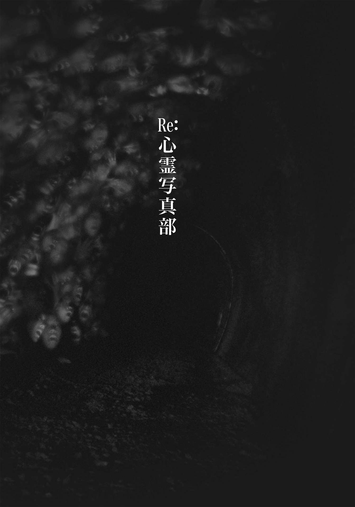
しんれいしゃしん【心霊写真 psychic photography】
通常では考えられない像が写った写真。１８６１年、アメリカのマムラーWilliam Mumlerが死んだ親族の姿を偶然に写したのが最初といわれる。近縁の現象に、福来友吉が１９１０年に発見した念写thoughtographyがある。これは、心で念じた像を直接写真乾板に感光させるものである。物理的手段を用いずに行われるため、超心理学では両者とも念力によるものと考えられている。信憑性に関しては疑問を抱く専門家が多い。
（世界大百科事典 第二版）
ドアが開く音がして、我に返った。
いつからここにいるのか思い出せない。記憶が混乱している。
ただ、この無数の写真に囲まれた空間にいると、不思議と穏やかな気持ちになった。
こんなに心が満たされたのは、いつ以来だろう。できるなら、いつまでもここに居たかった。
できるなら......。
床を踏みしめる足音が近付いてくる。目を閉じて、死んだように息を潜めた。
プロローグ
倒れた牧 村 要 が奇声を上げて笑っている。
両手をバンザイするように薄汚れた床に投げ出し、頰 を引きつらせ、まるで酸欠状態の鯉 のように口を開いて悶 えるその姿が、不謹慎にも二 宮 佳 夕 には最初笑っているように見えたのだ。
ふだんは微笑みすらめったに浮かべない部長 がなぜ急に？ と戸惑ったが、一つ上の先輩、寺 久 保 リリも彼の隣に肩を並べるように白目をむいて全身をのけぞらせ、「うごっ！ うごぉ！ うごおお！」と濁 声 で叫ぶのを目の当たりにして、すぐにそれが誤りだと気付いた。
それだけ佳夕の頭の中も、この異様な状況に混乱していた。よく見れば、黒縁メガネの底に沈んだ牧村の両目も白目をむいていた。
ねえ......部長............リリさん............。喉の奥から声を絞り出そうしたが、首筋からじわりと全身に広がった震えが口の自由を奪い、呼吸さえままならない。
どうしたら......いいの......？ 佳夕は唇に手をあてたまま、まるで何かに憑 かれたように全身を繰り返しバウンドさせる牧村とリリを、ただ呆 然 と見守るしかなかった。
第一章 肝試しの女
１
芝 原 彩 矢 が目覚める直前、木々のざわめきに混じって、覚えのある複数の声が聞こえた。
「おぉい......」
「......あやぁ......」
携帯のスピーカーから聞こえてくるような、くぐもった声。
「......ったく......どこ行ったん......」
彩矢は耳を澄ませた。
「......やっぱ中じゃねえの」......雄 平 ......？
「えーっ、またあそこに行くのかよ」......史 也 ？
「でも、さっきもあんなに探したのに」
美 奈 子 もいる......。みんな、あたしを探してるみたいだ。
「ね、絶対やばいよ。助け、呼びに行こ......」
あたし......ここにいるんだけど......。
「携帯は......やっぱ圏外か」
「しょうがねえな」
お願い、気付いて......。
「とりあえず車で行くか」えっ......。
「ああ、急ごう」
ちょ......待って！
三人の声が徐々に小さくなっていく。叫びたくても、喉が締めつけられるように、うまく声が出ない。枝が揺れ、葉がこすれる音にまぎれて、かすかにエンジンを吹かす音がした。
車......？ いやっ、置いていかないで！
わずかな間を置いて、スリップと共に鈍い衝突音がこだました。うめく声が四方から響き、彩矢は腹の底から悲鳴を上げた。まぶたが上がり、まどろむ意識が覚 醒 する。しかし辺りは、まだ悪夢が続いているかのように、漆黒の闇 に包まれていた。
どこなの......ここ......。
ほこりの苦味が唾 液 と絡んで、舌の上でじんわりと広がり、彩矢は顔をしかめた。
体が重い。背中や首、肩、手足の節々がみしみしとうずいた。吐き気や頭痛もひどい。普通なら立ってられない。立ってられ......。
彩矢は自分が今、あお向けに横たわっていることに気付いた。
右手を動かすと、指先が地面に触れた。石のような固い物が散乱した、ごつごつした感触。その奥に、床と思 しき、木の質感が伝わった。彩矢は起き上がろうとした。
いっ......。
身動きが取れない。訳もわからず、腕や足をばたつかせた。
強く締めつけられるような......押さえつけられるような。ロープ？ 手錠？ 不穏な妄想が膨らむ。
まさか......あたし、監禁された......？ 緊張のあまり、口の中にたまった唾液を飲み込んだ。変なクスリでも飲まされたのか、手足は感覚さえも麻 痺 しはじめ、ますます自由が奪われていく。このままじゃ、マジでやばい。
彩矢は起き上がるため、無我夢中で両腕に〈動け〉と信号を送り続けた。三度目の起き上がりに失敗した直後だった。ふいに右中指の先に何かが触れた。
......あっ......。指先に神経を集中させ、床にあるそれをなぞる。その手触りに妙な懐かしさと安らぎを覚えた。
......携帯......？ あたしの？ 床に落ちた携帯をたぐり寄せようとしたが、そのボディが少し揺れるだけで、なかなか手に収まらない。指がつりそうになるほど伸ばし、中指と人差し指で先端をつかもうとする。しかし滑ってしまい、数ミリ押し出されて指先から離れる。
あと少しなのに......。
そのとき、ピッという音と共に、周囲がうっすらと明るくなった。見ると床に落ちた携帯の画面が天井を向いたまま鈍く輝いている。
電源が入った？
画面にはお気に入りの壁紙ではなく、薄暗い空間がぼんやりと映し出されていた。画面の右端にカメラのアイコンが見える。
これってカメラ機能？ 自分撮り用のアプリはよく使うけど......。
シャッ......
......勝手にシャッターが......。
カシャッ......
何を撮ってるの？
......でも、今はそれよりも早く助けを呼ばないと......。彩矢はすがるように携帯をつかもうとした。しかし腕はさらに強い力で締めつけられ、動きを封じられる。
な、なんで!?
彩矢は震えながら首筋に力を込め、それまで以上に頭をぐっと持ち上げた。そして腕に目をやった。画面の光にほんのりと照らされたのは、ロープや手錠ではなかった。子供のように小さく青白い手がいくつも伸びて、腕を押さえていた。
ひぃっ！ 彩矢は顔を引きつらせた。見ると左腕も闇から伸びた、異様に細く長い腕につかまれていた。両足も同様だった。
だ......誰か......誰か！ のけぞるように暴れたが、徐々に冷たい気配が全身を覆い、麻酔を打たれように感覚が失われていった。
カシャッ......
もはや画面に目を向ける余裕はなかった。
生々しい異臭が鼻を突き、肌が総毛立った。彩矢は顔を歪 め、激しくむせると、思わず天井を向いた。
あっ......。
天井から下りてきた人影が、ゆっくりと音もなく顔に近付く。
声を上げる間もなかった。画面のバックライトが力尽きたようにふっと消え、彩矢は闇にのみ込まれた。
２
季節外れの長雨がようやく上がり、空は雲一つ無い晴天に恵まれたものの、高校の周辺を囲む田んぼからカエルたちの淀 んだ鳴き声が四方で響き、通学途中の佳夕は憂 鬱 になった。
東京とは名ばかりの、自然が豊かすぎる武蔵 野 のはずれ。校名が少しばかり嫌みにも感じられる都 立 緑 が丘 高校に、佳夕が入学して一ヵ月が経った。
ずっと息が白くなるほどの肌寒さだったのに、今朝は汗ばむくらいの不快な蒸し暑さ。めまぐるしい季節の変化が佳夕の足取りをいっそう重たくさせた。
「よっ、おはよ」
校門を抜け、校庭に踏み込んだ佳夕に背後から声をかけてきたのは、クラスメイトの早 瀬 章 吾 だった。
「おはよ......」
「どうした？ 元気ないな」
章吾は別の中学の出身だが、たまたま席が隣同士になり、おたがいに中学時代テニス部に入っていたことから、なんとなく無駄話が途切れなかった。しかし時折、彼氏みたいな妙になれなれしい態度を取られるので、今のように気持ちが優れないときにはあまり話をしたくない相手でもある。
「そういえば放送部入ったんだっけ？ どうなんだよ、放送部は」
気を利かせて、話題を変えたつもりが逆にビンゴだった。憂鬱な理由は、もちろん両性類たちの合唱や蒸し暑さだけじゃなかった。
「......辞めたの」
「えっ？」
「辞めちゃった」
「どうして？」
「なんか......合わなくてさ」
中学とは違うことがしたかったから、あえて文化部を選んだのに......。放送部は確かに「全国大会で優勝」が売りの名門らしいけど、結局は顧問の先生が書いたシナリオ通りに、生徒たちはコマのように動いているだけ。それじゃ、ひたすら顧問の指示で画一的なトレーニングに明け暮れた中学時代と変わらない。
「そっか。だったらテニス部来ないか？ 中学のときは大会にも出たんだろ。歓迎するよ」
章吾は優しく微笑んだ。入学当初から彼はしきりにテニス部を勧めてくる。
「......考えとく」
せっかくの高校生活、もっと生徒の自主性を重んじて好きなだけ没頭できる部活がしたい。
とはいえ、これは！ という目星があるわけでもなかった。昼休み、佳夕は文化部の部室が並ぶ校舎Ｂ棟一階を訪れた。それぞれの部室の雰囲気でもチェックして参考にしようと思ったのだ。だが、部室ドアの窓ガラスには中からカーテンやポスターが貼られていてなかなか覗 くことができない。結局、ドアの上にある表札で部の名前を確認するしかなかった。
放課後とは違い、閑散とした廊下を一人歩く。美術部に文芸部、そして放送部と来て映画研究部、茶道部もあるが、どれもいまいちピンとこない。あとは......奥の階段の並びにある吹奏楽部や軽音部？ うーん、楽器には興味がないし。
行き止まりの階段に近付き、あきらめて教室へ帰ろうとしたとき、ふと階段の奥に目が行った。これまで同様、向かいのＡ棟につながる廊下に部室のドアが並ぶが、違うのは、一つのドアの前に女生徒が立っていることだ。
......部員？ どこの？
女生徒はただ目の前のドアをじっと見つめている。長いストレートの髪に、すらっとした細身。ややウェーブのかかった癖毛で、油断すればポッチャリと言われかねない自分とは対照的だ。なんだろう。どこか普通の生徒とは違う、独特のたたずまいが漂う。横顔は髪に隠れてはっきりしないが、整った顔立ちを予感させた。
ふいに女生徒が背を向け、歩み出した。細く華 奢 な後ろ姿が一番奥の階段に入って見えなくなると、佳夕は彼女が立っていたドアに近付いた。表札には『写真部』とある。
「写真部......」
最近は女子の間でも人気らしい。でも私、一眼レフとか触ったこと......。
（おい、大丈夫か？）ふいに父親の、心配する声が脳裏に蘇 った。
（ヘーキだよ！ カユもとるの！）小学生の私が駄々をこねて、大きなカメラを両手で構える。
......そうだ。私は一度だけ、外で一眼レフカメラを使ったことがあった。たしか夏休みの夜......児童公園での町内の花火大会。みんなが花火を楽しむ様子を私はカメラで撮っていた。
幼い頃、父親の一眼レフにあこがれていた。当の父親は安いコンパクトカメラを買ってあげると言ったが、それでは納得しなかった。あの頃は、いつか一眼レフを使える大人になりたいと真剣に思っていた。
......あれ？ でも父親は結局、一度も一眼レフを使わせてくれなかったような。じゃあ、あのとき使った一眼レフは誰かの......？ 記憶が曖 昧 だ。
佳夕は懐かしげに笑みをこぼした。
あれ以来、カメラはほとんど触っていないけど......写真部も悪くないかな......。
「あ、入部希望？」
耳元で弾んだ声がして振り向くと、また別の女生徒が笑顔で立っていた。ポニーテールがよく似合う、ちょっとギャルっぽい雰囲気の子だ。
「えっ、あっいや、その」佳夕が口ごもる。ギャルは「どうぞ、どうぞ。大歓迎よ」と手をつかんでドアを開けるや、有無を言わさず部屋に押し込んだ。
「部長！ 入部希望者みたいですよ」
窓際の机でパソコンの画面を見つめる黒縁メガネの男がいる。彼が部長......。
「見学？」画面に目を向けたまま、部長と呼ばれた男子生徒は冷静な口調で尋 ねる。
「えっと......見学っていうか......」佳夕は戸惑いながら室内を見回した。写真部らしく、棚には一眼レフカメラや三脚、クリアファイルが並び、白い壁にはたくさんの写真が貼られている。
「君、写真が好きなの？」
「......まあ、嫌いじゃないですけど......」
佳夕は右の壁に貼られた写真に目をやった。集合写真や記念写真、気軽に撮られた日常のスナップ写真。写真部っていうから、もっとアートっぽい感じの写真かと思ったけど......。
「これって......部員が撮ったんですか？」
「ん？」部長が不思議そうに佳夕を見た。「......いや、あちこちから集めてきたんだ」
「集めて......？」
「そっ」ギャルが笑顔で覗き込む。「ネットとか知り合いを当たってね」
「えっ、でも写真部って......」
「うちは写真部は写真部でも『心霊写真部』なの！」
「はい？」
「表札見なかった？」
佳夕は慌てて廊下に出て表札を見る。たしかに『写真部』の左隣に、紙に手書きで小さく『心霊』と書かれて貼られている。うそ......。
「ねえ、せっかくだから話だけでも聞いていってよ」ギャルは慣れっこなのか、呆 然 とする佳夕の背中を叩 いて、部室の椅 子 に座らせる。
「うさん臭そうに見えるけど、実は30 年以上の歴史があるのよ」
30 年以上って......いったいどんな経緯で学校は許可したの!?
「ま、ずっと休部だったけどね。同じく部員がいなくて休部状態の写真部を間借りしてるの」
聞けば、このポニーテールのギャルは寺久保リリ、二年生。そして窓辺でパソコンに取り込んだ写真を眺めるのが、部長の牧村要、三年生だ。彼が無類の心霊写真マニアで、一年のとき、ずっと活動停止状態の心霊写真部の存在を知った。記録によると、発足当時は空前のオカルトブーム＝心霊写真ブームだったそうで、部員数も数十人いたそうな。そこで彼は在りし日に思いをはせ、「心霊写真の研究を通して、超常現象の謎を科学的に解明することを目的とする」などともっともらしいご託を並べて、担任に顧問になってもらい復活させたというのだ。他にも籍だけ置く〝幽霊部員〟もけっこういるようだが、まともに活動しているのはこの二人だけらしい。
「どう？ 入ってみない？」リリが笑顔を近付けた。
そりゃ、まだ部活は決めていないけど......。いやいや、そんな心霊写真なんて......。
佳夕は苦笑いして唇を開いた。
「でも、私......心霊現象なんて......信じて」
そのとき足下でかすかな音が聞こえて、佳夕は目線を下げた。机の下で何かがうごめいた。それは青白い女の顔で、佳夕をぎろっと睨 みつけている。
佳夕は自分でも信じられないほどの悲鳴を上げて立ち上がり、机から後ずさりした。
「どどしたの？」リリもつられて立ち上がっていた。
佳夕は震えながら机を見下ろし、「今......そこ......」と指を指したが、人影はなかった。
リリは屈んで、机の下に顔を近寄せた。
「あっ」そう言って床に落ちていた一枚の紙を拾った。「この写真ずっと探してたんだよ」
その声に牧村も立ち、近付いて写真を見た。「おかしいな。そこも見たはずだけど......」
首をかしげる牧村の横で佳夕も写真を覗いた。古びた建物を背に、大学生だろうか、男一人女二人が写っている。女二人はピースサインをして、左端の男は西洋人形を自慢げに持っている。
「ほら、あちこちに、子供の顔のようなものが写っているでしょ」
リリが、三人の背後の窓や壁を指す。確かに小さな顔のようなものが、いくつか見える。けっこう鮮明だ。しかし、なんだか窓の反射やほこりのいたずらにも......。
「送り主は不明だ。ただこの写真だけがうちのサイトに送られてきた」
牧村は机のパソコンにちらっと目を向けた後、再び写真を見つめた。
「たぶん肝試しの写真だが、妙に気になる......。視線を感じるんだ。見られているような」
見られている......？ リリが指摘した以外にも、廃虚の壁や窓に写る影はどこか人の顔に見えて、なんとなくこっちを睨みつけているような視線を感じなくもない。
「メンバーはここに写る三人と、あとは......おそらく写真を撮った男が一人」
「え？ どうしてですか」
「もしも撮影者が女だったら、男一人女三人になる。そんなメンツでこんな場所には普通来ないだろう」
「そっか、男だったら男女ペア......それでこの廃墟......。やっぱり、肝試し......」
うなずく佳夕の横で、リリが写真を手にして再び指した。
「あたしが気になるのは、この男の人が持つ人形」
赤いドレスを着た西洋人形。汚れが目立ち、かなりの年代物に見える。
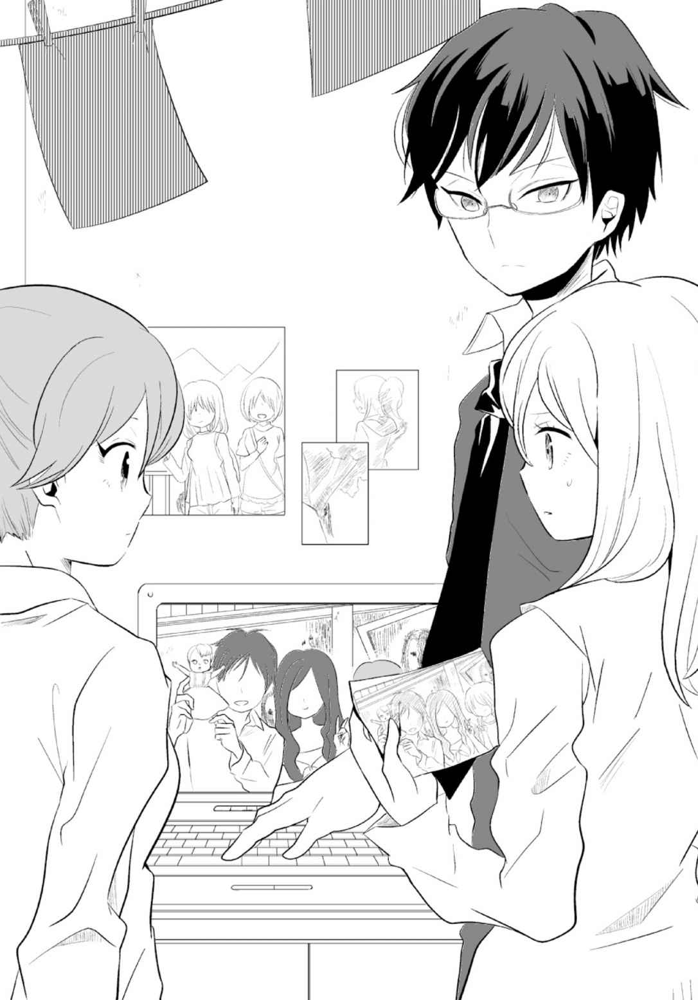
「肝試しの戦利品だな」
「あったよね、都市伝説。廃病院からメスを持ち出したら、後から家に電話がかかってきて『返して！』って」
嬉 々 とした表情のリリの隣で、いつしか佳夕は怪 訝 そうに写真を見つめた。
「気になる？」
「まあ......そうですね」
「実は土曜に行くつもりなんだけど」
「え？」佳夕は思わずリリを見た。
「〝部活〟よ。現地に行って調査するの」
「......場所わかっているんですか」
「山間の廃屋みたいだ。ネットではよく知られている」牧村が冷静に答える。
「なんか殺人鬼がここに死体を捨ててるって噂 もあるんだよね」
「殺人鬼......!? 」
顔をしかめる佳夕に、リリは怖がらせる気満々で、いたずらな笑みをこぼす。
「マスク殺人鬼って知ってる？」
「聞いたことは......」
「最近、都内で起きてる、未解決の連続殺人事件。犯人は......不気味なミイラのようなマスクを着けて、殺した死体と記念写真を撮ったり、まわりの風景を撮った後、死体をどこかに隠してしまう......。後日、写真だけが、犯行声明のように警察やマスコミに送られてくるんだ」
「死体が捨てられた場所......」佳夕は緊張しながら声を絞り出した。
「あくまで噂さ。この手の廃墟ではよく聞く話だ」
「そうなんですか......」
「で、どう？」リリは相変わらずニヤニヤしている。
「どう......って......」
「この写真の謎が解けるかもよ」
そう言って手渡された写真を、佳夕は無言のまま見つめ続けた。
結局断ることができなかったのは、自分自身少なからず興味があったんだろう。佳夕は校庭で立ち止まり、スクールバッグから写真を取り出した。
「気になるなら持って行ったら？ データはパソコンにあるから。どうぞどうぞ」
まさか部活の見学で心霊写真をもらうなんて......。
でも、この写真。なんだろ......。廃虚の肝試し......。どうして気になるの......？ 自分でも信じられない。ううん、やめよ......心霊写真なんて......。
ため息をつき、バッグの外ポケットに写真を入れて肩にかけた。歩き出そうとしたとき、急に首筋がじんと熱く重くなり、悪寒がざわっと広がった。
えっ......？ 佳夕は身震いして振り返った。今の......。
辺りに、他に人はいない。校庭の先の校舎を見上げた。屋上の柵 越しに誰かが立っている。
長いストレートの髪......そのすらりとしたシルエットに見覚えがあった。
部室の前にいた......あの子。表情ははっきりしないが視線は自分に向いている気がした。
私を見てる？ 誰？ 同じ中学じゃないし。部活で練習試合をした他校生？ なら覚えているはず。でも、どこかで......。記憶の断片がうずいた。うーん、このまま帰宅してもたぶん気になるし。
佳夕は小さくうなずき、足早に校舎へ戻った。知り合いなら確かめておこう。階段を駆け上がり、最上階のドアを押し開けて、屋上へ入った。
頭上の夕焼けが少しだけ間近に感じられた。東側の柵に、彼女は背を向けて立っている。まだ校庭を見下ろしている。佳夕はドアをそっと閉めた。そのかすかな音に反応したように彼女が振り向いた。見知らぬ顔だ。平凡な自分など足下にも及ばぬ美しい顔立ち。その目には不思議な力強さがあり、色白で華奢だが弱々しい感じはしなかった。
どうしよう......思い切って話しかけてみる？
ためらいを見せていると、ふいに少女が佳夕に向かって歩き出した。佳夕は緊張で唇をきゅっと引き締めた。しかし彼女は特に意識することもなく、あっけなく横を通り過ぎた。背後で、ドアノブを握り回す音が静かに響いた。
いいの？ ......このままだと帰っちゃうよ......でも、そもそも何をどう話しかければ......。
「──その写真」
澄んだ声色が耳を打った。振り返ると、少女の視線は佳夕の顔ではなく、もう少し下の、肩にかけたバッグに向けられていた。外ポケットからは、あの廃虚の写真の左端が飛び出ていた。
「......これのこと？」佳夕は写真を抜き出した。
「......持ち歩かない方がいい......」少女は一 瞥 もくれずに言った。
「......それって......呪いや祟 りがあるってこと？ これが心霊写真だから？」
「遊び半分に撮るような写真じゃないの。写真を撮るだけでも、彼らは大切な物が失われたと思ってしまう。怒らせるだけ」
「彼らって......」佳夕は改めて写真を見た。「たしかに子供のような顔が写っているけど......」
「それだけじゃない。他にも写っている。もっと危険な......」
「どこに......」
「知らなくてもいいことだってある」少女は佳夕に背を向け、再びドアノブを握った。
「待って」今度こそ佳夕は声に出して呼び止めようとした。
しかし少女は無視してドアを開ける。
「ね、知りたいの。この写真がなんでこんなに気になるのか。本当のことが......」
少女がふと思い立ったように立ち止まり、振り向いた。そして佳夕を見つめると、ゆっくりと唇を開いた。
「写真の見方は一つとは限らない......」
「えっ......？」
少女は校舎へと戻り、ドアの閉じる音が、夕日の沈みかけた薄暗い空に響いた。
一人残された佳夕は改めて写真を見やった。そのとき、スクールバッグの中から携帯のバイブ音が響いた。さっき知り合ったばかりの心霊写真部の部員、リリからのメールだった。
写真が撮られた廃墟へ行くという〝部活動〟への正式なお誘いだ。
冗談じゃない。普通なら断るに決まっている。でも......。
メールに記された待ち合わせ場所に自然と目が向いていた。
どうかしてる......。
写真が撮られた場所は東京から電車で一時間ちょっと。マニアの間でも噂の絶えない、閉鎖された山間の療養施設だった。
３
週末の土曜、佳夕は、牧村、リリと共に、写真が撮影されたと思われる神奈川県郊外の廃墟に行ってみることにした。
曰 くありげな山間の施設。地元でも有名な心霊スポットらしい。最初は不安の方が大きかったが、写真の秘密を知りたいという好奇心に勝てなかった。東京から電車で一時間。それ自体は噓 ではなかったが、あくまで廃虚から一番近い駅までの時間で、さらにバスを乗り継いだ。
問題の山に近付く頃には、民家も消え、周囲は深い木々に囲まれていた。自分たちだけのバスの車内で気晴らしに携帯を見ると、圏外ではないものの、アンテナマークは一本と二本を行ったり来たりで頼りない。時刻はすでに十二時を過ぎていた。
......朝イチで出たのにもうこんな時間、大丈夫？
牧村によると、山の施設は戦後まもなく閉鎖され、ずっと放置されているらしい。ネットでは、解体の工事をはじめると、必ず事故やトラブルが発生するという定番の噂が流れていた。
「でもネットの噂が、すべてウソばっかりじゃないみたい」
隣の窓際の席に座るリリがチョコスナックを食べながら言う。すると前の席に一人座る牧村が振り向いた。
「ある掲示板では、四月の下旬、廃墟に入った若者たちの車が、近くの山道で事故を起こしてパトカーや救急車が駆けつける騒ぎがあったと書き込まれていた。しかも女の一人が病院に運ばれ、まもなく死亡したらしい」
「じゃあ、その事故が、今回の写真と何か関係があるのかも......」
女が死亡って......、もしもそれがあの写真に写ってる、どちらかだったら......。
「ただ、新聞のデータベースをいくら調べても、そんな事故の記事はなかった。普通、死亡事故なら、地方版にでも小さく載るはずだからね」
ゆるやかな右カーブを曲がり終えた直後、バスが目的の『霞 目 峠 』をアナウンスする。部長が停車ボタンを押し、ほどなくして、物寂しいサビだらけの停留所の横でバスが停まった。辺りは電灯もない。日が暮れたら本当に遭難しそうな雰囲気だ。
携帯を確認した後、牧村が前方を指した。道端に枝分かれするように、鋪装されていない、車が一台入れるかどうかの幅の細い道があった。うっそうとした木々に囲まれ、見るからに寂しげな道に、不安がじわじわと募る。
「地図にも載っていない道でしょ。ぞくぞくするぅ～」相変わらずリリさんは呑 気 だ。
「行こう」
牧村とリリが歩み出し、佳夕も渋々後に続いた。道を数歩進んだとき、佳夕はミニスカートにサンダルというファッションをしてきた己の認識の甘さを悔いた。ハイキング、いや、ちょっとした公園の散歩程度に考えていた。今にしても思えばバカ丸出しだが、後の祭りだ。もっともリリもミニスカートにハイヒールという佳夕の上を行く無謀な服装ながら、牧村の後を全く意に介さず付いていく。
ったく、何なの、この二人......。
周辺の自然がますます濃さを増す。よく見ると、道の右端には崖 のように急な斜面が迫っていた。斜面にも木々が伸び、草木が青々と茂り、崖の底が見えない。
すべり落ちたら、やばそう......。
佳夕は斜面を見下ろしながら歩いていると、あることに気付いた。
「......ね、リリさん」
佳夕の声に、先を見ていたリリが振り向き、近付いた。
「どうしたの？」
「ほら、ここだけ......」
木々が不自然になぎ倒されて、ぽっかりと空間ができている。折れた幹の断面は、そんなに日が経っていないように思われた。しかも周囲の地面では何かが反射している。
「あ、車のミラーじゃない？ じゃあ、ここから落ちたの？」
リリの言う通り、目をこらせば、割れたガラスや金属の破片があちこちに散らばっている。
「たぶん運転を誤ったんだろうな。肝試しの連中かな」
いつのまにか牧村が戻ってきて、リリの横で腕組みをして斜面を見下ろした。
じゃあ、事故の噂は本当......？ 佳夕はなぎ倒された木々に再び目をやった。よく見ると、ミラーの破片のすぐ横、倒れた枝と地面の狭間に赤茶色の何かが挟まっている。
なんだろ......。佳夕は斜面に下りて確認したい衝動に駆られた。
「佳夕、もう行こっ」
リリが肩を叩いた。牧村はもうすでに先を歩いていた。ここで置いてけぼりはまずい。佳夕は後ろ髪引かれる思いで、牧村の後を追った。
三人が五分ほど歩いたところで、工事現場によくある、くすんだ黄と黒のストライプのバリケードが現れた。その先は道幅が急に狭くなり、一面雑草に覆われている。
「ネットの情報だと、この先みたいだな」
牧村を先頭に、三人はバリケードの横をすり抜ける。歩道は徐々に斜面から離れていく。周囲はいっそう木々で覆われ、道幅も狭くなっている。地面の雑草も濃さを増し、踏みしめるにもそれなりの力が必要だ。雑草が素足に絡みつき、気持ち悪いことこの上ない。最悪だ。リリが全く物怖じせず前進していくのが信じられなかった。
こんな先に本当に......？ リリの姿が、背の高い雑草群に飲み込まれるように消えた。ちょ、ちょっと待って。佳夕は焦りながら、無我夢中で草をかき分けた。突然、視界が開けた。立ち止まったリリの背中に、ぶつかりそうになった。
リリと牧村は前方を見ている。佳夕は二人の肩越しに視線を追った。写真のままの廃屋があった。山肌の斜面に囲まれるように、年代物の木造家屋が建っている。
「やっと、ついたぁ！」リリがにやりとして声を上げた。
三人は家屋に近付いた。木板を打ち付けた外壁は長年の汚れやシミが蓄積し、一部はまだら模様に変色している。佳夕はバッグから写真を取り出した。牧村とリリも横から写真を見た。
「撮影したのは、この辺りかな？」
リリが実際に壁の前に立ってみる。
牧村は、二人の女の間に見える窓に目を向けた。
「窓は汚れているが、写真に写った〝顔〟とは違うな......。少なくとも子供の顔のようには見えない。光のいたずらでもなさそうだ」
「じゃあ......いったい......」佳夕も、写真の男の背後に写る、写真では顔のようなシミがびっしりと目立つ左端の壁に近付いた。「なんか写真と違いますね。シミの位置や形が......」
木の板が打ち付けられた壁には、写真のような奇妙なシミは一つもなかった。
これがシミじゃないとすると......。
「ねえ、中はどうなっているの？」
リリが引き戸の窓枠から覗く。写真の右端、廃虚の窓に、子供の顔らしきものが写った場所だ。牧村と佳夕もリリに歩み寄った。
薄暗い室内は十畳ほどあった。壁は砂や泥で汚れ、床にはガラスの破片や材木などの廃材が散らばっている。肝試しの名残か、ジュースの缶やスナック菓子の袋も目にとまった。
「ここが入口？ 土間っていうの？」
リリは、傾いている木の枠をまたぐように右足を突っ込み、頭を下げてくぐった。
えっ、本当に入るの？ ためらいがそのまま声になって出かけたが、ぐっと飲み込む。そうしている間にも隣で牧村が「二宮さん、気をつけて」と、リリに続いて中に入ってしまった。佳夕は内心もう帰りたかったが、外に一人取り残されるのも心細い。
......そうよ。ここまで来たら、写真の謎を解く手がかりを見つけるべきでしょ......。そう自分に何度も言い聞かせながら、二人の後を追った。
室内には古い建物特有のすえたようなにおいが充満していた。空気のめぐりは悪く、淀んでいる。佳夕は思わず左手で口をふさいだ。木製の床は踏みしめると、みしっと音がして簡単に抜けてしまいそうだ。天井の穴からも、ぽつぽつとホコリや砂が漂い落ちる。
三人は散乱したゴミを避けながら廊下に入った。並んだどの部屋にもサビだらけのパイプベッドがひしめき合い、床には藁 が飛び出した布団や黄ばんだシーツが散らかっている。天井はチェス盤の升目のようにところどころ抜け落ち、屋根裏がむき出しになっている。
「やっぱりここ、病院だったのかなあ......」リリが室内を物色するように、つぶやいた。
「昔はこの手の隔離施設がいっぱいあったみたいだな」
「隔離施設って？」
「結核などにかかった患者を、人里離れた施設に集めたんだ」
「でも、なんでこんな不便な山奥に？」
「そりゃ、患者が逃げ出せないようにするため......かな......」
牧村はちょっと自信なさげで歯切れが悪かった。
二人のやりとりを耳にしながら、佳夕はふと右側の部屋に目をやった。他の部屋よりもパイプベッドが少ない。空いた空間に、白い何かが立ちすくみ、かすかに左右に揺れていた。
えっ......。
佳夕は驚き、思わず足を止めた。
白い和服を着た、髪の長い女がロープで首を吊 っていた。
「ひぁっ！」
佳夕は思わず悲鳴を上げた。リリと牧村が佳夕に駆け寄り、部屋に目を向けた。天井からロープが吊 されている。しかしその先端には、人の頭ほどの大きさの輪が作られているだけで、首吊りの死体はどこにもなかった。
うそ......いまたしかに......。
「なにあれぇ......ここで誰かが自殺？」さすがのリリも露骨に顔をしかめた。
「わざと廃墟に来て死ぬ人もいるからな」牧村は部屋に入り、ロープを見上げた。「でも、いたずらかも」
「そうなの？」
「心霊スポットにはよくあるんだ。怖がらせるために、わざと仕掛けておくのが」
佳夕も恐る恐る二人の後ろからロープを見た。ロープは、天井の穴からあらわになった横柱にくくりつけられていた。年代物の薄汚れたロープには何とも言えない説得力があった。
「ね、あれ」リリがロープの先にある部屋のふすまを指差している。四隅が退色したガムテープが荒々しく重ねて貼られ、まるで厳重に封印しているかのようだ。
「なんか、やばそうですね」
妙な不安がよぎった。まさかリリさん、開けるとか......？
案の定、リリはふすまに近付き、ガムテープをベリベリと引っ張った。テープは力なくふすまからはがれ落ちる。そして部長と目を合わせ、小さくうなずいた後、ふすまを一気に開けた。
次の瞬間、押し入れに詰め込まれていたものが勢いよく吐き出された。
「きゃあっ！」リリが尻 餅 をつき、後ずさりした。ほこりが舞う中、佳夕と牧村がリリに歩み寄った。
「大丈夫ですか？ リリさん......」
「もうなんなの......」
リリがスカートの汚れを払いながら立ち上がった。足下の床には無数のゴミが......いや、よく見ると、そこには人形が散乱していた。数にして数十体はありそうだ。セルロイドやソフトビニール、布、木、ブリキ。女の子の人形を中心に、男の子、赤ちゃん、ロボットなどもあった。青や緑、黄に白......。どれもアンティークトイショップで売られていそうなレトロな物ばかりだ。佳夕は腰をかがめると、足下に転がる一つの人形に目をやった。青いドレスを着た女の子の人形だった。
「この人形......」
佳夕ははっとして写真と見比べた。男が持っているのは、赤いドレスの人形だ。
「あ、似てる」
リリも声を上げた。服の色が違う以外は、服や髪型もほぼ同じタイプの人形に思える。
「人形はここから持ち出した？」牧村は押し入れに視線を向けた。
佳夕は押し入れにうっすらと広がる闇を見つめた。今、ふすまを開けただけで、中の人形が吐き出されるように散乱した。確かにたくさんの人形だけど、押し入れを一杯にするほどじゃない......。あの勢い、まるで奥から押し出されたような......。
ふいに闇の奥で、いっそう黒さを増した影がうごめいた。
あっ......。佳夕は息をのんだ。
「あれっ、いま......」リリが耳を澄ませるような仕草をして、つぶやいた。
「どうした？」
牧村が尋ねると、リリは廊下の方を向いてふらふらと歩み出した。
「小さな子供の声が......したような......」
牧村と佳夕も、リリに続くように廊下に出た。日が陰ったのか、廊下はさっきよりも薄暗く感じられた。
「......見て......」リリが歩きながら前方を指を差す。五メートルほど先に鈍く光る物体が落ちている。
あれっ？ さっき廊下を歩いたときにはあったっけ......。
佳夕は目を凝らした。
廃屋の廊下には決してなじまない、真新しいメタリックな赤......。
「携帯......どうして廃墟に......？」牧村がメガネのフレームに触れ、つぶやく。
リリが落ちている携帯に近付き、拾い上げた。
「赤い携帯......どこかで......」
三人ははっとした。そして佳夕が取り出した写真に目をやった。
「間違いない、同じ携帯だ」
「......やっぱり落としたのかな......？」
「この写真の彼女が持ち主......」
「あ、そっか。この携帯を調べれば、写真の人物を特定できるかもね」
リリが携帯の電源を入れる。液晶の画面がぱっと光り、薄暗い廊下をぼんやりと照らした。
「ラッキー。まだバッテリーが残ってた」
受信アンテナの表示が圏外に変わった。画面を見ると、黒っぽい画像が現れた。
「なに？ 待ち受け？ 変なの」
画像は薄暗いが、よく見ると、汚れた、穴だらけの木の板が写っていた。
「静止画？ カメラ機能で撮ったみたいですね。ここで撮ったのかな」
「なら廊下か？ それともどこかの部屋か？」
「この板の穴......」佳夕がつぶやいた。「紙や布みたいなものがいくつか突き出してますね」
「突き出す？」
「つまり上下逆さま......」
佳夕は天井を見上げた。画像と同じ光景が広がっていた。
「天井だったか......」
「じゃあ、このアングルは......落ちていた携帯が勝手に作動して写真を撮ったのか？」
「あ、それとも携帯を持っていた人がここで倒れたまま撮影したんじゃ？」
「もう、二人ともやめてください......」佳夕は寒気を覚えながら足下に目を向けた。
「ね、ほら、他にまだ写真があるみたい」リリは携帯の画面右に表示されている三角のカーソルマークを押した。画像がふっと変わった。
それは同じ天井の静止画像だった。
「あっ......」
佳夕は微妙な違いに気付いた。
「見て......天井の穴の奥に、ぼんやりと小さな白い影が......」
「ホントだ。なにこれ......」
リリがまた画面に触れる。次の画像が現れた。穴の白い人影が少しだけ鮮明に大きくなった。
不穏な妄想が膨らんだ。
「......まさか......近付いている......？」
リリが緊張しながら画面を押した。四枚目の画像では、白い人影の頭がぬっと穴から突き出ている。
「これって連続で......」佳夕はもはや天井を見上げる勇気はなかった。
リリがやけくそ気味に画面を押した。五枚目の画像が音もなく現れた。白い人影は穴から抜け出て、床にあった携帯のカメラのレンズに向かって襲いかかるように落下した直後だった。激しくぶれているが、白い顔はじっとこちらを睨みつけている。ちょうどいま......佳夕たちの頭をめがけて......。
ふいに画面が真っ暗になった。重く冷たい風が、天井から吹き、佳夕の頭のつむじから両耳をかすめた。ざわざわと全身に悪寒が広がり、肌が総毛立った。佳夕は息をのんだ。耳元で音がする。うめき声だ。震えながら声のする右側に顔を向けた。
傍らで牧村とリリがうなだれたまま、体を小刻みに震わせている。
リリの手から携帯が落ちる。牧村ががくんと膝 をつき、大きくのけぞったかと思うと奇声を張り上げた。顔面は青ざめ、時折歯ぎしりをしながら、両目は白目をむいている。リリも膝を折り、両腕を床にだらしなく伸ばした直後、反り返って絶叫する。二人は崩れるように仰向けに倒れ、苦しそうに首に手をかけ、全身をびくんびくんと激しく波打つように痙 攣 させた。
「部長！ リリさん！」佳夕が慌てて二人に触れようとしたとき、嗅 いだことのない腐敗臭と共に、足下から得体の知れない重みがみしみしと全身に広がる。うまく力が入らない。手に持っていた写真が床に落ちる音が静かに響いた。
ああっ......。
佳夕は抗 う力もなく廊下に沈んだ。うつぶせになった顔面がちりやほこりにまみれた。むせながら必死に起き上がろうとしたが、上から押しつけられて、腕が床から離れない。周囲で奇妙な声が聞こえる。それは徐々に増え、いつしか数え切れないほどの音の壁となって、佳夕の身体のまわりでこだました。一段と高まる異臭に顔を歪め、かろうじて動く首筋で床についた頭を動かし、周囲を見た。
無数の小さな黒い影がうごめいていた。赤ん坊らしきものから、手だけがアンバランスに長い四つんばいの幼児、頭が半分欠けている少年など、いびつな子供たちの影がうごめいている。どれも生気が感じられず、明らかに生身の人間とは異なる気配を漂わせていた。
どうしよう......このままじゃ......。
佳夕はできるだけ首を動かし、辺りに目をやる。すると佳夕を囲む影たちの輪が一箇所だけ途切れていた。意識を一点に集める。そこにあるのは......写真。落としてしまった、あの記念写真だった。
写真を影が避けるように動いている。どうして？
佳夕は写真を斜めから見て、びくっとした。
......いま写真の左端に四人目の顔が......見えたような......？ 前はそんなもの見えなかったのに。
徐々に失われていく感覚の中で、右手がかろうじて動くことに気付いた。
さっき驚いた反応で、手の感覚が多少よみがえった......？ お願い......。あと少しだけ力を......。
右腕に全身の神経を集中させた。
ずっ......。押さえつけるような力に抗いながら、右手がゆっくりと写真に近付いた。
やっぱり......。写真との距離が短くなるにつれ、抵抗が弱まる。指先が写真に触れると、佳夕はそれを一気につかんで、顔に引き寄せた。
何度も見た、男女三人が写った写真。廃墟の窓に写るのは、ここにいる影？ つまり子供の霊？
でも、まだ写真には秘密があるような気がした。佳夕は真剣なまなざしで写真を見つめた。
いま、見知らぬ四人目の人の顔が見えたはず......。子供じゃない。どうして？
（他にも写っている。もっと危険な......）
屋上で出会った少女の言葉が脳裏をかすめた。他にも......？
じっと写真を見つめた。
......あれ......。人形を持つ男の背後に見える廃墟の壁......。特に目立つ、奇妙なまだら模様のシミ。本物の壁とは色や形が違っていた。これって......。
（写真の見方は一つとは限らない......）
見方......。佳夕は恐る恐る写真を見る角度を変えた。斜めにしてみるが、はっきりしない......。写真をじっと見た。そして思い切って上下をひっくり返してみた。廃墟の壁、そこに浮かんだシミと思われたのは......。佳夕は愕 然 とした。
そんな......女が睨 みつけている......！ この顔......どこかで......。そうだ......あの部室で......机の下で見た女の顔によく似ている......。
リリのうめき声が高まった。佳夕は振り向こうとして、腕だけでなく、体が多少言うことを聞くようになったことに気付いた。
今なら......。息を吐き、左手をついて体を起こした。そして牧村とリリに目を向けた。
「！」
さっきまで見えなかったものが、そこに存在していた。仰向けに横たわり、全身を痙攣させる二人の間に、ぼさぼさの長い髪の女が屈 んでいる。そして右手で牧村の首を、左手でリリの首をぎりぎりと締め上げていた。女の、かっと見開いた憎悪に満ちた目は、写真の逆さに写った顔に瓜 二つだった。白い着物の女......。そうだ、あれは携帯に連続で写っていた白い影と同じ......。よく見ると、女の首にはロープで締められたような紫色のアザが生々しく浮き出ていた。二人の首を絞め続ける女を前に、佳夕はうろたえ、なす術もなく立ちすくんだ。
や......やめて......！ 恐怖でうまく声が出ない。
どうしたら......？ 焦る佳夕の足下に再び黒い気配がざわざわと囲み始めた。まるで女を守るように、影が佳夕の全身から力を奪っていく。
このままじゃ......みんな......。
淀みゆく意識の中で、リリの肩の近くに落ちている赤い物に目がとまった。薄暗い床に横たわる、赤い人形。
えっ......！ だが、よく見ると、それはあの赤い携帯だった。いま、一瞬、携帯が人形に見えた。
......同じ赤。赤い人形......。......写真に写っていた人形......。
......私、あの人形を見たことがある......。どこかで......。
廊下を振り返り、今来た部屋の方を見た。人形があふれた部屋......。色とりどりの人形......。だがそこに赤い人形はなかったはず。ふいに部室での言葉が浮かんだ。
よくある都市伝説。肝試しの戦利品......。
あっ......そうだ......。ここに来る途中の斜面にあった、木々がなぎ倒された車の跡。あそこに茶色......いや、砂で汚れた赤い切れ端が見えた。まさか、あの人形......？
佳夕は、ふらふらと立ち上がると、苦 悶 する二人に背を向け、歩み出した。
ごめん、部長、リリさん、すぐ戻るから！
まだ少しだけ力は残っていた。よろめきながらも、廊下から人形の部屋を覗く。押し入れからあふれた人形たちの無機質な目すべてが、佳夕を見つめているように思えた。
足を引きずるように廊下を進み、家屋を出た。外は日が傾き、夕暮れが間近に迫っていた。
早くしないと......真っ暗になったら道もわからなくなっちゃう......。
千鳥足で獣道に入り、雑草をかき分けた。体がだるく、太ももや肩、首が異様に重く感じる。
私......とり憑 かれてるの......？ 振り払うように体を揺すりながら進んだ。
獣道は永遠に続くような気がしたが、突然、ぱっと道が開けた。バリケードだった。
やった！ 佳夕は斜面に近付いた。たしかに、倒れた木の枝と地面の狭間に赤っぽい布の切れ端が見えた。きっと人形が隠れているはず。慎重に斜面に足を踏み入れた。体の自由があまり利かないまま、そろそろと下りていく。足が引っ張られるような感じがし、足下の砂が滑った。
「きゃっ！」尻 餅 をつき、そのままなぎ倒された木の太い幹に全身をぶつける。「いったっあ......」砂まみれになりながら、ぜえぜえと息を吐いた。でも......助かった......。
左足のくるぶし近くの枝に、赤い布が見えた。これ以上滑らないように慎重に左腕を伸ばし、布をつかむ。この先に人形が......。ゆっくりと引っ張る。しかし、つかんだ布は、手応えもなく、するりと枝の下から抜け出てきた。
......えっ。それはハンカチだった。呆然と佳夕は天を仰いだ。
「そんな......そんなぁ」深くため息を漏らし、放心状態で両手を地面についた。右手に奇妙な感触が伝わった。右手を上げ、斜面を見る。土に埋もれた、小さな突起物が姿を見せていた。それをつまんで、ゆっくりと引っ張った。砂の中から出てきたのは腕......人形の腕だった。そのまま引き抜く。一体の人形が姿を現した。
ああっ......。写真で見たままの赤いドレスを着ている。興奮で思わず目頭が熱くなった。自分と同様に泥にまみれ、ポニーテールの髪型の人形は優しい笑顔を浮かべていた。
人形をつかむと無我夢中で斜面を這 い上がった。
「さあ、人形を返してあげる！」
最後の力を振り絞って廃屋に向かった。
意識がもうろうとして、その後の記憶は曖昧だった。とにかく闇に向かって、人形を投げ入れたことはなんとなく覚えていた。......でも夢かもしれない。
やがて声に導かれるように、まぶたを上げると、目の前に牧村とリリの顔があった。二人とも安 堵 の笑みをこぼしている。
「佳夕、よかったあ！」
リリに抱きしめられ、佳夕はようやくこれが現実だと実感した。そして全身が心地よい疲労に包まれながら、ゆっくりと微笑み、また眠りについた。
４
五日後、牧村は拾った赤い携帯の持ち主を突き止め、リリと佳夕を連れて会うことにした。
持ち主は写真の右側の女、芝原彩矢・十八歳。実は、写真を心霊写真部のサイトに送ったのは彩矢の母、則 子 だった。彩矢は今も入院しており、原因不明の昏 睡 状態にあるという。高校の最寄り駅である吉 祥 寺 駅前のファストフード店で、仕事帰りの則子と待ち合わせた。
店に現れた則子は写真の彩矢と似た雰囲気で、娘の看病疲れか幾分やつれた感じがした。
日も沈み、混み始めた二階の片隅、窓際のテーブル席で、牧村は廃墟から持ち帰った赤い携帯を則子に渡した。則子はしばらく黙っていたが、携帯を握りしめると、重い口を開いた。
「あの写真は......とにかく気味が悪くて......。何度もデータを削除したのですが、いつのまか元に戻っていて......。勝手に送って、すみません」
場違いに深々と頭を下げる則子に、牧村は同情の言葉を返すしかなかった。
則子は、あの写真を撮影した渡 瀬 雄平から聞いた話として、事のいきさつを話しはじめた。
四月二十二日、彩矢は大学のサークル仲間である雄平、中 岡 美奈子、小 池 史也と、大学から車で一時間ほどの廃墟に行くことにした。雄平の地元で有名な曰くつきの心霊スポットだった。
四人は雄平の車で、午後三時過ぎに現地に到着した。最初は男女一組ずつペアで廃墟に入るつもりだったが、美奈子が怖がったので、結局四人一緒に入った。すると今度は彩矢が「もう出ようよ」とおびえ始めた。それでも「せっかく来たんだから」と三十分ほど練り歩いた。
日も陰りはじめた頃、史也が建物の一室で人形を拾った。その後外に出て、廃墟の前で記念写真を撮った。それがあの写真だった。写真をその場で確認すると、奇妙な顔のようなものがいくつも写っていた。皆は「これ、テレビに売れるんじゃね？」などと、他愛もない会話で盛り上がったが、その最中、気がつくと、彩矢の様子がおかしい。うなだれ、体を小刻みに震わせている。雄平が「大丈夫？」と尋ねると、彩矢は「声がする......」とつぶやいた。
「......赤ちゃんの......声がするの......」
他の三人には何も聞こえない。彩矢は下腹部を痛そうに押さえながら「......呼んでる......行かなきゃ......」と走り出し、廃墟に戻っていった。
三人はあっけにとられながら、慌てて彩矢を追いかけた。しかし屋内のどこを探しても見つからない。裏の山まで声をかけて探したものの、彩矢は忽 然 と姿を消してしまった。携帯を使おうにも圏外だ。三人は仕方なく助けを呼びに行くため車に乗り、来た道をＵターンしようとした。すると突然、車の前に一人の子供が飛び出した。運転していた雄平はとっさにハンドルを切り、誤って車は斜面に滑り落ちた。三人はケガをしながらも、車の割れた窓から抜け出し、歩いて山を下りて助けを求めた。
三時間後、警察が駆けつけ、廃墟に入ると、廊下で彩矢が気を失って倒れていた。彩矢は全身がすり傷だらけで、服もひどく汚れ、何日も山をさまよっていたように衰弱しており、すぐさま病院に担ぎ込まれたのだった。
則子は、娘が目覚めないのは、雄平から手渡されたこの写真のせいだと思った。
「......わたし、どうかしていたんです」則子は力なくつぶやいた。
牧村は話を聞きながら、どこか腑 に落ちないものを感じていた。
あのときのことが脳裏をかすめる。
......廃墟の廊下で倒れ、異様な息苦しさと、全身が麻痺するような金縛りに襲われた。意識がもうろうとして、もうダメだと思ったとき、突然、廊下の手前で音がした。その瞬間、体を押さえつける力や息苦しさがふっと消え失せた。不思議に思いながら起き上がると、さっきまであった強い異臭も感じなくなっていた。音の方を見る。赤いドレスの人形が転がっていた。それを手にして、外に出ると、廃墟の入口に佳夕が倒れていた。急いで駆け寄り、頰を叩く。佳夕はうなされるように声を漏らした。きっと、彼女が人形を拾ってきたのだろう......。牧村は廃墟の中へ戻ると、同じように目を覚ましたリリに事情を話し、赤い人形ともども転がっている人形すべてを押し入れに戻し、手を合わせた。廃墟を出て、ほどなくして佳夕が目を覚ました。
自分たちが彩矢のように昏睡状態に陥る可能性はあったのかもしれない。しかし三人とも無事に意識を取り戻した。牧村は、人形を廃墟に返したことで、呪いから解放されたのだと考えた。しかし彩矢は今も眠り続けている。なぜだ......？
「あの......娘さんは、霊感のある体質なんですか？」
牧村は思い切って聞いてみた。
「えっ？ そんな話は......聞いたこと......」則子はいぶかしげに牧村を見た。
「もしも、肝試しの悪ふざけで呪われるのなら......彼女じゃなくて、写真を撮った人とか、人形を持ち帰ろうとした人じゃないかと思うんです。どうして彼女だけが......」
則子はためらうようにしばらく黙っていたが、やがて唇を開いた。
「あの......ずっと気になっていたんです。廃墟で彩矢が言ったこと......」
（声がする............赤ちゃんの......声がするの......）
「実は......娘は去年、妊娠してしまい......。結局......中絶したのですが......」
則子はうつむき、言葉を詰まらせた。
牧村は廃墟から戻った後、図書館で戦前の療養施設について詳しく調べてみた。あの施設を特定することはできなかったが、似たような施設にまつわる秘話もいくつか知った。当時、この手の施設は、外部との接触を断たれ、精神を病む者も少なくなかった。職員からレイプや虐待を受け、妊娠、堕胎を繰り返し、そのあげくに自ら命を絶つケースもあったという。
「あの......」牧村は則子に言った。「さしでがましいようですが......供養はされましたか？」
「......供養？」則子はキツネにつままれたような顔をした。
牧村はうなずいた。「そう、水子の供養を」
「いえ......特には......」則子はそうつぶやき、牧村から目をそらした。
水子の供養......。自分だって、よくわかっていないのにな。なんでえらそうに......。
牧村は少し後悔した。でも、それ以外に、思い当たる節がなかった。
たぶん......あの施設に残る何かが......彼女と共鳴したんだろう......。
則子は目の前にある水の入ったコップを持ち、口を湿らすように水をすすった。
牧村は窓の方を向き、まわりに気付かれないように、軽くため息を漏らした。幹線道路に面しているはずなのに、窓の外は漆黒の闇に包まれていた。
翌日の放課後、佳夕は校舎Ｂ棟の階段を上がり、屋上のドアを開けた。
柵の前で、少女が背を向けて、相変わらず校庭を見下ろしている。
「あの......」
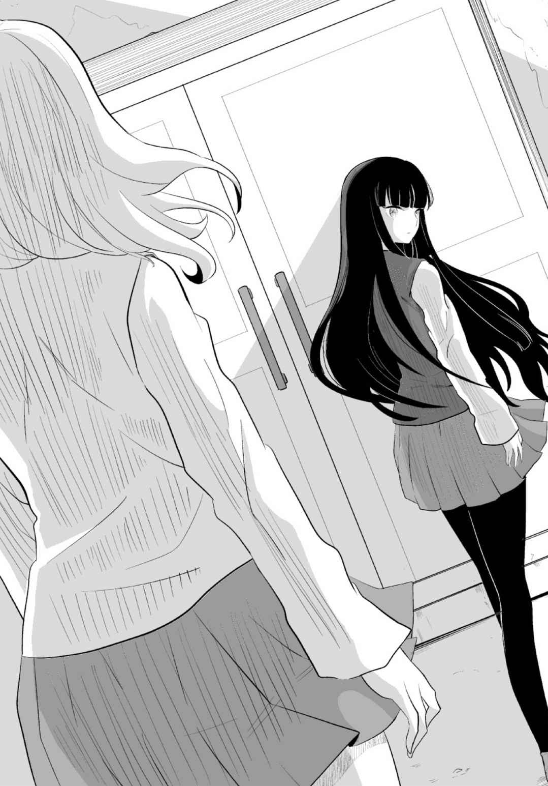
佳夕の声に少女が振り返る。
「ここに来たら、会えると思って......」
少女は佳夕に視線を向けた後、歩み出した。そして佳夕の横を過ぎ、ドアに近付いた。佳夕は少女の後ろ姿を見て言った。
「写真の見方は、一つとは限らない」
少女の足が止まった。
「......おかけで助かりました」
少女は無言のままドアを開けた。校舎の中へ入るとき、彼女の口元がうっすらと微笑んだことに、佳夕は気付かなかった。
第二章 焼かれた顔
１
一曲歌い終えると、岸 本 比 菜 は全身がひどく疲れていることに気付いた。
マイクがふだんより重く感じて、テーブルに置いた。こんなことは初めてだ。向かいのソファに座る愛 は、次にエントリーされた曲を楽しげに熱唱している。両隣でタンバリンやマラカスを振る幸 恵 、梨 々 香 もノリノリだ。見回しても他の部員はなんともないようだ。
ひょっとして、わたしだけ......？ そりゃ練習試合の帰りだから、体が疲れてるのはわかるけど。妙に熱っぽい？ 額や首筋に脂汗がにじんでいる。いやな汗。エアコンはきいているはずなのに。なんだろう、この落ち着かない感じ......。
比菜は部屋の中を見回した。
このカラオケボックスを選んだのは、他ならぬ部長の比菜だった。土曜の午後、バドミントン部の練習試合で他校に遠征した。帰り道、最寄りの駅近くにあるカラオケボックスに皆で入ることにした。練習試合とはいえ、新入部員たちの前で惨敗したストレスを発散したかったからだ。いつもは口うるさい顧問が都合で同行できなかったことも幸いした。
初めて下りた駅前で、なんとなく料金が安そうな店に入った。ビルの中にある、その店はごく普通のカラオケボックスだったが、案内された部屋のドアを開けたとき、変なにおいが漂ってきて、比菜は顔をしかめた。しかも薄暗い室内に誰かがいるような気がした。部屋を間違えた？ だが、よく見ると室内は無人だった。たぶん白い壁に映った自分の影を勘違いしたんだろう。そう思って部屋のソファに腰かけた。
やっぱり疲れてる？ 新部長のプレッシャーかなあ。ま、ちょっと歌えば気晴らしになるでしょ。比菜は皆の先陣を切ってマイクを握った。しかし誰も入力していない、妙に暗い童謡のイントロが流れ始めて、出鼻をくじかれた。
はあ......なんなの......。取り消しボタンを押して、再度曲を入れる。ようやく得意のナンバーが歌えたものの、二曲目を歌う気にはなれなかった。マイクや機械の調子が悪いのか、急に声がしわがれたり、野太くなったり、モニターの映像も二重にぶれたり、歪 んだりした。みんなに受けたから良かったけど......。
気持ちを切り替えようと、スクールバッグから、買ったばかりのコンパクトカメラを取り出した。部長になった記念に親にねだったのだ。もともとはフルＨＤの動画機能で試合を撮るためだったが、普通の記念写真用にも何度か使っていた。いまやカメラもスマホで十分と言われることが多いものの、昔からカメラが好きだった比菜には、手軽にプロっぽい写真が撮れるコンパクトカメラはまだまだ魅力的だった。電源をＯＮにして、向かいのソファで歌う愛たちにレンズを向けた。モニター画面に、歌う愛と、両隣の幸恵、梨々香が映し出される。薄暗い室内でも、顔認識機能がパッと作動し、三人の顔を囲むように四角いフレームが次々と現れた。
......あれ？ なぜか顔認識のフレームが四つ現れた。
画面に映るのは三人、つまり顔は三つ。幸恵、愛、梨々香だ。しかし愛と梨々香の顔の間にある白い壁も顔認識のフレームで囲われている。
比菜は首をかしげた。愛たちは、カメラに気付いて、早く撮って！ と言わんばかりに、歌いながらポーズを決めている。
ま、いっか。比菜はシャッターボタンを押した。
すぐに撮影した画像がモニターに現れた。
「あ、けっこうキレイに撮れてんじゃん。あたしが歌うときもよろしく」
隣の玲 実 が画像を見て微笑む。
「うん、いいよ」比菜は得意げにうなずき、モニターを見た。
それにしても、このカメラの感度良すぎだよ。ただの壁まで顔と認識するなんて......。
苦笑しながら、モニターに映る、顔認識のフレームが誤って表示された、壁に目をやった。
小さなモニターではっきりわからないが、そこには何かが映っていた。比菜は顔を上げると、撮影した愛本人を見た。歌い終えた愛はマイクを置いて、「イエーイ！」と自ら拍手している。彼女と梨々香の間には、やはり白い壁しか見えない。比菜は改めてカメラのモニターに目を移した。二人の顔の間に映るもの。確実に言えるのは、白い壁ではないことだった。
比菜はカメラのコントロールボタンを操作し、画像を拡大した。
入力した曲のイントロが流れ出し、玲実はマイクを握ろうとした。突然、室内に比菜の悲鳴がこだました。隣に座る玲実は驚いて、比菜を見た。彼女はおびえるように震え、カメラをテーブルに投げ出していた。そのモニターには、愛が歌う画像が映っていた。
玲実はカメラに顔を近付けた。さっきより画像がズームされたらしく、愛の顔が大きく映し出されている。
えっ......なに......？ 玲実は目をこらした。
愛の背後に写っていたものに気付いて、玲実は初めて比菜の悲鳴の意味を理解した。
２
仏頂面で廊下を歩く佳夕の背後で、「あ、いたいた！」と弾んだ声がしたかと思うと、振り返るよりも早く抱きつかれた。案の定、リリだった。
「びっくりしたぁ。どうしたんですか」
「じゃーん！」リリは一枚の紙を見せる。『心霊写真部 新入部員歓迎会』という見出しで、場所と日時が書かれている。「入部歓迎会をやろうと思ってさ！」
「......えっ、私のですか」
「もちろん」
「でも私......まだ正式に入部したわけじゃ」
さっきもそのことで教室で章吾と揉 めたばかりだった。
（おまえさ、なんか変なところに出入りしてるって......）
いつまでも部活を決めていない佳夕に関して、友達からよからぬ噂 を吹き込まれたらしい。心配になるのもしょうがなかった。
「......変なところって？」
「ほら......なんか」章吾は口に出すのもおぞましい様子で小声になった。「心霊写真とかさ......」
「いいでしょ、別に」
自覚していることだけに、他人に冷静に突っ込まれると余計に腹が立つ。
「ったく、テニスをやってきたんだから素直にテニス部に入れって」
「うるさいなあ。私の勝手でしょ」
やれやれと呆 れ顔の章吾を残して、教室を出て行った直後だった。
そんな会話を思い出して、佳夕が返答に窮していると、リリは意に介さず、「いいじゃん、いいじゃん、せっかくだから行こうよぉ！」と無理矢理手を引っ張っていった。
......ま、いっか、この後、特に予定もないし。佳夕もあきらめ顔で誘いに乗ることにした。
しかし、このままなし崩し的に部員になるのもためらいがあった。確かに心霊写真部は外からのイメージほど怪しくもなく、妙な居心地のよさもあった。部室に出入りしているのは基本、部長とリリの二人だけ。最初「この二人、付き合ってんじゃないの？」と疑ったが、実際はそんな気配は微 塵 もなかった。リリには正式な彼氏はいないらしいが、男友達も多く、部室に異性と二人っきりでもまったく気にしないタイプだ。部長も、どうやらリリを女として見ていない。
そもそも部活動といっても、部長がパソコンで一人心霊写真を検証し、その間、リリは雑誌を読んだり、お菓子を食べているだけ。もちろん好奇心旺 盛 な彼女だけに心霊写真にも興味津々で、日々部長の膨大なコレクションを見ては楽しんでいる。この前の廃虚探索のように、心霊写真が撮られた現場に行くという課外活動もあるが、ほとんどは部室で暇をつぶしている感じだ。
中学時代は練習に明け暮れた佳夕には、そんなのんびりすぎる部活も悪くないと思った。
そうよ、私は私の青春を高校生活で取り戻すの！ 声高に宣言したい佳夕だが、その場所が心霊写真部で本当に正解なのか。迷うたびに、章吾の小 馬 鹿 にしたような顔が脳裏をかすめ、結論を出せずにいた。
「それで、リリさん、歓送迎会って、どこでするんですか」
「カラオケボックス」
「ああ、じゃあ、吉祥寺ですか？」
「ううん、八 王 子 よ」
八王子？ ちょっと遠い気がするけど、割引クーポンでもあるのかな。
「あ、ほらほら、部長ぉ！」
校門の前でクリアファイルを広げている牧村を見つけて、リリが手を振った。
中央線で三十分。八王子駅を出て五分ほど歩き、繁華街の一角にあるカラオケボックスに三人は入った。
牧村が店名を確認した後、二階の受付で店員に「予約していた牧村ですが」と伝えた。手続きをする間、佳夕とリリは受付の脇に置かれたテレビの映像に目がいった。ワイドショーがなにやら騒然とした様子を中継している。まるで刑事ドラマのように、黄色の非常線が張られたマンションのエントランスから鑑識班や刑事が慌ただしく出入りし、女性リポーターが実況している。
『......捜査本部では、犯行の手口が似ていることから、関東一円で起きている連続殺人事件と同一犯の可能性が高いと見て、犯人の特定に全力を挙げる模様です......』
画面右端のテロップでは『マスク殺人鬼の犯行!? 』と荒々しい文字が表示されている。
「マスク殺人鬼かあ」リリは興味深げに眺めている。
「なんか多いですね、最近」
テレビの映像がＣＭに変わったところで、佳夕は隣の牧村を見た。
「では二十九番で。エレベーターで四階です」店員から説明を受けた牧村はミニバインダーを受け取りながら店員に尋ねる。「まだ遅れて来る人が何人かいるんですが......大丈夫ですか」
「ええ。一言受付に言ってください」店員が答えると、牧村は軽く微笑み、通路に進んだ。
......えっ、他に誰か来るの？ そんなの聞いてないけど......。
考えてみれば、新入部員は私だけじゃないかもしれないし......。戸惑いながら佳夕は、牧村、リリと共にエレベーターで四階に上がった。
「えっと二十九番......」
部屋は通路に向き合うように並び、右側が手前から二十一番から二十五番、左側が二十六番から二十九番まであり、二十九番の部屋が一番奥にあった。通路を歩きながら他の部屋の様子も、ドアの窓から見えたが、客が使っていたのは一部屋だけだった。
ここ、なんか全然流 行 っていない......平日の夕方ならこんなものかな。でも、だったらどうして予約なんか......？
「ここだな」牧村がドアの上の二十九番プレートを確認した後、ドアを開けた。
ふいに、ざわっとした悪寒が首筋に走り、佳夕は身震いした。......なに......今の？
「どうしたの？ 佳夕」リリがドアを開けたまま振り返った。牧村はすでに中に入っている。
「あっ......はい......」
佳夕も首をかしげながら部屋に入った。
部屋の中は空調が悪いのか、ほこりっぽく空気が淀 んでいる。それに妙に肌寒い。エアコンの効きすぎ？ 壁を見たが、エアコンの電源は切られたままだった。リリは右側のソファに座り、奥へと詰めた。牧村は向かいのソファに座ってなにやらバッグを漁っている。佳夕はリリの隣に座り、薄暗い室内を見回した。部屋は思いの外 広かった。モニターとカラオケ機器が奥に置かれ、長く黒いソファがテーブルを挟んで左右に並んでいる。他の部屋と比べて二部屋分ありそう。おそらく十人前後のグループが使う部屋だ。広すぎる部屋に客は三人だけ......。
「あの、部長......さっき、他に誰か来るって......」
「ああ」牧村はうなずきながら、バッグからノートパソコンと一眼レフカメラ、クリアファイルを取り出してテーブルに置いた。「そうでも言わないと、この部屋を使わせてくれないだろ」
「......えっ、でも歓迎会......」
リリがにやっとして、一枚の写真を佳夕に見せた。
「実はね、中学時代の同級生から相談されたの」
写真には、カラオケボックスで歌う三人の女子高生が写っている。
「よく見て。真ん中でマイクを持つ子と、右隣の子の顔の間に、もう一つ顔が見えるでしょ」
「......あ」目を凝らすまでもなかった。顔を寄せ合う二人の間に、赤茶色に皮膚がただれた顔があった。異様に充血した目がかっと見開いて、カメラを睨 みつけている。
「......本当だ......見るからにヤバそうな......」
「合成には見えないでしょ。後ろの壁に隠れるスペースもないし」
佳夕は自分たちが座る黒いソファを見た。壁に密着し、人が入れる隙 間 はなかった。改めて写真を見る。「これ......女の人......かな？」
「あたしたちより年上の感じがするけど......」
「ですね。顔は焼けただれて......アザや血、膿 のようなものが見える。それに、この握っているマイクもなんだか血に染まっているように赤茶けて......。いったい......何が......」うなずきながら佳夕ははっと我に返り、リリを見た。「これ......心霊写真......ですよね」
「やっと気付いた？」リリは屈託なく笑みをこぼす。「そ、ここで撮られたの」
佳夕は改めて周囲を見つめた。ああ、やっぱり......どうりで、なんか空気が......。
「ごめんね。新入生歓迎会って言わなきゃ来てくれないかと思って」
「どうせ、そんなことだろうと......」佳夕はわざとらしく大きくため息をついた。
「でも、二宮さんの歓迎会も兼ねているのは本当なんだ」牧村がパソコンを起動させながら言った。「せっかくこんな広い場所を借りたしね。『心霊写真部』のサイトでも、オフ会をかねて、参加を呼びかけたんだ」
「誰か来るかもねっ」リリがいたずらな笑みを浮かべる。
「やですよ。こんなオフ会......」
「心霊写真部らしいっしょ」
「うーん......」納得いかないです。
「で、この写真なんだけどさ」リリは、佳夕が持つ写真を見た。「撮影した友達は部活の練習試合の帰り、この店に立ち寄ったみたい。大人数だったから一番広いこの部屋に案内された」
「彼女たちは知らなかったみたいだが......」ノートパソコンをセットしていた牧村が顔を上げた。「この二十九番ボックスには、以前から噂があったみたいだ。......〝出る〟って......」
「............」佳夕は妙な喉 の渴きを覚え、唾 を飲み込んだ。
「誰も使っていないのに、中から変な音や歌声が聞こえることはよくあるみたいだ。ネットの書き込みでは、隣の部屋を使っていた客がたまたま中を覗 いたら、薄暗い室内に子供の姿が見えたとか......」
「子供......」
「実際にグループでこの部屋を使ったという人が言うには......夜中に騒いでいたら、突然、左側の壁の外からドンドンドン！ って激しく叩 かれたらしい」
佳夕もリリも振り返って背後の壁を見る。
「壁の向こうに、もう部屋はないんだ。ビルの外壁だけ。しかもここは四階......」
佳夕は顔をしかめたが、リリは好奇心のスイッチが入ったようだ。
「このビル自体に何かありそう。曰 くつきの過去とかさ？ やっぱり店で死んだ人の......？」
「カラオケボックスの怖い噂といえば、火事で逃げられずに死んだ人の顔やシルエットが壁に焼きついたとか、薬入りのドリンクでレイプされて殺されたとか、いろいろあるが、僕が調べた限りでは、この店やビルには、過去に死者が出るような事件、事故はなかったみたいだ」
「えーっ、つまんない」
口をへの字にするリリに対して、佳夕はこの部屋に入って初めて安 堵 の笑みをこぼした。
「死者は出ていない......」でも素直に喜べなかった。「......この写真の顔......すごい憎しみに満ちたまなざしをしている......。狂気と凄 みが感じられるし、何かを訴えているようにも......。......やっぱり夜中に騒いで、幽霊が怒ったのかな？」
「カラオケボックスなのに？」リリは思わず苦笑した。
「歌にもよるだろうな」牧村は一眼レフカメラを構えてドアの方に向けた。「わらべうたのように降霊の儀式や慰霊に使う歌なら、霊を鎮める効果があると言われている」
「へえ......。そういえば、これを撮った友達も、誰も入れてない童謡が流れたって」
「それはどんな曲？」
「さあ......そこまでは聞いてないけど......」
牧村は天井やテーブルにカメラを向けて撮影を始めた。部屋の内装は古めかしいが、カラオケ機器やテーブルのリモコンは最新式で、歌本やマイクも新品同様にきれいだった。
佳夕は写真が実際に撮影された場所を見比べた。「壁の顔が写っていたのって......」
「場所的には、ちょうどその辺りかな」
牧村が佳夕とリリにカメラを向け、シャッターボタンを押した。カメラのモニターで今撮った画像を二人に見せる。きょとんとして写る二人の間の白い壁には顔らしきものは何も写らない。
どうして......この写真にだけ、不気味な顔が......。
「鍵 を握るのは壁か......」牧村が立ち上がり、二人の背後の壁に歩み寄った。「特に人の顔に見えそうなシミや影もないな......」
佳夕も壁に顔を近付けた。よく見ると壁の中央に縦の線が入っている。壁紙を貼り合わせた跡？ 佳夕は縦の切れ目を、下から上へとたどっていく。そして、ちょうど写真の、マイクを持つ子の頭の位置で指を止めた。壁紙の右上部の角が数センチはがれて、めくれている。
「壁紙の下に古い壁紙が......」
牧村はメガネのフレームを持ち、奥の目を細めた。「新しい壁紙を上から貼ったのか？」
「ねえ、どうして、上から貼ってるの？」
「やはり......見られてはまずいものを隠してる......？」
佳夕はめくれた壁紙を見つめて小さくうなずき、指先で先端をそっとつまんだ。
耳の奥で、かすかなうめき声が聞こえた。ひっ......。思わず指を離した。
「どうした？」
「......なんでも......ないです......」気のせい......。そう自分に言い聞かせた。
「あっ、見て、壁が」
リリの声に、佳夕と牧村は前を向いた。
佳夕が触れた壁紙が、その先端から、ゆっくりと音もなく、しなだれるようにはがれ落ちた。
三人はあっと息をのんだ。壁紙の下の古く汚れた壁には、赤黒い楕 円 形 のシミがくっきりとついていた。なぜか見覚えのあるシミだった。色の強弱が壁と相まって、おぞましい輪郭を浮き上がらせる。かっと見開いた鋭いまなざし、表情は断末魔の叫び声を上げているような......。その正体に気付いたとき、佳夕は体の震えを抑えられなくなった。
「似ているな......」牧村も緊張して見つめた。「......あの写真の顔に......」
「そんな気が......すごくしてきます」
「ねえ、この赤って、やっぱり血......なのかなあ？」リリは半べそだ。
「血塗られた......顔のシミが......浮かび上がったのか？」
「まさか......壁から血がしみ出た？ ......じゃあ、この壁の中に......!? 」
突然、背後から、ザーッ！ と激しいノイズ音がこだました。三人はびくっとして音の方に振り向いた。奥にあるカラオケ機器が勝手に作動し、液晶モニターに砂嵐の映像が流れている。
「どうして!? まだ何もいじってないのに」リリがうろたえて声を上げる。
彼女の横で、牧村が「......なんだ？」とつぶやいて、立ち上がり、ふらふらとモニターに歩み寄った。佳夕はテーブルのリモコンを手に取って必死に画面に向けた。
「きききっと機械の故障ですよ！」
砂嵐の映像に紛れるように、時折、風景のような映像がうっすらとにじんだ。画面の下には歪んだ文字が二重にぶれて表示された。ノイズにまじりながら、オルゴールのような単調なイントロが流れる。佳夕はリモコンをモニターに向けて何度も押したが、メロディはやまない。
この曲......どこかで......。
佳夕ははっとした。
......童謡の......『子守唄』......。
イントロが終わる直前、砂嵐画面にうっすらと『子守唄』の歌詞が浮き上がる。
......ねぇん......ねぇん............
どこからともなく、震えるような歌声がささやいた。
「......こぉ...ろぉ...りぃ...よぉぉ.........」
それは幻聴ではなかった。
「......この声......」佳夕は声のする方に向いた。
モニターを見つめる牧村が佳夕に背を向けて、うなだれ、小刻みに震えている。
「部長......？」
声をかけるが、反応はない。
「......おぉ......こぉ......ろぉ............りぃ......」
顔を上げ、振り向いた牧村の顔は白目をむいていた。
「よぉおおおおおおおおおおおおおおおおお」
叫んだ牧村の顔面が炎に包まれ、瞬く間に皮膚が焼けただれる。愕 然 とする佳夕の前で、顔面が炎上し続ける牧村は膝 を突き、のけぞるように仰向けに倒れて痙 攣 を始めた。
ああっ！ 部長が......！
牧村は炎に包まれた全身を激しく律動させる。あまりの異様な光景に、佳夕は怖くなって思わず後ずさりした。その背中が何かとぶつかった。
「......よぉ......いぃ......こぉ......だぁぁ......」
また、別のうめくような『子守唄』が聞こえた。いやな予感しかしない。
振り返ると、うなだれたリリが顔を上げる。
「ねぇん......ねぇ......しぃ......なあああああああああああ」
顔から噴き出した炎が、彼女の全身に燃え広がった。ソファとテーブルの間に崩れた体がびくんびくんと揺れる。
四方からうめき声や叫びが高まり、『子守唄』のメロディがかき消される。
......あぁつぅいぃいぃ......あぁぁつぅいぃぃ......あぁつぅぅいぃぃぃぃいいいい......
壁や天井に次々と赤茶けた人の叫び顔や、黒い手形が焼き付けられるように浮き上がった。
......たぁぁ......すぅぅぅ......けぇぇぇ......てぇぇぇ.........うううああぁぁぁああああ......
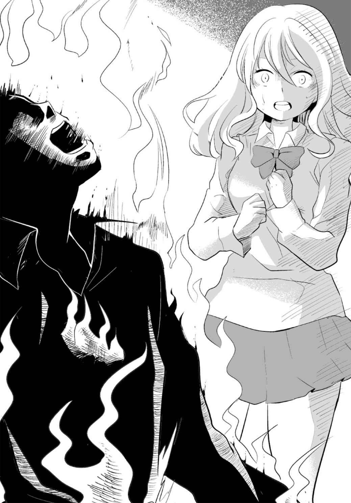
壁が外側からドン！ ドン！ ドン！ と何度も繰り返し叩かれる。
「いやあ......」佳夕はリモコンを投げ出し、耳をふさいだ。その場にしゃがんだが、辺りに白い煙が立ちこめた。
やばい......炎が部屋中に回った？ 息苦しさに、口に手を当てる。床を這 いながらドアに近付き、レバーを引いた。風と共に煙が通路に流れ、佳夕は部屋を飛び出た。
「えっ......？」
そこには漆黒の闇 が広がっていた。
「ここ......ビルのカラオケボックスじゃ......」
佳夕は背後から漂う煙にむせながら無我夢中で走った。きっと火事で店の電源が落ちたんだ。早く助けを呼ばないと......みんなが......。闇に目が慣れる中、前方にうっすらと人影が見えた。
店員？ いや......赤っぽい服を着た......女......。うなだれて、何かを抱えて立っている。何かがおかしい。佳夕は、女が裸であることに気付いた。肩や腕、胸、腹、足まで、全身が焼け、皮膚の皮がめくれて、赤茶色の血や膿がしたたる。肉や骨のきしむ音と共に、女がかくかくと頭を上げた。顔はぐちゃぐちゃにつぶれて、鼻を中心に深くくぼみ、その奥は闇と化していた。
ああっ......。女が両腕を前に出し、何かを見せようとする。ごつごつとした赤黒い塊だった。ぶるぶる揺れながら、それは異様に野太い泣き声を発した。
あ......赤ん坊......。手足もつぶれ、もはや人の原形をとどめていなかった。女は右手をかざし、塊の、わずかに膨らんだ部分を手で覆った。泣き声が少しだけ、くぐもったように弱まった。
口......じゃあ、あの膨らみは頭......？ 女は膨らみをつかんだまま、手に力を込めた。......ダメ......いけない......。何かが砕ける鈍い音がした。泣き声はふっとやみ、静寂の中に、粘液にまみれた肉片がぼとぼとこぼれ落ちた。佳夕は、悲鳴にも似た、重いうめき声を上げ、その場から逃げ出した。
どれだけ走っても闇が延々と続いた。
どうしたら......いいの......？ このまま永遠にさまようの......？
絶望の淵 で、佳夕は走り疲れて、立ち止まった。体力の限界が近付いていた。意識がぶれる中、ふと右手にまだ写真を持っていることに気付いた。
カラオケボックスで歌う三人の女子高生の写真。暗闇でも、かろうじて見えるのは、どこかで光が漏れているから......？ 早く出口を探さないと......。何か手がかりは......。
佳夕は写真をあらためて見つめた。すべてはここから始まった。何か見落としていない？ ......赤茶色の焼けただれた顔。その横でマイクを握る女子高生。マイク......。そういえば......このマイク......テーブルにあったのと違う......。こっちは赤茶色に変色している。まるで......霊たちと同じ......焼けただれ......血塗られたよう......。このマイクだけ......。やっぱり歌と関係が......？
（わらべうたのように降霊の儀式や慰霊に使う歌なら、霊を鎮める効果があるといわれている）
霊を鎮める......。
そのとき、闇の奥からまた野太い泣き声が聞こえ、徐々に近付くように高まった。
そうだ......『子守唄』って、子供を寝かしつける歌......。でも彼らは......歌えない......。
......ねぇんねぇん......こぉろぉりぃよぉ......
また......。
......おぉこぉろぉりぃよぉ......
澄んだ歌声はどこか淋 しげでもあった。
「......この声......どこかで......」
......ぼうやぁはぁ......よぉいこぉだぁぁ......
佳夕は歌声に導かれるようにふらふらと闇を進んだ。
......ねぇんねぇしなぁぁ......
赤ん坊の声が遠くなり、やがて聞こえなくなった。歌声もやみ、佳夕が戸惑うと、ふいに前方に光が差し込んだ。暖かで豊かな光。どこか希望を感じさせる。
あれが......出口......？ 佳夕は光に向かって駆け出した。光は近付くにつれ、いっそう輝きを増す。ああっ......これで......。光に手を伸ばしたとき、突然、背後からいくつもの腕が現れ、佳夕の顔や肩、腕を一斉につかんだ。
「いやっ！ いやっっ！」
必死に抵抗するが、異様な力で背後の闇へと引きずり込まれる。
「いやああ！」
瞬間、光から手が差し伸べられ、佳夕は最後の力を振り絞ってその手をつかむと、勢いよく光の中に吸い寄せられた。
ドアが開き、佳夕は部屋になだれ込んだ。四つん這 いのまま、辺りを見た。
「......あれ......？」
長いテーブルを挟んで二つのソファが並ぶ。奥には電源がオフのままのカラオケ機器と液晶モニターがある。炎や煙もなく、二十九番の部屋は何事もなかったように静まり返っている。
私......。
近くでうめく声がして、佳夕はびくっとした。見ると、右側のソファとテーブルの間にリリが仰向けで倒れていた。表情は穏やかで、寝ぼけているのか時折笑みを浮かべている。その奥には牧村も倒れている。顔や服に焼けた跡はなかった。佳夕はほっと息を漏らした。そのとき、佳夕の顔の横に、音もなくすっと手が現れた。はっとして顔を上げる。髪の長い、制服の少女が立っていた。
「あなた......」佳夕は立ち上がった。
屋上で出会った少女だった。彼女は部屋を見回して言った。
「......たぶん、ここは......楽しく歌ってはいけない場所......」
そんな、カラオケボックスなのに......。
そして右の壁に目を向ける。「このビルの......裏側にある狭い路地。そこに小さな慰 霊 碑 があるの。それがいつからか壊されてしまった......」
壁紙ははがれたままだが、赤茶色の顔のようなシミは消えていた。
「......だから、ずっと気になっていた......」
あなたは......いったい......。......なぜ、ここに......？ 佳夕がそう尋ねようとしたとき、奥から牧村の声がした。
けだるそうに目覚めた牧村が体を起こしている。リリも首をかしげながら、佳夕を見上げた。
「......佳夕？」
「リリさん！ ......部長も......！ よかったあ......」
牧村は頭を押さえながら、何が起きたのか理解できない様子だ。佳夕は二人を交互に見た後、振り返った。いつのまにか少女の姿はなかった。ドアから廊下を覗いたが、誰もいない。
あの暗闇の中で聞こえた『子守唄』の歌声。今思えば、あれは彼女が歌っていた......。そして闇から引っ張り出してくれた手も......。......私......また、助けられたの？
佳夕は、立ち上がった牧村やリリに事情を説明した。その後、店を出て、実際にビルの裏側に行ってみると、路地の片隅に、朽ち果てた小さな石の慰霊碑のようなものがあった。
後日牧村が調べたところ、かつてこの地には防空壕 が点在していた。だが、焼 夷 弾 が命中したため、大勢の人が焼け死んだという。防空壕の跡地の写真が役所の資料室に残されていて、防空壕と、あの二十九番の部屋の広さはほぼ同じだった。防空壕の中では、泣きじゃくる赤ん坊のため、お母さんが子守唄を歌い、それでも泣き止まない子は母親の手で命を絶たれた、と記録されていた。
三人は再び八王子に向かうと、慰霊碑の前に立ち、花を手向けた。手を合わせて、祈りを捧げる。原形をとどめない慰霊碑。表面には文字が刻まれた跡が確認できたが、ほとんど風化して読めなかった。
気休めかもしれないけど......。
佳夕は小さくうなずき、もう一度だけ目を閉じた。
第三章 死神の微笑み
１
斉 田 瑞 希 がそのプリクラ機に近付いた第一印象は（古っ！）だった。カバーにも汚れが目立ち、タイトルのデザインも微妙。それでも料金の表示を見て納得した。
「百円......」
「へえ、このタイプじゃ安くない？」一緒に買い物を楽しんだクラスメイトの山 口 舞 は興味深げにラベルを見た。「〈女神の微笑み〉ねえ......」
「......どうする？」
「まっ、ちゃんと撮れて、文字が書き込めればいいんじゃない」
実力テストが終わった翌日の土曜。瑞希は舞と、渋 谷 の１０９へショッピングに行った。
セールのＴシャツを買い、残った小遣いで、センター街のゲームセンターに入った。ＵＦＯキャッチャーを楽しんだ後、最後にプリクラをすることにした。プリクラ・コーナーの通路にひしめく、順番待ちの女の子やカップルの横をすり抜け、どれにしようか迷っていると、奥のプリクラ機から、ショートヘアの女の子が現れ、なぜか小首をかしげるような仕草で通り過ぎていった。そのプリクラ機には唯一列ができていなかった。瑞希は不安を覚えたが、プリクラ好きの舞が大丈夫なら、と言い聞かせた。何よりも百円は魅力だった。
二人は、入口の長いビニールののれんを上げ、プリクラ機に入った。見たところはごく普通の、二メートル四方程度のその空間は、のれんを下ろせば外の通路からは足下ぐらいしか見えず、ほとんど個室といえた。二人で撮るのがもったいなく思えるほどの広さだ。
瑞希は硬貨を一枚財布から出すと、モニター下の投入口に入れようとした。
その指が止まった。鼻の穴がひくっと動いた。変なにおいがする。前の女の子の香水？ ちょっと違うような。アロマ？ お香？ ううん、もっと......。親 戚 の法事のときにかいだ......お寺の線香のような......。瑞希の中で、硬貨を入れることにためらいが生まれた。
「どうしたの？」隣の舞が不思議そうにたずねた。
瑞希はまわりを見る。
「......なんかさ、変なにおいしない？」
「え？ 別に」
私が敏感になってるだけ？ ふだんから妙に鼻が利くことはあるけど......。
「ほら、さっさと撮っちゃお」
舞に肩を叩 かれ、瑞希は「うん」とつぶやいて硬貨を入れた。ショッピングバッグを床に置き、モニター画面に目を向ける。カラフルな背景に、瑞希と舞が映し出された。
「さて......どれにする？」
瑞希は舞と話しながら、背景や肌の質感、明るさのモードを選ぼうと、モニター画面に触れた。すると機械のスピーカーから、女の明るいアナウンスが流れた。
『じゃあ、準備はいい？ カメラで撮るよ！』
「えっ......？」
『３......！』
「ちょ、ちょっと」
舞が慌てて画面を指で押して、カウントダウンを止めようとした。
『２......！』
瑞希も押し続けたが、機械は言うことを聞かない。
『１......！』
「えーっ！ なんで!? 」瑞希が目を丸くして叫んだ。
「とにかく撮られちゃうよ」
バスケ部に所属し、最近急に背が伸びた舞は、そう言って、少し前かがみでピースサインをした。瑞希も仕方なく笑顔でポーズを作った。シャッター音と共にフラッシュが光った。
瑞希は口をへの字にして、モニターを睨 みつけた。
「......なんなの？ もう」
「ったく、今のキャンセルして、もう一回ちゃんと撮り直そ」
そう舞が励ますと、瑞希はうなずいて、再びモニター画面に触れた。すると今度は画面が、墨汁がこぼれたように、じわっとにじみ、画面全体を覆い始めた。
「えっ？ ええっ」
画面はあっという間に真っ黒になってしまった。瑞希は人差し指で、何度も画面を押したが、変化はなかった。
「......故障？」舞も画面を軽くこずいた。
黒いモニターに、呆 然 とした二人の顔がうっすらと心霊写真のように映っていた。
瑞希はコイン投入口のすぐ横にある返却ボタンを押した。
「もう最低。お金返してよ」
「ねえ、店員呼ぼっ」舞がそう声を上げた途端、返却口から硬貨の落ちる音がした。瑞希が驚いて返却口をまさぐると、硬貨が戻っていた。
「よかったじゃん。やっぱり故障してたんだ」
「だね」瑞希はほっとして、笑みをこぼした。
のれんを上げて、プリクラ機を出た瑞希は、機械の外側に取り付けられた、落書き用スペースを覗 いた。こちらも中と同じようにモニター画面が真っ黒になっている。
「やっぱり壊れてる......」
そのとき、モニター下の写真取り出し口に、ぱさっと一枚のプリクラが落ちてきた。
「あっ、瑞希、ほら」
瑞希はプリクラを手に取った。分割もされないまま一枚の写真だけが大きく印刷されていた。
「今撮ったやつ......？」
薄暗い通路でも、プリクラに写った二人が自分たちだと、さすがにわかった。
でも、こんな背景選んでないし......。それに......。
「なんで......勝手に文字が......」
踊るような変なカタカナ四文字が、写真の下の方に、横に書き込まれている。
「......シ......ン......ユ......ウ......？ ......親友ってこと？」
そりゃ、舞とは親友だけど......。
「いいんじゃない？ お金が戻ってプリももらえたんだし」舞は無邪気に声を弾ませる。
深く考えても、しょうがないか。瑞希も舞を見て微笑んだ。
二人がゲームセンターを出て、しばらく歩くと路上に人だかりができていた。
なんだろ......。瑞希は舞と一緒に駆け寄った。
乗用車が電柱の前で止まっていた。ボンネットは大きくひしゃぎ、フロントガラスも割れている。明らかに衝突した後だ。路面には車から大量の血があふれている。よく見ると、前輪と電柱の間に挟まれるように、少女が上半身だけを路上に突き出し、仰向けに倒れていた。少女の顔や服は血にまみれ、路面に引きずられたような血 痕 が数メートルにわたって伸びている。特に顔の左半分は目玉がせり上がり、頰 の肉がえぐられ、歯茎が露 わになっていた。いったいどう車に轢 かれたら、あんな顔になるのかと、瑞希は慄 然 とした。車の脇には、難を逃れた連れの子が呆然と立ち尽くしていた。
あの子......。事故に遭った二人を目にして、瑞希ははっとした。
......さっきのプリクラ......。
そのとき、またあのにおいが鼻を突いた。
うそ......プリクラのときと同じ......線香の......。......ううん、あのときより、きつくにおう。
瑞希は血だまりに倒れた少女に目をやった。その右腕の先に何かが落ちている。
紙......プリクラだ。赤黒くじんだプリクラのシートに、うっすらとカタカナ四文字が浮かび上がる。
......あああっ......。
「......瑞希、どうしたの？」
その場にうずくまった瑞希を、舞は心配そうに見つめた。
渋谷の喧 噪 が耳を圧迫する。
......たぶん......私と同じ......プリクラ機で撮った......。
「ねえ、大丈夫？」
瑞希は震えながら、手に持つプリクラを見つめた。
２
初夏の穏やかな日差しが窓から差し込む部室で、椅 子 に座り、ふいに睡魔に襲われた佳夕は、手に持っていた備品の一眼レフカメラを思わず落としそうになった。
窓辺の牧村もパソコンを眺めながら生あくびをしている。
「あーあ、なんかこう、がつんとくる心霊写真ってないの？」
隣の机でリリが、印刷した写真を並べてぼやく。どれもパソコンで加工したとすぐにわかる、お粗末な写真ばかりだ。
「あるわけないですよ、そんなに......」佳夕が呆れたように答える。
ホント、ここって心霊写真さえ研究してなければ、普通に居心地のいい部なんだけど......。
佳夕はいまだに正式な入部届けを出していないが、たぶんリリあたりが勝手に手続きを済ませたのだろう。担任にも聞かれないし、章吾もあきらめたのか、その話題に触れなくなった。
「うーん、せっかく『心霊写真部』のサイトもリニューアルしたのになあ......」
「そうなんですか？」
「ほら、見て」リリは立ち上がり、うつらうつらする牧村からマウスを奪い、『心霊写真部』のサイトにアクセスした。突然トップページにおどろおどろしい女の幽霊の顔が現れた。「うわっ......」佳夕はドン引きしたが、その加工されたその顔をよく見て啞 然 とした。
「こ、これ......私ですか!? 」
ご丁寧にメインタイトルの下に『ＫＡＹＵの部屋』とある。
「〝霊感女子高生があなたの心霊写真を鑑定！〟もっと釣れると思ったのになあ？」
キャッチコピーを読みながら、リリは真顔で首をかしげる。
「やめてくださいよ。霊感なんてないんだし......」
この前の廃虚やカラオケボックスの件で、二人には完全に誤解されている。
「あれ、メッセージが届いてる」ふいにリリが画面を見て言った。「へえ、中学生。プリクラに変な物が写ってるって。どれどれ......」リリがマウスを操作する。
リリの声に目を覚ました牧村と共に、三人は表示された画像を食い入るように見た。
３
送られてきたプリクラに興味を抱いた牧村は早速返信し、皆で渋谷で会うことにした。
「ね、佳夕、知ってる？ 渋谷って意外と心霊スポットなんだよ。ね、部長？」
「ああ、名前の通り、渋谷の地形はスクランブル交差点を底にして、ちょうど谷間の形状になっている。だから霊気がたまりやすいらしいんだ」
佳夕は牧村の話を聞きながら、窓の外に広がるスクランブル交差点に目をやった。渋谷なんて高校に入学して初めてなのに、それがまさか心霊写真の実地検証になるとは......。
「霊感が強い人は、いろいろと見えるらしい。たとえば、センター街で血まみれの軍人が歩いているのを目撃したという証言も複数存在して......」
「あ、あの二人じゃない？」牧村の声を遮 るように、リリが立ち上がって手を振った。
プリクラに写ったのと同じ少女たちが二階のカフェに現れ、店内を見回している。二人もリリに気付いて、佳夕たちのいる一番奥の席に近付いた。
佳夕はテーブルに置かれた、印刷された写真を改めて見た。女子中学生が撮った、ごく普通のプリクラ写真。青い背景に、ポーズを決める二人の上半身が写るが、左の子の顔半分が異様に黒ずみ、まるで骸 骨 のように不気味に変 貌 している。
プリクラと同じように瑞希、舞が順に奥に座り、向き合う形で牧村、リリ、佳夕が席についた。二人とも横浜の中学に通っているという。メッセージを送ったのは瑞希だった。
「それで、送ってくれたプリクラの画像なんだけど、本物はある？」牧村が切り出した。
「はい。前に送ったのは、プリクラを携帯で撮ったものです。とにかく見てもらいたくて」
瑞希はバッグから、プリクラを取り出すと、牧村に渡した。
「なるほど......こっちは、よりはっきり見えるね」
「実は......」瑞希がためらいながら口を開いた。「これを撮った後、外で事故を見たんです」
「事故？」
「女の子が......暴走したトラックに巻き込まれて引きずられて......たぶん死んじゃってる......。その女の子......私の前に同じプリクラを撮っていたんです......」
「ホント？」
驚くリリに、瑞希がうなずく。
「女の子の横に、これとよく似たプリクラが落ちていて......メッセージも同じで......」
プリクラに書かれた〝シンユウ〟という文字も大きく歪 んで、どこか奇妙に思えた。
「それで、もう一度自分のプリクラをよく見たら......顔が......。あの事故で引きずられた女の子の血だらけの顔を思い出して......」声を震わせて、今にも泣き出しそうだ。「......このまま持っていたら、あの子のようになるんじゃないかって......ずっと不安で......」
隣の舞が励ますように肩に触れた。「瑞希は考えすぎだよ。あたしは偶然だと思うけど」
「プリクラが撮られたときの状況は、今の説明でよくわかった」牧村はプリクラをテーブルに置いた。「それで撮影中に何か起きなかったか？ 例えば、変な声がしたとか？」
「変な声？ うーん......特には......あ、でも変なにおいはしました」
「におい？ どんな......？」
「お寺の線香のような......」
「そんなにおいしたっけ？」舞が苦笑する。
「えーっ、したよ。だって、あの外での事故のときも、同じように線香のにおいが漂ってきたの。間違いないって」
「ね、佳夕はどう思う？ 何か感じる？」
佳夕はリリから渡されたプリクラをまじまじと見た。「......うーん、特には......」
「え、でも〝霊感女子高生〟って...」瑞希が戸惑いながら佳夕を見る。
「......ごめんね......」佳夕はプリクラを持ったまま、恥ずかしそうに笑うしかなかった。
「やっぱり、そのプリクラ機を調べるしかないかな」
牧村がうなずき、いつになく強い口調で言った。
佳夕たちは、瑞希の案内で、まず彼女が目の当たりにしたトラック事故の現場を訪れた。
センター街のはずれの路地。事故から一週間以上が経ち、血痕なども見当たらない。牧村がそこを何枚かカメラに収めた後、全員で手を合わせた。
佳夕は再びリリから「どう？ 何か感じない？」としつこく聞かれたが、首をかしげるしかなかった。
だって渋谷でしょ......。曰 くつきの心霊スポットならともかく、そんな急に変な声が聞こえたり、幽霊を目撃するとは思えなかった。
大した成果を得られないまま、瑞希と舞を先頭に一行は再び歩き出した。やがて左手角に問題のゲームセンターが現れた。グループやカップルでにぎわう入口近くのＵＦＯキャッチャーのエリアを抜け、フロアの奥へと進む。そこは、通路のような細長い空間に、十数台のプリクラ機が二列に並んでいた。コーナーの入口には〈女性専用。男性お一人様でのご入場をお断りします〉と表示された看板が立っていた。
「......僕は大丈夫かな」
「男一人がダメなのは、盗撮や盗難を防ぐためでしょ」リリが素っ気なく答えた。
「この一番奥です」瑞希はそう言って、真新しいプリクラ機の前で順番待ちをしている人たちの横の、わずかなスペースを進んだ。舞、牧村、リリ、佳夕と一列になって続いた。
行き止まりの壁際に、順番待ちのないプリクラ機があった。瑞希が近付くが、その前で立ち止まると、なぜか「あっ」と声を漏らした。牧村たちも瑞希の視線の先を追った。
〈使用禁止〉理不尽な四字が書かれた紙が、のれんにテープで貼られている。
「えーっ！ そんなぁ」リリが不満げに嘆いた。
牧村も「せっかく、ここまで来たのにな」と顔を曇らせる。
「ですね......」佳夕はそうつぶやきながら、料金表を見た。一回百円。格安プリクラ自体は珍しくない。けれど、新型機がひしめく一角に古いタイプが一台だけ格安料金で置かれているのは、ちょっと不自然でもあった。
「女神の微笑み......」牧村がプリクラ機のカバーにあるタイトルをじっと見つめた。
「知ってるんですか？」
「ああ、なんとなく聞き覚えがあるような......」部長は腕を組んで黙ってしまった。
このプリクラを使ったら、顔がドクロのように変化して、文字が勝手に書き込まれ、線香のにおいがした......？ そんなこと信じられる？ ......何がここで起きたの......？
佳夕はプリクラ機ののれんに手を伸ばし、中を確認しようとした。
そのとき、内側から、のれんをつかむように、五本の指がぬっと現れた。
「ひっ！」佳夕は思わず声を上げた。佳夕の声に部長たちは一斉に顔を向けた。のれんが押し上げられ、中から一人の瘦 せこけた無精ひげの男が顔を覗かせた。どうも見ても、プリクラをするようなタイプではない。男は佳夕たちを見て、ぶっきらぼうに言った。
「なに？ 今、メンテナンス中だよ」
男は作業着を着て、足下にはプリクラ機本体のプレートや工具箱があった。
「メンテナンス......」佳夕がほっとして笑みをこぼした。
「なんだぁ......びっくりして損したぁ」
「これ、まだ使えないんですか？」
牧村が尋 ねると、男は「ああ、故障しているからね」と素っ気なく答えた。
「どれくらいで直ります？」
「古いタイプだから部品とか交換しなきゃいけないし。倉庫に戻ったりすると、二、三日ぐらいかかるかもな」
「そんなにぃ？」
リリのぼやきに、男は何の返答もせず面倒くさそうに中へ戻ってしまった。
「部長、どうします？」佳夕が牧村とプリクラ機を交互に見た。
「使えないんじゃ、しょうがないか......」
でも、このまま中を見なくていいの？ 佳夕は自分に言い聞かせるようにうなずいた。
ちょっとだけなら......。のれんをそっと上げ、顔を入れた。中では、男が背を向け、かがんでいる。工具箱の中の部品を探しているようだ。男の横にあるプリクラ本体に目を向ける。電源が落ちた黒いモニターは、たしかに薄汚れているものの、特に変わった様子はなかった。本体のデザインも古めかしいが、どこにでもあるプリクラ機だ。そうだ、線香のにおいがしたって......。佳夕は鼻を利かせたが、男のつけた男性用香水のにおいしかしなかった。
「......まだなんか用？」振り返った男が呆 れ顔で言った。
「あ、えっと......すいません。これ、ここで撮ったんですけど......」
佳夕はとっさに手に持つプリクラを差し出した。男はいぶかしげに受け取り、まじまじと見ながら、中から出てきた。
「ほら、この右の女の子の顔が......」
「ああ、これ『心霊写真プリクラ』だよ」
「...心霊写真プリクラ？」
「去年の夏のモデルかな。簡単に心霊写真風のプリクラができるんだ。タイトルも『死神の微笑み』だっけな」
「〝女神〟を〝死神〟に変えただけ？ 安易ぃ」佳夕の後ろでリリが呆れた。
「たしかホラー映画のタイアップで、ＣＧの幽霊の顔が合成できるようにしたんだ。そのデータが残っていて間違って合成されちゃったかもな」
「じゃあ、この顔はＣＧのいたずら？」
「そういうこと。この前も誤作動を起してさ。女の子の顔が白いのっぺらぼうになったり、目が異様に大きくなったりして、クレームがじゃじゃん来たんだよ」
「ほらぁ瑞希、やっぱ機械の故障だよ。よかったじゃん」舞が瑞希の肩をぽんと叩いた。
瑞希もようやく「うん」と笑みを浮かべた。
「で、でも......じゃあ、その文字は？ 書いてもいないのに、勝手に現れたって」
佳夕がプリクラのカタカナ四文字を指すと、男はくすっと鼻で笑った。
「それも、別のお客さんが昔、書き込んだデータが残っていたんじゃないかな。お店のスタッフに話せば払い戻してくれるよ」
別の人の書き込みが......？ たしかに文字はにじんで読みづらいし、二重合成っぽい感じはするけど......。佳夕が返答に困っていると、男は「納得した？」と言ってプリクラを返した。そして中に戻ろうとしたとき、佳夕が焦りながら「待って」と呼び止めた。
「......そう、線香のにおい」
「線香？」男が振り返った。
「なんかこの中で変なにおいがしたって」
「香り機能付きのプリクラもあるしね。それに、もうかなり古い機械だから、あちこちから変なにおいはするよ」
「そう......」佳夕は妙な敗北感に包まれながら、男が入っていったプリクラ機を見た。
......本当に全部、機械のトラブルで説明がつくの？
その後ろでは、瑞希と舞が手を取り合い、「よかったぁ～」と声を弾ませた。
実際にプリクラを撮って確かめることができないのなら、ここにいても仕方なかった。
念のため、プリクラ機のまわりをチェックしたものの、特におかしな箇所は見つからなかった。呪 いのプリクラの疑いが晴れると、瑞希と舞は途端に明るくなった。無邪気な笑顔がかわいかった。佳夕たちはゲームセンターを出ることにした。
瑞希たちはせっかく渋谷に来たんだから１０９に行くという。舞が楽しげに瑞希の手を引っ張る。彼女も友達として心配していたんだろう。二人はセンター街の十字路から文化村通りへ駆けていく。人の波にのみ込まれ、その姿はすぐに見えなくなった。
なんだろう。佳夕は妙な違和感を拭 いきれなかった。陽の当たる場所で、改めて手に持つプリクラをじっと見つめた。なんだろう......何か見落としていない？
「あれ......」
佳夕は目を細めてつぶやいた。
「......どうした？」牧村とリリもプリクラを覗いた。
「......このプリクラ......文字が......いつのまにか......薄くなってる......」
「ホントだ」
牧村が首をかしげた。「この手のプリクラの印刷って、すぐに色あせるんじゃないのか」
「でも、それならプリクラ全体に起きるような......。どうして文字の一部だけ......」
シンユウ......。この文字、端の色が薄まったせいで、よけいに違和感が際立つ。普通なら〝親友〟と読めるけど。これって......。
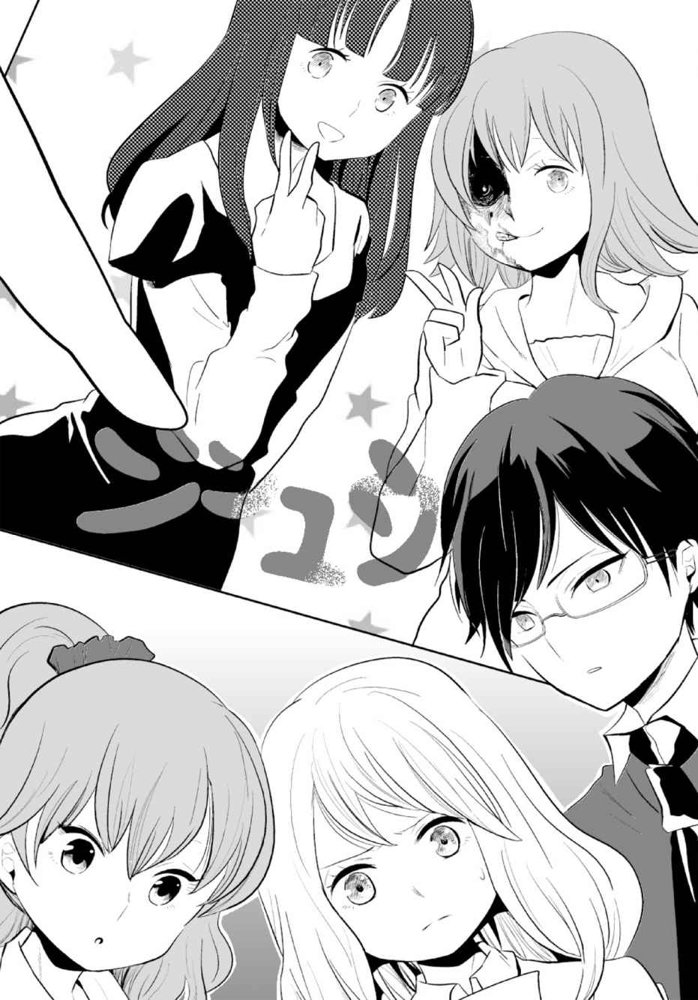
「......本当にシンユウって読んでいいの？」
「どういうことだ？」
「ほら、文字が消えかかっている部分......」佳夕が左から文字を指さした。
「〈シ〉はまだしも、隣の〈ン〉はホントに〈ン〉なの？」
「そう言えば〈ン〉だけ妙に小さいな」牧村がうなずく。「何だか横の〈シ〉に近すぎる」
佳夕がはっとした。「これって二つ合わせて〈ジ〉じゃ......」
「えっ、これが〈ジ〉？」リリも驚いて文字を凝視した。
「隣の〈ユ〉も......下の端が薄くなって、なんだか違う字に見えます......」
「なら、これは〈コ〉じゃないのか？」
リリも最後の文字を指した。「だったら〈ウ〉も変じゃん。もう〈ウ〉に見えないよ」
「ああ......〈シ〉だ......！」
「これって......」文字をなぞる佳夕の指先がかすかに震えた。
「『ジ』......『コ』......『シ』......。......ジコシ......。......事故死......！」
「......プリクラの先入観で......僕も〈親友〉だと思い込んでいた......」
「そんなぁ......ねえでも、佳夕......」リリがいつになく真剣なまなざしを向けた。「もしも〈事故死〉でこの画像って......。あの子たち、ヤバくない？」
そうだ......！ いやな予感が......！
「あ、佳夕！」
佳夕は一人センター街を走り出していた。牧村とリリも慌てて後を追いかける。
渴きと息苦しさを覚えながら十字路を右に曲がる。あの子たち、１０９に行くって......。
文化村通りに入って一度足を止めた。前方に１０９のタワーが見えたが、そこへつながる歩道はセンター街以上に人であふれていた。二人の服や髪型を思い出しながら、前へと進んだ。車道をはさんだ向かいの歩道に目を向ける。ちょうど車道を走る車の流れが途切れた。どうする？ 横断する？ すると十メートルほど先の、駐車した車と車の隙 間 から人が現れた。瑞希と舞だった。１０９につながる歩道へ行くため、車道を横断するつもりだ。佳夕は彼女たちに近付こうと車道に出た。二人は車道を横断する。舞が先を行き、瑞希が続く。
ちょっと待って！ 佳夕が声をかけようとしたとき、奇妙なにおいが鼻を突いた。
えっ......。顔をしかめ、愕然とした。こ、これ......線香の!?
突然、佳夕の前を、宅配便の小型トラックがエンジン音をうならせて横切った。一瞬、ドアのガラス越しに、運転席の光景が目に飛び込んできて、佳夕は絶句した。運転席で、若いドライバーがハンドルを握ったまま、白目をむいて口を開き、のけぞっていた。その首筋を白い手がつかんでいるのが見えた。
うめき声が耳元で高まった。まるでトラックに充満していたように、濃厚な線香のにおいが一気に放たれ、佳夕を包んだ。トラックは佳夕から離れ、車道の真ん中を横断する二人に迫った。
ダメ！ 危ない！ 佳夕は叫ぼうとしたが、線香の強いにおいにむせて、うまく声が出ない。プリクラの文字が脳裏をかすめた。
トラックは吸い寄せられるように瑞希に迫った。
早く逃げて！ お願い！ 佳夕は祈るように声を震わせた。
あっ......。かすかに喉 が動くのを感じた。声が出る......！
佳夕は力を振り絞り、腹の底から叫んだ。
「だめええぇぇぇぇぇ!! 」
瑞希がはっとして振り向いた。そこへトラックが突進してきた。瑞希は恐怖のあまり立ち尽くし、トラックを見上げた。蛇行した車体が、瑞希の顔面をかすめる。目を閉じたと同時に、髪がぶわっと広がった。風圧に押されるように、瑞希は路上に尻 餅 をついた。トラックは反対車線へ入ると、駐車中の車に衝突し、動きを止めた。瑞希は路面にへたり込んだまま、呆然としている。異変に気付いた舞が慌てて瑞希に駆け寄った。
佳夕は息を荒くして二人を見守った。もし、あのまま瑞希が歩いていたら......間違いなくトラックに......。横から顔や体を強打してあのプリクラのような黒い顔になっていた......？
佳夕は手のプリクラに目を向けた。瑞希の顔半分を覆う黒い影と、〈ジコシ〉と書かれた文字が、いつのまにか、ほとんどかすれて消えていた。
４
瑞希はその後、舞に介抱されながら、なんとか無事に自宅に帰ったという。
牧村が調べたところによると、確かに『女神の微笑み』の類似シリーズに『死神の微笑み』というプリクラが存在していた。しかしトラブルが多発し、稼働中止となり、一部では〝呪いのプリクラ〟と呼ばれたという。
呪いのプリクラ。やっぱりそこに何かが......。
佳夕の中でどうにも腑 に落ちない、奇妙な胸騒ぎが消えなかった。その理由が知りたかった。
翌日の放課後、佳夕は屋上で一人、あの名前も知らない少女を待っていた。
日が沈み始め、あきらめて帰ろうとしたとき、ドアの前にいつのまにか少女が立っていた。
佳夕はプリクラのことを話した。少女は無言で柵 の前に立ち、校庭を見下ろす。佳夕も隣に立った。こうして並ぶと、ずっと前から友達だったような錯覚に陥ってしまう。
「昔から......」ふいに少女が唇を開いた。「お化け屋敷には幽霊が〝本物〟と勘違いして、棲 みついてしまうことがあるの。繁華街にはそういう場所が少ないから、ホラー系のプリクラでも居心地が良かったのかも。ただ、そこに棲みついた相手がちょっといけなかった」
「......〝死神〟だから？」
少女はうなずいた。「たぶん......そのプリクラは予知写真の一種」
「予知写真......」
「呪いというよりね......。霊の力で、未来の不幸を暗示したようなもの」
「だからプリクラの写真自体には、そんなに強い力を感じないんだ......」
「写真はあくまできっかけにすぎないから。......死神は気まぐれで、目をつけた人間をすぐに殺す場合もあれば、ずっと放置する場合もある......」
佳夕の中で、プリクラに写る瑞希が浮かんだ。顔半分が骸骨のように変わった顔......。「......彼女は死神の呪いから解放されたのかな......」佳夕は少女の横顔を見て言った。
「さあね。......でも、その瑞希って子の、予知された死がもしも回避されたなら、その運命が別の誰かに降りかかるかも......」
「えっ？」
それって......。
少女はまた何も言わず佳夕に背を向けて歩き出した。
すっかり薄暗くなった屋上で、佳夕は少女の残した言葉の意味を何度も考えた。
５
崎 本 俊 平 は、今日二度目となる渋谷を訪れていた。
ゲームセンターは既に閉店時間を過ぎ消灯していたので、非常灯と懐中電灯を頼りに作業を続けた。
......この仕事も、そろそろ潮時かなあ。プリクラのメンテナンスと聞けば、もっと女子中高生と仲良くなれると思ったのに、現実は邪魔者扱い。プリクラを待つ子には「早く直してよ」とせかされ、露骨に煙たがられる始末だ。おまけに、古いプリクラの修理が多く、部品交換の度に、倉庫を行ったり来たりさせられて、家に戻れない日も少なくなかった。
十年以上使用しているプリクラ機はあちこちがいかれている。にもかかわらず会社の命令でソフトを入れ直し、装飾を変え、値段を下げて無理矢理稼動させている。たまに変なものが写ると、言い訳がましくホラー映画のタイアップ・ソフトを入れてごまかす。
そういえば。先月のメンテナンス中、自分の顔でテスト撮影したら、できあがったプリクラに変な顔が写っていた。俺って幽霊とか信じていないせいか全然平気だったけど。怖い噂や怪談なんていいかげんだ。俊平は手で肩と首を揉 むように叩いて苦笑いした。
でも、こういう怖い系の方が、話としては受けるのかな。今日も昼間変なグループがいたな。女の子が可愛かったのは覚えているけど。もっと話しておけば......。いや次の合コンが勝負だ。〈呪いのプリクラ〉の話とか受けそうだ。俊平は笑って、息を吸い込んだ。
変なにおいがした。
おい、なんだ、このにおい。カンベンしてくれよ。......そうか、社長が言ってたな。昔、ホラー系ソフトを入れたとき、目玉機能で、墓場の線香に似た芳香剤を機械の中に置いたって。さすがに不評ですぐにやめたらしいが......。まだその芳香剤が残ってんのか？
俊平は蓋 を開けたままの本体に懐中電灯を当て、中を探した。しかし特に異物は見当たらない。どこから、このにおい......。鼻をきかせると、線香のにおいはふっと消えてしまった。
なんだよ。俊平は舌打ちして再び作業に取りかかった。そして撮影用のフラッシュのライトを交換し、蓋を閉じた。やっと終わりだ。長い一日だよ、ったく。
のれんを上げて、プリクラ機の外に出ると、裏側にある電源のスイッチを入れた。ブーンという作動音が室内に静かに響いた。俊平は再び中に入った。画面が鈍く輝く。使い古されたソフト〈女神の微笑み〉が起動する。これでよし、と。撮影方法のアナウンスが流れる。うん、正常に稼働している。画面を見ると、俊平の顔が映し出される。日焼けした汗だくの顔。伸ばしたあごひげはオシャレというより、小汚い労働者の無精ひげにしか見えない。下手したらホームレスだよな。そりゃ女子中高生に煙たがられるわけね。まわりに満足な照明もない、薄暗い闇に顔が浮かぶと、我ながらなかなか不気味だ。俊平が苦笑していると、あることに気付いた。画面にぼんやりと映る自分の顔。その背後の闇にうっすらと何かが見えた。なんだろ......？ 俊平は目を凝らした。......顔？ ミイラのようなしわくちゃの顔だ。おいおい、またホラー系ソフトのデータがまじったのかよ。もうこの機械、ダメだな。社長に言って早く廃棄してもらおう。ため息をついて、顔をしかめた。すると画面に映る自分の顔も同じように変化した。その肩には相変わらず不気味な顔が映っている。......待てよ。以前、プリクラに変な顔が映ったとき、気付いたのは印刷の後だ。今は別に撮影したわけじゃない。リアルタイムに画面に映ったままだ。俺の後ろで。
後ろ......？ 俊平は恐る恐る振り返った。
目の前に人が立っていた。その顔はミイラのように干からびていた。うわっ！ 俊平は声を上げようとしたが、それよりも早く相手が握るナイフが、俊平の首に突き刺さった。
あぁ......かぁぁ......。俊平は口を開けて、全身を小刻みに震わせた。声の代わりに出てくるのは淀 んだ不規則な呼吸音だけだ。その不気味なミイラの顔がマスクだと気付いた頃には、意識は混濁し、膝 を床についていた。
俊平は仰向けに倒れた。首を貫通したナイフの刃先が床に当たり、少し押し戻された。
......刺さったナイフって......抜くと血がぶわっと噴き出すんだよな......。アクション映画で見たっけ......。タイトルは......なんだっけ。どうでもいいことが頭の中をぐるぐると駆けめぐる。もっと他に......考えなきゃいけないこと......あるのに......。
シャッ......
奇妙な音がした。なんだ......。
シャッ......
俊平は口にたまった血をこぼこぼと吐き出し、二つの眼球を限界まで上に上げて、モニター画面の光に反射したミイラ顔を見上げた。そいつは何かを両手で持っていた。カメラだ。右の人差し指が動くと、シャッター音が響いた。そいつは、ナイフが刺さったままの自分に目もくれず、プリクラ機の中を撮り続けている。
なんで......？ わけわかんねえ......。意識が薄れ、ミイラの顔がぶれ始めた。おい、てめえ......！ 血を口から吐き出しながら、なんとか叫ぼうと体を震わせた。
それに気付いたのか、ミイラ顔は、右手でカメラを持ち直して、無言で俊平に顔を近付けた。
はやく！ たすけろよ！
俊平は最後の力を振り絞り、そう叫ぼうとした。しかしそれよりも早く、ミイラ顔の左手が、俊平の首に刺さったナイフの柄をつかみ、一気に引き抜いた。
第四章 落ちる
１
刺すような冷たい風が頰 にあたり、わたしは目を覚ました。
風に導かれるように、ゆっくりと歩み出す。そこはビルの屋上だった。
目の前に広がるのは、ネオンの夜景。フェンスをよじ上り、乗り越える。
誰かがわたしに気付く？ そんなわけない。わたしのことなんて誰も知らない。
頭を下げて、足下を見る。数十メートル下の路上で、色とりどりの服を着た人が行き交う。まるでミニチュアハウスの人形のよう。
風が強まり、長い髪が揺れた。
さあ、いこう......。
わたしは重心を前に傾けて勢いをつけ、両足でビルの縁を蹴 った。
福 井 昌 樹 は撮ったばかりの携帯の画像を見た後、呆 然 としながら前を向いた。ふざけ合う磯 部 稔 と須 藤 俊 次 の背後に、それらしきものは見あたらない。
酔った俊次が上機嫌で昌樹を見た。「どした？ 妙なものでも映っていたのかよ」
「......ああ」昌樹は携帯を見つめながらつぶやいた。
稔が興味深げに、「マジ？ 見せて」と昌樹のカメラを覗 いた。すると稔もすぐに黙ってしまった。
「はあ？」俊次も苦笑しながら近付いた。「おいおい、白い子供の霊でも現れたか？ それとも手とか足とか頭が消えちゃった？」
俊次は昌樹から携帯を奪うと、その画像を見た。
２
「変な画像が入っていた......？」
いつになく神妙な面持ちで相談してきた佳夕に、遅れて部室を訪れた牧村は少し戸惑いながらも耳を傾けた。
「いつのまにか携帯のフォルダにあって......。文章もなく、ただ画像だけなんです」
そう言って佳夕は携帯の画像を、牧村に見せる。それは、レトロなトイカメラのように荒いモノクロの画質だった。高い場所から繁華街を見下ろした風景が撮られている。
「なるほど。この画面の端に、フェンスのようなものが写っているな。おそらくどこかのビルの屋上」
「ねえ、佳夕はこの場所知っているの？」先に画像を見ていたリリも尋ねる。
「うーん、特には......見覚えは......」首をかしげるしかなかった。「でも、この撮られた場所に何か意味があるのかと考えると、ちょっと薄気味悪いですね......」
「あっ、ひょっとして〝マスク殺人鬼〟が送ってきたのかな」リリがにやにやする。
「やめてくださいよ......もう」
「でもさ、その殺人鬼って、死体と一緒に自分も映った記念写真以外にも、犯行現場の風景を撮って、警察に送っているみたいね」
「殺人の後の......風景......」このビルの屋上が......？
「うん。警察は写真を手がかりに消えた死体を探すんだけど、なかなか見つからないって。犯人はまるでゲームを楽しんでいるように殺人を繰り返してる」
「......どうして、私の携帯なんかに」
「さあ。狙われてるんじゃない？」
「そんな無責任な......」
「ま、いわゆるマスク殺人鬼は便乗のいたずらも多いみたいだから、これはその類 じゃないかな？」牧村は冷静な物言いで、携帯を佳夕に返した。「その画像、こっちのパソコンに送ってくれないか」
「あ、はい」言われたまま転送すると、牧村はパソコンの画面で画像を拡大した。しかし向かいのビルの看板などがよくわかるが、特に住所を特定するものは見つからなかった。
「でも、これ、なんか......念写っぽいな」
「念写......ですか」
「ん......？」
牧村が、マウスを操作し、画像の右端に寄って、隣のビルの三階と二階から突き出た看板にズームする。それぞれ『エスニック料理』と『麻雀荘』の文字が確認できる。
「......これ、どこかで見た気が......」牧村は立ち上がり、棚から写真ファイルを取り出して開いた。「そう、これだ」
佳夕に一枚の写真を見せる。繁華街の路上で、男子大学生二人が記念写真を撮っている。
「ネットでは〝落ちる女〟で知られている。ほら、この二人の後ろを......」
佳夕は息をのんだ。二人の背後のビルから、髪の長い女が逆さになって落下している。
これって飛び降り自殺した瞬間......？ 大学生の頭の少し上に、女の頭が写っている。地面に激突するまで二メートルぐらい。女は大学生たちをじっと睨 みつけているようだ。
「ああ、わりと有名ね。あたしもネットで見たことあるよ。なんか夜中に見ると、飛び降り自殺したくなるって」
「......自殺したくなる......この写真が......」
「噂 だけどね。ここに写る人も撮影した人も、みんな飛び降り自殺したらしいって」
確かにじっと見ていると、吸い込まれそうな、得体の知れない不安を覚える。
「この〝落ちる女〟に関しては一時期、真偽論争がわき上がったかな」牧村がうなずき、写真に目をやった。「ちょっと、背後のビルの左隣を見てほしい」
佳夕は、写真では半分しか写っていない左側のビルに目を向けた。そこには画像と同じエスニック料理店と麻雀荘の看板が写っていた。写真の方がカラーで鮮明だった。
「これ......似てますね......」佳夕がファイルの写真とパソコンの画像を見比べて言った。
「看板はもとより近くの窓の形も一致している。たぶん同じ場所だ。〝落ちる女〟の写真は、ビルの前の路上から......そして二宮さんの携帯の画像は、ビルの屋上から撮影された」
「......この〝落ちる女〟の写真はどこで撮られたんですか？」
「池 袋 らしい」
「池袋......あっ」
「何か思い出したか？」
「この前の日曜日......行きました」
「ビンゴ！」リリがまたにやにやして顔を近付ける。「あ、ひょっとしてデート？」
「違いますよ。ほら、友達が新しいテニスラケットを選びたいって相談されたから」
「テニス？ ああ、ひょっとしてオカルト嫌いの彼？」
「まあ......そうですけど」
「そういうのをデートっていうのよ」
「違うのに」佳夕が口を尖 らせる。
「じゃあ、二宮さんはそのとき、この写真の撮影場所を通ったの？」
佳夕は写真を見つめた。「うーん、たぶん......通ったような......」
リリは牧村と目を合わせながら、にやりとしてうなずいた。
佳夕は、ラッシュ前の混雑しはじめた山手線の電車に揺られながら、並んでシートに座る隣のリリと牧村を見た。リリは呆 けた顔で、佳夕の肩に寄りかかって眠り、牧村はずっと携帯をいじっている。結局、写真の撮影場所を確認しに行くことになってしまったけど......。
それにしても、どうしてこの画像が、私の携帯に......。本当にマスク殺人鬼が送っていたとしたら......私が狙われているの？
そのとき、佳夕は初めて事の重大さに気付いた。
ちょっと......。その場所に行くのって、すごく危険なことじゃ......。もしも現場のどこかにマスク殺人鬼が隠れていたら......。どうしよう......今 更 やめて帰ろうとも言えない。私から相談したんだし......二人とも撮影現場に行く気満々だし......。
佳夕が悩んでいる間に列車は池袋駅に到着してしまった。三人は駅の北口を出てしばらく歩いた。やがて繁華街のはずれに〝落ちる女〟が撮影された場所があっけなく現れた。
「正面のビルも、左隣の看板も同じだな」
牧村は一眼レフカメラを構えて、あちこちを撮影する。佳夕も携帯の画像と見比べた。昼と夜の違いはあるが、隣のビルの看板はもちろん、道の形や、向かいに写るビルも同じように思えた。画像はあのビルで撮られた......。
リリがうんうんとうなずいた。「やっぱこの風景っしょ。間違いない」
「ビルの屋上のフェンスは......」佳夕が見上げた。
「ここからじゃ角度的によくわからないな」
「ですね......」
「二宮さんはこの前の日曜日、ここを通ったんだよね？」
「はい、スポーツショップのビルがこの先なので」最初は半信半疑だったが、実際に歩いてみると間違えるはずがなかった。
「そのとき、何か気になったことはないか？」
「気になったこと......」
「些 細 なことでもいいんだが」
佳夕はビルを見た。狭い入口。汚れた通路。チラシが詰まった郵便受け。奥の暗がり。
「......そうだ......ビルの前を通り過ぎたとき、かすかに声が聞こえたんです」
「声？ どんな？」
「はっきりとわからないんですが、なんか呼ばれたような気がして......。だから立ち止まって、ビルの奥を見たら......すーって小さな人影が奥に引き込まれていったんです」
「小さな人影？」
「この女の幽霊じゃないの？」リリが写真を指さして言った。
「うーん、単に、誰かが奥に入っていった影が見えただけな気もします。それで不思議に思いながら、じっと見ていると、先を行く章吾に呼ばれて......」
リリは〝落ちる女〟の写真で、女が落下している二階の窓辺りを見ている。
「人影かあ。というか、これって幽霊なの？ それともホントに飛び降りた瞬間を撮ったんじゃないの？」
「そのことだが......」牧村が右手でメガネのフレームに触れた。「僕もずっと調べているんだが、この付近で飛び降り自殺があったという記録はどこにもないんだ」
写真のままなら女が落下し、激突した路上はだいたいこの辺り。佳夕は近付き、ビルの前の道を見たが、きれいに舗装され、血 痕 などは見つからなかった。
「やっぱりビルに何かあるんじゃないの」
リリの声に、佳夕は正面のビルを見上げた。
「そうだな。行ってみるか......」牧村の声に、佳夕とリリもうなずいた。
三人はビルに入っていった。そんな、彼らの様子を見守る人物が路上にいたことに、佳夕はまだ気付いていなかった。
ビルは外観と同じで、内装も古めかしく汚れも目立った。一階の通路奥にはエレベーターがあった。乗り込むと、屋上を示すＲボタンはなく、仕方なく最上階の十階を押した。ドアが閉まり、こちらが不安を覚えるぐらいにゆったりとしたスピードで上昇を始めた。
十階は通路の照明も消え、薄暗かった。床にゴミが散乱し、ほこりっぽい。壁は水漏れなのか、不気味な形状のシミが幾 重 にも層を作って広がり、人の顔に見えなくもなかった。
階段を上がると、行き止まりに古びたドアがある。すりガラスからうっすらと暖かな赤い光が差し込む。部長がドアを開け、佳夕はリリと共にビルの屋上に出た。
生温かい風が佳夕の頰をかすめた。フェンスに囲まれた殺風景な景色が広がる。学校の屋上と比べると、広さは三分の一程度だろうか、中央に置かれた大きな物置が敷地の半分を占めている。排水が整っていないのか、水たまりが目立ち、頭上の夕焼け空を照らして赤く染まっていた。
佳夕は右端のフェンスに目がとまった。そして携帯の画像と見比べた。
「......同じだ......このフェンス......」
三人はフェンスに近付いた。見下ろすと、夕暮れの路上を行き交う人でにぎわっている。
佳夕はリリから受け取った〝落ちる女〟の写真を見た。
ここから落ちたら......写真で撮影したようになる。でも部長によれば、飛び降りた人はいない。やっぱり霊が......？
「ん？」牧村の声に、佳夕は振り向いた。彼は何かを踏んだのか、右足を上げ、床にくしゃくしゃになって落ちている白い紙を拾っている。広げると、それは名刺だった。
「日本映像企画......制作会社のディレクター......まだ新しい名刺だ」
「心霊番組かな？ マスコミも来てるってことは、やっぱ何かあるんだ」
「ああ、飛び降り自殺以外にも、成仏できない霊がさまよっている可能性もあるしな」
成仏できない霊って......。佳夕の中で不穏な妄想が広がった。......ひょっとしてマスク殺人鬼が殺した死体？ それがどこかに隠されてる？ でも死体を隠すならどこに......。辺りを見る。やっぱり物置？ 他には......。佳夕はふとフェンスの方を見て、我が目を疑った。
一人の女がフェンスの外を歩いていた。
......うそでしょ......。髪の長い女は、写真の〝落ちる女〟によく似ていた。
女は足を止めると、フェンスに背を向け、両足でビルの縁を蹴って飛びおりた。
「！」佳夕は慌ててフェンスに駆け寄った。しかし地上に女の姿はなかった。
消えた......？ 呆然として振り返ると、目の前に女が立っていた。血にまみれ腐敗した顔だった。佳夕は悲鳴を上げた。
「佳夕！」
腕をつかまれ、佳夕は我に返った。振り向くと、リリが目を見開いている。
「......どうしたの？ 急に」
「......えっ......あぁ......」うまく言葉が出てこない。
牧村も駆け寄った。「大丈夫か、二宮さん？」
小さくうなずくのが精一杯だった。そのとき、出入口である陸屋根のドアが開いた。佳夕が緊張すると、中から人が現れた。初老の男だった。
「......あんたたち、何してる？」男は険しい表情で、佳夕たちに近付いてくる。
「えっと......何って......」リリは牧村を見たが、誰もうまく返答できない。
「俺はビルの管理人だ。屋上が妙に騒がしいと思って見に来たんだ」
「すいません......」牧村が軽く頭を下げた。
「このビル、関係者以外は立ち入り禁止ぐらいわかるだろ？」
「そうなんですか？」リリがわざとらしくたずねた。
「まったく......早く出て行かないと警察を呼ぶぞ」
「はいはい、すいませんでした」
リリは仏頂面で佳夕に近付き、「ほら、佳夕、行こっ」と肩を叩 いた。
「うん......」佳夕もリリに続くように歩き出した。
「こんな屋上、何が楽しいんだか」管理人の男は佳夕とすれ違いざま、そう吐き捨てた。
牧村は足を止め、男を見た。「あの......」
「あん？」
「......ここで自殺した人とかいませんか？」
「自殺？ ないなあ」
「ホントですかぁ？」リリが疑いのまなざしを向ける。
「ここで三十年以上、管理人をしているが、聞いたことはないな。納得がいかないなら、警察にでも行って調べたらいい」男はきっぱりと言った。とりつく島がない感じだ。
「......そうですか」
「ったく、みんな同じことを聞くもんだな。どこでそんな話を聞いたか知らないが」
「みんなって......他に誰か来たんですか？」
男は面倒くさそうにうなずいた。「昨日な。テレビのディレクターをしているって」
三人は顔を見合わせた。
「あのフェンスから見下ろしていたよ。なんか、この近くで変な写真が撮れたって......。あんまり関わりたくないから帰ってもらったがね。あんたたちも早く出て行ってくれ」
追い立てられるように佳夕たちはビルを後にした。
繁華街からはずれているとはいえ、日が暮れ始めた通りは人の往来も激しかった。道はタクシーで渋滞し、遠くから道路工事の音も聞こえる。
佳夕はビルの前で、さっきまでいた屋上を見上げた。
「ディレクター、気になりますね......」
「ああ」牧村は拾った名刺を見つると、やがて携帯を取り出し、名刺の番号を押した。
「......ダメだ......留守電になっている」
今度はリリが名刺を手にして、まじまじと見た。
「ね、このディレクターの会社って恵 比 寿 でしょ？ そんなに遠くないから行ってみない？」
ここまで来たら佳夕も異論はなかった。何か手がかりやヒントが得られれば......。
山手線に再び揺られ、降り立った恵比寿駅を出てさらに約十分。大通りから一本入った細い路地を歩き、携帯アプリの地図に表示された、目的のマンションにたどり着いた。
「ふうん、テレビの制作会社っていうから、もっとでっかいビルかと思ったのに」
五階建ての小さなマンションだった。二階へ上がり、社名の表札を確認し、牧村が玄関のドアのベルを押した。しかし何度押しても中から反応はなかった。
「......出ませんね」
「ごめん......誰か他の人がいるんじゃないかって」
「しょうがないな......」
あきらめるしかない？ 念のため、牧村が再度電話をかけたが同じだった。
「たぶんマニアックな企画をやっている会社だから、スタッフも少人数なんだろう」
三人は仕方なくマンションを出た。路地を歩き始めたとき、突然、頭上から絶叫が聞こえた。背後でドン！ と激しい衝突音が響き、三人は驚いて振り返った。
ジーンズにポロシャツ姿の男性がうつぶせに、突っ伏すように倒れて、両腕がだらしなく伸びている。頭からは血があふれ、脳の一部と思 しき濁った粘液も飛び出ている。よく見ると、首はいびつに折れ曲がり、頭がみぞおち辺りまでめり込んでいた。
と......飛び降り!? いま出てきたこのマンションから？ 佳夕はマンションを見上げた。
リリが震えながら牧村の肩をつかんだ。
「と、とにかく警察......いや、救急車を......」牧村は携帯を持ち、ダイアルしようとする。しかし死体を見て、その指が止まった。「......まさか......」
「......部長、どうしたんですか」
牧村は思い立ったようにボタンを押した。近くでブーンブーンとバイブ音が聞こえた。
えっ......？ 佳夕が耳を澄ませ、音をたどった。倒れている男のジーンズの後ろポケットから携帯のボディが少しだけ頭を覗かせ、音を立てて震動していた。
「ディレクター......？」
愕 然 とする佳夕の隣で、部長が小さくうなずいた。
その後、男は搬送先の病院で死亡が確認された。身元はやはり名刺のディレクターだった。三人は警察に話を聞かれ、牧村は名刺を拾ったので電話をかけてみた、とだけ話した。
ディレクターがあのビルを訪れていたのは、〝落ちる女〟の写真の謎を追っていた？ 同じ時期に？ 似たタイミングで？ ......いったい何が起きているの？
３
翌日の放課後、佳夕は一人Ｂ棟の屋上を訪れていた。あの少女とは十日以上顔を合わせていなかった。佳夕も悩んだり、一人になりたいときには自然と屋上に足が向いていた。
フェンスの前に立ち、眼下の校庭を眺める。改めて携帯を取り出し、画像を見つめた。ビルから見下ろす繁華街の町並み。
これを撮影したのは誰......？ 答えは出なかった。ため息を漏らし、携帯をバッグに戻して帰ろうと、振り返った。少女が目の前に立っていた。
「......昨日......わたしも池袋にいたの」
「えっ、それじゃ......」
少女もフェンスに近付いた。「あなたたちがビルに入っていくのを見た......。どうせ心霊写真が撮られた現場を調べに行ったんでしょうけど......」
「......うん......」
「そのとき、ものすごく強い霊気を感じた......」
「......強い霊気......」
「......金縛りじゃないけど、体の自由が奪われる感じで......。今までに感じたことのない異常な霊気だった......」
「......実は......みんなには言ってないけど......ビルの屋上で女の幽霊を見たの。その女の霊はビルから飛び降りた......」
少女は何も言わず佳夕を見つめた。少なからず関心はあるようだ。佳夕は話を続けた。
「部室で、ビルから飛び落ちる女の心霊写真を見せてもらって......。その撮影場所に行ったの。屋上で出会ったのは、その写真の人にそっくりだった......」
「たぶん、その霊は死の自覚がない......。何度もビルから飛び降り自殺を繰り返して、ついには強い念で、まわりの人をも道連れにしていく......」
「道連れ......」脳裏に、あのディレクターの死体が浮かんだ。「......ずっと......？」
「たぶん......成仏するまで......」
「じゃあ、成仏させるにはどうしたら？」
「自分がもう死んでいることを自覚させるしかない......」
「死の自覚......」
「わたしもあのビルの前を通ることがあるけど......以前は何も感じなかった。最近だと思う......霊の動きが活発になったのは......」
「それって......」
「原因はよくわからない......。霊って、あるきっかけで動きが活発になることもあるというから......」
きっかけ......いったい何の......。
「ただ、これ以上、首を突っ込むのはやめなさい。わたしでも手に負えないんだから......」
少女の言葉には、妙な説得力があった。
「うん......」佳夕はただうなずくしかなかった。
夜、部屋で勉強していても、なんとなく落ち着かない。ペンを置き、振り返って、ドアを見つめた。
......気のせい？ ......視線のようなものを感じる......。ううん、気にしちゃダメ。ひとつため息を漏らす。気晴らしにシャワーでも浴びよっかな......。椅 子 から立ち上がろうとしたとき、ふと足下のスクールバッグに目がいった。
バッグの中から写真を取り出す。「......落ちる......女......」
部長から借りたままだった。二人の男の背後で、女が逆さまに落下していく様子が写っている。
「......あれ......」佳夕は写真を見つめて、あることに気付いた。以前に見た時は、女の視線は大学生の方に向いていたはずなのに、今は正面を向いている。
「私を......見てる......？」
突然、頭ががくんと揺らいだ。
「えっ......」
背後に人の気配を感じた。振り向こうにも体が重く、言うことを聞かない。突然、両手足が震えるように暴れ出した。腰や背中が痙 攣 するようにバウンドする。か、体が勝手に......。啞 然 としていると、両腕がソファを強く叩くように、上半身をぐんと押し上げた。勢いで前のめりになった直後、曲がった膝 が一気に伸び、佳夕の体は何かに操られるように立ち上がった。そして右足と左足をブリキの人形のように交互に上げて、ぎこちなく前進した。
だ......誰か......助けて！
自分の意思とは関係なく、ベランダの窓に近付いた。そのとき佳夕は、窓に映る自分の背後に、女がいることに気付いた。写真の......〝落ちる女〟だった。目を見開き、狂気じみた薄笑みを浮かべる。女の右腕がかすかに動いた。すると、それに合わせるように佳夕の右手が窓に触れ、指先がロックのレバーを押し下げた。
（ついには強い念で、まわりの人をも道連れにしていく......）
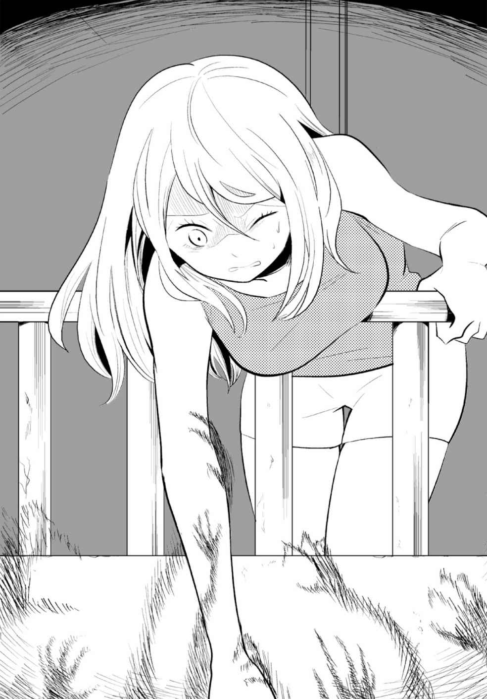
少女の言葉が脳裏をかすめた。窓が開き、右足がベランダを踏む。このままじゃ......。
室内より低い段差のベランダにバランスを崩し、床へ崩れそうになる。そう......そのまま倒れてくれれば！ しかし大股 になった左足で踏みとどまると、右足で床を蹴り、そのまま前のめりに突進した。
ちょ、ちょっと！ 佳夕はベランダのフェンスに胸元を激しくぶつけた。感覚が麻 痺 しているのか、痛みは感じない。それが逆に恐怖を駆り立てる。ベランダにもたれた佳夕の両手がフェンスをつかんだ。
いやぁ......。薄れゆく意識の中で、頭が前へ前へと動く。地面が見えた。五階下の、人通りの少ない夜の路地。誰も気付いてくれない......。
いやっ......いやっ......。得体の知れない力に支配された佳夕の体は、淡々と動作を続けた。佳夕は顔を引きつらせた。目に涙が浮かぶ。精一杯の抵抗だった。しかし、鉄棒をするようにみぞおちがフェンスに当たり、頭は地面に向けられ、両足のかかとが上がってゆく。
あぁ......！ 体がふわっと浮いた瞬間、突如、佳夕の右側に小さな青白い手が現れ、右肩をつかむと、勢いよく引っ張った。佳夕はとっさに、フェンスをつかんでいた両手に力を込め、空中に飛び出した上半身の動きを止めた。重心を傾け、体をベランダの内側に押し戻すと、その場に尻 餅 をついた。
佳夕ははっとして、おびえながらまわりを見た。
「......私......」
もはや重い気配は感じなかった。右手を上げてみる。体の自由が......戻った......？
佳夕はゆっくりと立ち上がった。いまも体の震えが止まらない。
......落ちる女......とてもつない怨 念 だ......。たぶんこれからも......あの写真を見ることで飛び降り自殺をする人が......。
......それでいいの？ 呪 いの連鎖を止めるにはどうしたら......。
死の自覚......。少女は言っていた。
佳夕はやがて決意のまなざしで小さくうなずいた。
酔った学生やサラリーマンでにぎわう深夜の池袋駅を出た佳夕は、繁華街を抜け、写真が撮られたビルの前で再び足を止めた。
私......どうかしてる......。
エレベーターと階段を使い、こっそり屋上へ入った。夜空に雲はなく、満月が周囲のネオンと共にぼんやりと屋上を照らした。佳夕は陸屋根のドアをそっと閉じ、屋上を見た。
......女の霊を成仏させるには......。
（自分がもう死んでいることを自覚させるしかない......）
どうすれば？ 〝あなたはもう死んだの〟そう声をかけるべきなの......？
でも......一番の供養って、なにより女の死体を見つけてあげることなんじゃ......。
この場所のどこかに死体が......？
佳夕は屋上に置かれた大きな物置に近付いた。ドアに手をかけるが、鍵 がかかっている。
うそ......。なんとかこじ開けようとしたとき、背後に重い気配を感じた。
あっ......来た......。
振り向くと、すぐ横を女が通り過ぎ、フェンスの前で立ち止まった。佳夕は女に近付いた。「......あ......あの......」
女にはその声が全く聞こえないのか、フェンスに手をかけ、よじ登り始めた。
「ダメ......ダメだよ......」
佳夕は女の左腕をつかもうとした。しかし腕は佳夕の手をふっと通り抜けた。
そんな......霊だから？ ......じゃあ、どうしたら!?
「お願い、もうやめて......」とにかく声をかけるしかない。「あなたは死んでるの......」
フェンスの外側に降り立った女は、佳夕に振り向くこともなく前のめりになった。
「ねえ、やめて」
女はあっけなくビルの縁を蹴り、ジャンプした。佳夕はフェンスに顔を近付け、飛び降りた女の姿を追った。女は体をひねらせ、頭から落下する。
あぁ......。耳元で急速にノイズが広がった。めまいと頭痛に顔をしかめながら佳夕は眼下を見下ろし、あっと息をのんだ。
道路はいつの間にか夜間の鋪 装 工事でふさがれ、数人の作業員がドリルで地面に穴を開け、手押し車を引いている。すぐ近くに、大量の石や土砂を積んだトラックが停められている。佳夕が見守る中、落下した女はトラックの荷台に頭から激突した。鈍い音が走り、トラックが揺れたが、ドリルの破砕音を響かせる作業員たちは誰一人気付かない。石や土砂に頭から突き刺さった女の下半身が崩れるように横たわった。倒れた女はぴくりとも動かない。
たぶん......生きていない......。やがてトラックは女を積んだまま走り出した。
そんな......誰も......ここで飛び降り自殺が起きたことに気付かなかった......？
佳夕は愕然として、作業を続ける工事現場の人々を見下ろした。突然その光景がぶれ始めた。また激しいめまいに襲われ、思わず目を閉じる。やがて意識の揺らぎがふっと収まった。
まぶたを上げると、辺りに静寂が戻っていた。フェンスの向こうを見下ろすと、そこには工事現場や作業員の姿はなく、路上を通行人が行き交う。
......さっき見た光景って......。今、ビルの前で工事は行われていない。あれは......。
佳夕ははっとした。
まさか......別の......時間......？ ひょっとして......女の過去を体感した......？
佳夕はスクールバッグから携帯を取り出し、アドレス帳から電話をかけた。
『......はい』
「部長ですか？ 二宮です」
『どうした？』
「すいません、どうしても急ぎのお願い事が」
『なんだ？』
「あの〝落ちる女〟の写真に写ったビルの前で、道路工事があった時期を調べて欲しいんです」
『道路工事？』
「そうです。それで、それと同じ時期に警視庁のサイトで、身元不明の女性の遺体があったかどうか......」
次の瞬間、佳夕は、ずん！ と強い気配を感じて言葉を失った。携帯からの牧村の声が、ノイズと共に聞こえなくなる。絶望と憎悪に満ちた念が押し寄せ、体の力を急速に奪う。
ああっ......。携帯が地面に落ちる。佳夕は震えながら膝をついた。目の前に、女が音もなく現れた。さっき飛び降りたはずの女が薄笑みを浮かべ、フェンスに手をかけ、再び登り始める。佳夕は意識がもうろうとしながら女を見上げた。
「いけない......」
佳夕は立ち上がり、女の後を追うように無我夢中でフェンスをよじ登った。一足先に女は屋上の縁を歩み、再び地上を見下ろして足を止めた。佳夕もフェンスの外側に降り、女を見据える。女は何かをつぶやきながら両足のかかとで屋上の縁を蹴り、宙を舞った。
「やめて！」佳夕は女に手を差し出した。その手が女の右腕に触れた。
あっ。とっさに手首をつかんだ。佳夕はがくんと体勢を崩し、屋上の縁に倒れた。しかし手だけは屋上の外に向けて離さなかった。必死に顔を上げ、手の先に目を向けた。女は右手をつかまれたまま、宙吊 りになっていた。そして驚いたように佳夕を見ている。
私が......見えるの......？
佳夕は訴えるような強いまなざしを女に向けながら唇を開いた。
「お願い......。あなたは......もう死んでいるの！ だから、もうこれ以上......」
女は佳夕を見つめた。その顔に、さっきまでの狂気に満ちたまなざしが消えていた。
佳夕も女を見つめた。「......お願い......」
すると女の顔がうっすらと色あせ、体と共に半透明になったかと思うと、ふっと消えてしまった。佳夕は地上に向けて伸ばした自分の右手を見つめた。腕を動かし、初めて体力が回復していることに気付いた。
......やった......。
フェンスの内側に戻ると、緊張の糸が途切れたように、へなへなと尻餅をついた。近くに落ちていた携帯が鳴った。手に取り画面を見ると、牧村からだった。
『大丈夫か？』
「あ、はい......」
『それで調べてみたんだが......たしかに都の工事の記録だと、七年前、あのビルの前で道路工事があった』
「七年前......」
『そして警視庁の身元不明者リストの方は......ほぼ同じ時期に別の場所で、女性の遺体が見つかっている。顔写真はないが、遺留品の服装は......あの写真の女と......同じだ』
いつもは冷静な牧村の声が少しだけ興奮しているように聞こえた。
佳夕は息を吐き、うなずいた。
『すごいな。どうしてわかったんだ？ 遺体の発見場所は奥 多 摩 なのに』
奥多摩......そんな山間まで......あのままトラックで運ばれたんだ。だから自殺した場所もわからなかった......。
『七年前の遺体か......。どうして今になって急に』
「......霊って、あるきっかけで活発になることもある、と聞きました......」
『そうだな、もう少し調べてみる必要があるな』
「はい......」佳夕は携帯を耳から離し、ぼんやりとフェンスを見上げた。
......あの女の霊は......成仏してくれたの......？ そう思いたかった......。
でも......まだ疑問は残っている。......どうして急にあの霊が現れるようになったのか？
七年前の自殺......。
（霊って、あるきっかけで動きが活発になることもあるというから......）
佳夕は辺りを見回した。
きっかけ......それって......。
足下を見る。水たまりに月がぼんやりと映っている。水......。水漏れ......？ 点々とできた水たまりを目で追うと、出入口のドアのある陸屋根に行き着いた。水が伝ってできたシミだらけの壁。視線を上げる。給水タンクがあった。
まさか......。しかし彼女の死体は奥多摩にあった。じゃあ何が......？
胸騒ぎを覚えた佳夕は陸屋根に近付いた。
給水タンクの中に秘密が？ かつて、ここで自殺した女の霊を......活発化させる何かが......？
陸屋根の脇にある鉄製のはしごを登り、平らなコンクリートの屋根に上がった。そして給水タンクに歩を進めると、再びはしごに手をかけた。そのとき、タンクの上からの眺めを見て、佳夕は初めて気がついた。右端にフェンスが見える。
これって携帯の画像と同じ風景......。ここから......撮影された......。
はしごを登り終えた佳夕は給水タンク上部の栓 を回し、蓋 を上げ、横にずらした。そして恐る恐るタンクを覗く。薄暗い空間から、こもっていた腐敗臭が鼻を突いた。タンクには半分ぐらい水がたまり、うっすらと黄色く濁っている。佳夕は息をのんだ。
ひ......人だ......。小さな体がタンクの底に、沈むこともなく、仰 向 けで浮かんでいる。ショートパンツにＴシャツという服装や、刈り上げた髪型から小学生ぐらいの男の子か。腐敗した顔。そして体中に無数の傷跡が見える。
佳夕は、青白い、瘦 せこけた右腕に目がいった。記憶がうずき、生々しく像を結ぶ。
ああっ......あのときの......マンションで私が飛び降りそうになったとき、助けてくれた......。あなただったの......？ 私に......？
佳夕ははっとした。このビルを最初に通り過ぎたときに......感じた声......そして小さな影の気配......。......あれが......。
死体を見つめる佳夕の目に、自然と大粒の涙があふれ、頰を伝った。
「......ごめんね......早く気付いてあげられなくて......」
涙がタンクに落ち、その水面がかすかに揺らいだ。
第五章 エンジェル様
１
また、娘の部屋から奇妙な声が聞こえた。
寝室で一人眠る真 壁 春 恵 は震えが止まらなかった。
うめき......いや、もっと地の底から這 うように漂う、おぞましい叫びに聞こえる。
いったいどうすれば、あんな声が出せるのだろう。これまでも娘のいる部屋から独り言や、これみよがしな叫び声が聞こえることはあった。中学生だから悩んだり、イライラすることもあるはずだ。娘も成長している。がんばっている。そう思いたかった。
しかしここ数日の奇声は、春恵の希望を打ち砕き、将来への不安を増長させるだけだった。
娘の部屋のドアをノックして、中を覗 こうと思ったこともあった。でも、それは無理だ。娘は内側から鍵 をかけている。
娘が幼い頃、反抗的な態度を取ると、六畳の洋室に閉じ込めて外からかんぬきをかけた。
「あけて！ あけて！ ママ！ あけて！」
ドアを叩 いて、泣き叫ぶ娘の声を、今も鮮明に覚えている。娘が幼稚園に入り、手がかかりはじめた頃、夫と離婚した。気が張っていたせいもあって、いつも娘には厳しく当たった。よかれと思って。でも強く当たりすぎた。その反動からか娘は中学に入って部屋を与えられると引き籠 もりがちになり、学校でいじめに遭 ったのか、まもなく不登校になった。
春恵も日々の仕事に追われ、帰宅後に娘と真剣に向き合う気力は残されていなかった。
......とにかく今晩だけは......様子を見てみよう。病院はその後でもいい......。
春恵はそう自分に言い聞かせながら、寝室に戻ると、布団を頭までかぶった。
翌朝、生あくびをしながら、春恵は台所に立っていた。テーブルに朝食を並べ、身支度を整えていると、娘の部屋のドアが開いた。
早起きね。そう思いながら、娘を見た。いつもの安物の黒いジャージを着ている。しかし、その顔を見て、春恵はあっと声を漏らした。
青白く、げっそりとやつれていた。ほとんど眠っていないことは容易に想像できた。春恵は努めて冷静に「おはよう......」と言葉を投げた。しかし娘は返答もせず、うつろなまなざしを母親に向けている。
「......望 ちゃん......大丈夫？」
「......あのさ......」ふいに娘が唇を開いた。「わたし、天使を撮ったの......」
「......天使？」言っている意味がよくわからない。娘は昔から妖精とかファンタジーが好きだったけど......天使って......。
娘はうなずく。
「エンジェル様をしてたら運良く撮れたの。今日まで隠していたけどね」
「......エンジェル様ってコックリさんみたいなもの？」
娘はまた小さくうなずいた。
そういうのが流 行 っているの？ 小学生の頃、自分も一度だけコックリさんをしたことがあった。しかしそのときは、指を乗せた硬貨がぴくりとも動かず、友達と苦笑したものだ。
友達と......。あれ？ エンジェル様って、コックリさんと同じなら、普通一人じゃしないはず。誰かとエンジェル様をした？ それって三日前の？
「そうなの......わたし、エンジェル様を撮ったの」
娘は後ろ手にしていた右手を差し出した。その手には一枚の写真があった。
いぶかしく思いながら娘に近付き、受け取った写真を見た。そのとき、ひどくやつれた娘の顔に、うっすらと笑みがこぼれたことに、春恵は気付かなかった。
２
ビル屋上の給水タンクで、子供の死体を発見した佳夕は警察に通報した。
死体は一ヵ月前から行方不明で捜索中だった男子小学生で、殺人事件の線で捜査中だが、マスク殺人鬼による犯行かは今のところわからないという。
佳夕は刑事たちの聴取を受けたが、どこまで正直に話すべきか悩んだ。〝落ちる女〟の話をしても信じてもらえるとは思えない。結局、章吾が警察に「テニスラケットを買いに行ったとき、あのビルの近くで財布を落としたらしく、写真部の仲間が一緒に探してくれたんじゃないか」と証言し、それに合わせることにした。
章吾には「ありがとう」と素直に頭を下げ、彼も「気にすんなよ」と笑ってくれた。それでも教室や廊下では、他の生徒から好奇のまなざしを向けられることもあった。
はあ......なんか変なことで有名になっちゃった......。
放課後、居場所もない佳夕は部室へ向かった。
「あ、佳夕、やっと見つけたんだ」
部室へ入るなり、リリが満面の笑顔で近付いてきて、そう言った。
「えっ、何がですか」
「ま・じ・で・すごい写真」リリは一枚の写真を佳夕に渡した。「〝ＫＡＹＵの部屋〟を見てくれた女子中学生がメールで送ってくれたの」
「もう、あのサイト、まだあるんですね」佳夕は呆 れながら、写真に目を向けた。
それは、薄暗い部屋の天井を写したもので、真ん中に奇妙に白く発光する物体を捕えていた。佳夕は一瞬、ＵＦＯ？ と思った。しかし、ずんぐりと丸みを帯びたシルエットは、よく見ると、乗り物というより、小さな子供、赤ん坊のようだ。背中には、二つの羽のような隆起が広がり、手には矢のような道具を構え、獲物を狙うようなポーズをしている。
「佳夕は何に見える？」
「まあ......天使......ですか？」
「だよね！」リリが声を弾ませた。「これ、エンジェル様だって」
「エンジェル様......」
リリはメールを印刷した紙を読む。「投稿してくれた真壁望さんは、友達と自宅でエンジェル様をしたとき、ふと頭の上に気配を感じて、カメラで天井を撮影したって」
佳夕は腑 に落ちない顔をした。「そしたら天使が写っていた......？」
「佳夕はエンジェル様って知ってる？」
「たしか......シャープペンを、みんなで握るやつですか？」
「あたしの小学校では鉛筆だったけど」
「学校によって違うみたいですね。というか、それを言うなら、うちの小学校はエンジェル様より、コックリさんが流行っていたかも......。あれって一緒ですよね」
「えっ、エンジェル様とコックリさんは全然違うっしょ」リリは納得がいかない顔をして、窓際の席でパソコンを眺める牧村を見やった。「ねえ、部長はどう思います？」
「......そもそもコックリさんは、西洋のテーブル・ターニングをルーツとして、十九世紀の日本で独自に広まった降霊術だ。一般的には、エンジェル様はその派生と言われている。その意味では二つは同じだが......」牧村は画面から目を離し、二人を見た。「世界中で、天使の目撃例は、この日本も含めて、数多く報告されている。コックリさんにはキツネなどの低級の動物霊が憑 き、エンジェル様には天使が呼び寄せられる、という説が本当なら、その写真が示すとおり、エンジェル様はコックリさんとは別物と考えてもよさそうだ」
「ほらあ。必ずしも同じじゃないの」リリが勝ち誇ったように微笑む。
今度は佳夕が納得いかない。「でも結局ああいうのって誰かが動かしているんでしょ」
「そんなことないよぉ。あたしが昔やったときはちゃんと動いたんだから」
「ホントですか？」
「鉛筆が不自然に動いたりして。そりゃ、友達は誰も信じなかったけどさ。だからこの写真も本物だと思いたいんだよね。本物ならエンジェル様を撮った史上初の写真なんだし」
「そりゃ、本物だったら、すごいけど......。でもこれ、ちょっと絵っぽくないですか？」
「ああ、僕も最初ＣＧかなと思った」牧村のパソコンの画面には、同じ天使の写真の、天使の部分がアップで映し出されていた。
「えーっ、じゃあ、部長もこれがインチキだっていうの？」リリが詰め寄る。
「断定はできないが、写真の背景のコントラストと比較すると、この白い部分が単調に見える......」牧村はマウスをいじり、カーソルキーで天使の腹や頭をなぞった。「なんかノッペリして、絵かＣＧみたいだ」
「......そうかなあ？」
「ただ気になるのは、この尻 の部分」牧村は画面をズームさせた。天使の背中から尻にかけ、白い光の帯がぼんやりとのびている。「光る天使の残像だろうか。絵やＣＧみたいだと言ったものの、不思議なことに、この光の帯だけは背景ときれいになじんでいる」
「なじんでる......？ どういうこと？」
「ピントの合い方といい、光の帯は、よりリアルにその場に実在していたような感じがするんだ。おそらくＩＳＯ感度は一六〇〇程度で、ピントは無限遠に固定されていて......」
「ねえ、もっとわかりやすく説明してよ」
「つまり合成じゃない可能性が高い、ってことだ」
佳夕もリリの隣で、画面をじっと見つめた。「合成じゃない......？」
「少なくともこの光だけは。なぜだか、よくわからないが」
「もう、心霊写真なんて不思議だって割り切ればいいの」リリがいらいらしてぼやいた。
「でも......ネットで見かけるような、安易な合成写真とも少し違う気がしますね......」
「だよね、うん、さすが霊感女子高生」
「なんか見てると......」佳夕は眉 をひそめた。「妙に落ち着かない......」
画面に顔を近付け、自然にマウスに手が伸びる。牧村は佳夕の指が触れると、慌ててマウスから手を離した。
佳夕はマウスを操作し、天使の部分を中心に、画像を限界まで拡大してみた。
「部長の言う通り、天使の輪郭が背景から少し浮いているような......」
拡大したままマウスをいじり、画面をせり上げる。
「光の帯が、天使の体よりも違和感なく背景になじんでる......」
しかし最後は小首を傾げて、画面から顔を引いた。「やっぱり、よくわからない......」
「......そっか、佳夕でも無理かあ......」
ちょっと落ち込んだようなリリを見て、佳夕は励ますように言う。
「でも、なんか引っかかるのは本当だし......」
リリはすぐに笑顔でうなずいた。「やっぱ、これは現地調査するしかないっしょ」
「そうだな。投稿者の住所も東京郊外、すぐ近くだしな」
また、このパターン？ 佳夕は、両手を合わせて懇願するリリを見て苦笑いした。
３
メールでアポを取り、三人は週末、写真が撮影された投稿者の自宅へ行くことにした。
中央線の立 川 駅でモノレールに乗り換え、高 幡 不 動 駅へ。さらに駅からバスに揺られて約二十分。大きな公園の前で下車した。緑に囲まれた小道を抜けると、十階建てのマンションが現れる。駐車場やテニスコートも隣接し、その外観はリゾートマンションを思わせた。ただ、白い外壁は汚れが目立ち、あちこちにひびが入っていて、歳月の経過を感じさせた。
三人はエントランスに入り、オートロックの自動ドアに歩を進める。
「５０４号室......」牧村がドアの横にある共同インターホンを押して相手を呼び出した。
『......はい』数秒の沈黙の後、少女の声がスピーカーから漏れた。
「真壁さんですか？ あの、メールで返信した〈心霊写真部〉の者ですが」
心霊写真部。冷静に聞くとなんかすごい。相手はモニターでチェックしているのか、数秒の沈黙の後、ドアが開いた。右奥のエレベーターで五階へ上がる。行き先階のボタンには１～10 以外に、Ｂ１とＢ２の表示も。地下二階まで駐車場？ 思ったより大きなマンションだ。
エレベーターを出て、５０４号室の前で立ち止まると、待っていたようにドアが開いた。
一人の少女が顔を出した。
「真壁......望さん？」
牧村が尋 ねると、少女は小さくうなずいた。
黒っぽいジャージを着た望は、表情も暗く、目のまわりにうっすらとクマができている。
なんか、やつれてる......。ひょっとして変な写真を撮ったせい？ だから私たちに相談を？
笑顔のリリ、やや戸惑う佳夕、無表情の牧村と、望は順に視線を投げた後、「......どうぞ......」とつぶやくように言った。
三人は靴を脱ぎ、少女の後に続いてリビングに入る。南側のベランダから差す日差しで室内は明るかった。リビングのソファに並んで座ると、少女はお茶を入れたコップをミニテーブルに置き、自分は向かいのソファに座った。
「......本当に来てくれるなんて、思ってなかった......」少女がおもむろに口を開いた。
「迷惑、だった？」リリが優しく微笑む。
望は首を横に振った。「......うれしかった。信じてくれる人がいて......」
牧村が早速、写真を取り出し、テーブルに置いた。「それで、この写真だけど......」
望は恥ずかしそうに、うつむき加減で笑みをこぼした。
「......わたしもビックリしてるんです。こんなにはっきり天使が写るなんて......」
佳夕は辺りをちらっと見た。この写真、いったいどこで撮られたんだろう？ リビングじゃない......。やっぱり勉強部屋？
突然、ごとっ......と音がした。リビング左側のドア。今......ドアの向こうで、何かが当たる音がした。望を見ると微笑みが消えて、同じ方向に顔を向けている。
ごとっ......。
......まただ。
「あ、今日、土曜だよね。ひょっとして家族の人がいる？」リリは屈託なく尋ねる。
望はリリを見て困った顔をする。「......お母さんは仕事で外出中......です」
「そうなんだ。じゃあ......」
「お父さんは幼い頃に離婚して、もう何年も......」そんなこと聞いていないし......。
「ペットとか？」
「うちのマンション、禁止なんです」
「そっかあ......」
「でも、じゃあ、さっきの音は......」
怪 訝 そうな佳夕に、望は顔を近付けて言った。
「実はここ......出るんです......」
「出る？」牧村がメガネの奥の瞳をきらりと輝かせた。
望は苦笑した。「わたしは......もう慣れちゃいましたけど。夜中に変な音が聞こえたりとか、しょっちゅう......。だから、ここに住んでいる人は......みんなピリピリしてますよ」
「ね、それってポルターガイスト現象なんじゃない？」リリがちょっとびびりはじめた。
「もともとここって、深い森に囲まれた里山を切り開いて建てたから......工事中にいろいろなものが出てきたって話です」
「いろいろなもの？」
「無縁墓地だったのか、人骨がたくさん......」
「えっ？ この下から......？」リリが声を震わせ、足下を見た。
「子供のミイラも何体かあったようです。他に動物の骨とか。何か古代の儀式的な意味があるんじゃないかって、先生が言ってました」望は中学生らしからぬ冷静な口調で答えた。
「......じゃあ、ひょっとしてこの写真の天使って......」
「その子供の霊かもな」部長はリリを見てうなずいた。
子供の霊......？ 天使だから......？ 佳夕は望を見た。
「......でも、こんな不可解な現象が起きている場所で、よくエンジェル様なんかする気になったよね？」
すると望はバツが悪そうに、軽く頭をかいた。
「......逆にこういうワケアリの場所でした方が......願い事がかなうかなと思って......」
「あ、それ、なんかわかる気がする」リリが相づちを打った。
部長は写真をしばらく見た後、顔を上げた。「......これを撮影したのは？」
「わたしの部屋です」望は、音が聞こえた部屋と、リビングを挟んで対になっている、右側のドアを指差した。「友達と四人でエンジェル様をしていて......。頭の上で何か妙な気配を感じたんです......。それで慌てて、用意していたカメラで撮ったら......」
佳夕はドアをじっと見つめた。この部屋にエンジェル様が現れた？
「......カユさん......ですよね？」望は真剣なまなざしを向ける。「霊感あるって......」
「えっ、いやそれは......」
「......入ってみます？ わたしの部屋......」
佳夕は望を見た後、ゆっくりとうなずいた。ためらいもあったが、いざとなると真相を知りたいという好奇心に突き動かされた。望は立ち上がった。佳夕たちも続き、右側のドアに近付いた。そしてドアノブの上に付けられた金属のかんぬきを横に引いた。
「それは......？」背後の佳夕が不思議そうにかんぬきに目をやった。
「ドアの建て付けが悪くて、勝手に開いちゃうんです。だから昔、親が付けてくれて」
勝手に開くって......また変な想像が広がるでしょ。隣のリリは、表情から完全に笑顔が消えていた。牧村も緊張気味だ。望がドアを押し開け、四人は中に入った。
二十平方メートルほどのごく普通の洋室だった。窓際の壁に、ノートパソコンが置かれた机と、クローゼットが並び、床にミニテーブルがある。ベッドはない。四方を囲む無機質な白壁には、ポスターやカレンダーもなく圧迫感を覚えた。どこか重い空気に満たされている。
......ここが......。佳夕は牧村の持つ写真を覗き、実際の部屋と見比べた。
「ちょうど、あの壁に背を向ける格好で、みんなでエンジェル様をしたんです」
望はそう言って、机近くの天井を指差した。
「このテーブルでしたの？」リリが床のミニテーブルに目をやった。
「そうです。友達三人と」
望は壁に背を向けて床に座ると、当時を再現するようにテーブルに向かった。望が指差すまま、リリが「こう？」と言って窓に近いテーブルの右側に、佳夕も合わせるようにリリと向き合う左側に、望の正面に牧村が腰を下ろした。
佳夕は自分の位置から、望の背後の壁を見上げた。......写真で見たアングルに近い。
「じゃあ、四人でこうやって始めたの？」佳夕が尋ねた。
「はい」
「その友達って......学校の？」
「......そうですけど？」
「エンジェル様なんて誰だってするもんでしょ」リリが珍しく諭 すように言った。「ねえ、エンジェル様で何をお願いしたの」
「えっ......それは......」望が口ごもった。
「......やっぱり恋の？」
「秘密です......」
「じゃあさ、使ったのは鉛筆？ シャープペン？」
「ううん、ボールペンです。それと紙を用意して」望は立ち上がり、机の引き出しを開けると、紙とボールペン、カメラを手に取った。「あの日はもう少し外が曇っていた」そう言いながら窓にカーテンをかけ、再び座った。薄暗い室内は、より写真の雰囲気に近付いた。
部長は、望がテーブルに置いたカメラに目をやった。「このカメラで撮ったの？」
「そうです」望は紙に折り目を付け、テーブルの中央に置いた。持っていたボールペンで、紙の中心から少し上に、折り目から左右対称になるように〈はい〉と〈いいえ〉を書いた。「こうやって」握ったままの右手のボールペンの先を、文字の下の、ちょうど紙の中心に垂直に立てた。「ボールペンを、みんなで握ったんです......」
望が佳夕を見た。「一緒に持ってもらえますか？」
「えっ？」
「ちゃんと再現した方がいいですよね？」
「えっ、まあ......」望の表情は真剣だ。佳夕が救いを求めるようにリリと部長を見た。二人は覚悟を決めたように、佳夕にうなずいた。なんか断れる雰囲気じゃ......。佳夕はためらいながら右手を差し出した。そして望の指先よりやや下の、ボールペンの軸をつまんだ。
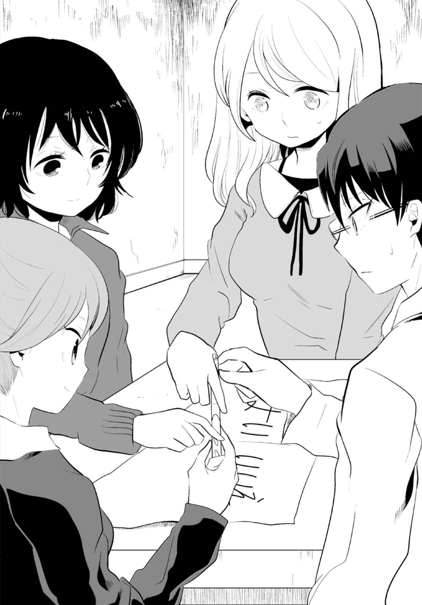
「これでいいの？」
望が無言でうなずいた。かすかに触れる望の指がじとっと湿っている。
「じゃあ、皆さんも......」望にうながされ、リリと部長も同じように右の指でボールペンをつまんだ。「そう......こんな感じ。あのときも......」望が左の指先で紙の端を押さえた。
エンジェル様なんて初めて。まだ心の準備が......。それにこの体勢、けっこう疲れる。
「いいですか？」
リリと牧村がうなずき、佳夕も仕方なく同調した。
望は目を閉じて深呼吸する。再びまぶたを上げ、ボールペンの先に目を向けた。
「......エンジェル様......エンジェル様......どうぞおいでください......」
望は、ささやくように言った。
「もし、おいでになりましたら......〈はい〉へお進みください......」
佳夕もボールペンの先に目を凝らした。そんな簡単に動くわけ......。するとボールペンを持つ手がかすかに震え始めた。佳夕は動揺した。これって単に指が疲れて......。震えを抑えるように力を込めると、徐々に指先がしびれて、神経が麻 痺 するような感覚に陥る。
望は相変わらずボールペンの先を見つめ、険しい表情だ。
ボールペンは小刻みに震え続けている。自分以外の指も震えている......？ これは......エンジェル様が来たというより......。
ごっ......
ドアの向こうで音がした。佳夕はびくっとしてボールペンから指が離れそうになった。
......また、あの向かいの部屋から......？
突然、ボールペンが大きく震え始めた。
えっ......。何かに押されるように、ボールペンがすーっと紙の上を移動した。まっすぐに書かれた黒い線が〈はい〉の文字の上まで伸び、動きを止めた。佳夕は、目の前で起こったことにあっけにとられた。四人で持ったボールペンが〈はい〉へ移動した......。
今の......誰かが無理矢理引っ張っている感じとは違っていた......。急に腕の力が抜けたと思ったら、ふわっと跳んだようにボールペンが動いた......。まさか本当なの......？
......本当に......エンジェル様が......？
「......ありがとうございます......」望の唇は震えながらも緩み、ほのかに笑みをこぼしている。「では、お戻りください......」
また元の場所へ......？ 佳夕は〈はい〉の上に置かれた、三人で持ったままのボールペンを見つめた。しかしボールペンはいっこうに動かない。
「......お戻り......ください......」望が繰り返した。「......お戻り......ください......」
ボールペンは小刻みに震えるだけで移動しなかった。
......どういうこと？ 動いたのは一回だけ......？
佳夕が望を見ようとしたそのとき、ボールペンがズッ......と動き出した。
あっ。今度はボールペンが何かに強く引っ張られるように素早く紙の上を走った。そして、〈はい〉の上から伸びた線をなぞり、そのまま紙の中心を越え、新たな線を伸ばした。ボールペンは紙の端まで移動した後、ターンして大きな楕 円 を描いた。信じられない光景だった。四人の持つボールペンは紙の上を何度も回り、大小の幾重もの楕円を描き続けた。
「いや......」望がうろたえた声を漏らす。
ちょ、ちょっと......。佳夕は、指先の感覚が失われながらも、なんとかボールペンをつかみ続けた。コックリさんだって......途中で指を離すと呪 われるって噂 が......。
でも......もう......限界かも......。紙の表面が、無数の黒い楕円で埋め尽くされる。指の感覚はもとより、体の感覚が徐々にしびれ、意識が揺らいだ。ぼんやりとした視界に、ざわざわと黒い塊がうごめき、浮き上がった。えっ、なに......？
ボールペンの動きが限界まで高まった瞬間、紙がべりっと音を立てて引き裂かれた。望が甲高い悲鳴を上げた。佳夕は本能的に指を離した。リリと牧村もほぼ同じタイミングだった。望は上体をのけぞらせ、ボールペンを持ったまま、勢いよく仰向けに倒れた。
......何が起きたの......。じわじわと指先の感覚が蘇 ると同時に、薄ら寒い、得体の知れない恐怖が佳夕の体を覆い始めた。佳夕は呆 然 としながら、望を見た。
望、リリ、牧村は床に仰向けに倒れている。三人とも白目をむき、唇は半開きになってうめき声が漏れ、全身をのけぞらせて痙 攣 を始めた。ああっ......。佳夕はなすすべもなく見守るしかなかった。特に望の動きが尋常ではなく、全身を波打つように律動させて背骨が折れそうな勢いだ。
咆 哮 にも似た絶叫が高まった瞬間、三人は力尽きたように動きを止め、がくっ......と意識を失った。佳夕があっけにとられていると、やがて望だけが目を覚まし、頭を押さえた。
「......大丈夫......？」佳夕は望にささやくように呼びかけた。
「......いま......」望はうつろなまなざしで、天井を見つめた。「天使がいた......」
「えっ？」
「前と同じ......わたしの手をつかんで......ペンでいたずらした後、ふわふわと天井へ......」
佳夕は、見上げる望の視線を追った。しかし天使らしきものは天井のどこにも確認できない。気がつけば望は上体を起こしていた。その顔はいっそう病的に青ざめていた。
「......ちょっと......お水飲んでくる......」そう言ってふらふらと一人部屋を出ていった。
ドアを閉める音が静かに響く。なんだか悪い夢を見ているようだ。本当にエンジェル様が？ 佳夕は疲労感から深くため息をついた。
どこからともなく、うめき声が聞こえた。はっとして窓の方を見る。牧村とリリがテーブルを囲んで仰向けに倒れている。両手をだらりと伸ばし、びくっびくっと体を小刻みに震わせる。また......痙攣!? 二人の半開きの口には唾 液 がたまっているのか、うめき声に混じって、ごぼこぼとかすかに濁った音がした。
「ねえ、部長......リリさん......」これ......やばいんじゃ......どうしたら......。
そうだ......水を......。佳夕はドアに近付いて、ドアノブを握り回した。
えっ......。ドアは押しても、引いても、きしむ音がするだけで開かなかった。
「ちょっと、なに......どうして!? 」
佳夕はドアノブを何度も回した。外側から鍵がかかっている？ そうだ、部屋に入るとき、外側のドアノブの上にかんぬきがあった。ドアが勝手に開くのを防ぐためって......。
佳夕はドアを叩いた。「ちょっと！」そもそも〈水を飲みに行く〉と言ったあの子は？
「ねっ！ 開けて!! 」訳がわからないまま、佳夕はドアを叩 いて叫んだ。「お願い！」しかしドアの向こうの反応はない。......なんで？ 佳夕の中で疑念がふつふつとわいた。
......あの子......何か隠してるんじゃ......。佳夕はドアに右耳をあてて、息を潜めた。ドア越しに、リビングの淀んだ空気の音が漏れ聞こえてきた。そこに、わずかに、別の音がまじった。唾 を飲み込む音だった。とっさに佳夕は耳をドアから離して叫んだ。
「ねえ！ そこにいるんでしょ！」
「ひっ......」間近で小さくおびえる声が漏れた。
「お願い！ ここを開けて！」しかし声は返ってこない。「ねえ！」
「............ごめん......なさい......」
「えっ......？」
「わたしだって......こんなこと......したくなかった......」
「どういこうこと？」
そのとき、佳夕の背後で、ずりっ......と床がこすれる音がした。
振り返ると、牧村とリリが立っていた。二人ともうつむいて、その表情はよくわからない。しかし頭や肩がびくっびくっと揺れ、うめき声が一段と高まった。二人は同時に前のめりになり、床に両手をついて、四つん這 いになった。そして雄叫びともつかない奇声を張り上げ、まるで動物のように四肢を大きくうねらせ、愕 然 とする佳夕に一斉に飛びかかった。
佳夕は両肩を押され、ドアに激しく背中をぶつけた。「あぅっ」二人は佳夕の首をつかむと同時に力を込めた。「......や......めて......」佳夕は二人の手を叩いて、引き離そうとするが、思ったように力が入らない。牧村が、リリが、白目のまま獣が牙をむくような必死の形相で、佳夕の首をぎりぎりと絞め上げた。
「あっ......うぅぅ......」息が詰まり、佳夕の顔が苦痛に歪 んだ。体から急速に力が奪われていく。二人の手を首からはずそうと必死に抵抗していたその両腕がだらんと垂 れた。足にも力が入らず、佳夕はドアにもたれたまま、ずるりと床に尻をついた。リリは、倒れた佳夕の上に覆 い被 さり、牧村はその隣で同じようにみしみしと首を絞め上げる。リリは口を大きく開き、まるで喉 にかみつくように、顔を佳夕に近付けた。
......私......このままじゃ......。遠のく意識の中で、かすかに首を動かし、二人の絞める力を和らげようとしたが、無駄だった。二人は雄叫 びを上げ、いっそう首に力をこめた。
最後の息を吐き、佳夕の呼吸がふっと止まった。周囲の音が消え、全身から力が抜け落ちる。わずかに残る感覚がゆっくりと上昇した。目の前に近付いたのは天井だった。
この風景......。......写真の......天使がいた場所......。そこには天使の姿はなく、無機的な空間が広がるだけだ。視界が揺らぎ、どこからともなく音が聞こえた。
......なんの音？ ......声？ ......リリさん？ ......うめき......。違う......これはリリさんじゃない......。雄叫び......？ そうだ......動物の......鳴き声......。どうして......動物が？
目の前に小さな闇 のひずみが現れた。最初は指先程度だったそれが徐々に膨らみ、楕円を形成する。動物らしき雄叫びは四方からこだまし、意識は空間を覆う闇にのまれた。
佳夕は激しくむせながら、意識を取り戻した。視線を上げると、目の前にリリがいた。その隣には牧村も。白目ではないが、うつろなまなざしで、かすかに震えながら動作を止めていた。リリは馬乗りのまま、両手で佳夕の首を絞め続けていたが、その手にさっきまでの力はなかった。牧村はすでに手を離している。二人の表情は、何かにおびえるように固まっている。佳夕はリリの両手首をつかんだ。彼女の手はあっけなく首から離れた。上体をひねると、馬乗りになったリリは力尽きたように、隣の牧村によりかかって崩れた。
佳夕は息を落ち着かせながら、起き上がった。床に倒れた牧村とリリは目を閉じ、かすかな寝息を立てている。
この二人......さっきは何かにおびえるように動きを止めていた。......何を見ていたの？
佳夕は振り向いた。床に、ボールペンで引き裂かれた紙切れが落ちている。四人でエンジェル様をしたときに使ったものだ。紙の表面は、幾重にも描かれた楕円で埋め尽くされ、遠目には真っ黒に見える。この紙を......？
佳夕は最初、二人がおびえていたのは、天使の写真のせいだと思った。以前、廃墟に行ったとき、取り囲まれた霊たちが唯一おびえたのが、持ってきた心霊写真だったからだ。
写真の力はあなどれない......。しかし今回は違っていた。写真じゃなかった......？
じゃあ......。何かがおかしい。床の紙切れ。......三人でエンジェル様をした。そのとき......紙の上で......ボールペンが動いた。......この紙......何かが隠されている......？
佳夕は、切り裂かれた紙切れを手に取った。その表面は、幾重にも描かれた楕円で埋め尽くされ、真っ黒だ。黒い......楕円......。天井を見上げた。さっき......私は二人に首を絞められて気を失った。夢かもしれないけど......意識だけが上昇し、天井近くをさまよった。
あの写真で、天使が浮遊していた場所......。夢にしては......妙に生々しかった。これって臨 死 体験......？ あのとき、天井に闇のひずみが現れた。それは紙に描かれた何重もの楕円によく似ていた。闇は広がり、意識は呑 み込まれて、やがて目が覚めた。二人がおびえていたのは、紙に描かれた黒い楕円......。......闇......。これって......偶然......じゃない。
佳夕は床で眠る牧村とリリに目を向けた。とにかく、この部屋から出ないと......。
ドアに近付き、再びドアノブを握って引いてみた。
......やっぱりダメだ。耳を澄ませても、もう彼女の息は聞こえない。あの子......どうして私たちを閉じ込めておくの......？ 佳夕はドアの隙 間 を覗いた。
どうやったら......このドアを......。ドアノブの上に、太さ一センチ程度の金属の棒が走っているのがわかる。......やっぱり、かんぬきが外側からかけられている。この棒を横にずらせばドアは開くはず......。何か動かせる物......例えば細い針金のような......。
佳夕は室内を見回した。勉強机に近付き、一番上の引き出しを開けた。そこには鉛筆やペン、消しゴム、定規があるものの、ドアの隙間に通せるほどの細いものはなかった。二番目の引き出しは美術書があるが分厚くて使えない。三番目の引き出しに手をかけた。それは上の引き出し二つ分の大きさがあった。中を見て、佳夕は我が目を疑った。白くずんぐりとした体型の......二十センチメートル程の置物。背中には、飾りのような小さな羽も......。
天使だった。陶製の天使の置物が、引き出しに、横たわるように押し込められている。天使は空を飛ぶようなポーズをしている。それはあの写真の天使にそっくりだった。
天使の写真って......この置物を使ったんじゃ......。佳夕は机の上に置かれたノートパソコンに目を向けた。偽の心霊写真なんて簡単に作れるはず。恐る恐るパソコンを開く。
電源をオンにすると、パソコンはスリープ状態で、すぐに画面が明るくなった。
......彼女がパソコンを閉じる直前まで見ていたもの......。モニター画面に映し出されたのは......天使の写真のアップだった。写真の天使は矢のような物を持っているが、置物の方は何も持っていない。微妙に違う？ そのまま合成はしていない？ 彼女がもしも絵や美術を勉強しているのなら、この像をＣＧなどで描き直して合成することも難しくないはず......。
タッチパッドに再び触れ、カーソルキーを天使の顔に近付ける。しかしパッドの反応がもう一つのせいか、キーの動きが鈍い。もう早く。パッドを強く押す。すると一瞬、天使が動いたように見えた。えっ。佳夕は驚いて画面を見た。タッチパッドで画像全体を下げたわけじゃない。背景はそのままだ。カーソルキーを合わせた天使の画像だけが、タッチパッドに触れた指先に反応するように動いた。動画？ 違う......キーに引っ張られるように天使の画像が移動したんだ。つまり天使の画像は背景とは別物。単に乗っていただけ......。
佳夕はなんとか天使にカーソルキーを合わせた。指先を動かすと、天使はまるで紙の上に乗せた切り抜きの絵のように、右左にぎこちなく揺れた。これ......。指先でパッドを強く引っかくように横になぞる。突然、天使の画像がすっと滑り出して画面から消えた。いけない。慌てて天使を元に位置に戻そうと画面を見たとき、その指の動きが止まった。
天使の下に隠れるように、闇にうっすらと細長い物体が現れた。なにこれ......。その姿は、いびつながらも動物を思わせた。手足は無い。蛇のように長い体をくねらせ、宙を漂い、尾の先から、天使のお尻と同じように、光の帯を放っていた。それでいて全身は茶色の体毛に覆われ、顔はキツネそのものだった。
佳夕ははっとした。......そうだ。臨死体験のとき、どこからともなく音がした。最初はリリさんの声だと思った。襲ってきたときの雄叫びに似ていたから。......でも違った。
あれは......本物の動物の鳴き声......たぶんキツネ......。......これはキツネの霊......？
それって......コックリさんじゃ......。でも彼女はエンジェル様をしている最中に天使を撮ったと言った。佳夕はその画像に言いしれぬ強い気配を感じ始めた。動物らしき画像をズームする。パッドで操作しようとしたが、ぴくりとも動かない。これが実景......。
（この光の帯だけは背景ときれいになじんでいる）佳夕は画像を上へ移動する。天使のお尻があった場所。ここだけ元の天使の画像とよく似ている。というより変わっていない。
（ピントの合い方といい、光の帯は、よりリアルにその場に実在していたような感じがするんだ）ここだけ最初から見えていたんだ。光の帯だけが......オリジナルと同じ。写真を見たとき、ニセモノとは言い切れない、不思議な感覚を抱いたのもそのせいだ。
佳夕は、ふいに背後に気配を感じて、振り返った。ドアを見る。かすかに音がする。金属のこすれる音──。かんぬき......？ するとドアが、ぎぃ......という音と共に、ゆっくりと内側に開いた。そういえばは、勝手にドアが開くことがあるって......。
開いたドアに歩み寄り、おそるおそるリビングを覗いた。そこに人の姿はなかった。ドアの外側に付けられたかんぬきは横へスライドしていた。誰もいないのに......動いた？
右側から、ごとっ......と音がした。また、向かいの部屋からだ。
リビングに入り、ソファを挟んだ部屋のドアに近付いた。ドアノブを握る。ひんやりとした感触が手に広がり、右に回した。手応えがあった。ゆっくりと中へ押し開けた。
きれいに整 頓 された和室だった。敷かれた畳や、右側の壁の和 簞 笥 、左側の押し入れの襖 。窓に厚いカーテンが引かれ、さっきまでいた洋室以上に薄暗かった。
この部屋から音が......？ ぱっと見て、音の原因や正体となるものは見あたらない。佳夕はドアに近い和簞笥に歩み寄った。自分に言い聞かせるようにうなずき、観音開きの扉を左右に開く。クリーニングのビニール袋に入った洋服が並んでいる。ここじゃない？
どごっ......とまた音がして、佳夕は振り返った。今までよりはっきり聞こえた。近い......。何かを蹴 る音。和簞笥と向き合う押し入れを見つめ、近付くと一気に襖を開けた。
押し入れの上段にふとんが積まれている。佳夕は視線を下げた。薄暗い空間で何かがうごめいた。「！」目が慣れると、それが、折り重なって小刻みに震える両腕だと気付いた。床に垂れた手には白い梱 包 用のビニールの紐 が巻かれていた。人が一人、奥に置かれた段ボールと、襖に挟まれるように、体を曲げて横たわっていた。佳夕は震えながら、倒れた人の顔に目を向けた。ぼさぼさの髪に覆われながら、その口にはロール状に巻かれたタオルが半分ほど詰め込まれている。佳夕はタオルの先をつかみ、口から引き抜いた。
「げほっ！」激しくむせた後、息を落ち着かせながら「......あ、ありがとう......」と、中年らしき女のしわがれた声が聞こえた。
「......大丈夫......ですか？」
女は無言でうなずいた。佳夕は女の手に巻かれたビニールの紐をほどいた。必死にはずそうとしたのか、紐はかなりゆるんでいて、簡単にほどけた。女が髪を上げ、深く息を吐いた後、押し入れから這い出てきた。その両足首にも紐が巻かれていた。佳夕は女の両足の紐を解 き、押し入れから出るのを助けた。
佳夕は、女にコップで水を与えた。落ち着きを取り戻した女はもう一度お礼を言った後、佳夕を見て「あなたは......？」と尋ねた。もしも望の家族なら、そう聞くのは当たり前だ。佳夕は戸惑いながら、自分が望に相談されて、ここを訪れたことを話した。やがて彼女はすまなそうな顔でうなずいた。「ごめんなさいね......みっともないところを......」
女は望の母、春恵だった。しかしそれ以上のことは、ためらいがあるのか、床を向いて無言になってしまった。このまま部長とリリさんを起こして、帰った方がいいかも......。
「望ちゃんは......？」春恵が声を漏らした。「......あの子......昔から天使が見えるって......言って聞かなくて......。正直信じてなかった......。でも......あの子は......いつか証拠の写真を撮るんだって......。それが急に......三日前、天使の写真を撮ったって......」
「三日前......それが......あの写真......」
「みんなでエンジェル様をしたときに撮ったって......言うんです......。あの子......ずっと不登校で情緒不安定なところがあったから......友達を家に呼んできてくれただけでもうれしくて......。それで写真を見せてもらったけど......」
春江は苦笑いして首を小さく横に振った。「わたし、ちょっと信じられなくて......。あの子、絵の勉強もしていたから......だから冗談半分で『望ちゃんがＣＧで書いたんじゃない？』って......。そしたらあの子、突然暴れて......わたしに襲いかかったんです......」
暴れた？ さっきと同じじゃ......。
「......そんなの初めてだったから......恐くてなすすべもなかった......。手を紐で巻かれて、押し入れに閉じ込められたの......。わたしも抜け出そうとしたけど......うまくいかなくて......。そのうち疲れてきて......体も十分に動かせなくなった......」
......ひょっとして三日間、何も食べていないんじゃ......それじゃ逃げ出す体力も......。
「最近、あの子の部屋から奇妙な声が聞こえてきて......もっと早く対処していれば......」
「その......奇妙な声って......雄叫びのような？」
春江は小さくうなずいた。やっぱり......。
「ごめんなさいね。あなたたちを巻き込んだくせに、娘のことばかり話して......」
「ううん、いいんです。それより望さんは......」佳夕は周囲を見回した。
とにかく望と会って話がしたかった。エンジェル様に軟禁......おかしなことが多すぎる。
和室の中を見る。もう他に隠れる場所はない。この部屋にはいない......？
春恵はふらふらと立ち上がり、「望ちゃん......いるの？」と声をかけながら和室を出た。
明るいリビングで、後に続いた佳夕は改めて春恵の顔を見た。彼女は首筋がげっそり瘦 せこけ、ひどく青ざめている。
「あの......少し食事をとった方が......」
今にも倒れそうな姿勢で浴室を覗いていた春恵に、見かねた佳夕が声をかけた。
「......そうね......ありがとう......」
春恵はうなずき、冷蔵庫から、袋に入ったロールパンを取り出し、ソファに腰を沈めた。
パンを頰 張 る春恵を気にしながら、佳夕は望の部屋に戻った。部長とリリはまだ眠っているが、さっきより顔色が良くなった気がした。よかった。もう少し寝かせておこう。
佳夕は望の机に近付いた。ノートパソコンのタッチパッドに触れると、再び画面いっぱいに不気味なキツネが現れた。画面を見つめる。望はエンジェル様ではなく、コックリさんをしていた？ それなら二人が、まるで動物にとり憑かれたように雄叫びを上げ、豹 変 したのもうなずける。今の春恵の話からも、望にもリリと同じようなことが起きていた？
やっぱりコックリさん＝キツネの霊にとり憑かれたんだ......。
「あの」弱々しい声に、佳夕は振り向いた。春恵がパソコンを覗くように横に立っていた。
「あ、すいません、望さんのパソコンを勝手に見て......」
「いいのよ......」春恵は振り返り、床に倒れるリリを見た。「それよりお友達、大丈夫......？」
適当な言い訳が思い浮かばず、「あ、ちょっと寝不足で疲れていて......」とだけ言った。
「そうなの......」春恵はそれほど気にすることなく、再び机に目を向けた。奇妙な出来事が続いて、この程度ではもはや動じなくなっているのかも。
「この写真......」春恵はパソコンの画面に顔を近付けた。
「あの天使の写真です......。天使の下に......キツネが隠れていたんです」
「キツネ......？」
佳夕は、望が姿を消してから、彼女のパソコンを調べ、写真の天使が絵の合成で、その下に隠されるようにあったキツネの画像のことを説明した。
「......じゃあ、あなたはこれが......キツネの霊......コックリさんだと......？」
「はい......」天使は絵かもしれない。でもこのキツネの画像には不思議な力を感じた。
春恵はうつろな目で画面をしばらく見つめた後、ゆっくりと唇を開いた。
「......なんか......わたし......これ、知っているような......」
「本当ですか？」
「......地下の駐車場の......壁の模様に......よく似ている......気が......」
「壁の模様......」
「たぶん壁のヒビに水が漏れて、そう見えただけだろうけど......。望ちゃんは『キツネの顔だ。死んだ動物のたたりだ』って騒いで、わたしもなんだかそう見えてきたの......」
「そこへ案内してもらえませんか？」
佳夕と春恵はエレベーターで地下二階の駐車場に降りた。そこはコンクリートに囲まれた無機質で殺風景な空間が広がり、車もまばらで閑散としていた。
二人は壁際に沿って白線内の歩道を歩いた。車道を横断し、左に曲がり、車が一台も置かれていない一角に近付いた。辺りの照明は消され、背後の通路の明るさが頼りだった。
「たしか......この辺り......」壁の前で立ち止まった春江が首をかしげた。
そこには真新しい白い壁面が広がり、落書き一つ確認できなかった。
「......ひょっとしてペンキで塗りつぶされたんじゃ」
「以前はもっとヒビだらけだったのに。うちのマンション、よく改装やっているから......」
佳夕が辺りを見ると、さらに奥の右側にも駐車スペースがあった。そこに車は一台も停められていない。地面には、駐車スペースを振り分けた白い数字と、車止めを挟むように伸びた白線が均等に並ぶ。佳夕は数字を一つずつ目で追った。すると五台目の〈18 〉と書かれたスペースの壁、車止めの上辺りに黒いシミのようなものが浮き上がっていた。
......キツネの顔？ ううん......ちょっと違う。ただの黒い丸のように見える。佳夕は不思議に思いながら近付いた。塗装が幅十センチメートル程度、丸くはがれ落ちており、これが黒いシミのように見えたようだ。足下に塗装片が散らばっている。佳夕は、かがんで壁に顔を近付けた。シミと思われたのは、何重にも描かれた、歪んだ黒い丸だった。
これって......インク......。......ボールペンで......書かれた......黒い楕円......。
周囲の照明が一斉に消えた。佳夕は焦りながら立ち上がった。どこからともなく生温かい風が漂う。闇に目が慣れ始めたとき、天井の照明がゆっくりと明滅した。少し離れて立ち止まる春恵は、そのおびえるまなざしを、佳夕ではなく、彼女の右側に向けていた。佳夕は振り向いた。闇の中に望が立ち、うつろな目をして自分を見つめている。
「......へえ......あの部屋 から抜け出せたんだ......」
「望ちゃんっ」
春恵の声に、望はふっと鼻で笑った。
「......ここへ案内したのはお母さんね」
「......あなたは......もう......」
「来ないで！」望が右手に握る物を振り上げた。明滅する明かりでもそれがボールペンとわかった。望は充血した両目を見開いた。「来たら、このボールペンを目に刺すから......」
「......やめて......望ちゃん」春恵は足を止め、望を制止するような仕草で両手を広げた。
望は唇を震わせた。
「天使が言うの......。今ちゃんとやらないと......不幸が訪れるって......」
その姿を見て佳夕ははっとした。これって......あの写真の、矢を構える天使と同じ......。
「望ちゃん」春恵が弱々しい声で言う。「あなたは病気なの......ちゃんと治療すれば......」
「うるさい！ わたしはおかしくなんかない！ 本当に天使と会ったんだ......。どうして信じてくれないの......。証拠の写真だって撮ったのに......」
「望ちゃん......あなたのパソコン、見たわ......」春恵が戸惑いながら言った。
「......なんのこと？」
「......写真の天使、パソコンで作ったんでしょ」
望の顔が険しさを増した。「ふざけるな！ お母さんは何もわかってない。わたし......天使の気配を感じていたの。でも写真には撮れなかった。だからまず話をしようって......」
「望ちゃん......」
「ねえ、話をしたのって......それがエンジェル様？」
佳夕の問いかけに、望はうなずいた。
「本当は何人かでしなきゃいけないでしょ......。でもわたしには友達なんかいない......。だから〝ひとりかくれんぼ〟をまねて......一人でエンジェル様をやってみた......」
「一人で......」
「ネットで調べると、ひとりエンジェル様は危険だって書いてあった......。でも実際にやってみたら......そんなことなかった。エンジェル様......本物の天使が、私の呼びかけに応えてくれたの！」望は顔を引きつらせた。「でも......それがうまくいきすぎたのかも......。......天使と一緒に......わたしの体の中に......変なものが棲 みついた......」
それって......。
「......日に日に自分が支配されていくのが......わかった......。自分が自分でなくなるような......何か得体の知れない存在になっていく気がした......。だから......わたしは天使に救いを求めたの......。何度も......一人でエンジェル様をして......悪い霊を取り除く方法を教えてもらった......。それは一緒にエンジェル様をする仲間を集めて......彼らにそれをなすりつけること......。最初はお母さんでやろうと思った......。わたしが一人でエンジェル様をしている最中......和室にいるお母さんに向かって強く念じてみたけど......うまくいかなかった......。やっぱりちゃんと......誰かと一緒にやらないと......。だから......」
「だから、私達に......」
「心霊写真部とか......ふざけたことをやってる連中なんて......とり憑かれて当然でしょ？ ......事実、あんたの仲間がここにいないのは......わたしの目的が達成されたってこと......。わたし、ドア越しに......動物のような雄叫びを聞いたんだから......」
「望ちゃん......あなた、そんなことを......」
「どうせ、お母さんは信じないんでしょ。頭のおかしい娘の妄想と思うだけじゃん」
望は佳夕を睨 み、にたりと薄笑みを浮かべた。「さすがね......霊感女子高生......。仲間と違って......あんたは呪いから逃れる方法を知っていた......」
「......そんなの、知らない......」佳夕は小さく首を横に振った。
「......へえ」
「それに......あなたは勘違いしてる」
「ふん......何を？」
「あなたは、天使に一度も会っていない......」
「......はあ？」
「エンジェル様として出会ったのは......たぶん......天使を装った......動物の霊よ」
「バカじゃないの......。何を根拠に......」
「私は......エンジェル様もコックリさんも元は同じと思ってる......。......あなたは、たぶん......キツネの霊に......だまされているの......」
望は含み笑いをした。
「まだそんな寝言を......。わたしはちゃんと天使と話をしたのよ......。キツネの霊にだまされた......？ ふざけるな！ そんなことあるわけけけけけけけけけけけけけけけけけ」
望が全身を激しく律動させ、痙攣をはじめた。春恵が驚いて駆け寄ろうとしたが、望は愕然としながらも、右手に持つボールペンを春恵に向け、うめくように威 嚇 した。
「ああああ！」そして左手で自分の首を強く絞め上げた。目が飛び出さんばかりに開き、くぐもったうめきが最高潮に高まったかと思うと、ふいに奇声と痙攣が鎮 まった。
望は左手を離し、ぜえぜえと息を吐いた。
「......どうして......また......わたしの体に!? ......天使の......言う通りにしたのにぃぃ」
佳夕は冷静なまなざしを向けた。「一度ちゃんとお祓 を受けた方が......」
「うるさいいい！」望が叫び、ボールペンを振りかざしながら、佳夕に襲いかかった。白目をむき、奇声を張り上げた望は想像以上の素早さで、佳夕は逃げる間もなかった。
「！」
しかし、振り下ろされたペンの先端は、佳夕の右眼の手前でぴたりと止まった。
望はおびえ、ふらふらと後ずさりした。
「なに......なんなの......何がいるの......」
「えっ......」佳夕はあっけにとられて辺りを見るが、望の言っている意味がわからない。
啞 然 とする望の手からボールペンがすべり落ちた。
「いや......」
望は全身を激しく震わせて、断末魔のような叫びを上げた後、力尽きてその場に崩れた。
「望ちゃん！」春恵が我に返ったように、倒れた望に駆け寄った。気がつけば、いつのまにか照明の明滅はやんでいた。佳夕は周囲を見て、はっとした。
壁という壁におびただしい数のヒビが走っていた。いくつかの大きな亀裂には、水が漏れにじみ、それはどこかキツネたちの顔が、じっとこちらを見ているような気さえした。
４
望は救急車で病院に運ばれた。春恵は望に付き添い、残された佳夕は、何事もなかったように目覚めた部長とリリと共にマンションを後にした。
帰りのバスに乗る頃には、すっかり日が暮れていた。
「あーあ、あんまり大した成果はなかったなあ」
がらんとした車内の最後列のシートで、牧村と佳夕に挟まれて座るリリがぼやいた。
二人には、望は急に気分が悪くなって病院に行った、とだけ話した。望のあの状態を見ると、とても地下駐車場で起きたことを話す気にはなれなかった。
「ま、あたしもエンジェル様をして、あんなにペンが動いたの初めてだったから。それはそれでラッキーだったかも。ね、部長？」
牧村は拳 を作って左肩をトントンと叩いた。「でも、やはりエンジェル様はやるものじゃないな。妙に肩が重い......」
「はいはい。ご忠告ありがとうございま～す」生返事をしながらリリは携帯を取り出した。
あのマンション......。佳夕の中にまだ残された疑問がくすぶっていた。
......最後に......望が突然おびえた理由って......？ そういえば......豹変した二人も、同じように私の背後を見て......おびえながら意識を失った。てっきりエンジェル様の......紙のせいだと思ったけど......。そうじゃない？ コックリさんがおびえる......別の何かがいた？
わからない......。佳夕はため息をつき、窓の方に目をやった。
「ねえねえ、またマスク殺人鬼！」
携帯のテレビでニュースを見ていたリリが声を上げ、部長と佳夕も覗いた。
『多数の死体を発見か!? 殺人鬼が遺棄!? 』画面右上におどろおどろしいテロップが表示され、女性の記者が中継リポートしている。その後ろには山間の廃トンネルが見え、野次馬の横を警官や鑑識が行き来している。カメラが野次馬にズームしたとき、佳夕は思わず「あっ」と声を漏らした。トンネルを見守る人々の中で、ただ一人、振り返り、カメラを見つめている少女がいた。冷めたまなざし。長い髪。間違いない。あの屋上の......。
「どうしたの？ 佳夕」
「......あの子......。ほら......私が屋上で会った......」
佳夕が再び携帯を見て、指を差した。しかし再びカメラが野次馬に向けられたとき、少女の姿はどこにもなかった。
「......あれ？ ......今......たしかに......」
「......ねえ、佳夕、前から聞きたかったけど、その子って本当にいるの？」
「えっ？」
牧村もうなずいた。
「ひょっとしたら......二宮さんにしか見えないんじゃないか？」
「へ？ あ、いや、そんなバカなこと。やめてくださいよ～」
佳夕は笑うが、牧村もリリも真剣な表情を崩さなかった。
えっ......そうなの？ 考えもしなかった......。
......そんな......うそでしょ......。
佳夕はうろたえながら、携帯の画面を食い入るよう見つめた。
５
目覚めると望は病院のベッドに横になっていた。
どれくらい眠っていたのか、思い出せない。消灯時間は過ぎ、格子の窓から差し込む月光が、薄暗い室内を照らしていた。
以前にも入ったことのある殺風景な個室。記憶が混乱したが、なんとなく理解した。
あのマンションにいたときは、いつもひどくイライラしたけど......。今は穏やかな気持ちに戻れた......。最近の、ひどく重い、つらかった体調が少しだけ昔に戻ったような......。このまま......ずっとここにいるのも悪くない......。徐々にだが、望はそう思いはじめた。
ドアが開く音がして、廊下の明かりが漏れた。足音が近付き、顔を覗き込んだのは春恵だった。
「お母さん......」望は春恵を見つめた。
なんだか、その顔がとても懐かしく思えた。ずっと会っていないような気さえした。
寂しくていつも当たってばかりいたけど......。お母さんもきっとつらかったんだ......。
ごめんね......。わたし......これからは、いい子になるから......。
「望ちゃん......目が覚めたのね」
「うん......」
「大丈夫よ......安心して......」
「うん......」望は優しく微笑んだ。
春恵も微笑みを返した。その首筋が内側からせり上がり、ぼごっ......と、膨らんだ。
「！」春恵の首筋に現れた腫 れは、やがて動物の顔を形成した。望は愕然とした。春恵の首筋には、望が写真に撮った、キツネそっくりの不気味なアザが浮かび上がっていた。
「いや......お母さん......」望はベッドから起き上がろうとしたが、そのとき初めて、自分の両手足がロープで拘束されていることに気付いた。
「......あなたは病気なの......ここにいれば安全よ......」
いくら暴れても、身動きが取れない。
「すべて......あなたのためなの......」春恵は両手を震わせながら、望の顔に近付いた。
望ははっとして、春恵を見た。「......まさかお母さんが......。佳夕を閉じ込めたドアのかんぬきを開けたの......お母さんなの？」
「当然でしょ......。『あけて！ あけて！』って声がしたから、最後は開けてあげたでしょ......」
「そんな......」
「お母さん......ずっと気持ちよく寝ていたのよ......。暗闇で......。起こされて......またすぐに寝たからいいけど......」
最近、お母さんは、一人でずっと部屋にこもることが多かった。あの天使の写真を見せた朝も......気分が悪そうに和室に戻って出てこなくなった。
ずっと和室にいたの......？ ......ずっと？ まさか......コックリさんが......。
春恵は瘦せこけた顔に、うつろな笑みを浮かべた。
「これも、あなたを治すため......」
「いやよ......こんなところ......外に出して......」
「......あのマンションのことは気にしないで......。あのね、いい人、見つけたんだから......。こんど結婚するの......」
春恵の首筋に浮かんだ、キツネのアザがうごめいた。
「ダメ......。お母さん......だまされてる......」
春恵が痙攣しながら、白目をむいた。
「誰か......」望は救いを求めるように天井を見上げた。
そこに、うっすらと白く光るものが見えた。ずんぐりとした体型......。小さな背中の羽......。望は息をのんだ。天使......！ 天使なのね......！ は......初めて本当に見えた......。
望が目を潤ませ、幸せな笑みを浮かべた直後、獣のように大きく開いた春恵の口が、望の喉にかみついた。
第六章 謎めく少女
１
時計のアラーム設定より、二十分も早く目覚めてしまった。
寝ぼけ眼でリビングへ行き、テレビをつけたとき、テーブルに置いたままの携帯の画面に目がいった。メールが届いている。見知らぬアドレス。着信時間は......今日起きた時刻とほぼ同じだった。まどろみの中で胸騒ぎのようなものを感じて目覚めたけど......。
とりあえずメールを開いてみた。メッセージはなく、一枚の写真が添付されていた。
夜の公園で、子供たちが花火を楽しんでいる写真だった。一見ありふれた写真だが、右端に、湾曲した、大きな光の線が浮かび、端の女の子の体を縦に貫くように走っていた。最初は花火が反射して写ったと思ったが、ちょっと違っていた。
これって......心霊写真？ 誰が......？ 前にも携帯のフォルダに、ビルの屋上の画像が入っていたけど、あのときは部長が〝念写〟だと分析していた。でもこれはメール。ひょっとして心霊写真部のサイトを見た人が、私のメルアドを調べて送った？ やだなあ。知らぬ間にネットで晒 されていたら。この前の真壁望の件のように、変に反感を持たれてなきゃいいけど......。
でも、もしもこれが心霊写真なら......。右の光の線以外にも、子供たちの頭上に漂う白い煙もなんとなく人の顔のように見える......。
ううん、何言ってるの。私には霊感なんてないんだから......。
佳夕は自分に言い聞かせながら、写真から目をそらすことができなくなっていた。
２
中間テストを終えた放課後、佳夕は久しぶりにＢ棟の屋上に行ってみようと思った。
あの携帯で見たニュースに写っていたのが、本当に彼女かどうか確かめたかった。
（......ねえ、佳夕、前から聞きたかったけど、その子って本当にいるの？）
（ひょっとしたら......二宮さんにしか見えないんじゃないか？）
リリと牧村の言葉が、何度も繰り返し再生された。いくら私に霊感があったって、幽霊と生身の人間を間違えるはずがない。あの子は絶対に屋上にいた。私は話をしたんだ......。
教室のあるＡ棟から渡り廊下でＢ棟へ移動する。階段にさしかかったとき、ふとステップを踏む足音が聞こえた。胸騒ぎがした。まさか......彼女？ 今から屋上へ？
佳夕は二段抜きで駆け上がった。窓から陽光が差し込む踊り場を過ぎて、顔を上げた。
しかしそこに彼女の後ろ姿はなかった。あれ......。足音も聞こえない。
やっぱり......幽霊......なの？
呆 然 と立ち尽くした佳夕は、なんとなく二階の廊下も見てみた。視聴覚教室や図書室、音楽室があるフロア。他の階と違い、Ｂ棟の二階は、時間によっては通る人もまばらだ。
......あれ？ 廊下の奥で目がとまった。視聴覚教室の前にある窓際のコンクリート柱の前に、黒い詰め襟 の学生服を着た、長身の少年が一人立っていた。
......うちの生徒？ でもあんな制服......。うちの高校は男子はネクタイにブレザーだ。
少年はうつむいて、その表情ははっきりわからない。
「わっ！」リリの大声が背後で響き、佳夕は振り返った。
「あれれ、佳夕、驚いてくんない」
佳夕は呆 れて、ため息を漏らした。リリの隣には、一眼レフカメラを持った牧村もいる。
「どしたの？ 怖い顔して」
「まるで幽霊でも見たような顔だな」
佳夕は無言のまま、もう一度廊下の奥を見た。詰め襟の少年はどこにもいなかった。
やっぱり......今の......。
牧村はカメラを構え、佳夕の視線の先にある窓際の柱に目を向けた。
「そうそう、あの柱の前辺り。視聴覚教室の前だよ」
リリが柱に近付き、部長と佳夕も続いた。
「ここで何かあったんですか」
「校内の有名な心霊スポットなんだ。昔から白く発光する人影や、少年の姿が目撃されている」
「少年......」
「あ、ひょっとして佳夕、見ちゃった の？」
「......ええ、なんか詰め襟の少年が立ってました」今さら隠してもしょうがなかった。
「すごいじゃん！」
リリも興味深げに柱を見回す。汚れは目立つが、どこにでもあるコンクリートの柱だ。
「最近は外の調査が多かったからな。身近な噂 の謎を解きたくなったんだ」牧村は柱に向けてシャッターボタンを押すが、何も写らない。「ダメか......過去にはこの場所で幽霊がはっきりと写った写真が撮られたらしい。それ以来、幽霊の目撃情報が絶えないという」
「そんなことが、この場所で......」
「ね、部長、その昔撮られた写真って部室に保管されていないの？」
「ああ、ひょっとしたら、棚の整理されていない箱やファイルにあるかもな」
「えっ、そうなんですか」写真がある......。
「じゃあ、佳夕が目撃した幽霊の正体がわかるかもね」
結局、牧村は五十枚ほど写真を撮ったが、それらしきものは一枚も写ることはなかった。佳夕やリリもカメラを借りて撮ってみたが、同じだった。
部室へ戻り、牧村が机のパソコンに画像を取り込んでいる最中、リリと佳夕は、棚に収められている過去の年代別ファイルや収納ボックスを一つ一つチェックした。廃虚や森など、実際に心霊スポットで撮影された写真から、ネットの有名な画像、雑誌のスクラップ、露骨な合成写真から、どこに幽霊が写っているのか、よくわからない写真もあった。
噂のせいなのか、あのＢ棟二階の柱や、その周辺を撮った写真も年代を変えてあったが、すべてをチェックしても、霊と思 しきものは一つも写っていなかった。
「あーあ、結局無駄骨......」リリが、床に積まれたファイルを前に嘆いた。「もう、なんでもいいから、ガツンと来るような写真はないの？」
そんな簡単に......といつものように返そうとした佳夕だが、ふと思いとどまった。
「......あるには、あるけど......」
「えっ、なになに？」
佳夕は机に置いたスクールバッグから携帯を取り出し、今朝の花火の画像をリリに見せた。
「今朝、携帯に送られてきたんです」
「えっ、じゃあ、またこの前みたいな念写？」
「いえ、今回はメールで。送り主は全然知らないアドレスなんですが......」
そして画像の右端を指した。「この光の線......」
「うわっ、女の子の胸に突き刺さるように光の鎌 が！ 部長、これどう思います？」
リリはパソコンと向き合う牧村に歩み寄った。牧村は差し出された携帯の画像を見つめて、やがて「うーん......」と小首を傾げた。「写真自体は引っかかるんだが......」
牧村は、佳夕から渡された携帯内のマイクロＳＤカードを、パソコンのスロットに差し込んだ。モニター画面に、花火の画像が大きく映し出される。
牧村がマウスでクリックし、光の部分を拡大する。
「ぼやけたままか......。光の線は特に合成っぽくもないな......」
画像をいじってみるが、新たな発見はない。画面を戻すと、リリが目を細めて、パソコンに顔を近付けた。「ね、部長。左下の煙が、ちょっと人の顔に見えなくない？」
「そうか？」
煙の部分を拡大してみる。佳夕も目を細めた。
「ちょっとピンボケすぎて、拡大すると何がなにやら......」
「ねえ、これ以上解像度を上げられないの？」
「そうか、ピンボケ補正をやってみるか」
牧村がキーボードを打ち、検索で引き出した英字の聞き慣れないソフトを起動させる。
「じゃあ、まず二倍の補正から」指定の枠に花火の画像をはめ込み、〈補正〉をクリックする。三秒ほどでフォルダに、補正後の新たな画像ファイルが現れた。
「できた......」
「えっ、もう？」
開かれた画像は、全体的なボケがクリアになり、女の子の表情や服装もかなりわかるようになった。そして光の線に編み目のような模様がくっきり浮かび上がった。
「これは......」牧村がマウスをクリックして拡大する。
「えーっ、なにこれ？ 蛇のお腹みたい......気持ち悪っ」
「......編み目......？」佳夕は画面に顔を近付けた。
なぜか記憶がうずいた。次第に脳の奥で像が結ばれ、佳夕は息をのんだ。
「......これ......ストラップだ！ カメラのストラップ......」
「なるほど。レンズの前に、誤ってストラップが垂れて、露光オーバーで白く光ったか」
「心霊写真じゃなかった......」ほっとしたような、ちょっと複雑な気分だ。
でも、どうして......ストラップだと......？ 改めて写真を見つめて佳夕ははっとした。
「......私、この写真、知ってます......」
「えっ？」
「これ、私が撮ったんだ......」
「そうなの!? 」
牧村はマウスを手にして、画像のファイルにカーソルを乗せ、データを表示する。
「八年前......。私が四年生のとき......」
「じゃあ、これは佳夕のカメラなの？」ファイルの作成者は表示されていない。
「......たぶん誰かのカメラを借りたんじゃ」
「ここに写っている子供たちは、二宮さんの友達？」
「煙ではっきりしなくてわからなかったけど、そうですね。町内の花火大会かな。なんとなく覚えています」
ピンボケ補正で、子供たちの顔が鮮明になり、佳夕の記憶とも符号した。みんな、近所の子だ。でも......ただ一人、真ん中に写る、周囲から一歩下がって、花火を持たずに立つ、白いワンピースの子。顔が煙に包まれてよくわからない。この子だけ思い出せなかった。
「じゃあ、この写真も、昔の友達が送ってきたんじゃない？ メッセージを忘れて」
「......そうかも......」
「はあ......一件落着ね」リリは天を仰いで苦笑いした。「良かったじゃん、佳夕」
佳夕は微笑み、牧村からマイクロＳＤカードを返してもらった。そして棚へ歩み寄り、床に積まれたファイルを拾いはじめた。そのとき、ファイルに挟まれた写真が数枚こぼれ落ちた。
「おっと......」慌ててかがみ、床に散らばった写真を拾う。
リリも近付いて、写真を手にしながら、最後のチャンスとばかりに目を凝らした。しかしすぐに肩を落として、佳夕に渡した。
「こういう、なにげに挟んである写真に、一枚くらい変なのが混ざってるものなのにね」
「そうそうないんですよ、心霊写真なんて」
「あ、そうだ！ 卒業アルバムなんかにありそうじゃない？」
「卒業アルバム？」
「ほら、図書室に行けば、昔のもあるでしょ」
「えーっ、いまからですか？ 面倒くさそう......」
佳夕は立ち上がり、ファイルを棚の元あった場所に戻そうとした。ふと二段目の棚の奥に目がいった。
「？ なんだろ......？」
顔を近付ける。茶色の紙......？ 不思議に思いながら触れてみた。少し厚みがある。紙は壁に貼 られているのではなく、単に奥に押しやられているだけのようだ。
佳夕は紙の端をつかみ、引っ張り出した。古い封筒だった。
「なにそれ？」
「......奥に挟まってたみたいです」
佳夕は封筒の口を広げてみた。中に紙が数枚。手紙......？ 違う。表面に光沢がある。
写真が五枚。抜き出すと、一枚目の写真には、教室で一人の少年が写っていた。
「あっ......」記憶と呼ぶには、あまりにも生々しかった。詰め襟の制服、長髪に長身......。
「この少年......さっき......廊下に......」
「ええっ......じゃあ、これが幽霊!? 」
リリのうろたえる声に、牧村が血相を変えて飛んできた。
「二宮さん、間違いないのか」
「私が見たときは、うなだれていたけど......なんか......雰囲気はよく似ています」
「ねえ、部長、これも昔の部員が撮ったの？」
「よくわからないが......」牧村は写真を手に取った。
「ひょっとしたら、これは......幽霊になる前の......生前の写真かもしれない......」
「えっ、じゃあ、心霊写真部員が幽霊になって自ら心霊写真に!? 」
なんだか笑えない話だ。三人は緊張しながら、次の写真を見た。
またしても同じ少年だった。今度は階段の踊り場で一人立っている。
「窓からの日差しの明るさが一枚目の写真と似ている。おそらく同じ日に撮ったものだな」
「階段も、うちの学校ですよね」さっき上がったＢ棟の二階......。
三枚目も同じ少年で、階段の踊り場に立ったまま、バストショットを捉 えている。
「ねえ、部長、この人、誰かに似てるなって思ったけど......なんか部長に似てません？」
「えっ？ そうかな」
「ほら、メガネを外すと、目や鼻の感じとか。髪型も長髪の七三っぽいし」
「そういえば私が廊下で目撃した霊も、部長と同じぐらいの長身でした」
「心霊写真部って部長みたいな人が多いんですか？」
「いや......似てると言われても......」牧村は露骨に納得がいかない顔をした。
「ていうか、彼が部員だったとして、撮影したのは誰よ？ やっぱ同じ部員なのかな」
「さあ......」牧村は首を傾げながら、次の写真を見た。三人は同時にあっと声が揃 った。
「二階の廊下......」
間違いなかった。あの窓際の柱の前に、少年が一人立っている。ちょうど佳夕が目撃したのと同じぐらいの離れた距離だ。
「しかも、あの柱の前だよぉ」
「落ち着こう......。こ、この写真には特に変なものが写ってるわけじゃない......」
牧村は自分に言い聞かせるように、最後の写真をめくった。
そのときの居心地の悪さは決して忘れないだろう。驚く佳夕の横で、リリと牧村も言葉を失った。同じ柱の前で、少年が一人立っている。カメラは近付いて上半身を捉えている。その写真が他の四枚と違うのは、顔に幾 重 にも白い横線のようなモヤがかかり、まるで刃物で切り刻まれたように、目、鼻、口が歪 み、表情がかき消されていた。
「なにこれ......」リリは苦笑いしながらも、口元は強ばっていた。
「......顔が......」
「見ろ......」牧村が愕 然 としながら、少年の制服の左脇腹を指した。
黒い生地の上に、ミイラのようにしわくちゃに干からびた、不気味な顔が浮き上がっている。くぼんだ黒い眼 窟 と、裂けんばかりに大きく開いた口が、まるで断末魔の叫び声を上げているかのようだ。
見ているだけで、心臓の鼓 動 が高まり、息苦しさを覚える。今までの心霊写真とは明らかにレベルが違う......。佳夕のみならず、牧村やリリも本能でそれをかぎ取っていた。
「こんな写真が部室に......」佳夕は震えながら棚を見つめた。「......でも、どうして棚の後ろに？」
「どうせ......普通にアルバムに載っけるのが気味悪いからっしょ。持ち帰るのも嫌だし」
リリは寒気が走ったように右手で左の腕や手の甲をさすった。
「それにしてもどの写真にも同じ少年が。彼は何者なのか。心霊写真部の部員なのか......」
「あたしはこの写真を撮った人も気になるかな。最後はともかく、どれも上 手 いよ」
「確かに、ちょっとプロっぽいですね......」
写真の裏側を見たが、日付や撮影者の名前などは記されていなかった。封筒にも何も書かれていない。これ以上手がかりは......。佳夕は戸惑いながら足下のファイルを見た。
「過去のファイルを、これ以上調べても同じだろうし......」
「過去......そうだ。あるじゃん！」
「えっ？」
「卒業アルバム！ 卒業生なら載ってるでしょ。図書室で調べられるんじゃない？」
「なるほどな......悪くないアイデアだ」
牧村も写真を見つめて、つぶやいた。その声には強い決意がみなぎっていた。
佳夕もうなずいた。
この写真の謎を少しでも解き明かしたい。三人の気持ちは一つになっていた。
３
またこの場所に来るなんて......。
図書室はＢ棟二階の行き止まりにあった。
日が陰り始めた二階の廊下。三人は心霊写真の舞台となった、何の変哲もない柱を見やりながら、図書室のドアを開いた。
窓は東側にしかなく、ドアに面した西側には本棚が並び、放課後は照明がないと薄暗い。先生や図書委員も席を外しており、中は佳夕たちだけだった。
早速、奥の本棚から卒業アルバムを何冊か抜き出し、窓際のテーブルについた。
一年ずつ遡 りながら、アルバムをめくっていく。すると、十七年前の卒業生から男女共に制服が変わったことがわかった。男子はあの写真と同じ詰め襟。女子は丈長のジャンパースカート。集合写真やスナップは、とてもいまの自分たちと同じ高校とは思えなかった。
「でも部長、このアルバムの中から写真の生徒を見つけるのって、けっこう大変なんじゃ......。男子だけでも一学年に百五十人ぐらいいますよ......」
「じゃ、心霊写真部からチェックしていけばいいんじゃないの」リリはこともなげに言う。
佳夕はため息をつき、「ま、やるしかないか......」と、十七年前のアルバムを手に取り、めくりはじめた。しかし心霊写真部は文化部の紹介ページのどこにも載っていない。
「まあ......心霊写真部は僕が復活させたようなものだからな......」
「えっ、部長が入学する前は......」
「ずっと休部状態だったんだ。一応、三十年の歴史があると教えられたが......。発足当時はオカルトブームだったらしく、すごい人気で」
「なら、三十年前を探せばいいじゃん」リリがいらいらして言った。
「たしかに、その方が早いかも......」
佳夕はアルバムを閉じようとした。そのとき、視線が左ページの写真で止まった。
うそ......。アルバムを持つ手が震え出す。
「ん、どしたの」
アルバムを見つめたままの佳夕を、リリは不思議そうに覗 き込んだ。
「この中にはないでしょ」
「これ......」佳夕は左ページ中段に掲載された一枚の写真を指した。
「写真部？」
一枚の写真の下に〝写真部〟と記され、男子生徒が二人、女子生徒が一人、部室でそれぞれ一眼レフカメラを持って立っている。リリは五枚の写真と見比べた。
「この中に、写真の男子は写ってないでしょ？」
「......いるの......」佳夕は首を横に振った。「......いるのよ......」
「誰が？」
「屋上で出会った......」
「え、それって......この子が？」
佳夕はうなずいた。写真部の部員。髪の長い少女が笑顔を見せるでもなく立っている。
「でも佳夕は、最近会ったんでしょ、その子と屋上で......」
「......うん......」
「だって、このアルバムのままなら十七年前に卒業......」
「......でも、瓜 二つだった。確かに、この古い制服じゃなかったけど......」
「どういうこと？ 肝心の男子はいないし......」
「.........一 ノ 谷 ......未 沙 ......」佳夕は写真の下のキャプションの名前をつぶやいた。
「ん？ その名前、どこかで聞いたような......」
牧村がつぶやくと、リリは「じゃあ、調べよっ」と、バッグから携帯を取り出した。そして検索サイトに名前を入力した。
「あった！ プロカメラマンだって」
佳夕と部長は、リリから差し出された携帯の画面を見た。
「すごい......ウィキペディアに名前が載ってるんだ」
「二十四歳でプロカメラマンとして活躍か......。そんなＯＧがうちの学校にいたんだ」
書かれている経歴をリリが読み上げる。「高校卒業後、海外を放浪しながら、カメラマン修行を行う。帰国後、国内外の著名なコンテストを総なめにし、一気に注目を集める。いくつかの写真集を発表した後、五年前............」
「どうした？」
「......謎の失 踪 を遂げ、現在も行方がわかっていない......」
「失踪......」
「自殺、他殺などの死亡説の他に、海外放浪説も根強い。にもかかわらず、日本国内各地で彼女を目撃した例も多数あり、存在が今や都市伝説と化している......」
......都市伝説って......。
リリは携帯から顔を上げ、佳夕を見た。「屋上で出会ったの、彼女じゃないの？」
「放浪中の一ノ谷未沙が......屋上に現れて、私にアドバイスした......？」
「制服を着てたっていっても、夕暮れ時でしょ。見間違えたんじゃ」
「そんなはずは......」
「だったら、死んだ彼女の幽霊の方がしっくりくる？」
佳夕は腑 に落ちないままアルバムを見つめた。
やっぱり本人？ それとも幽霊なの......？
「ま、少なくとも、この写真は一ノ谷未沙が撮った可能性が高いってことね」
手がかりが見つかったせいか、リリはどこか楽しげだ。
佳夕は卒業アルバムの横に五枚の写真を並べた。
「じゃあ、このモデルの男子は一体誰......？」
そのとき、本棚の向こうで、ドアがゆっくり開く音が響いた。
......誰かが入ってきた？
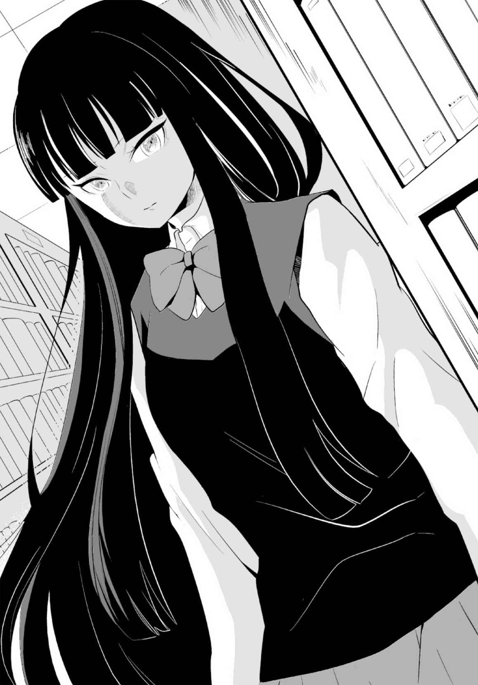
佳夕の位置からは本棚に隠れて見えないが、壁に人の影が伸びた。
足音が近付く。佳夕は胸騒ぎを覚え、緊張した。
本棚の陰から現れたのは、屋上で出会った少女だった。昔の制服ではないが、その顔はやはりアルバムの一ノ谷未沙にそっくりだった。佳夕はじっと少女を見つめた。
部長も「確かに......一ノ谷未沙だ......」とつぶやいた。
少女はテーブルを挟んで、佳夕と向き合う形で足を止めた。無言のままテーブルに目をやると、その表情が少し強ばった。彼女の視線の先には五枚の写真があった。
「......この写真を知ってるの？」佳夕は思い切って尋 ねた。
「ええ......」
「......あなたが撮ったの？」
「違う......」
「あなたは誰？ 一ノ谷未沙なの？」
佳夕の問いかけに、少女は少しためらいながら唇を開いた。
「一ノ谷未沙は、わたしの母......」
「えっ......お母さん......」
「そう......。写真のモデルは、母のクラスメイト、篠 原 圭 人 」
佳夕は開いたままの卒業アルバムに目をやった。
「......彼を探していたの？」
「うん......」
「そんなアルバムをいくら探しても載っていない......」
「どうして？ 転校でもしたの？」
少女は首を横に振って言った。
「彼は......もうこの世にいない......」
４
少女は一ノ谷玲 花 と名乗った。
屋上で会った時は大人びて見えたが、実際は佳夕と同じ一年生でＥ組の生徒だった。
教室が離れていて、気付かなかった......？ そりゃ、まだ入学して間もないけど......。
図書室の閉室時間が迫り、佳夕たちは、玲花に誘われるまま、校舎の屋上へ上がった。
佳夕は改めて玲花の前に写真を差し出した。
「教えて。あなたとお母さんのこと。そして写真のことを......」
玲花は写真を手にすることも、目を向けることもなく、佳夕を見た。
「似てる......」
「え？」
「母と似たものを感じる」
「どういうこと？」
玲花は何も答えず、薄笑みを浮かべ、以前と同じように屋上のフェンスに近付いた。
「......母はその写真を撮ってから、ずっと罪の意識にさいなまれていた......」
玲花は立ち止まり、いつものように校庭を見下ろした。
「なぜなら、写真に写る篠原圭人はその撮影直後、ここから飛び降りたから......」
「自殺......だったの......？」
「母は篠原圭人と付き合っていた......。三年の秋、母は卒業アルバム向けに彼を校内で撮影した。しかしその五枚目、廊下での撮影を終えたところで、彼の様子がおかしくなった。妙なことをつぶやきながら走り去るように姿を消した。母が辺りを探している間に......彼はフェンスを乗り越えて、飛び降りた。......即死だった。死体は顔がコンクリートの......ちょうど花壇の角に突き刺さるように、ぐちゃぐちゃになったという......」
佳夕は校庭を見る気が起きなかった。あの花壇でそんなことが......。
「数日が過ぎ、失意のまま母はフィルムを現像した。そのとき、初めて気がついた。廊下で撮った写真の異変に......。かき消された顔は......まるで彼の飛び降り自殺を暗示していたようだった......。母は、彼の死の真相を探ろうとしたが、無駄だった」
玲花は三人をちらっと見た。「あなたたちも気付いているんでしょ？ 彼の服に写る不気味な顔......。その意味も、自殺との因果関係もわからなかった......。しかしそれ以来、母は狂ったように写真を撮り始め、同時に心霊写真にものめり込んでいった。なぜこの写真が撮れたのか。彼の死の理由を探りたいという一心で......」
そして右手でフェンスに触れた。「......表向きは、海外を放浪した末に帰国とあるけど......実際はそうじゃない。高校を卒業して三ヵ月後、母は部屋でわたしを産んだ......」
佳夕は啞 然 として、わが耳を疑った。
「父親は......たぶん篠原圭人......」
じゃあ、妊娠したのは......高三......あの写真の直前ということ......？
「もともと母の両親は高校時代に交通事故で亡くなっていて、母は自宅を相続していた。出産後は、部屋中に貼られた、おびただしい数の写真に囲まれながら、わたしを育てた......」
玲花は深くため息をつき、夕焼けの空を見上げた。
「......たまに二人で外に出ると撮影に没頭し、部屋に戻っては写真を壁に貼り付ける。その繰り返し。それがあるとき、憑 き物が落ちたようにプロカメラマンとしてデビューした。マスコミ戦略もあって一躍新進気鋭のカメラマンとして脚光を浴びるようになった。もちろん、わたしの存在は封印されて......。......しかし、わたしが十歳のとき、母は部屋を出て、そのまま姿を消した。今度は本当の失踪だった。以来、どこにいるのか今もわからない......」
「連絡は......ないの？」
玲花はゆっくりと振り返った。「ひょっとしたら、もう自殺しているかもしれない。生きているって信じたいけど......」そして、あきらめにも似た自虐的な笑みをこぼした。
「わたしはずっと母を理解しようとした。だから写真のこと、特に心霊写真のことを勉強した。元々、霊感は強かった方だから。それが唯一、母に勝てるわたしの力だった......」
霊感......。だからこそ心霊写真の深い闇 を知ることができるのかも......。
「母の失踪後、わたしはあまり強い霊気を感じなくなっていた。なのに......この五月......学校の中で突然強い気配を感じた」
玲花は佳夕を見つめた。「それを探っていくと......最初はあの心霊写真部かと思った......。でも違っていた。やがて屋上であなたと出会った......」
あのとき──。（写真の見方は一つとは限らない......）
「あなたには母と同じ気配を感じる......。その気配の正体が何かはわからない。あなたは母と同じ道を歩もうとしているのでは......」
「私が......？」
玲花はうなずいた。
「心霊写真にのめり込み......やがては母や篠原圭人のように......」
「..................」
「あの......いいかな」牧村が玲花を見て言った。「僕はこう考えるんだ。この学校に潜む邪悪な存在が篠原圭人にとり憑き、自殺に追いやった......。その証拠となる写真を撮ったことで、お母さんにも危機が及んだ......。だったら写真をもっと調べるべきじゃないか？」
「......あなたは？」
「この人は心霊写真部の部長よ。その手の分析に詳しいんだから」リリが割って入る。
玲花はふっと笑みをこぼした。「部長......。あなたの推理はたぶん間違っていない......。わたしも一時期そう考えていた。でも、その写真は、もっと危険だと思う......」
「危険？ どういう......」
「正直わたしのような霊感の強い人間なら、その写真を真正面からじっと見つめるだけでも、気分が悪くなったり、最悪死にたくなるかも......」
この写真が......そんな......。
「心霊写真を侮ってはいけない。表面的な怪しさ、いかがわしさに潜むものが、知らず知らずのうちに浸食して牙 をむく......」
玲花はリリの持つ写真に少しだけ目線を這 わせた。
「その写真......わたしは一度、ネガもプリントも焼いたつもりだった」
佳夕、牧村、リリの視線が一斉に写真に向けられた。
「なぜ残っていたのか......わからない。......とにかく早く処分した方がいい」
玲花はそう言い残し、屋上を去って行った。
５
（心霊写真を侮ってはいけない）
帰宅してからも佳夕の中で、玲花の言葉が何度も巡った。
確かに、ここ最近、写真を通して奇妙な体験をすることが多かった。霊にとり憑かれ、幻覚を見たり、未来を予知したりとか......。これも霊感......なの？
篠原圭人の顔がかき消された、あの廊下の写真は、いまもスクールバッグの中にある。私も、写真をじっと見てると、死にたくなるんだろうか......。
私の力......。一ノ谷玲花は写真を見るだけで、影響を受けてしまうらしい。でも、私は霊感があると言っても、彼女とはちょっと違うようにも感じた。これまで何度も写真を見つめては、事件や謎を解くヒントを得ていた。決して呪 いというマイナス面だけじゃなかったはず......。おかげで危機を回避したこともあったし......。でも彼女の警告を無視して、あの廊下の写真をじっと見つめる勇気はなかった。もっと普通の写真でなら......。
そうだ......。佳夕は携帯に目を向け、手に取った。今朝、メールで送られてきた、小学生時代私が撮ったと思しき、花火の画像。キーを操作して、画面に映し出す。
これは単なる撮影ミスだった......。ストラップが霊的な光の線に見えただけ......。でもこの画像を見ていると何か感じるものがあった。胸騒ぎのような......。
この程度なら大丈夫かも......。画像に潜む何かを感じ取ることができれば、なぜ今になって送られてきたのか、秘められた真相がわかるかも......。
静まった真夜中の部屋で、佳夕は深呼吸をして、携帯の画像を十数秒間じっと見つめた。
.........。だが何も起きない。息を止め、まばたきをやめて、もう一度無言で画像を凝視した。今度はもっと長く......。やがて佳夕はため息をつき、苦笑した。
そんな簡単に何かが起きるわけないか。そう思いながら、画像の、花火の煙の部分を見つめた。がくん......と後頭部が打ちのめされたように視界が揺らぎ、めまいを覚えた。
あっ......。目の前の画像が幾重にもぶれはじめた。体がやけに重く冷たい。息苦しい。
震えながら顔を上げる。周囲が煙に包まれていた。
やだっ！ 火事!? どこからともなく笑い声が響いた。子供たちの無邪気な笑い声。煙に混じり、火花がゆっくりと飛び散った。
どこ......ここは......。うねり、立ちこめる煙の向こうに、一人の女の子が立っている。花火をせず、こっちを見ている。ああっ......。煙が立ちこめ、女の子の顔を包むように、うっすらと見えなくした。
佳夕は、はっと我に返った。手から落ちた携帯が床にあった。辺りの煙は消えていた。
......私......。携帯の画面には、花火の画像が映し出されたままだ。真ん中に、小学生の女の子がいる。だがその顔は煙に包まれている。部室で補正した画像のプリントをバッグから取り出した。しかし、よほど濃い煙に遮 られたのか、顔ははっきりしない。
でも私......さっき煙の中で......あの子の顔をはっきり見た。そう、近所の公園で開かれた花火大会......。
見知らぬ小学生......。若くて美人の母親に連れられた......母親によく似た......。
いま、気付いた......面影があった......。佳夕は体の震えを抑えるように声を発した。
「あの子だ......。私......彼女と会ったことがある......」
６
翌朝、登校した佳夕は教室に行く前に、Ｅ組の教室に立ち寄った。
戸を開けて中を覗く。数人の生徒がいる中、奥の席で窓の外を眺めている少女がいた。
一ノ谷玲花だった。
佳夕は玲花に笑顔を向けた。
「......ホントに一年生だったのね」
玲花は「当たり前でしょ......」と素っ気なく返した。
「だって、幽霊じゃないかって思ったから......」
玲花は鼻で笑い、迷惑そうな表情で席を立つと、佳夕の横を通り過ぎ、廊下に出た。
「待って......」佳夕は慌てて後を追った。
「お願い、見てほしいものがあるの」
「......また、心霊写真？」玲花は振り向くこともなく歩いた。
「......これ、あなたでしょ？」
その声に玲花は階段の手前で足を止めた。
佳夕は玲花に携帯を見せた。その花火の画像を見た玲花の表情が引き締まった。
「その画面の真ん中の......」
「わかっている。これをどこで？」
「私はてっきりあなたが送ったものだと......」
「わたしが？ そんなことしていない......」
「昨日の朝、私の携帯に送られてきたの。あなたじゃないとすると......送り主は......」
「この写真は、他の写真と一緒に母の部屋に保管されていた。それが、あなたに送られていた......。どうして......」
「......おそらく、写真を撮ったのが、私だから......」
玲花は信じられないという顔で佳夕を見た。
「公園の花火大会で、見知らぬ人からカメラを借りたの......」
「......この写真は覚えている。母のカメラで撮った写真に偶然紛れ込んでいた一枚......」
「お母さんの......一ノ谷未沙の......カメラ......」
「そう。もちろんこんな撮影ミスをするのは母ではないと、すぐに思ったけど......」
佳夕も苦笑した。「ちなみに、その心霊写真のように見える白い光は......」
「カメラの紐 でしょ」
「正解、さすが」
「でも、これがどうしてわたしだと？ 顔もはっきりしていないのに」
「写真を見ていたら、記憶が蘇 ったの」
「記憶が......？」
「煙で隠された昔のあなたの顔がうっすらと見えて......。昨日のあなたと同じ気配というか面影を感じたの」
玲花は携帯を見たまま、何の返答もしなかった。
「信じてもらえないかもしれないけど......。私、写真を見ていると......不思議な感覚にとらわれて......写真に刻まれた痕 跡 というか......過去を垣間見ることができるみたい......」
玲花はやがて携帯から顔を上げた。「......たぶん夏休みだったと思う。母の撮影に付き合った帰り、ふと立ち寄った児童公園で子供たちが花火で遊んでいた。一人の女の子が、撮影を始めた母のカメラに興味を持ったようで、じっと見ていた」
「女の子......」
「あなたかもね......」
「私はその頃、父親のカメラを触らせてもらった程度で、自分のカメラが欲しかった」
「母は珍しく声をかけ、カメラを貸して撮らせてあげた。それが......たぶんあの写真......」
「じゃあ、私は一ノ谷未沙と会ったことが......」
「そう。わたしもなんとなく覚えている。たぶん忘れたくても忘れられない......」
「......何かあったの？」
「わたしはこのとき、初めて自分の霊感のようなものに気付いた......」
「......霊感って、あの場に何か幽霊のようなものがいたってこと？」
「そう。最初は音だった。花火の煙の中で、奇妙な音をいくつも耳にした......」
「......どんな音？」
「カシャッ......カシャッ......って、シャッターを切るような音......でも、その場でカメラを持っていたのは母だけ。もちろんその音とは別だと思うし、音は四方から聞こえた」
あの場にいた私には聞こえていなかった......。彼女にしか聞こえなかった音......。
「そのうち、わたしはいくつもの視線や気配を、煙の中に感じた......。目を凝らすと、煙に人の顔のようなものがうっすら浮かんだ......。目や口の奥は暗闇で、肌はミイラのように干からびていた......。顔全体が歪 んで叫んでいるような、おぞましい顔だった......」
玲花の話す不気味なイメージが、頭の中で妙に生々しく視覚化され、佳夕は身震いした。
「......どうして......？」佳夕が声を絞り出した。
「え？」
「いま、あなたの話した人の顔がはっきりイメージできた......」
「あなたも、それを見たの」
佳夕は首を横に振った。「......違う。......もっと最近......」
「最近......？」
佳夕はバッグから一枚の写真を取り出した。篠原圭人の顔がかき消された廊下の写真。佳夕は制服に浮かぶミイラのような顔を指差した。しかし玲花の反応は冷たかった。
「......知っている。わたしも最初、この写真を見たとき、似ていると思った」
「......でしょ、だったら」
「でも、それは、言われればそう見えるという域を出ないの......」
「そんな......勘違いと一緒にするなんて」
「カメラの紐と同じ......」
「そんなことないよ......私は自分の直感を信じたい......」
「バカなこと」玲花は語気を強めた。「いい？ この写真だけは......とても危険なの」
「............」
「これ以上巻き込みたくない......」
佳夕は首を横に振った。「私......知りたいの。花火の写真のように......。一ノ谷未沙が撮った写真に刻まれた、彼女の自殺の真相を......」
玲花は呆れ顔で見た。「そもそも篠原圭人のことは、あなたには関係ないでしょ」
「そんなことない......。篠原圭人の写真も部室で見つけたんだし......」
「だからって」
「現に、私たちは写真を通して出会っている......。これも単なる偶然？」
「佳夕......」
「私、思うの......。今になって、これらの写真が出てきたのは、一ノ谷未沙からのメッセージじゃないかって......」
「母からの......？」
「そう。写真を調べろという」
玲花は黙って佳夕を見つめた。
「あなたの霊感とたぶん違うけど、私にも何かあるって信じてる。だから私が写真の記憶に触れることで、何か真相がわかるかもしれない」
「真相......」
「今日の放課後、心霊写真部で試してみる」
「......試してみるって？」
「花火の写真のように、この写真の過去に触れてみようと思うの」
佳夕はもう一枚写真を取り出し、玲花に見せた。「ほら、一枚目の写真。教室の時計が四時三十六分を指している。その時間、この写真と同じシチュエーションを再現し、撮影をイメージしながら、最後に問題の写真を見て念じるの。何かが見えるかも......」
「やめなさい、そんな危険なこと......」玲花は真顔で睨 みつけるように言った。
「私は一人でもするつもり。でも......できれば来てほしい」
「本気なの？」
佳夕はうなずいた。「......待ってるから」
始業のチャイムが鳴った。佳夕は玲花に背を向けて廊下を歩き出した。
７
一日が終わってほしくないときに限って、時間は早く流れていく。
夏の始まりを知らせるような湿気が漂う部室で、佳夕は棚の前に立ち、玲花を待った。
「あの子、本当に来るかなあ......」リリが手鏡を片手に、前髪をいじっている。
牧村はいつもと変わらぬまま、窓際の席でパソコンと向き合っている。
最初、佳夕は玲花が来なければ、一人ででも実験をやろうと思った。しかしそのことを二人に話すと、喜んで協力を申し出てくれた。むしろ牧村は「こんな機会めったにないしな」と胸を躍らせているようだった。
窓の外に広がる空は、夕暮れの陰りを見せはじめていた。時刻は午後４時を過ぎようとしていた。やっぱりダメか......しょうがない......。佳夕はバッグから五枚の写真を取り出した。
「私たちでやるしか......」うなずいて写真を見つめた。
そのときドアが開く音がした。振り向くと玲花が立っていた。佳夕は笑みをこぼした。
「ありがとう、来てくれたんだ」
「これはわたしの問題でもあるから......。もし、あなたがうまく真相をつかんでも、わたしは後からそれをたやすく聞くわけにはいかない。......始めるなら、さっさと始めましょ」
「うん......」佳夕はうなずいた。
「ほい、じゃあ、これ」リリが立ち上がり、床に置いたスポーツバッグを机に置いた。
「ありがとう、リリさん」
佳夕がバッグを開き、中から服を取り出す。詰め襟の制服だった。
「演劇部に借りたの。ＯＢが残してくれた、ちょうどいい背丈のが一着あったからね」
牧村も席を立ち、興味深げに覗いた。「へえ、写真の制服と同じだな」
「さ、部長、早く着替えて」
「え？ 何を......」
「決まってるじゃん。写真のモデル、篠原圭人になってもらうの」
「僕が？」牧村は自分の顔を指差した。
「背の感じとか似てるっしょ。ていうか、他に誰が着るの」
「部長、お願いします。当時の雰囲気をよりリアルに再現するためなんです」
頭を下げる佳夕とリリ、玲花のまなざしに、牧村はこれ以上の抵抗を諦 め、渋々といった表情でトイレに着替えに行った。
佳夕は一眼レフカメラと三脚、五枚の写真を持って、部室を出た。
ほどなくして着替えた牧村も現れる。「......これでいいのか」
「あっ、はい......」一瞬、篠原圭人本人が現れたかと錯覚するほど雰囲気が似ていて、佳夕はどきっとした。顔は全然違うのに、制服だけでこんなにも印象が変わるの......？
「とにかく早く行こっ。もうすぐ四時三十六分だよ」
リリに肩を叩 かれ、佳夕は階段に向かった。部長、玲花もそれに続いた。
まずは一枚目の写真。三階の３年Ｄ組の教室に入る。中は無人だった。
佳夕は写真を牧村に見せる。写真と同じ窓際から二列目、前から二番目の席に立ってもらった。詰め襟の部長のおかげで、当時の雰囲気に、自分が少しずつなじんでいく。
やっぱり着てもらって正解だった......。
佳夕は三脚を立て、カメラを構える。あくまで撮るポーズだけだけど......。それでも当時の臨場感が生々しく蘇る。背後の玲花をちらっと見る。彼女も真剣なまなざしを向ける。
あのときの篠原圭人......。彼と一ノ谷未沙の気持ちが少し理解できそうな気がした。
ピントを合わせ、シャッターボタンを押す。そして佳夕は右手に持つ写真を見た。
一瞬、その画像が揺らいで、ずん！ と引き寄せられそうな異変を覚えた。佳夕は何度もまばたきした。写真はいつの間にか元に戻っていた。
......予兆？ 体がざわめいた。花火の写真と同じだ。体と心のリズムを、最後の写真の、二階の廊下での撮影でピークに達するようにしないと......たぶん真実は見えない。
佳夕は二枚目の写真を手に取り、牧村に言った。「次は階段です」
教室を出て、階段を下り、あらかじめ確認した三階と二階の間の踊り場で立ち止まる。
「この辺り......かな」
上の段から玲花が見守る中、牧村が立ち、写真と同じさりげないポーズを取る。
佳夕は三脚と写真を脇に置き、三段ほど下りた位置から見上げるようにカメラを構え、シャッターボタンを押した。写真と同様、西日が窓から差し込み、雰囲気も十分だ。
佳夕の中で予感が確信に変わっていった。気持ちが高ぶる。今ここで二枚目の写真や三枚目の写真を凝視したら、ホントにトリップしてしまうかも......。
「部長、ありがとうございます。そのまま同じ踊り場で、今度は窓辺のバストショット」
牧村も乗ってきたのか、何も言わずも写真と同じポーズを再現する。さすが部長、飲み込みが早い。
......いよいよ最後の撮影場所、二階の廊下だ。
写真を持つ手が心なしか汗ばんだ。玲花を見ると、やはり緊張している。何度も「危険だ」と警告されたんだからしょうがない。だが、もう後に引けなかった。
階段を下りた佳夕は、二階の廊下に踏み込んだ。後ろには牧村、リリ、玲花がいる。
廊下でのカットは二つ。一枚目は何も異変が起きていない。ここまでの撮影でリラックスしたのか、写真の篠原圭人も笑顔を見せている。そして最後があの写真......。顔がかき消され、制服の脇腹には歪んだミイラのような顔が浮かぶ。
牧村は写真を見てポーズを確認し、佳夕に渡すと、柱の前に立った。
「これでいいな？」
「はい」佳夕は三脚を立ててカメラを構えた。
写真そのままだ......。何度も見た写真のイメージとファインダー越しの眺めが一致した。
こんな撮影だったんだ。牧村が、まるで篠原圭人のように優しく微笑む。
佳夕は興奮を抑えながらシャッターボタンを押した。
残るはあと一枚......。
佳夕がカメラから顔を離すと、傍らに玲花がいた。
「......いいのね？」
問いかけに、佳夕は黙ってうなずき、再びカメラのファインダーを覗いた。
みんな......協力してくれてありがとう。
佳夕は当時の一ノ谷未沙と気持ちが同化するのを感じた。写真を持つ左手が震える。
まだ見ちゃいけない。そっと目を閉じる。
３......２......１......。辺りが静寂に包まれる。佳夕はまぶたを開け、右手でシャッターボタンを押した。そして左手に持つ最後の写真を、自らの顔の前に出した。
お願い......！
篠原圭人のかき消された顔が、窓から差し込む西日に照らされ、佳夕の目に焼き付いた。
どれだけの時間、目を閉じていたのか......思い出せない。
このままずっと闇の中に漂っていたい......。それほどに体が闇になじんでいた......。
闇の色が徐々に赤く染まり、眠っていた感覚が呼び覚まされる。
佳夕はまぶたを上げた。
視界を遮るものは何も無かった。ただ、毒々しい夕焼けの空が広がっていた。
私......何で......こんなところに......。頭の中が混乱している。
あれ......。頰 に風が当たる。顔の皮膚が、寒気がするほど異様な冷たさに包まれている。なのに、肌の下の肉体は焼けるように熱い。右手で頰に触れてみた。指先にぬめりを感じると共に、鋭い痛みが顔中に広がった。つっ......。閉じていた感覚がじわりと蘇る。
指先を見た。赤い粘液がべったり付着していた。いいい......。顔が激痛で震え、叫ぶこともできない。首をひねり、左側を向いた。自分がどんな状況にいるのか知りたかった。
赤い空から視線を下げると、見慣れた校庭が現れた。顔面からしたたる血が、ぽたっぽたっと真下の花壇やコンクリートの地面まで、スローモーションで落下していった。
佳夕は初めて気付いた。自分が屋上のフェンスの上に、仰向けで横たわっていることに。
......どうして？ 誰か......助けて......。体の自由が利かない。
顔からあふれる血の滴が絶え間なく垂 れ落ちる。いやっ......いやっ......。
パニックになりながらも、気配を感じる右側に、つまり屋上の内側に顔を向けた。
目の前に顔があった。ミイラのように干からびた、断末魔の叫びのような不気味な顔。目や鼻、口の奥に漆黒の闇が垣間見える。見覚えがあった。
あの写真......。
篠原圭人の制服に写った、不気味な顔のようなもの......。それが今、はっきりと存在していた。横たわった佳夕の全身を支えるフェンスがミシッ......と揺らいだ。ちょっとしたはずみでバランスを崩して落下しそうだ。
ミイラのような顔はフェンスに上っているのか、佳夕の目の前に顔を近付けた。
お願い......これ以上は......やめて......。
異臭を放つその顔の近くで、何かが鈍く光った。視線をずらし、目の焦点を合わせる。
ナイフだった。しかも刃先にはべっとりと血が付着していた。ミイラの顔は楽しそうにナイフを横に動かす仕草をした。佳夕はすべてを悟った。
私......顔を何度も切り裂かれたんだ。篠原圭人の......かき消された顔のように......。
そのとき、ミイラの顔の左手が、佳夕の右肩をドン！ と押した。
あっ。フェンスの上に横たわった佳夕の体がゆっくりと、そして確実に左に傾いた。
赤い空が角度を変え、見えなくなる。抗 うことはできなかった。手足も麻 痺 して動かない。体はフェンスを離れ、頭から転落した。血の滴よりも早く、校庭が間近に迫った。
瞬間、佳夕の右手首を何かがつかんだ。佳夕は体をひねり、フェンスの外側に上半身を激しく打ちつけた。同じ痛みでもさっきとは違っていた。不思議と恐怖はなかった。
「大丈夫か......？」
懐かしい声だった。フェンスをよじ登り、右手首をつかんでくれた。
佳夕は震えながら、牧村を見つめた。彼の背に、同じように夕焼け空が広がっている。しかし何かが違っていた。佳夕は左手で己の頰に触れた。光る指先を見る。汗......。顔面を覆った真っ赤な粘液や傷跡は消えていた。産毛が少し残る、汗ばんだいつもの頰だ。
呆然としながら、佳夕は徐々に現実に戻ってきたことを実感した。
「早く......」
苦しそうに右手をつかむ牧村を見て、佳夕は我に返った。
「ご、ごめんなさい......」慌てて左手でフェンスをつかみ、這い上がった。
牧村が佳夕の手を離すと、疲れから顔をしかめ、大きく息を吐いた。
佳夕が屋上の内側に立った頃、陸屋根のドアが開き、遅れて玲花とリリが現れた。
「佳夕......よかったぁ！」リリも駆け寄り、安 堵 の笑みを浮かべた。
玲花は佳夕を見つめた。その表情は強張り、体が震えていた。
フェンスから離れた佳夕は、牧村から、事のいきさつを教えられた。
あのとき──佳夕は廊下で写真を見つめた直後、うなだれ、ぶつぶつと意味不明なことをつぶやきはじめた。心配になった牧村が近付くが、突然、奇声を発し、廊下を駆け出した。牧村が追いかけるも、佳夕は錯乱したまま階段から屋上へ入った。そしてフェンスをよじ登って上に横たわり、全身をぶるぶると痙 攣 させながら、地上へ落ちようとしたのだ。
「......何も覚えてないのか？」
うつむいたまま答えることが出来なかった。
完全に記憶が途切れている。気がつけば屋上にいた。
写真を見つめてから数秒しかたっていないのに......ひどく......疲れてる......。
佳夕は力なくうなだれた。何も覚えてない......。本当に......。
......でも......。
戸惑う牧村とリリ、玲花を前に、佳夕がつぶやいた。
「......私......見たの......」
「見た......？ 何を？」近くで牧村が問いかけた。
佳夕はゆっくりと顔を上げた。その目を潤ませて、玲花を見た。
「......篠原圭人は......自殺なんかじゃない......。殺されたの......」
玲花は啞然とした。「......そんなの......うそよ......じゃあ、誰が......」
「わからない......でも、すぐ近くに不気味なマスクを付けて......ナイフを持った......。そう......あの写真に写ったのと同じ......ミイラのような......」
涙があふれ、佳夕の頰を伝った。
玲花はうなだれ、それ以上何も言わなかった。
佳夕はその場に崩れ、すすり泣いた。にじんだ視界の先に、制服を着た篠原圭人の姿がぼんやりと浮かんだ。
８
夜になっても、気持ちは一向に落ち着きを見せなかった。
リリが「家まで送ろうか」と言ってくれたけど......。それも断った。恥ずかしさと自分への嫌悪感もあって一人になりたかった。ただ、このまま家に帰るのもためらいがあった。
皆と別れた後、家とは反対方向の下り電車に乗った。吊 り革につかまり、目の前の車窓に映る自分の顔を見た。泣きはらした目のクマが、窓にも映ってかっこ悪い。たまらず次の駅で電車を降り、ホームのベンチに座った。サラリーマンや学生の姿もまばらな各駅停車駅のホーム。それでもあの部屋に一人でいるよりはましだった。
どうしよう......眠ったら、夢の中にまであの不気味な顔が出てきそうで憂 鬱 になった。
私......篠原圭人の死を体感したんだ......。でも、どうすることも出来なかった。もしもそれが真相だったとしても、彼は帰ってこない。こんなの......知ってもつらいだけ......。
佳夕はベンチに背をもたれ、深くため息をついた。あの夕焼けが遠い昔の幻だったように、空には星も月も雲に隠れた漆黒の闇が広がっていた。
夜空を見上げ、少しだけ冷静さを取り戻した佳夕は、あのときを振り返った。
......最後の瞬間......彼の顔は、校庭の花壇のコンクリートに激突してつぶれ、原型をとどめなかった......。だから......自殺と思われた......？ あのミイラのような顔が犯人......？ それは、顔がかき消された篠原圭人の服にもはっきり浮き出ていた。
でも、あのミイラの顔......他にも、どこかで見た覚えが......。いったい、どこで......？
少なくとも一つの写真だけじゃなかった。廊下の写真よりも強い視線を......。
視線......。目を閉じると、記憶の片隅でぼやけた残像がうっすらと実を結んでいく。
闇......？ ......闇を包む......白い......。......白......。
ホームにチャイムが鳴り響き、佳夕は目を開けた。かすかな振動と共に、反対側のホームに上り電車が入ってくる。ベンチから立ち上がった。
そうだ......。停車した列車のドアが開くと、佳夕は中に飛び込んだ。
いてもたってもいられなかった。閑散とした上り電車でも、シートに座ることなく、ドアの脇にもたれ、目的の駅にたどり着くのをいらいらしながら待った。
こんな夜に学校へ行くのは初めてだ。もう二度としたくなかったのに。
そう思いながら、校門のフェンスをよじ登り、校庭を全力で駆け抜けた。心霊写真部の窓の、鍵 はかけ忘れたままのはず......。
校舎一階の片隅にある部室の前に着く。案の定、窓はあっけなく開いた。
中に入ると明かりもつけず、パソコンの電源をオンにした。マウスをクリックし、ピンボケ補正ソフトを立ち上げる。補正された花火の画像がそのまま残っていた。
謎の光の正体はカメラのストラップだった......。でも、他に何か見落としてない？ ストラップにばかり目がいっていたけど......。
玲花......。子供たちの中で、真ん中に立つ玲花だけが、ただ一人花火をしていない。その顔は白い煙に包まれている。佳夕は、写真に奇妙な視線を感じた。
......この視線の正体って......？ ふと玲花の左上の煙に目を向けた。
......煙の黒い部分......これ......なんとなく目や鼻に......。そうだ......うっすらと顔のようなものが......。昼間のピンボケ補正で、隠れていたものが浮き上がったんだ。
佳夕は画面に顔を近付けた。でもこれ、まだ補正できるかも......。やってみよう。
マウスをクリックする。再び〈補正中〉の表示が現れ、新たな画像がフォルダに追加された。佳夕は緊張しながら素早く画像を開いた。
「！」ノイズが消え、限界まで鮮明になった画像に、息をのんだ。煙の中に、不気味な顔がくっきりと現れた。
間違いない......あのミイラの顔だ......。......篠原圭人の制服に現れ、私が屋上で見た......。そして花火の写真にも......同じ顔が......。おそらく小学生の玲花が煙の中で見たという顔も......全部同じ顔だった！
しかしそれ以上に、佳夕が慄 然 としたのは、画像のもう一つの異変に気付いたからだ。
そんな......。補正された花火の画像。そこには、小学生の玲花の顔が現れるはずだった。しかし、鮮明になった彼女の顔には、幾重にも白い横線のようなモヤが走っていた。まるで、篠原圭人のかき消された顔のように......。
どうして玲花の顔だけ......。恐ろしい妄想が洪水のように、佳夕の中になだれ込んだ。
佳夕は慌ててバッグから携帯を取り出し、玲花に電話をかけた。
しかし何度リダイヤルしても、玲花が携帯に出ることはなかった。
９
玲花は母の部屋の前に立ち、ドアをノックした。
強い胸騒ぎを覚えた。こんな気持ちは久しぶりだった。
ドアをそっと開ける。
暗い室内から、こもったような重い空気が漂い、現像液の臭 いが鼻を突いた。
昼間あんな出来事があったせい？ そうかもしれない。感覚が研ぎ澄まされた。
霊感ともまた違う......。なんだろう、これ......。まさか......。
「......お母さん、いるの？」
玲花は室内の闇に向かって言った。返事はない。
ドア近くの照明のスイッチを押した。部屋の壁や天井には、おびただしい数の写真が貼られていた。すべて彼女が撮りためた写真だ。失踪した後もそのまま残していた。
改めて部屋を見る。写真は一枚ずつきれいに並べて貼られているのではなく、無造作に折り重なるように幾重もの層を作り、斜めに、真横に、逆さまにも貼られ、部屋中を覆い尽くしている。子供の頃、何度か中に入っても落ち着かず、逃げるように出てきたことを思い出す。母の姿が見えなくなると、よくこの中に籠 もっていた。無言のまま写真に囲まれ、何時間も出ることがなかった。
天井の照明が明滅し、ふっと消えた。ずっと蛍光灯を交換してなかったから......？
ドアを半開きにしたまま、廊下からの明かりを頼りに、薄暗い部屋に足を踏み入れた。
「お母さん......？」
いつもより強い気配をこの部屋から感じる。どこから......。
部屋の中央で足を止め、辺りを見回した。すると右側の薄暗い壁に目がとまった。
壁に貼られた写真と写真の、数センチの隙 間 に目玉が見えた。
こっちをじっと見ている!? 玲花は目を凝らした。
目玉......たしかに目玉だが......。近付き、壁に貼られた数枚の写真をはがした。すると壁にかけられた鏡が現れた。
......なんだ......。鏡に映る自分の顔を見つめた玲花は、思わず頰を緩めて苦笑した。そのとき、後頭部に鋭い痛みを覚えた。
......かっ......。振り返ると、闇の中に不気味なマスクの顔が浮かんでいた。
干からびたごわごわの皮膚......。まるで......花火大会で......煙の中に見えた......顔......。
なぜ、今になって......。これも......幻覚なの......？
マスク顔の左側にナイフが現れた。刃には深紅の粘液が付着している。とっさに玲花は右手でマスクをつかみ、引っ張った。マスクはあっけなく顔からはがれ落ちた。
玲花は目の前にいる、自分とよく似た顔に息をのんだ。
「......お母さん......？」
未沙だった。肌の色 艶 が失われた青白いその顔はシワが目立ち、年齢以上に老けていた。
「まさか......お母さんが......本当に......？」
その顔は何も答えず、にたりとした。シワが笑みと共にみるみる増殖し、顔面を覆い始めた。急速に老化し、干からびた顔は元のミイラ顔に戻ってしまった。
「なっ......」
ミイラ顔から含み笑いが漏れる。明らかに未沙とは別人だった。ミイラ顔は自らの左手でマスクをつかみ、ゆっくりとはずした。闇に浮かんだその素顔を見て愕然とした。
「......あなた......が............殺人鬼............」玲花は顔を歪め、震えた。
後頭部から広がる痛みが、体の自由を奪い始めた。それでもなんとか立ち向かおうとした瞬間、振りかざしたナイフの刃が、玲花の顔面を右から左に素早く切り裂いた。
目と鼻の間の皮膚から鮮血があふれ出る。悲鳴を上げる間もなく、今度は左のこめかみから頰、唇、右顎 下にナイフが走った。顔面を襲う激痛と衝撃に、玲花はのけぞった。同時に、かっと見開いた左目に刃の先端が突き刺さり、力なく後ずさりし、壁にもたれた。背中に広がるぬめりで滑り、何枚かの写真をベリベリと背中でこするようにはがしながら、床に尻 餅 をつく。うめきながら、玲花ははっとした。
なに......？ 耳を澄ませる。
......シャッ............シャッ......
静寂の中に、音がこだました。
......カシャッ......
意識がぶれながらも、顔の角度を少しだけ上げ、まだかすかに見える右目を向けた。
......手に持っているのは......一眼レフカメラ......。......何を撮っているの......？
まるで玲花の存在を無視するように、無我夢中で室内のあちこちを撮り続けている。
......カシャッ......
右目の視界が徐々に薄暗くなる。閉じかかったまぶたに映ったのは、夜の公園で花火を楽しむ子供たちの姿だった。
......カシャッ......カシャッ......
笑い声に混じって音がする。ずっと気になっていた音だ。立ち込める煙の幻覚の向こうに、カメラを構える一人の少女がいた。少女はカメラを自分に向けている。
......カシャッ......
そうか、あのときも......。ただ風景を撮っていたんじゃない......。
......カシャッ......
少女を見つめた。その顔は、煙ではっきりとしない。少女の後に何かがいる。
人のような......。煙にまぎれた何か......。
玲花は最後の力を振り絞り、意識を集中させた。
......そうだったの......。
青白く硬直した唇が緩み、笑みを浮かべた。
血だまりの床に、だらりと垂れた指先がかすかに動いて、やがて止まった。
第七章 小さな人
１
玲花と連絡が取れなくなって十日目の朝。胸の奥をつかまれるようなうずきを覚え、佳夕は浅い眠りから覚めた。
枕元の目覚まし時計は六時を少し過ぎていた。
眠るのも中途半端な時間。仕方なくベッドから起き上がり、机の携帯を手に取った。
よかった......変なメールは届いていない。
ほっとしたのもつかの間、突然、携帯が震動した。メールの着信。送り主は不明だ。
また？ ......どうしよう......開く？ ......それとも削除する？
前に送られてきたのは、あの〝花火の写真〟だった。佳夕は直感を信じ、メールを開いた。やはり画像が添付され、見知らぬ部屋が写っていた。
和室......？ 左に押し入れがあり、襖 が数センチ開いている。襖の手前に、紺色の布のような物が乱れたまま置かれ、柱を挟んだ右のドアの向こうには、板の廊下が伸びている。
花火の写真が送られたときと同じで、メールに文面はなかった。同じ人物が送った......？ でもこの写真、どこかの室内で、試し撮りをしただけのような......。
念のため、画像を拡大してみた。襖や柱もシミのようなものはあるが、特に人の顔と思えるものもない。きれいに磨かれた廊下も同様だ。乱れた紺色の布からも、顔や目、鼻、口が覗 いたり、青白い手、指が見えることもなかった。
これ......本当に心霊写真？ なんだか試されているようで、あまりいい気分はしなかった。
唯一気になったのは、押し入れの隙 間 だ。拡大すると、奥は暗がりで、そこには、青白く丸い物体がぼんやりと浮き上がっていた。大きさは、押し入れと比較して人の拳 ぐらい？
画像はいくら拡大しても粒子が荒れるだけで、正体ははっきりしなかった。
でも......あの花火の画像だって、調べるうちに、私や玲花の過去、そしてマスク殺人鬼との重大な接点が見つかった。
この画像にも......きっと......何かがある......。
携帯を見つめ、佳夕は決意を新たにした。
放課後、佳夕は一人で玲花の家を訪ねることにした。
玲花の教室を訪ねても、彼女はあの日から一度も登校していなかった。彼女は周囲と、どこかなじめなかったようで、誰も不登校をあまり気にとめていなかった。自宅の住所は、Ｅ組にいる佳夕の中学時代のクラスメイトに連絡表を見せてもらった。
目 黒 線の大 岡 山 駅を出て歩いて十数分。ネットのマップ機能で住所を検索すると、古びた木造の一戸建ての画像が現れる。ここで玲花は母親と二人で暮らしていた？
大通りから一本入った閑静な住宅街を歩き、デザイナーズマンションの前で足を止める。
マップが指示したルートだと、ここを曲がって、すぐ隣のはず......。
とうとう玲花の家まで来てしまった。もしも彼女がいたら......なんて話そう。しつこいと思われないかな。
緊張しながら早足に角を曲がった。しかし目の前の光景に、佳夕は呆 然 とした。
マンションの隣は空き地になっていた。
そんな......。マップに表示された邸宅は、跡形もなく消え去っていた。道路に面した庭の木々の一部だけが、かつての面影を残していた。
ここに間違いないはずだけど......。隣のマンションとの境界にある、ブロック塀を見ると、表面が変に黒ずんでいる。佳夕は空き地の奥の、家があったと思われる場所に近付いた。
すると、残されたコンクリートの土台の上に、細長い黒ずんだ物が倒れていた。
なんだろ......。よく見るとそれは、数本の焼け焦げた柱だった。
......まさか火事......？
佳夕が驚きのあまり立ち尽くしていると、背後から車のクラクションが鳴った。
黒いセダンが停まっている。運転席と後部座席に男がいる。後部座席のスキンヘッドの男が窓を開け、軽く手を振った。見覚えがあった。以前、池袋のビルで少年の死体を発見した件で話を聞かれた警視庁の刑事だった。たしか恋 塚 という。
佳夕が車に歩み寄ると、一見コワモテの恋塚が柄にもなく優しい笑みを浮かべた。
「奇遇ですね」
奇遇......。佳夕には、その言葉が何を意味するのか、考えてしまった。
恋塚はマスク殺人鬼の行方を追っている。つまり、ここに来たのも、そのため？ ここは一ノ谷玲花と、その母、未沙の家があった場所だ。
佳夕は屋上で見た幻覚を思い出した。あれが過去の事件を体感したのなら......。歪 んだミイラのようなマスクを顔に付け、ナイフを持った人物が、篠原圭人を殺した可能性が高い。その正体は......おそらく恋人だった一ノ谷未沙......。マスク殺人鬼は殺人と共に、その死体や周囲の風景をカメラで撮り、警察に送りつけるという。カメラマンで奇行も目立った一ノ谷未沙と符合する点も少なくない。
警察はマスク殺人鬼の犯人が、失踪中の一ノ谷未沙であることをつかんで、ここに来た......？ それを奇遇だなんて......。
佳夕が返答に迷っていると、恋塚が車のドアを少しだけ開け、「どうぞ」と言った。
うながされるまま、佳夕は車に入った。恋塚が横にずれ、佳夕が空いたスペースに座る。
運転席をちらっと見た。バックミラー越しに様子をうかがう若い刑事と目が合うと、彼は慌てて顔を傾け、フロントガラスの方に視線をずらした。
「ああ、彼は三 輪 と言います」
車はその場に停まったままエンジンを吹かし続けた。恋塚は空き地に目をやった。
「......あの家が全焼したこと、ローカル・ニュースで小さく報道されていましたね」
「そうなんですか......知りませんでした」佳夕ははっとした。「えっ、じゃあ、彼女は」
「彼女？」
「一ノ谷......玲花です」
「ああ、一ノ谷未沙の娘......。あなたと同じ緑が丘高校でしたね。お友達でしたか」
「ええ、まあ......」
「今日はどうしてここに？」
「......彼女がずっと学校を休んでいたので......心配になって......」
「なるほど......じゃあ、あなたは彼女がどこにいるのか知らないんですね」
「......もちろんです」
恋塚は当てが外れたのか表情を曇らせた。「火災の原因は不明です。何分古い家ですから。小さな火でもすぐ燃え広がってしまう。失火かもしれませんが、不審火の可能性が高い」
「不審火......放火ですか？」
「警察では犯人が玲花さんを殺害し、証拠を消すために家に火を放った、と見ています」
「玲花が!? そんな......」......殺された......。佳夕は愕 然 として言葉を失った。
犯人はマスク殺人鬼？ 警察は一ノ谷未沙を疑っているから、つまり玲花は母親に......。
「ふだん火の気のない奥の部屋が、特に激しく燃えていたようです」
奥の部屋......。恋塚が視線を向けた、空き地の左斜め奥を見た。
「一ノ谷未沙の部屋だったらしいですね。彼女が撮った、おびただしい数の写真が壁や天井を埋め尽くすように貼られていました。私も半年前、一度だけ娘さんに案内されて、中に入ったことがありましたが、そりゃ、気味の悪い部屋でした」
半年前、刑事たちはここを訪れていた。すでに玲花の母をマークしていた？
「我々は焼失したこの場所から、多数の写真を押収しました。まあ、大半は焼けてしまいましたけどね。それで......あなたは部屋に入ったことは？」
「......いえ。ここに来たのも初めてです」
「そうですか......。実は、さっき玲花さんが殺害されたと言いましたが......本当は彼女の所在がいまもわからないのです」
「わからない？」
「焼け跡から死体が見つからなかった。だからいまだに事故か事件か特定できていない」
佳夕の中でかすかな疑問が芽生えた。もしもマスク殺人鬼の正体が一ノ谷未沙なら、いまさら娘を殺し、自宅に放火する必要があるの？ ひょっとして犯人は未沙じゃない......？
「もう火事から十日が過ぎているんですけどね」恋塚がぼやいた。
「十日......？」
「ええ、火事が起きたのは、十日前の深夜」
恋塚の言葉に、佳夕は心の動揺を必死に抑えようとした。
......十日前、私がマスク殺人鬼の幻覚を見た日......。そして部室で、花火の画像の秘密を知り、玲花に電話をかけた夜......。この場所で何が起きたの......？ 玲花は本当に殺された......？ それともどこかへ......？
様々な思いと疑念が渦巻く中、佳夕は、恋塚からの質問にいくつか答えた後、ようやく車から解放された。三輪は駅まで送ると言ったが、丁寧に断った。
せっかく来たんだし、もう少しこの場所を見ておきたかった。
車が走り去ると、辺りは静寂に包まれた。日が陰った空き地に、佳夕は足を踏み入れた。
玲花......。まだ死体は見つかっていないんだ。殺されたと決めつけちゃダメ......。
前を見ると、黒ずんだコンクリートの土台や、焼けた柱に混じって、土の地面に木片や金具などの廃材があった。
ここに家があった......。手前が玄関......そしてリビング......階段......。ざわざわと全身に寒気を感じる。あちこちから刺すような視線が......。
......落ち着け......自分......。再び歩み始めた。何か手がかりがあるはず......。
刑事は、一番奥の部屋が一ノ谷未沙の部屋だと言っていた。そこが一番燃えていた......。
佳夕は奥まで進み、隣家との塀の前で立ち止まった。
この辺り......？ 黒い土に覆われたその場所を見てみたが、面影を残す物は何一つなかった。すべて警察が押収してしまった？
仕方なく今来た方向に戻ろうとしたとき、背中に一際強い視線を感じた。
「ひっ......」身震いして、思わず振り返る。必死に目を凝らし、視線の正体を探った。
自身が残した足跡に、小さな白い何かが見えた。かがんで、顔を地面に近付ける。土から紙のような角が数センチのぞいていた。それをつかみ、ゆっくりと引き抜いた。
現れたのは、一枚の写真だった。表面に付着した土などの汚れを払う。それは印画紙の四隅など、写真の四分の一ほどが焼失していた。
火事で焼け残った写真......。白いワンピースを着た、髪が肩までかかった女の子が床に座り、誰かとオセロゲームをしている。写真は特に右上半分の焼け方が酷 く、首より上、つまり顔の部分は印画紙自体が存在しなかった。しかし、顔がわからずともこの女の子は玲花と思った。着ているワンピースは花火の写真のときと同じに思えた。写真の角度から、彼女と向き合う、ゲームの対戦相手が撮影した？ それなら相手は母親の未沙......？
佳夕は、写真の女の子の背景に目がいった。
左側に押し入れが見える。柱を挟んで、右側には板の廊下......。これって......。
携帯を取り出し、今朝届いたメールの画像を開いた。......同じ場所だ。メールの画像はズームがかけられ、床は見えないが、襖や柱、板の廊下は汚れ具合もよく似ていた。
焼け跡にあったということは、写真はこの家で撮られた？ メールの画像も......？
それにもう一つ気になることがあった。焼けた写真に写る、襖の奥をじっと見つめた。メールの画像と同じように、青白い物体があった。写真の方が、少しだけ鮮明で、その周りがやや黒い丸みを帯び、下にはうっすらと赤い物が付いている。
なんだろう。この青白いの......表面がごつごつしている。色の濃い部分が左右に......縦にも二つ......。なんか......目や鼻、口に見えなくも......。
これって......顔じゃ......？ ......まさか、またミイラの顔......？ でも雰囲気がちょっと違う......。そもそも......あのミイラの顔は青白くなかったはず......。
......なら、この顔らしきものを囲む、黒い部分は......。
正面に写る女の子の、肩にかかる長い黒髪とイメージが重なった。
そうだ......髪の毛......。......顔に髪......じゃあ、赤いのは......服？
......つまりこれは人......？ でも人なら、異常に小さな......。ちょっと前に〝小さなおじさん〟の噂 が流 行 ったけど......。
小さな人らしきものは襖の奥から、ゲームをする女の子たちをそっと覗いているようだ。
さっき感じた強い視線の正体はこれ なの......？
２
翌朝、佳夕は心霊写真部の部室へ行った。
無用なトラブルを避けるため、事前にメールで「どうしても調べたい写真があるので部室を使わせてください」と牧村とリリには断っておいた。
無人の部室で佳夕はパソコンに、焼けた写真をスキャンして取り込んだ。念のためメールの画像も転送する。その上で、花火の画像でも使ったピンボケ補正ソフトを起動させた。
ようやく慣れてきた操作で、補正を試みる。しかし花火の画像と違い、補正後の画像は、細部の輪郭が強調されただけで、変化はあまり見られなかった。もともとあまりピンボケじゃないから当然？ 部長も言っていた。ソフトには得意不得意があると......。
佳夕は頭を抱えた。あちゃ......他に使えるソフトはない？ しかしインストールされたソフトをチェックしても英語のタイトルばかりで、佳夕にはさっぱりわからない。
下 手 にいじると、大変なことになりそうだし......どうしよう......。
戸惑う佳夕の向こうで、部室のドアが開いた。入ってきたのは牧村だった。
「あ、部長、おはようございます。ちょうど助かりました！」
「二宮さん、すまない」
「へっ？」
牧村は佳夕に近付きながら、手を合わせて謝った。
「......どういうことですか」
「写真の分析......」
「そうなんですよ。これがその写真で......」
牧村はパソコンに表示された、焼けた写真に目をやった。
「これ......一ノ谷玲花の写真？」
「そうです。たぶん子供の頃の」
「なるほど......」
写真をまじまじと見つめた牧村は、はっとした。
「......いや、ちょっと待ってほしい」
「どうしたんですか？」
「二宮さん、話によると一ノ谷玲花は、行方不明というじゃないか。昨晩、僕の家にも刑事が訪ねてきた。......これ以上、深入りするのはまずいんじゃないか」
「部長......」佳夕は、画面の、焼けた写真と、メールの画像を手に入れた経緯を説明した。
聞けば聞くほど牧村の表情は険しさを増した。
「ダメだ......。この前の実験でも、二宮さんの豹 変 ぶりは尋常じゃなかった。一ノ谷玲花が消えたら......次は......君だ......。もう、これ以上は......」
「何言ってんの！」
いつのまにか部室に入っていたリリがバッグで牧村の頭を叩 いた。
「いってぇ！ リリ！」牧村はメガネが顔から落ちそうになりながら、リリを睨 んだ。
「リリさん......」
「小さいなあ！ 部長らしくないですよ～。本当は興味あるんでしょ。その写真」
図星らしく、牧村はややうつむき、「......まあな......」と声を絞り出した。
「どうせ、あたしたちは佳夕ほど霊感があるわけじゃないんだから。多少やばくても大丈夫っしょ？ 佳夕に協力してあげられないの？」
しかし牧村は腕を組み、首を縦に振らない。
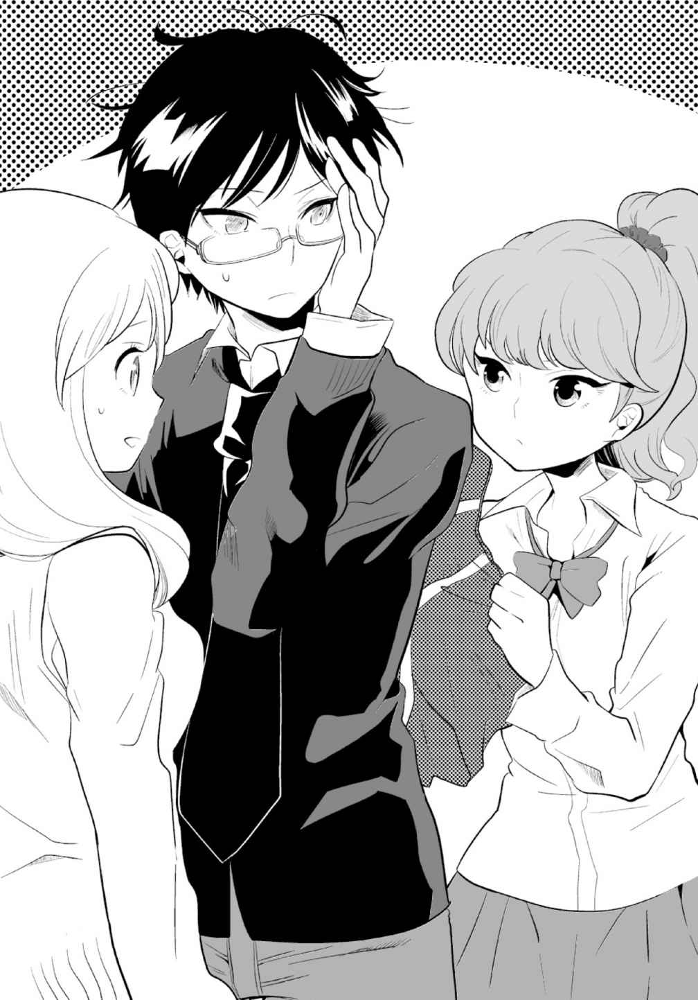
「うむむ、部長がこんなにガンコだったとは......」
「こ、こちらこそ、ごめんなさい！」佳夕はたまらず頭を下げた。
「......佳夕......」
「私が変なことに首を突っ込んじゃったばっかりに......。部長の言う通りです。こういうことは、プロの霊 媒 師 に頼むとか、そうすべきでした......」
牧村は顔を上げ、佳夕を見た。やがて何かを話そうと唇を開いたが、結局、佳夕に背を向けて、部室を出て行った。
「あっ、部長、待ってよ！」リリは佳夕をちらっと見て「佳夕、ごめんね！」と言って廊下を駆けていった。
もう関わらない方がいいのは、わかっている。
でも、焼け跡で見つかった写真と、送られてきたメールの画像。せっかく手がかりが見つかったのに......。このまま終わらせるわけには......。
それにもしも玲花が行方不明なら、この写真に謎を解くヒントが隠されているかも......。
授業中もあの写真をどう調べるかずっと方法を考えていた。
昼休みに図書室へ行き、写真や撮影関係の本を何冊か読んだ。しかし、なかなか良いアイデアは浮かばない。
放課後、佳夕は重い足取りで部室のドアを開けた。
「あ、佳夕っ」窓際に立つリリが気付いて、にこりとした。
彼女の傍らで、真剣なまなざしでパソコンに向き合う人物がいた。牧村だった。
えっ、どうして？ うれしさと戸惑いが同時に生まれ、佳夕はすぐに言葉が出なかった。
牧村はモニターを見ながら「なるほどね、この写真......」とつぶやいた。「......押し入れに写る物体......。正体がなんとかわかりそうだ......」
マウスを素早く操作し、パソコンのソフトを丹念にチェックしている。いつもの部長と変わらない。その様子を見守りながら、佳夕は隣のリリに小声で尋ねた。
「あんなにイヤがっていたのに、どうして急に......」
リリがにやっとした。「一ノ谷玲花って、膨大な心霊写真をコレクションしてるって噂でしょ。だから、この写真の謎を解いたら、彼女から分けてもらえるかもって」
「でも、彼女の家は焼けちゃったし......残された写真は警察が押収したって......」
「いいじゃん。何か残っているんじゃない？ それに部長も調べたかったんだよ、本当は。なんかきっかけっていうか、言い訳がほしかったと思う。ったく素直じゃないんだから」
さすがリリさん。部長をわかってる。でも彼が協力してくれるのは何より心強かった。
「よしっ、こいつでも試してみるか」
牧村は自らを鼓舞するように強くうなずき、タイトルをクリックする。モニターにまたも見知らぬ英字ソフトが立ち上がり、動画編集ソフトのようなメイン画面が現れる。
「この画像補整機能が優れものなんだ」
牧村は二つの写真を並べてはめ込んだ。「もともとは合成の精度を高める機能なんだけど。かなりのピンボケや、暗くなった画像も補整できる」
「へえ」リリと佳夕も画面に顔を近付けた。
「それで、この押し入れの、問題の部分を拡大する。最初はメールの画像。次にスキャンした焼けた写真。メールの画像の方が、スキャンした画像よりデジタルの画素情報が多いので、そっちをベースにする。わかりやすく言えば、一つのデータをサンプリングして解体し、もう一つの似たデータと照合して、貼 り合わせながら補正していくんだ」
「もう、全然わかりやすくないじゃん」
「つまり......二つの画像をミックスして、もっとはっきりした一つの画像を作るんだ。うまくいけば、この闇 に紛れた、物体の正体がはっきりわかる」
「そんなことが......」私はなんとなく〝小さな人〟と思っただけだけど......。
「ある程度、似た構図の背景や人物なら簡単だが......これはやってみるしかないな」
牧村は画面右下のＳＴＡＲＴキーをクリックした。数秒の間の後、パソコンのモニターの右下に小さく英字が表示された。牧村がどこか興奮を抑えるように含み笑いをしながら、画像フォルダを開いた。新たなフォルダが出来ていた。
「よしっ......この中に......」牧村がクリックすると、モニターに一枚の画像が現れた。
「あっ......」佳夕が声を漏らした。
闇の中に、赤い着物を着た、髪の長い人が現れた。想像以上にはっきりとしている。
「......人......？ でも、なんか違和感が......」
「ね、これって人形じゃない？」
「ああ、着物を着ているし......和人形っぽいな」
「和人形......。でも、この顔......」
その目玉はくり抜かれたように黒く、顔の皮膚はまだら模様に変色している。
「......ちょっとキモっ......」リリが顔をしかめた。
「腐っている......というか、焼けただれているな」牧村が画面を見つめてつぶやいた。
「ね、佳夕は、この人形、知ってるの？」
佳夕はゆっくりと首を横に振った。「特には......」
なんだろう。画像から強い気配を感じる。見ているだけで体が火照り、気持ちが高ぶる。
佳夕は警戒しながら、なるべく和人形の画像と目を合わせないようにした。
「でもさ、これ、ただの人形だったら心霊写真と違うんじゃない？ たまたま押し入れにあった人形が見えただけなんじゃ。この焼けた顔も、子供のいたずらなら、よくありそう」
「子供のいたずらですか......」
「ほら、子供って人形の髪の毛切ったり、首抜いちゃったりとか、するっしょ」
玲花が人形にいたずら？ ちょっと想像しにくい......。それに私はあの焼け跡で、たしかに視線を感じた。視線の正体。それはこの画像から感じる強い気配と関係があるはず。
でも、これ、本当にただの人形なの？ ......強い気配......それが視線の正体......？
......視線......。
「あっ......」佳夕が思わず声を漏らした。「ここ......」画面に向かって、指を指す。
人形の左横上の闇に、牧村がカーソルを当て、クリックした。拡大された画像が現れた。
「佳夕、真っ黒だよ」
ただの闇............でも......。
「いる......」佳夕はそうつぶやき、画面に顔を近付けた。
あの強い視線の正体が、この闇の奥に......。
部長も目を細めた。「ん？ ......何か影のようものが......」
「ねえ、もっとはっきりできないの？」
「うーん、露出を調整すれば......」牧村は再びマウスを操作する。「コントラストをマックスまで上げて明るくして......」
すると闇に、うっすらと白い影が浮かび上がった。
佳夕もうなずいた。「......やっぱり何かが......隠れている......」これが視線の正体？
牧村は画像に様々な処理を施したが、ほとんど変化は見られなかった。
「これ以上は無理か......。かなり限界までやったからな......」
それでも牧村は納得がいかない顔で見つめた。
「あとは......ベースになりそうなものをはめ込むしか......」
「ベース？」
「もっと補正用に貼り付ける素材があれば」
「じゃあ、さっきの焼けた人形の顔で試してみればいいじゃん」
「あくまで補正だからな。基本、同じか、似た素材でないと鮮明にならない。まだこの白い影の正体がはっきりしないし、もし違うものを使ったらぐちゃぐちゃになるだけだ」
「へえ、難しいんだ」
佳夕は画面の白い影を見つめた。
「ね......これって......やっぱり人形......じゃないですか？」
部長とリリが一斉にモニター画面を見た。
「なんとなく......だけど......」
「人形なら......いけるかもな......。とりあえず補正をかけてみよう」
牧村がメイン画面に二つのアップ画像を並べた。一つは闇に浮かんだ白い影の写真。もう一つは補正を終えたばかりの焼けただれた人形のアップ。部長が補正開始のボタンをクリックする。再びフォルダにファイルが現れ、画像が表示された。佳夕は唇を震わせた。
ややぶれて不鮮明ながら、似たような和人形の顔が闇に浮かび上がった。
「また......」
「思ったより鮮明だ。おそらくベースの部分が同じだったとしか考えられない」
「でも目の大きさや、口の開き具合が微妙に違う気が......。それに顔の焼けた部分も......」
佳夕は人形の画像を見て、息をのんだ。
......そんな......また別の気配が......。
この新しい人形の......頭の上......闇の奥に......まだ気配が感じられる......。
しかも一つじゃない......。二つ......三つ......それ以上の、おびただしい数の気配が！
この闇の先に何があるの......？ 画像をさらにズームで拡大して補正すれば何かがわかるかも......。佳夕は牧村にそう言おうとしたが、言葉を喉 で押し止めた。
これ以上、この画像にのめり込むことに、いい知れぬ不安を覚えた。
この先を覗いたら......たぶん触れてはいけない世界......そんな気がした。
部長とリリを巻き込んでいいの......。これまでのことが頭を巡り、佳夕はゆっくりと息を吐いた。
......ダメ......気になるけど危険すぎる......。
佳夕は、モニターを見る牧村の後頭部を見て、唇を開いた。
「......すいません、部長。ひとまずここまでに......」
しかし牧村は返事をしない。
「部長......？」
牧村はぴくりとも動かない。佳夕はその肩に触れようとした。
あっ......。そのとき初めて、自分の体が自由を奪われていることに気付いた。
硬直した肩にずんと重みを感じた。しびれがじわりと広がり、金縛りのように体が麻 痺 していく。瞬間、後頭部を殴られたような衝撃を受け、目の前が暗転した。
四方からうめき声が響き、佳夕はびくっとしてまぶたを上げた。
ここは......。
辺りは漆黒の闇に包まれていた。
......さっきまで部室にいたはず......。まさか......写真を見つめて......入り込んでしまった......？ だとしたら、あの写真の闇......？ ......玲花の部屋の......押し入れの中......？
見回しても出口らしき光は見えない。深い闇に自分が完全にとけ込んでいる。ただ、どこからともなく、異様にひんやりとした空気が漂い、頰に当たる。
体は......。金縛りは解けた......？ 佳夕は手足を動かしてみた。
ずっ......。上履きが地面を擦 る音がした。
私......立っている......。でも今の音......。何か砂利を擦 るったような音だった。
ここって......本当に押し入れの中......？ 恐る恐る腰をかがめて地面に触れた。小石や砂の粒の感触が指から伝わる。......土？ 湿った重い空気といい、室内とはとても思えない。
佳夕は足下を見た。徐々に闇に目が慣れたのか、砂利の地面がうっすらと確認できる。前へ進もうとしたとき、地面に白っぽい物体が浮かび上がった。目を凝らし、緊張した。
顔が......。よく見ると、それは和人形だった。白くほんのりと発光した人形が地面に置かれている。髪の長い人形は赤い着物を着ていた。あの写真と同じ。でも、これは、きれいな白い顔をしている。写真の人形はどうしてあんな顔に......。佳夕ははっとした。
火事......焼け跡......。焼けた家と、玲花が子供の頃の人形に何か関係が......。
佳夕が地面の人形を見ていると、どこからか声が響いた。
声が......近い......。人形の先に目を向けると、ふいに白い影がいくつも浮かんだ。十......二十......いやもっと......。数え切れないほどの人形が並び、地面を埋め尽くす。
うめき声はそこから聞こえた。......人形がうめている？ 佳夕は驚き、耳を澄ませた。
いくつもの声......。人形の数だけ聞こえる......？ その声の一つにぴくりと反応した。
うそ......。否定したくても、体の震えが止まらない。
「玲花............」
どうして......玲花の声が......。耳に神経を集中させる。
突然、異臭が鼻をついた。視線を落とす。人形たちから白い煙が立ち昇る。いぶすような音と共に、人形の着物から次々と炎が上り、辺りに広がる。一気に周囲が明るくなった。
えっ!? 目の前の光景に、佳夕は啞 然 とした。幅数メートルの地面を囲むように、朽ち果てた煉 瓦 の壁が積まれている。炎上する人形の煙は、アーチ型の天井にまで届いている。
ここは......どこ......!?
足下で生き物のようにうねり広がる炎は、和人形の着物や髪、顔を焼き尽くした。美しい白い顔がみるみるただれていった。空間に煙が満ち始め、佳夕は手で口を押さえた。わずかな煙を鼻から吸い込むだけでむせて、喉が焼けるように熱い。
「あああああああぁぁぁぁぁ」
突然、無数のうめき声をかき消すように、生々しい絶叫がこだました。
人形で埋め尽くされた地面の向こうで二つの影がうごめいた。
「おおおおおおおおおぉぉぉ！」
「うああああああああぁぁぁ！」
この声......！
「部長！ リリさん！」
そんな......二人が......！ このままじゃ......みんな煙に巻かれて......！
足下を見る。人形たちの焼けた残 骸 が、かすかな炎を残して、今は大量の煙を立ち上らせている。火の勢いは、前よりも弱い......。
佳夕は口を押さえて、焼けた人形の上に踏み込んだ。そして牧村の声に引き寄せられるように、最後は足元を見ず、一気に駆け出した。
煙の中に声の主が現れた。牧村とリリが両手で顔を押さえて、うめいている。
「部長！」佳夕は部長の右手をつかみ、顔から引き離した。顔面は焼けただれていなかった。しかし両目は白目をむき、苦 悶 の表情を浮かべ、おびえるようにうめき続ける。
「リリさんも！」
彼女の手を顔から離すとやはり何ともなかった。背後からの煙がまた勢いを増した。
とにかく逃げないと......。前方の煙に包まれた闇を見つめた。頰をまた風がかすめる。
風はずっと同じ方向に......。たぶん、この先に出口が......。......一か八か......。
「行くしかない！」
佳夕は二人の手をつかみ、引っ張りながら前に向かって進み出した。次の瞬間、これまでにない突風が背中を襲った。体が吹き飛ばされそうな衝撃に思わず目を閉じた。
風がやみ、静寂に包まれ、佳夕はまぶたを上げた。周囲のまぶしさに、目が慣れるまで時間がかかった。
牧村の右肩をつかんだままだった。彼は目の前のパソコンに突っ伏すようにうなだれている。佳夕は放心状態で足下を見た。リリが床に倒れている。
やがて牧村の肩がぶるっと震えて、ゆっくりと上半身を起こした。
「部長......」傍らで佳夕が尋ねる。
牧村は無言のまま、ふうっ......と深くため息をついた。二人の足下でも、つらそうな声が漏れた。リリが額を押さえている。
リリは何も答えず、ふらふらと立ち上がった。うつむいたまま、佳夕や牧村に顔を向けることなくドアを開け、廊下へ出た。佳夕は後を追いかけようとしたが、見えない疲労がじわじわと押し寄せて、思うように体が動かない。
重い足取りで、なんとかドアを開ける。廊下にリリの姿はなかった。
「リリ？」背中で、心配そうな部長の声がした。
佳夕は耳を澄ませた。そして階段の脇にあるトイレに近付いた。
かすかなうめき声が女子トイレから聞こえた。佳夕が中を覗くと、一番奥の個室から、苦悶に満ちた声が漂う。水を流す音がして個室のドアが開いた。窓から差し込む、傾斜した逆光に照らされたままでも、その顔がひどくやつれ、青ざめている。
リリは今にも崩れそうなほどの千鳥足でトイレを出て、佳夕と牧村の前で立ち止まった。
「......リリ、大丈夫か？」
「リリさん......ごめん......私......」
こんなことになったのは私のせいだ。私がみんなを巻き込んだから......。
「......すごい......」うつむいたままリリが、ぼそっとつぶやいた。
「えっ？」
「......これが佳夕の言ってた......写真の中に入り込むってこと......？ ホントだったのね......ちょっと半信半疑だったけど」リリは顔を上げ、力なく微笑んだ。
「ああ。なんか言葉でうまく表現できないが」牧村も疲れたようにため息を漏らす。
「......部長も気分悪いんですか......？」
「いや、ちょっと頭痛がする程度だ......たいしたことない」
「良かった......」
「あのとき......佳夕が助けてくれなかったら......あたし......今もあの暗い中を......」
「確かにな。僕らは、ひどく混乱しながら、煙にまみれた暗闇の空間をさまよっていた......。顔が焼けるように熱くて......自由が利かなかった......」
「たぶん最初は......玲花の家の......襖の中だったと思います......。それがどんどん奥に行くにつれ......」
「別の空間につながっていた......」
佳夕はうなずいた。「......燃える人形......煉瓦造りの壁......あそこはいったい......」
「でも......あたし......どこかで見たような......」
「本当ですか？ リリさん」
「僕も同じことを考えていた。壁が煉瓦作りで、ひんやりとして、風が吹いていた......たぶん、あれは......トンネル......」
言われてみれば、あのひんやりとした風の感じは......。
「しかも、相当の年代物だ......おそらく廃トンネル」
「あっ......たぶん......心霊スポットじゃない......？」
なんだか今日のリリさんは冴 えてる......。
「そうかもしれないな」
「じゃあ、早速調べてみようよ」リリは歩き出そうとしたが、すぐに前のめりになった。佳夕は崩れかかった彼女の体を抱きとめた。うなだれたリリはうつろに苦笑した。
「......こりゃ、すごいダメージだわ......」
佳夕は、リリの体が異様に冷たくなっていることに気付いた。
「佳夕は平気なの？」
「ええまあ」本当は自分もひどく疲れていたけれど、そんなことを言っていられなかった。
佳夕は牧村と共にリリに肩を貸し、トイレと部室を結ぶ、わずかな距離の廊下を歩いた。
部室に着くや、リリはなだれ込むように椅 子 に腰を沈めた。
牧村がパソコンに目を向けると、「あれ......」とつぶやいた。
佳夕は、不思議そうにマウスを動かす牧村に近付いた。
「......どうしたんですか？」
「パソコンが......」牧村が本体のスイッチを何度も押すが、モニターは真っ暗なまま何の反応もなかった。「おかしいなあ......ウィルスってわけじゃないだろう」
佳夕もコンセントや接続を確認したが、特におかしな点は見つからなかった。
考えられるのは......さっきの写真が......影響した......？ それを口に出せば、部長はますます興味を示すだろう。いや、部長自身もうすうす気付いているはず。でも、今のみんなの状態では不安ばかりが先行する。特にリリさんは椅子に座ったまま、気分が悪そうだ。
「部長、今日はもう帰った方が......」どのみちパソコンが使えないんじゃ......。
牧村は黒いモニターに映る自分の顔を見つめ、肩を落とした。
「そうだな......」
３
しばらくリリを部室で休ませた後、三人は学校を後にした。
帰宅した佳夕は部屋でも、あの生々しい体験が何度も頭をかすめ、落ち着かなかった。
部長やリリさんが、あの場所をトンネルだと気付いたのは心強いけど......。
でも、場所を特定したら、絶対に二人は「行ってみたい」と言うだろうし......。
「......どうしよう......」ため息と共に思わずつぶやいた。
気を取り直し、今日の疲れを洗い流すため、佳夕はシャワーを浴びた。スウェットに着替えると、部屋の机に置いた携帯に目を向けた。
メールの着信。また......？ アドレスは差出人不明......ではなかった。リリさんから......。
佳夕はメールを開いた。文面はなかった。ただ一枚写真が添付されていた。
開くと、それはトンネルの写真だった。薄暗い空間。壁は煉瓦に囲まれ、地面は鋪装されていない。
......あの場所に似てる......。
でも、なんで写真だけ。そのとき、携帯のバイブが震動した。牧村からだった。
「さっき......リリからメールが来たのだけど」牧村の声に少し動揺が感じられた。
「ええ......私にも来ました。文章もないし、ただ画像だけの......」
「トンネルの？」
「そうです。じゃあ、部長にも......」
「ああ。ちょっと心配になって、彼女の家に電話してみたんだ。携帯にも出ないから......。そしたら......今日はまだ帰宅してないって......」
佳夕は壁の時計を見た。すでに九時を回っている。別に高校生が帰宅していなくても不自然じゃないけど......。今日の彼女の状態を考えると、言い知れぬ不安を覚えた。
「......部長」
「......この画像のトンネル、やっぱり見覚えがあった......。心霊スポットで有名な青 梅 の廃トンネル。通称〈夜泣きトンネル〉。ネットで見たことがあった」
「夜泣きトンネル......」
「まさかと思うが......リリは、そのトンネルに行ったんじゃないか......」
「そんな......じゃあ、この画像は......リリさんがその場所で撮って、送ってきた......？」
佳夕は緊張しながら、ベランダの窓の外に広がる闇を見つめた。
第八章 マスク殺人鬼の正体
佳夕はマンションを出て、中央線の国 分 寺 駅で部長と待ち合わせた。
今もリリとは連絡が取れない。携帯に送られてきた画像を見つめ、気持ちを引き締めた。
「──〈夜泣きトンネル〉とは、東京都青梅市のはずれにある峠を貫く旧大 峰 トンネルのことを指している」
酔っ払いのサラリーマンで混み合う車内で、牧村はブックマークした携帯サイトの資料写真を佳夕に見せた。
「明治時代に作られ、昔から神隠しなどの怖い噂 が絶えない。近くに新トンネルが開通し、通行止めになっているが、今も中から子供の泣き声が聞こえるという。十数年前には、連続幼女誘拐殺人事件の犯人が、トンネルの上の雑木林に死体を埋め、その霊がすすり泣く声と共に姿を見せるという噂で全国的に有名になった。犯人の供述によると、生き埋めにしたのは別のトンネルの上で、大峰トンネルはただの都市伝説らしいが......」
最近では、近くの別の廃トンネルから、六人の男女の殺害遺体が発見され、それがマスク殺人鬼による犯行と目されたことで再びこの地域が脚光を浴びた。
そう、マスク殺人鬼はいまだ捕まっていない。もしも刑事たちが言う通り、その正体が一ノ谷未沙だったとしたら......。
彼女の自宅で発見された写真から、私たちは曰 くつきの廃トンネルの闇 を体感した。
一ノ谷未沙と玲花......火事......マスクの顔......それらにはなんらかの接点があった？
自分や部長のように写真の世界に取り込まれたリリが、導かれるように因縁のあるトンネルに向かってもおかしくなかった。もし、そうならリリが危ない。明日まで待てなかった。
立川駅で乗り換え、青梅駅の三つ隣にある大峰駅に降り立つと、ホームの時計の針は午後十時を半ば回っていた。佳夕が時刻表を確認した。
「上りの最終電車は......十一時四十六分......。あと一時間ちょっと......」
テレビの旅番組で紹介されるような無人駅にも似た、古びた小さな木造の駅舎。帰宅するサラリーマンもまばらで、駅員は一人しかいない。改札近くの壁には、〈大峰学園・中等部・高等部〉という地元の私立学校の看板があるだけだ。どうやら生徒が通学に使うのが主な目的の駅らしい。
時間が時間だけに、改札を出ても、制服姿の生徒を見かけることはなかった。
駅前の小さなロータリーにはタクシーが一台停まっているだけで、そこにサラリーマンが乗り込むと、辺りに人影はなくなった。佳夕は気持ちを落ち着かせるために深呼吸した。
「山の空気......」ひんやりとして、澄んだ空気が体に染み渡る。
ロータリーの先に見える街道を時折、車が通りすぎる。その先はもう山しかない。
自販機の横の、錆 びた案内板の地図に二人は近付いた。地図を見ると、街道を左に曲がって、すぐに学校がある。右側にはもう山しかなく、地図の大半は緑色に覆われていた。
「大峰トンネルは......ロータリーの先の街道を右に......」佳夕が指差した。「この地図、古くて新しいトンネルが載ってないみたいですけど......」
案内板の地図上では、旧大峰トンネルは立派な現役だった。山を貫き、出口はずっと先にある。この中にリリさんが......？
牧村が腕時計を見た。「とにかく終電も近いから急ごう」
佳夕はうなずき、二人は街道を早足で歩いた。歩道がなく、歩行者が移動可能なのが車道の白線の脇のわずかなスペースだけに、走りたくても走れない。時折、車やトラックが近付き、ヘッドライトを背中に浴びる。すれ違い様に横風を受けると、バランスを崩しそうになってヒヤリとする。殺人鬼に遭わなくとも、道に倒れるだけで、あっけなく命を落としそうだった。
駅から離れるほどに街灯もまばらになり、いよいよ心細くなる。
なかなかトンネルは見えなかった。もしも道を間違えていたら......。一抹の不安が過 ぎる中、急に前の道が明るく照らされた。車のライトではなかった。ゆるやかなカーブを曲がると、真新しいトンネルが現れた。白い外壁に、温かなオレンジのナトリウムランプがいくつも灯 され、奥まで見渡せる。おどろおどろしい心霊スポットの雰囲気はそこになかった。
「......ここですか？」
「これは新大峰トンネル。旧トンネルは......」
牧村は、トンネルを囲む、深い木々に覆われた山肌を見上げた後、きらびやかな新トンネルに近付いた。そこで佳夕は初めて気付いた。トンネルの脇に、車が一台通れる程度の横道があった。街灯もなく、先は真っ暗だ。
牧村は背負ったリュックから懐中電灯を取り出し、闇に向かってかざした。
「この先だ......おそらく」
二人が並ぶだけでもいっぱいな、暗い小道。地面も舗装されていない。
こんな道の先に本当にトンネルがあるの......？
ふいに牧村が「おっ......」と声を漏らした。ライトを向けた先に、行き止まりがぼんやりと現れた。アーチ型にくり抜かれ、古い煉 瓦 で固められたそれは、送られてきた画像にも似た、不気味な存在感を醸し出していた。佳夕はディパックから携帯を取り出し、メールの画像を確認した。雰囲気はよく似てる......。たぶんここだ......。二人はトンネルに近付いた。
入口には金網の柵 がびっしりと張られ、手前に一メートルほどの大きさの〈立ち入り禁止〉の看板が置かれている。看板には赤いスプレーで大きく×印が記されていた。
佳夕が看板の横から金網の奥を覗 くと、中に明かりはなく、数メートル先は、足下すら見えないほどの漆黒の闇が広がっていた。
トンネルの右脇に歩み寄る。牧村が金網の端をつかんで引っ張ると、手前に大きくしなるように曲がり、人が一人入ることが出来るスペースができた。
「ここが......夜泣きトンネル......」
「入ろう......」牧村が足を踏み込んだ。続いて、佳夕も中に入った。
「リリさん！ いるの？」闇に向かって叫んだその声は、カラオケのマイクのようにエコーがかかって周囲に反響した。耳を澄ませたが、反応はなかった。
佳夕は地面の砂利を踏みしめた。
この感触......写真の中に入ったときと同じ......。やっぱり、ここが......。
......でも、どうして、押し入れとこのトンネルが......つながっていたの......？
改めて疑問が沸き立った。このトンネルにいったい何があるの......。
牧村が先を進む。佳夕は彼から離れないように少し足早になった。
振り返ると、背後の入口がずいぶん遠くに感じられた。進むほどに空気が冷え、重くなっていく。牧村が歩きながら懐中電灯をかざす。光はすぐに闇にのみ込まれ、奥の様子ははっきりしない。佳夕は歩きながら携帯の画像を見た。小さな煉瓦のような石が積まれてできた壁は、今歩いている壁と微妙に違っているようにも思えた。
この画像の場所は......もっと奥なの......？ 佳夕は歩きながら、光が向けられた闇をじっと見つめた。
リリさん......。すると、懐中電灯の光が何かに反射した。えっ、なに......？
再び金網の柵が張られ、その上から、数枚の大きな木の板が覆うように横に打ち付けられていた。そして同じように〈立ち入り禁止〉の看板も置かれていた。
「また......」同じように右脇の板がはがされ、金網が破られていた。
「リリさん！ いたら返事して！」
再び佳夕が金網の隙 間 から顔を覗かせ、叫んだ。息がうっすらと白く漂う。空気がますます重く感じられる。佳夕は金網に触れた。妙な湿り気を帯びている。
牧村が金網の隙間に体を入れた。
「うわっ！」粘りのある不快な音がして、牧村が悲鳴を上げた。
「ど、どうしたんですか？」
牧村が懐中電灯で足下を照らした。柵の向こうに、泥にまみれ、ぬかるんだ地面が広がっていた。いくつかの場所には水たまりも見える。部長が顔をしかめて、泥まみれの右足の靴を見た。四方で水のしたたる音が聞こえた。
「部長......この先って本当に危ないのかも......」
佳夕が看板を見てつぶやいた。
「しかたない......僕だけちょっと見てくる」
「部長......」
「それでいなかったら......帰ろう......」
牧村は緊張しながら柵に近付いた。
「......だったら私だって付き合います」
ここで一人で待っているよりは部長といた方が安心する。
牧村は優しく微笑んだ。佳夕も部長に続いて柵の中に踏み込んだ。
数センチ、靴底がゆっくりと沈む。うわっ......。防水加工していないスニーカーだけに、冷たい感触が足にしみてくる。もう後には引けない。恐る恐る奥へと進んだ。
「リリ！ いるのか！」
「リリさん、いたら返事して！」
二つの声が幾 重 にもトンネルに反響し、こだました。しかし返事はなく、周囲からしたたる水の音だけが空しく耳をついた。
ひょっとして......もういないんじゃ......。薄々そう思い始めていた。
一方で、それを否定しようとする自分がいる。なぜだろう、すごく悪い予感が......。
牧村は背後の佳夕を気にすることもなく、前へと進んでいく。佳夕ははぐれないように早足で進んだ。
突然、佳夕の手に持つ携帯がぶるぶると震えた。びくっとして携帯を泥の中に落としそうになった。その画面に表示された名前に、佳夕はあっとなった。
「リリ......さん......」
「ええっ？」牧村が驚いて近付いた。
佳夕は恐る恐る電話に出た。
「もしもし......」
『......あっ......佳夕？』
「リリさん？ 今どこにいるの？」
『えっ......家......』
「家!? 」
『夕方に帰ってから......ずっと部屋で寝てて......。なんか......部長から電話があったらしいけど......うちの母親が勘違いして......「まだ帰ってません」って......』
「そんな......」佳夕は呆 気 にとられながら牧村に電話を代わった。
どっと疲労が体に押し寄せる。はあ、馬 鹿 みたい......。スニーカーは泥水を吸収し尽くしていた。冷たさと泥の重さで、足の感覚が麻 痺 して地面に張りついているみたいだ。
佳夕はトンネルの天井部分を見上げて、深くため息をついた。
あれ......。ふと一つの疑問がわいた。
「......じゃあ、あの画像は誰が送ったの？」
そのつぶやきに牧村も振り向いた。
「......ん？ ......リリ、おい......？」牧村は慌てて携帯のディスプレイを見た。「......圏外だ......」小首をかしげながら、佳夕に携帯を返した。
こんなトンネルの奥まで電波が届いていること自体、ラッキーだったのかも......。
「えっ......」
牧村が息をのむように声を漏らした。
「どうしたんですか？」
「今......声が......」牧村は歩いてきた方向を指差した。
金網の向こう。もはやどれだけ歩いてきたのか思い出せない。
かすかな風が佳夕の頰 をかすめた。
生温かい......それでいて、どこか湿り気のある......。
瞬間、佳夕の耳にもそれがこだました。動揺を抑えながら、恐る恐る耳を澄ませる。
風の音に混じって、数秒の間隔でまた聞こえた。
小さな声......。うめいている......。......震えるような......。
感情のまま、喉の奥から漏れ響くような声......。佳夕ははっとした。
......泣いている......。
これが......夜泣きトンネル......。
佳夕は、歩いてきた道を金網の柵越しに見つめた。牧村が緊張した面持ちで懐中電灯を向けた。煉瓦組みの壁と天井が続き、光の届かない闇に包まれる。
今の......やっぱり幽霊の......？ ......本当に......そうなの？
「......風......」
「えっ？」部長は、佳夕のつぶやきに顔を向けた。
「変な声が......聞こえるたびに風が吹いていた......」
「そういえば......。トンネルから聞こえる変な声は、遠くにいる人の声が反響して間近に聞こえたとか、風の音がそう聞こえることがあると......」
「幽霊じゃない......」
「断定はできない。しかし、さっきまで不気味な声は聞こえなかったし、この場所に来たら急に......と言うのも不自然だ」
佳夕は、足首まで浸かった泥の地面を見つめた。
幽霊なんかじゃない......。たぶん風やこの場所と何か関係がある？
風が頰に当たった。また、声がする。佳夕は表情を強ばらせた。
生々しい声が背中から......。
「......さっきより......近いな......」
「......声が......近付いている......？ そんな......」
いまの声......さっきと微妙に違う気がした。佳夕は周囲を見た。
一つ......だけじゃない......？
部長が懐中電灯の光を壁に当てた。煉瓦の壁のいくつかの隙間から水が漏れ、したたる。シミが煉瓦を浸食し、光の影と相まって、どこか人の苦しみもだえる顔のように見えた。
「......戻った方が......いいかもな......」牧村が辺りを警戒しながら言った。
そう、リリさんだって、ここにいないんだし......。
でも、じゃあ、あの画像を送ってきたのは誰？ なんのために......？
もしも画像が、一連の事件の謎を解くキーワードだったら......。あの花火の画像のように、自分が失っていた記憶を呼び覚ますきっかけだとしたら......。
画像を送った人物が、このトンネルのどこかにいる......。そう思えて仕方なかった。
佳夕はぬかるみを一人、奥に向かって歩き始めた。
「おい、二宮さん......」
「ごめんなさい、あと少しだけ......」
自分の行動に自分が一番驚いていた。帰りたかったんじゃないの？
でも、この奥に何かがあるとしたら......。......何が私を呼んでるの......？
ぬかるみをかき分けるように進む佳夕に、背後から懐中電灯の光が向けられた。もう一人の足音が、佳夕に歩調を合わせた。
「二宮さんだけ、置いていけないしな。気になるんだろ」
「部長......」
「ま、終電といっても、どうせ始発だってすぐだろう。朝帰りになるけど、学校には間に合うし。ここまで来たら、さっきの声の正体を突き止めないと......」
「ありがとう......」佳夕も微笑み、うなずいた。
牧村が壁に光を当てながら進むと、足下の泥の抵抗が次第にやわらぎはじめた。さらに歩く。足音は砂利を踏む、乾いたものへと変わった。部長が立ち止まり、足下を照らした。
ぬかるみは完全に消え、再び乾いた地面が現れた。振り向くと、沼のように広がる泥水の地面は、まるで他者の侵入を拒絶するための自然のバリケードにも見えた。
牧村は懐中電灯で壁や天井をチェックし、再び奥に向かって歩き出そうとした。
「待って」佳夕が呼び止め、部長は振り返った。
佳夕は携帯の画像を見つめた。「......同じ......。ここが画像を撮った場所......」
牧村も画像を覗いた。
「壁の汚れた感じとか、手前に転がる廃材も......。これはなんだろう。さっきまでの壁や天井にはなかったような......」
そう言って佳夕はトンネル左側の壁や天井に取り付けられた、曲がった鉄柱を指した。
「おそらく......古いトンネルが崩れるのを防止するために補強したのでは？」
さっきまでは......補強の必要がなかった......。この奥って......やばいのかも......。
牧村が周囲を見て首を傾げた。
「それにしても......なぜこの場所を撮ったんだ？ 特に何かあるわけでもないのに......」
「殺人鬼......」佳夕がぼそっとつぶやいた。
「連続誘拐殺人鬼がこの場所に死体を埋めた？ でも、それは都市伝説だ」
佳夕は小さく首を横に振った。
「......もしかしたら......マスク殺人鬼が......画像を送ってきたんじゃ......」
「それって......ここにいるということか......？」
このトンネルに......マスク殺人鬼が......？ 佳夕は緊張しながら辺りを見た。
「まさか、私たちをおびき出すために......？」
マスク殺人鬼が送ったのなら、ここでも殺人が行われた......？
周囲を見たが、それらしき痕 跡 はなかった。
それとも別の秘密がどこかに隠されている......？
佳夕は画像と実景を見比べた。
「画像の方が......少し明るい......。それでいて左側の壁が、なんだか黒く感じる」左側の壁に目を向けた。「部長、懐中電灯を貸してもらえませんか」
懐中電灯を手に取ると、壁に近付き、光を当てた。
他と変わらない壁。なのに、写真では......。どうして......この壁がすごく気になる......。
よく見ると、ところどころ壁の煉瓦が黒ずんでいる。触れると、指先にすす が付着した。
炭？ 何かが焼けた？ じゃあ、あの焼けた写真や、私たちが体験した幻覚と関係が？
佳夕は壁の焼け跡に触れながらゆっくりと移動した。黒ずんだ部分が増えはじめたとき、ふと壁が途切れた。
「壁が......ここだけ......」
壁と壁の間に、一メートルほどの幅の、深い闇があった。そこに光を当てようとしたとき、中から生温かい風が吹き、頰に当たった。同時に、圧迫されるような耳鳴りと偏頭痛に見舞われて、佳夕は顔をしかめ、両耳をふさごうとした。
お い
息をのむ。今たしかに耳元で......。異様にしわがれた......まともな声じゃなかった。
「どうした？」牧村が歩み寄り、同じように壁と壁の間にできた闇に目をやった。
佳夕は何も答えられないまま、視線の先に懐中電灯を向けた。そこは、周囲より二メートルほど壁がくぼんでいる。
「なんだろう......？」
「これって待避口では？」牧村が指摘する。「たぶん作業員が工事中に使っていた......」
「......このトンネルの工事に使われていたのなら......相当昔じゃ......」
よく見ると、待避口の壁の右下が崩れて、大きな穴ができていた。
さっきの生温かい風は......ここから吹いていた......？ 佳夕は穴に近寄り、かがむと中を覗いた。懐中電灯で照らすものの、穴の奥は暗くてはっきりしない。光は反射せず、いっそう深みを増した闇に吸い込まれる。耳を近付けると、こもった空気のうねりが漂った。
「この中......」
佳夕は両手を地面につけ、大人の体が一人入れるかどうかの穴に顔を突っ込んだ。
「あ、二宮さん......」
部長が呼び止めるが、佳夕はそのまま頭から穴に入っていった。そして闇の中で息を吐き、四つん這 いになって進んだ。
穴はトンネルと同様、古びた煉瓦で固められているが、一部がはがれ落ち、岩がむき出しになっていた。奥行きは思ったよりも無く、すぐにもう一つの空間へとくぐり抜けた。
「......二宮さん、ちょっと待ってくれ......」
その声に振り返り、懐中電灯を向けると、穴から牧村の顔が現れた。佳夕はゆっくりと立ち上がった。
「今までと空気が違う......」
緊張しながら、辺りに光を当てた。歩いてきたトンネルのように煉瓦の壁ではなく、そこは、削り取られたむき出しの岩壁に囲まれていた。岩の隙間からは水がしたたり落ちる。水の流れる道があるのか、足下の地面はぬかるんでいなかった。地面にはサビだらけの針金の束や鉄骨といった廃材、汚れた作業着、泥で変色したタオル、軍手などがゴミと共に散乱している。奥にはツルハシ、ショベル、壊れた手押し車も確認できる。
「夜泣きトンネルは、昔あった炭坑をベースに作られたみたいだから、この空間も、その名残りでは......」
空気がトンネル以上に張り詰めてひんやりしている。佳夕は懐中電灯で、奥に続く闇を照らし、歩み出した。すると、数歩目で右足が、くちゃっ......と乾いたものを踏みしめた。
靴の裏を見ると、黒い紙切れがあった。手に取り、光を当てる。紙のほとんどが焼けて、黒ずんでいる。何が書かれているのかもわからない。また、焼けた紙......。
「うおっ」
佳夕の後ろで牧村が声を上げた。
「どうしたんですか？」
「今......変な顔のようなものが......」
「......顔？」佳夕は牧村が指差す方に目を向けた。
待避口につながる穴。その横の薄暗い場所に、数個の顔......いや、不気味なシワだらけの、干からびた生首のようなものがぼんやりと浮かんでいる。
なにあれ......。目を凝らした佳夕は慄 然 とした。
そんな......似てる......。
干からびた生首らしき物体が数個、闇に浮かび、じっと佳夕たちを見つめていた。
......ミイラのような顔......。まさかマスク殺人鬼と関係が......。
佳夕は恐る恐る生首に懐中電灯を向けた。
闇と思われた背後にごつごつとした岩壁が現れた。その手前に、人の拳 や頭程の大きさの石、瓦 礫 が一メートル程の高さに積まれ、一番上に顔が並んでいた。
「これって......」光を当て、目を凝らす。生首と思われたのは、丸みを帯びた石だった。
表面には、無数のシワと共に、一つ一つに目や鼻、口が刻まれていた。石の顔はミイラの顔の面影を残しながらも、一つずつ特徴が微妙に異なっていた。荒々しく削られ、断末魔の叫びを上げているように見えるものから、顔半分が欠けたもの、表面にコケが生えて深緑に不気味に変色し、目や口の輪郭が強調されたもの、さらには壁の水が当たったのか、妙な湿り気で生々しい存在感を放つものまで並んでいる。
佳夕が石の顔の数を数えた。
「全部で七つ......」
「これは......地蔵なのか......？」
「......頭だけの......？」
佳夕が首をかしげたとき、背後で、がさっ......と何かが地面を動く音が響いた。二人は同時に振り向いた。
「なんだ......今の音は......」
「......まだ踏み込んでいない......あっちの奥から......聞こえたような......」
佳夕は眉 をひそめ、闇に光を当てた。たしかに......音がした......。
動物......？ ネズミ......？ ううん......もっと大きな......。息を潜めても、もう音はしない。
「何が......いるの......」佳夕は口の中にたまる唾 液 をごくりと飲み込んだ。
「もう戻った方がいいかもな......」
「そうですね......。......なんか、ここは入っちゃいけない場所のような気がします......。さっきのお地蔵さんだって......」
「ああ......」緊張しながら穴の方を見た牧村は思わず「えっ......」と声を漏らした。
「......どうしたんですか？」
「......石の顔が......一つ......足りない」
佳夕は懐中電灯を石の山に向けた。そして顔を数えた。
「......四......五......六.....................六個.........」
「......さっきは......七つあった......」
佳夕はもう一度顔を数えた。しかし、やはり六つしかない。
「......うそでしょ......。きっと......数え間違いですよね......絶対......。ね、部長？」
「......あ......ああ......」
牧村のうめくような声に、佳夕は違和感を覚え、振り向いた。
懐中電灯を向けた彼の顔は青ざめ、白目をむいていた。
「部長......！」
細い長身が一気に地面に崩れた。砂 埃 が舞う中、佳夕は、うつぶせに倒れた牧村に光を当てた。背中の、右肩から不自然な何かが伸びている。
ナ......ナイフ......!?
古びた柄の先に見える、サビた刃の一部が鈍く輝いた。牧村の右肩にナイフが刺さっていた。
「いやっ......」
佳夕は目の前の現実を拒絶するように首を振った。そして部長の体の向こうに立つ存在に気付いた。
あっ......。光に照らされ、砂埃の中にうっすらと顔が現れた。
また......石の......？ ......ううん......。佳夕は気付いた。あの七つ目の、妙に生々しい湿った顔は、石ではなく人面のマスクだったことに......。まるで顔の皮膚が焼けただれ、腐って変色したような、おぞましいマスクを顔に付け、その人影は闇に立っていた。
脳裏に焼き付いて忘れることが出来なかったあの顔......。
......間違いない......。幻覚の中......屋上で出会った......マスク殺人鬼......！
佳夕は倒れる牧村を見た。肩にナイフが刺さったまま、ぴくりとも動かない。
ああ......部長が......！ 愕 然 とする佳夕の周囲で、聞き慣れた機械音が反響した。
......シャッ......。
佳夕は耳を澄ませた。
カシャッ......。
シャッター音......。顔を上げて恐る恐る前を見た。
黒っぽいコートのようなものを身にまとい、頭にかぶったフードから、不気味なマスクの顔を覗かせる。伸びた両腕が一眼レフカメラを構え、シャッターボタンを押している。
カシャッ......。
まるで自分たちが見えていないように、周囲の闇にレンズを向けている。
どうしよう......。......もしも......マスク殺人鬼なら......次は私が......!?
カシャッ......。
佳夕は動揺を抑えながら、マスクの顔に懐中電灯を向け続けた。光を当てることをやめれば、そいつは砂埃と共に闇に紛れてしまう。その方が恐ろしかった。
幽霊でも幻でもない......目の前に殺人鬼がいる......。
カシャッ......。
佳夕はすべてを投げ出して、逃げ出したい衝動に駆られた。
今なら......撮影に気を取られている間に......。でも......部長を置き去りにするわけには......。ケガをして倒れた部長を運んで逃げるなんて無理だ......。
そのとき、ふいにシャッター音が途絶えた。はっとして、マスクの顔を見つめた。
天井にカメラを向けたままマスクの人物は動きを止めていた。そして、ぶるぶると痙 攣 しながら、ゆっくりとカメラを下ろした。砂埃がやみ、少しだけ視界が鮮明になった。
カメラをじっと見た。あのカメラ......。
マスクの人物はカメラを持った右腕をだらりと伸ばし、倒れる牧村の方に向いた。佳夕はその姿に光を当てた。
まさか......そんな......。
マスクの人物がゆっくりと牧村に近付いた。佳夕は右の拳をぎゅっと握りしめた。
「ダメ！」
そう叫ぶと、突然駆け出し、立ちはだかるように両手を広げた。
「ダメ......これ以上は......」
マスクの人物は、佳夕の前で足を止めた。佳夕は、マスクの奥にある目を見つめた。血走り、かっと見開かれた二つの目が彼女を捉えた。
「......お願い......」佳夕は震えながらも、マスクを睨 みつけた。
「......おぉぉ......」
マスクの下からうめき声が漏れ、その手からカメラが落ちた。
マスクの人物は自らの両手で顔面を覆いながら、上半身をのけぞらせた。うめき声が高まり、絶叫に変わると、そのまま仰向けに倒れた。
ぴくっぴくっと小さな痙攣を続けるマスクの人物に、佳夕は緊張しながら近付いた。そして顔に被さったマスクの右端をつまみ、ゆっくりと顔からはがした。
「......どうして.........」佳夕は声を震わせた。
見慣れたその顔は、マスクの汚れが付着して黒ずみ、苦しそうにうめいた。
全身を震わせ、リリが倒れている。作業着用の汚れて黒ずんだレインコートの下に制服が見え隠れした。リリは両目が白目になったまま、つぶやき続けている。
「もうぉ......おかあさぁん......なんで......おこしてくれなかったのぉ......ずっとぉ......」
やがてその声も、唇の震えと共にぷつっと途切れ、リリは意識を失った。
「そんな......リリさんが......マスク殺人鬼......？」
そんなことは信じたくなかった。リリの顔は徐々に生気を取り戻したように血色が良くなっていた。佳夕はその顔を近付けた。かすかに寝息を立てている。
でも......家で寝ていたはずのリリさんがどうして......ここに......？
そうだ......さっきの......つぶやき......。リリさんは家にいたつもりだった......。でも実際にはこのトンネルに来ていた......。そしてここで撮影して、私や部長に送ったんだ......。なぜそんなこと......。リリさんは夜泣きトンネルのことを知っていたけど......。
佳夕は床に落ちたカメラを見つめた。
部の備品......。これをリリさんが......？ たぶん......リリさんの意思じゃない......。......何かが彼女にメールを送らせたんだ......。......リリさんは......何かに操られていた......？
ふと手に持ったままのマスクに目をやる。
これが殺人鬼のマスク......。表面は一部が焼けただれ、干からびたミイラのようだ。
......人の皮......なの？ 内側を見ると、べっとり黒い粘液が付着している。
佳夕は顔をしかめ、思わず指を離した。マスクはかすかな音と共に地面に落ちた。
近くで声が漂った。うつぶせに倒れた牧村の背中が震えている。
「部長！」佳夕は慌てて駆け寄った。「......大丈夫ですか？」
首をかしげながら、牧村は両手をついて上半身を起こした。
「......肩に強い痛みが走ったと思ったら......急にめまいが......」
「よかった......」佳夕は目を潤ませて微笑んだが、すぐに表情が曇った。「でもその肩......」
「あぁ......まいったな......」
牧村は、刺さったナイフを見てそれほど驚くこともなく、少しだけ顔をしかめた。
「平気......なんですか......？」
「......思ったほど痛くはないが......。......たぶん、抜かない方が......いいかもな......」
そう言いながらナイフの柄に少し触れた後、ふらふらと立ち上がった。そして近くに倒れるリリにようやく気付いた。
「どうして......リリがここに？」
状況がつかめない牧村は佳夕を見た。どう説明していいのか言葉が見つからない。
でも......隠してもしょうがなかった......。佳夕はためらいながらも、牧村が気を失っていたときに起きたことを打ち明けた。
牧村は一度深呼吸をした後、無言になってしまった。佳夕も牧村も、倒れるリリを前にして立ち尽くすしかなかった。
重い空気に包まれる中、牧村が奥の闇に目を向けた。
「さっき......めまいがして、気を失う直前......あの奥で人の顔が見えた......」
「また......顔......？」佳夕は岩肌に光を向けた。「......あの石のような？」
「いや、もっと生々しい......ものすごくリアルな......顔だった......」
それって......。
すると牧村が闇に吸い寄せられるように歩み始めた。
「ちょ、ちょっと部長、今は早く病院に行った方が......」
佳夕が呼び止めるが、牧村は足を止めない。
「......せっかくここまで来て......」
その顔は青ざめ、額に脂汗がにじんでいる。佳夕は牧村に駆け寄り、その手をつかもうとしたが、ためらった。無理に触れば、かえって傷口に悪い影響を与えるかもしれない。仕方なく牧村の後に続いた。そのときまた、くしゃっ......と紙のようなものを踏む音がした。さっきよりも大きく感じられた。右足を上げる。
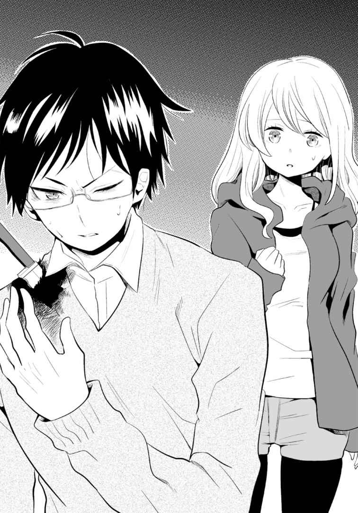
「あっ......」靴の下に、Ｂ４サイズぐらいの汚れた紙が落ちていた。その紙を手に取る。
牧村もその声に戻り、紙を見た。表面はシワだらけで、砂や泥が付着して黄ばんでいる。しかも左端が折れ曲がっていた。よく見ると、紙には縦書きの文字が数段に渡って並んでいる。折れ曲がった左上には大きな写真が載っているが、黒っぽく、はっきりしない。
「文字がびっしり......。これって......新聞？」
佳夕がつぶやく。たしかにレイアウトは、新聞のそれに似ていた。
「しかし......なんか少し安っぽくないか？」
「そういえば......そうですね」
佳夕は紙の汚れを手ではらった。右上の端にある、新聞風の縦書きの見出しがうっすらと読めた。目を凝らした佳夕は、その五文字を見て、唇を震わせた。
「......心霊......写真部......」
「えっ？」牧村が驚き、佳夕の顔と紙を交互に見た。
佳夕は見出しに光を近付けた。間違いなく〈心霊写真部〉と書かれている......。
さらに文字を目で追うと、見出しの下に、かすれた小さな文字が並んでいることに気付いた。それは人の名前だった。
......うそ......。佳夕は呆 然 としながら、印刷された名前を読み上げた。
「......部長......一ノ谷未沙......。......副部長......篠原圭人......」
「二人が心霊写真部の部長と副部長だと......？ どういうことなんだ？」
これは何......？ 会報？ 新聞？ 佳夕は部員として並ぶ名前の下の表記に目をとめた。
「発行......大峰学園......中等部......」
「それって......駅に看板があった学校じゃ......」
「地図にあった......トンネルの近くの......」
「二人は、大峰学園の中学生だった......」
「部長......他校にも心霊写真部ってあったんですか」
「いや......そんな話......聞いたことが......」
牧村が左側の大きな写真を指差した。「な......この写真......」
新聞なら一面の見出しか。写真の横にある縦書きの小見出しに目がいった。
〈衝撃！ 心霊写真の撮影に成功！〉
写真は左半分が折れ曲がり、印刷の状態が悪いのか、黒ずんではっきりしない。
牧村がもう一度写真の汚れをはらい、佳夕が光を当てた。
「これって......トンネル......？」
薄暗い廃トンネルの中の写真。地面が砂利で鋪装されていない。リリが送ってきた画像とよく似ていた。佳夕は携帯を取り出すと、写真をメールの画像と見比べた。
「......似てるな......」牧村がメガネの縁をいじった。
「きっと同じ場所で撮ったんだ......」佳夕も紙に印刷された写真を見た。
「それにしても......」牧村が写真に顔を近付けた。「見出しで〈衝撃！ 心霊写真の撮影に成功！〉と書いているのに、特に何も映っていないような......」
写真は左半分が折れ曲がっている。
まさか......。佳夕は、写真の左半分に触れて上に上げ、懐中電灯の光を当てた。
「！」写真の全 貌 を目の当たりにして、二人は思わず息をのんだ。
数百......？ 数千......？ おびただしい数の青白い顔が、地面から天井まで、トンネルの左側の壁を埋め尽くし、闇の奥まで広がっていた。
「これ......全部......顔......」
どの顔も苦 悶 に歪 み、叫び声を上げるように、おぞましくも悲痛な表情を浮かべている。
「......こんな写真......初めて見るな......」さすがの牧村も衝撃を隠しきれないようだ。
〈心霊写真部 会報〉と題された紙は、長くここに放置されていたせいか、紙面はシワだらけで汚れ、文面をすべて読み取ることはできなかった。それでも、紙面を書いた部員たちが、このトンネルで心霊写真を撮影し、その経緯を記録していることは理解できた。
記事は、さらにトンネルの奥を探険し、霊の正体を突き止め、新たな心霊写真の撮影に挑戦することが宣言されて締められている。会報がこの場所に落ちているということは......記事にある二度目の探険が行われた？ 彼らもこの場所を訪れていた......？
佳夕は奥に広がる深い闇を見つめた。
「......部長、さっき向こうで見たって、この写真のような感じですか？」
「そうかも......。いやでも、ちょっと違っていたような......もっと生々しかった気も......」
「生々しい？」
「ああ......」牧村は再び引き寄せられるように歩き出した。
後に続いた佳夕が懐中電灯を照らすと、彼の右肩に刺さったナイフが鈍く光った。
......大丈夫なの？ 本当は今すぐにも病院に連れて行ってあげたい......。でも、ここは部長の体力を信じて、彼が見たものの正体だけでも確認しておきたい......。
二人が奥へと進むにつれ、またどこからか水のちろちろと流れる音がした。それは時折、かすかな風と交じって静かに反響し合い、四方からうめくような声にも聞こえた。
牧村はためらうことなく闇の中へ入っていく。足下が暗く、佳夕は懐中電灯で部長と地面を交互に照らした。前方に光を向けたとき、右足が何かを蹴 った。
立ち止まり、光を当てると、ウィスキーのガラス瓶が転がっていた。辺りの地面を照らすと、アルコールの瓶や缶、タバコの吸い殻、焼けたマッチ棒、安物のプラスチック・ライターなどが、瓦礫、廃材に混じって散乱していた。
「......こんなところにまで肝試しに来るのか？」
牧村は怪 訝 そうな顔で、薄汚れたライターを拾い、火を点けてみた。
「でも、酒の瓶や吸い殻って......なんか駅とかコンビニのまわりで酒盛りしているおじさんみたいですね......」
「ひょっとしてホームレスかも。こういう廃墟には往々にして住所不定者が住みつくからね」
そういえば......独特のこもったかび臭 さや魚、肉の腐ったような臭 いも......。
「あとは......自殺志願者......」
「じゃあ、部長が見たのって......」......ある意味、幽霊よりやばいかも......。
再び歩き始めた牧村は、しばらくして「おっと......」とつぶやいて足を止めた。佳夕も立ち止まった。部長の前に、ぼんやりと岩の壁が立ちはだかった。佳夕が光を向けるよりも早く、牧村がライターの火を点けた。
佳夕は息をのんだ。ゆらゆらとした不安定な炎に照らされ、深い陰影を与えられた岩はどこか......いや、はっきりと人の顔に見えた。
「......なにこれ......」
佳夕は緊張しながら懐中電灯を向けた。ひしめき合う岩や石の表面がどれも人の顔のように見え、積み上げられて巨大な壁を作っていた。光に照らされた部分だけでも、すぐには数え切れないほど埋め尽くされている。
「人の顔が......これって......ただそう見えるだけの......自然のいたずら......？」
「いや......そんなレベルを超えている......僕には......岩や石を顔のように掘ったとしか思えない......」牧村は信じられないと言った表情でつぶやいた。
顔の表情は一つ一つが異なり、見開いた目玉や、歪 んだ口が強調されたものもある。
この顔って......。佳夕は、心霊写真部の会報に載った写真と見比べた。
「似てる......。じゃあ、部長が見たのは......」動揺を抑えながら顔を近付けた。
......男の顔......？ 女や子供っぽい顔も......。どれも今にも動き出しそうなほど生々しい存在感を放っていた。岩や石の隙間から、水の流れる音も聞こえるが、水そのものは確認できない。佳夕は懐中電灯の光を目線の高さから、ゆっくりと地面へと下げていった。
「部長......この石の顔たちって......やっぱり、ここで死んだ人の......？」
「もしも、地蔵のようなものだったら。これは、たたりを鎮 めるための供養では？」
「たたり......ですか？」
「ああ、神隠しなどの......。ここは夜泣きトンネルと言うぐらいだし......」
佳夕は足下近くに積まれた石に、懐中電灯の光を向けた。
「あれ......」脳の奥がうずいて、手の動きが止まった。
「......どうした？」牧村も佳夕の傍らに歩み寄った。
足下の近くに石がある。それは積まれた数多くの石の顔の一つにすぎなかった。
どうして......気になるの......？ 佳夕はゆっくりとかがみ、その石に懐中電灯を近寄せた。
その石の顔は、目を閉じ、苦 悶 の表情で、口を歪めているにもかかわらず、まわりにひしめく石の顔と、どこか雰囲気が違っていた。
......この顔......ああっ......！
後頭部がじわりと熱くなった。記憶の中に埋もれたイメージと、それが気持ち悪いほど一致した。
真実に気付いたとき、佳夕は胸の奥をえぐられるような痛みと共に、吐き気をもよおした。恐怖で身の毛がよだつ。頭が混乱し、うまく息ができない。それでもなんとか唇を開いた。
「............玲花............？」
「......なんだと......？」
げっそりと骨と皮だけになり、ミイラのように肌が干からびた顔は、それでも頭 蓋 の顎 のラインや鼻筋、閉じたまぶたに、一ノ谷玲花の面影をうっすらと残していた。
「そんな......どうして......玲花が......」
玲花の顔が右耳を下にして、石の顔たちに挟まるように横たわっていた。
......これは石......なの......？
佳夕は恐る恐る玲花の顔に手を伸ばした。その指先が、彼女の頰の部分に触れようとしたとき、突然、石の両まぶたがくわっ！ と開き、白目をむいた。
「ひっ！」佳夕はおののくように尻 餅 をついた。
玲花の頭は、石に挟まれたまま、ぶるぶると小刻みに揺らしながら、うめき声を響かせた。佳夕と、その横に立つ部長は愕然としながら、異様な光景を見守るしかなかった。
「二宮さん......これは違う......。石じゃない......。本物の......人の頭だ......」
部長の震える声に、佳夕は口を手で押さえ、小さくうなずいた。
「馬鹿な......生きている......のか......」
「......玲花......」佳夕は、うめき続ける生首をじっと見つめた。
もはや佳夕の頭の中を支配するのは、恐怖ではなく、答えの見つからない謎だった。
「......どうして......」
すると、高まったうめきの中に、自分の名前を呼ぶ声がはっきりと聞こえた。
「玲花！」
佳夕は慌てて生首に顔を近付けた。その白目が反応するようにびくっと動いた。
「聞こえるの......？ 玲花......」佳夕は生首にささやくように呼びかけた。
玲花の口元がかすかに緩んだ。
「......か...ゆ............ひさしぶり......」
異様にしわがれた声だが、はっきりと理解できた。
「......私がわかるの......？」
「......けはい......で......」
「......どうして......こんな......ことに......」
まるで微笑むかのように、生首の頰に小さくシワができた。
またいつか再会できると信じていたのに......。......それがこんな形で......。
「......ごめん......ね......」生首が力なくつぶやいた。
佳夕はうろたえ、声を震わせた。どう答えていいのかわからない。ただ涙があふれた。
「......か......佳夕......」
生首はうめきながらも、かつての玲花の声色を少しずつ蘇 らせた。
「......ほんとは......巻き込みたく......なかった......。でも......追いつめられたわたしには......あなたが......最後の救いだった......」
「救い......？」
「......母が......わたしに......望みを託したように......」
佳夕ははっとした。「あの花火の画像を送りつけたのも......？」
「......あれは......母が大切にしていた一枚......。そして......わたしにとっても......運命を決定付ける一枚だった......」
「......どういう意味？」
「......その紙......」
佳夕は手に持つ心霊写真部の会報に目をやった。
「......すべては......ここから始まった......」
「......この場所で......」
「そう......わたしは......母の......過去に触れた......」
お母さん......一ノ谷未沙と......。
「......母は......ずっとオカルトに興味があった......。転校したばかりの中学で......カメラにくわしい篠原圭人や......クラスメイトに呼びかけた......。他校で噂になっていた......〈心霊写真部〉を作るために......」
「......心霊写真部......」
「そう......学習雑誌のユニークな部活紹介コーナーで......取り上げられて......母はその名前が気に入った......。ただのオカルトサークルより......面白いかなと......思った。......部活の一環で......学校近くの......禁止された廃トンネルに行った.........。最初は肝試し感覚......。みんな......おもしろ半分だった......。......あの写真を撮るまでは......」
「会報の写真......」
「......トンネルで......偶然あの写真を撮った母は......ひどく興奮して......〈心霊写真部〉の新聞を作った......。でも誰も信じてくれなかった......。トリックだと笑われた......。だから......むきになって......噂で聞いた......トンネルとつながった洞 窟 へ行こうって......」
「洞窟......。この場所のこと......？」
「......トンネルの写真.........その壁の......向こう側......。......今以上に......怖い写真が撮れるって......。でも......あそこは地元でも......本当に危ないと言われた場所......。案の定......だれも怖がって参加しなかった......。......母は一人でも行くつもりだった......。......仕方なく篠原圭人だけが......ついてきてくれた......。......母は闇の中で......何枚かの写真を撮った......。......そのとき奥に人影が写った......。それは幽霊じゃなかった......。......人間......。......最初はホームレスと思った......。......ううんホームレスだったのかも......。......その顔には......不気味なミイラのような......マスクが付けられていた......」
ミイラのようなマスク......写真や、私が屋上で見たのと同じ......？
「......母は......この洞窟に来たことを後悔した......。......そいつの足下には...血まみれの死体が転がっていた......。......死体の首には......包丁が刺さっていた......。......そいつはなぜか使い捨てカメラを......闇の頭上に向けて...シャッターを押していた......」
ミイラ顔に......カメラ......。別の殺人鬼がいた......？
「そいつは......母たちに気付いた......。死体から包丁を抜き取り......襲いかかってきた......。母たちは必死に逃げた......。闇に慣れているのか......そいつはじわじわと追いつめ......切りつけてきた......。とっさに篠原圭人が......落ちていたライターの火を......男の服に点けた......。......服は燃え......あっという間に......そいつの全身が炎に包まれた......」
まさか......トンネルの黒いすす って......そのときの......。
「......なおも暴れて......のたうち回るから......。母も......地面にあったつるはしで腹を突き刺した......。......そいつは叫び声を上げながら......闇へと消えた......」
この場所で、そんな凄 惨 なことが......。佳夕は唾 を飲み込んだ。
「......ここでのことは......二人だけの秘密にするつもりだった......。母は......何度か悪夢にうなされることはあったけど......いつしかそれも見なくなった......。......そして忌まわしい過去と決別するため......母と篠原圭人は都立高校に進学した......。......事件の影におびえながら......互いに励まし合い......二人は交際を始めた......」
声の震えが少しだけ高まった。
「......三年生の秋......二人は関係を持った......。......二人はまだ気付かなかった......。それがきっかけだったことに......。そして......写真部に在籍していた母は......篠原圭人をモデルに......文化祭で展示するための......写真を撮った......」
あの部室で見つけた五枚の写真......。
「......篠原圭人をモデルに撮影することは......母にとって必然だった......。母は撮影中......これまでにないほど気持ちの高まりを感じ......夢中でシャッターを切った......」
カメラマンとモデルの息が合い、撮影のテンションが異様に上がっていく......。佳夕は自分が一ノ谷未沙に扮して、篠原圭人役の部長を撮影したときのことを思い出した。まして、それが異様な事件を通して強く惹 かれ合った、当時の二人だとしたら......。
「そして......」玲花の生首が一層おびえるように声を震わせた。「......二階の廊下で...四枚目を撮り終えたとき......。......二人は最も強く共鳴し......同時に......母の中に隠れていた存在が......目覚めた......。そいつは......ずっとチャンスをうかがっていた......。......焼かれた殺人鬼を操っていた......そいつは......母の体に移り棲 んでいた......。母と共鳴し......母の影に......異変を感じ取った篠原圭人は......本能的に屋上へ逃げた......。しかし......そいつに導かれた母によって......顔を切り裂かれ......屋上から突き落とされた......。......錯乱した母が校内で目撃され......やがて警察は......彼の死を自殺と処理した......。......母は写真を見て......自分が......そいつから逃げきれていないことに気付いた......」
やはり篠原圭人は一ノ谷未沙に殺された......。
「......母は......わたしを産んでからも......そのことをずっと隠してきた......。......そして......ひそかにマスク殺人鬼となって......殺人を繰り返した......」
マスク殺人鬼の正体は......一ノ谷未沙......。でも......それって......。
「わたしは......母の正体を何も知らず育った......。でも......そんなわたしにも異変が起きた......。......佳夕と初めて出会った......あの花火の夜......」
「あの夜......」
「......わたしは初めて......母に潜む邪悪な存在を知った......。......同時にわたしの中で......何かが目覚めた......。......母の体から抜け出したそいつが......今度はわたしの中に入ってきた......。やがてわたしは導かれるまま......母を殺害した......」
「えっ......」玲花が母である一ノ谷未沙を......。
「あたしは母の死を見届けると......彼女の顔の皮をはぎ......新たな......マスク殺人鬼となった......」
佳夕は啞 然 として、自分の耳を疑った。
「まさか......玲花がマスク殺人鬼......？」
「......そう......。そいつに導かれるまま......何度も殺人を繰り返した......。佳夕も知っている......ゲームセンターの作業員や......家出した少年も......すべて......わたしが......」
「うそよ......」
「.........わたしであって......わたしじゃない......もう一人のわたしが......楽しむように殺人を繰り返し......写真や......メールを送った......」
「......そんなのウソ！」佳夕は首を横に振り、声を上げた。
そしてなすすべもなく、うなだれた。すべてが悪い夢だと思いたかった。
「でも......あなたと出会い......わたしの中で変化が起きた......。あの実験......屋上の真実を知った夜......わたしは......新たなマスク殺人鬼に......殺される幻覚を体験した......」
「新たな......マスク殺人鬼......」
「そう......それは......佳夕......あなた......」
佳夕は愕然として唇を震わせた。「......そんな......」
「邪悪な存在は......その可能性のある人間に......とり憑く............」
「じゃあ......リリさんも......」
「......普通の人間は......体がもたない......長続きしない......あのリリのように......。でも......佳夕......あなたは違う......。......わたしと同じ......霊に強い......体質......」
「いや......」
「......わたしも......エスカレートする自分を止めようと......そいつから逃れる方法を探った......。でも、無理だった......。母の部屋で......新たなマスク殺人鬼の幻影を見たとき......わたしは......人を殺し......カメラで撮影する......殺人鬼の真実を知った......」
「殺人鬼の真実......」
「わたしは......すべてを消し......封印するため......家に火を放ち......この洞窟を訪れた......。母の死体を遺棄した......この場所で......。しかし......あと一歩のところで......それはかわなかった......。......そして......わたしは......半ばミイラと化した母と再会した......」
「えっ......ここで？ ......一ノ谷未沙が......？」佳夕は緊張しながら辺りを見た。
「幻影......かもしれない......。......それでも......わたしは......最後に......母と話せたことが......うれしかった......」
「玲花......」
「......わたしは......急速に自由を奪われながら......最後の力を振り絞り......自分が二度と立ち上がれないように......体を切り刻んだ......。......体中が激しい痛みと共に......腐敗し......岩肌から......少しずつ崩れた石に......埋もれながら......最後に頭だけが......残った......。......わき水の......せいなのか......この石たちの......不思議な......力のせいなのか......。......わ......わたしは......まだ......死ねなかったぁぁ......」
玲花の生首が苦しそうに口ごもった。
「佳夕ぅぅ......」
「うん......」
「......これが......心霊写真に......はまった者の.........なれのはてぇぇ......」
生首の口から唾液のような液体があふれている。よく見ると、それは濁った水だった。白目をむいた、シワだらけの顔がぶるぶると激しく震えた。
「いや......玲花......」
石の隙間からも水が勢いを増して流れ落ちる。
「かゆぅ......」
「玲花......」
「......おね......がい......」
「えっ......」
「......あたしが......あつめた......しゃしん......」
「......写真？」
「......しんれい......しゃしん......を......ぉぉぉぉ」
断末魔のようなうめきがトンネル中に響き、空気が揺れた。口や目、鼻からも汚水がしたたり、周囲の石の隙間からあふれた水と相まって、玲花の顔を覆い始めた。
「玲花！」
佳夕は玲花の顔に触れようとした。次の瞬間、水が浸食して柔らかくなった玲花の頭が、その上に積まれた石によって、ぐちゃっ！ と押しつぶされた。
「いやあ！」佳夕は叫んだが、石の下敷きになった玲花の頭は、砕け散った残骸と共に、あふれる水に押し流されてしまった。
「に......二宮さん......」
牧村の声に反応することもなく佳夕は、呆然と立ち尽くした。気がつけば、地面に水があふれていた。積まれた石が、隙間から流れる水の勢いで、ごっ......ごっ......と音を立てて擦 れ、きしみはじめた。牧村はライターの火を消して後ずさりした。
「このままじゃ......」
突然、背後で「きゃっ！」と悲鳴がこだました。
「！ リリさん!? 」
佳夕ははっとして、我に返った。そして牧村と共に、彼女が倒れている場所へ駆け戻った。そこにはふらつきながらも起き上がったリリがいた。
「............あたし............」
リリはうつろなまなざしで周囲を見た。
「え......なんで......びしょびしょ......!? 」
そう言いながらリリは、水浸 しとなったレインコートを脱いで、制服の背中やスカートを触っている。
その足下に、いくつのもの小川のような水の流れができている。さっきの叫びは、寝ていた彼女の背中に水が染みて、驚いて目を覚ましたからだろう。佳夕と牧村はリリにどう説明するか迷ったが、その間にも地面の水は勢いとかさを増していった。
「二宮さん、ここはもう出た方が......」
焦る牧村に佳夕もうなずいた。牧村はリリに肩を貸し、二人で歩き出した。
佳夕も続こうとしたが、ふとリリが投げ出した地面のカメラに気付き、拾い上げた。そしてディパックに入れようとしてカメラをじっと見つめた。
「......部長、ちょっと待ってください」
「どうした？」
「さっき......玲花が言い残したこと......。『集めた心霊写真を......』って......」
「それが？」
「玲花の集めた心霊写真って、この洞窟のどこかにあるんじゃ......」
「しかし、もう足下が......」
水の流れはあちこちで合流し、より幅が太くなって地面を浸食しはじめている。
「とにかく急ごう......先に行っているぞ」
牧村は再びライターの火を灯して、まだ状況をつかめていないリリと共に歩み出した。
佳夕は足下を見て写真を探した。水の流れの上にあった缶詰などが押し流されていく。
「二宮さん！ 早く！」「佳夕ぅ！」離れた場所から二人の声が響いた。
もう二人は穴の外まで行ってる？ 早くしないと穴も水でふさがれてしまう。
玲花......。佳夕は後ろ髪引かれる思いで走り出そうとした。
あっ......。自然と足が止まった。光を岩壁に向けた。瓦礫の上に、地蔵のような石の頭が六つ並んで積まれている。佳夕は駆け寄った。マスク殺人鬼と化したリリさんがいた場所......。瓦礫に光を当てる。廃材に混じって紙ゴミなども散乱している。そこに心霊写真部と書かれた会報らしき紙が見えた。また別の誌面だ。それが一瞬、写真のように見えた......？ 他にもまだある......？ しかし岩肌からあふれ出た水が紙ゴミに染み始めてよくわからない。
これ以上は......無理なの......？
瓦礫を見ていた佳夕はふと場違いな紺色の繊維に目がいった。記憶がうずいた。
どこかで見覚えが......。......そうだ......あのメールの画像......。和室の押し入れの前に置かれていた......乱れたあの布に似ている。
佳夕は近付き、紺色の布をつかみ、取り出した。それは巾 着 袋 だった。重みがある。底の部分がわずかに濡 れていたが、中にはほとんど影響はなさそうだ。
巾着袋の紐 を引っ張り、中を開ける。
「！」写真がぎっしり詰め込まれていた。何枚か抜き出したが、どれも風景の写真だった。
これって......。
背後からまた牧村の声が反響した。視線を下げると、足首まで水に浸かっていた。
やばっ......。佳夕はディパックにカメラと共に巾着袋を押し込んで、背中に背負った。そして懐中電灯で待避口につながる穴を探して飛び込んだ。腰をかがめて、四つん這いになって進む。水かさが増し、このままだと水にのみ込まれそうな恐怖を覚えたとき、目の前に小さな炎が現れ、佳夕は懐中電灯を向けた。
佳夕は水と共に流されるように穴から飛び出した。
「佳夕！」
「よかった......」牧村が安 堵 のため息をつく。「二宮さん、心配させないでくれ......」
「佳夕、水浸しじゃん......」そう心配するリリの制服も泥だらけだ。
「リリさんこそ......大丈夫なんですか」
リリはうなずいたものの、相変わらず状況がつかめず、トンネルの中をきょろきょろ見回している。「ねえ、ここって......。ひょっとして......廃トンネル......？」
「本当に覚えてないんですね......」
「うん......」
「ほら、早く行くぞ。まだ出口じゃないんだ......」
「......そうだった......」
牧村が歩み出し、佳夕とリリも後に続いた。柵が近付いた。手前には相変わらず泥水が行く手をふさぐように広がる。明らかに来た時よりも泥の面積とかさが増していた。
「ええっ......なにこれぇ」リリがうろたえる。説明している時間はない。
「リリさん、行きましょう」
「ええええっ！ ちょっちょっ！」
先を行く牧村の背中を見ながら、佳夕はリリの手を引いて泥水に踏み込んだ。
靴が濁った水に消え、両足はふくらはぎまでずぶずぶと沈んだ。ぬかるみの粘度はそのまま、奥へと引き寄せられるような力が加わり、思うように進めない。想像以上の冷たさと気持ち悪さに、リリが間の抜けた悲鳴を上げたが、泥をかき分けるしかなかった。
なんとか柵の前にたどり着き、破れた箇所をつかんで隙間をすり抜けた。
安心するのはまだ早い。行きは乾いていた地面に、いくつもの大きな水たまりができていた。懐中電灯を当てると、壁の煉瓦という煉瓦から水が染み、頭上から水滴が落ちている。
それでもまだ十分進めた。三人は柵を振り返ることなく全力で走った。
前方に出口と思 しき、光の点が見え、それは徐々に大きくなった。最後の柵を抜け、トンネルを飛び出した途端、佳夕は山から差し込んだ陽光に晒 され、思わず手をかざした。
あれだけ水があちこちから染み出していただけに、てっきり外は雨だと思っていた。
まぶしさに目を細めながら、佳夕は携帯の時計を見た。朝の六時を過ぎたところだった。
「ぶ、部長、なにその肩！」
リリが今になって、牧村の肩に刺さったナイフに気付いて、目を丸くした。
「後で......説明するよ」素っ気なく答えたが、その顔は青ざめていた。
こんな長い時間、ナイフが刺さったままなんだから当たり前だ......。
佳夕は着ていたパーカーを、牧村の、ナイフが刺さっていない方の肩から背中にかけた。
「ありがとう......」牧村が弱々しく微笑んだ。
「ごめんなさい......もっと早く病院に行けば......」
駅前に戻ると、三人はタクシー乗り場に停まっていた一台のタクシーに乗り、近くの救急病院ヘ向かった。
山を一つ越え、街が現れて、佳夕は胸をなで下ろした。
ほどなくして病院に到着し、診察室に駆け込んだ。牧村を診た初老の男性医師は、肩に刺さったナイフに少し面食らった様子だったが、すぐに処置をしてくれた。牧村は医師にこう説明した。近くのトンネルへ肝試しに行き、誤って倒れて、落ちていた古いナイフが刺さったと......。
信じてもらえたかわからない。どう見ても、廃トンネルでトラブルに巻き込まれたバカな若者グループという感じだ。しかし医師は「ああ、なるほどね......」とだけ答え、特に念入りに聞かれることはなかった。トラブル事に関わりたくないのか、それとも、肝試しの事故自体、そんなに珍しくないのか......。
傷は思ったより浅く、むしろ古いナイフの刃による傷口の化 膿 の方が心配だったらしい。牧村は肩に包帯を巻いてもらい、痛み止めの薬をもらった。診察料は後日支払うことを約束した。
警察に通報されるかも......と警戒したものの、結局、何事もないまま病院を後にした。
三人は朝のラッシュアワーが始まった青梅駅で電車に乗り、それぞれの帰途についた。
佳夕は一人マンションに戻ると、どっと疲れが押し寄せた。両親は出勤のため既に家を出ていた。娘はまだ眠っていると思っているんだろう。
信用しすぎ......だよ......。朝まで山奥の廃トンネルにいたなんて知ったらどうするんだろう......。
もはや学校に行く気力は残っていなかった。シャワーを浴びた佳夕はベッドに潜り込み、そのまま何も考えずに目を閉じた。
第九章 佳夕
１
少し眠ったはずが、目覚まし時計を見ると、午後をかなり回っていた。
もうすぐ下校の時間......。窓からの日差しが陰りはじめている。
あちゃ......寝過ごした......。
佳夕は顔をしかめ、頭をかいた。
ベッドから起き上がり、リビングに入った。いつものシリアルの箱と牛乳をテーブルに置き、床に脱ぎ捨てたパーカーを拾ってハンガーに掛けた。そのとき、ポケットの中から紙きれが見えた。
洞 窟 で拾った〈心霊写真部〉の会報だった。泥まみれのトンネルの写真が掲載されている。
足下の床には、同じように汚れの目立つディパックが置かれている。昨晩のことが悪夢ではなく現実であると、嫌でも教えられた。
まだ気持ちの整理がつかない。
玲花が......マスク殺人鬼だった......。
否定するよりも、その事実を裏付けるような、思い当たることが次々と脳裏をかすめた。
......生首の玲花が話したことが真実なら......。マスク殺人鬼の本当の正体は......洞窟に潜む、そいつ と呼ばれるもの......。一ノ谷未沙や玲花、ホームレスら多くの人にとり憑 き、操っていた？ それがリリさんにも......？
そして......次に狙われるのが......私......？ そんなの......どうしたら......いいの......。逃れる方法はないの？ そもそもそいつ って何なの？ 悪霊？ 玲花でも手に負えない相手に、どう立ち向かえって......。
......あの洞窟で玲花は、私に何かを伝えようとした。
（......わたしが......あつめた......しゃしん......）
（......しんれい......しゃしん......を......）
「心霊写真......を......」
たぶん、そこに唯一、身を守る方法が......。
そのとき、脱いだジーンズの中で携帯のバイブが響いた。相手は牧村だった。
『......二宮さん、大丈夫か？』
「はい......部長は？」
『ああ、医者の処置が良かったのか、たいしたことはなさそうだ。ただ、体が酷 く疲れていたので、学校は風 邪 ということで欠席した。リリも欠席したそうだ』
「私も同じです......。ちょっと寝たら楽になりました」
『そうか、安心した。それで......僕も一人になってから考えてみたんだ。あの一ノ谷玲花が言っていた......「心霊写真を......」という言葉の意味を......』
「ええ......」
佳夕はあの場では結局話せなかった、巾 着 袋 に詰め込まれた写真について話した。
『さすがだな、二宮さん......。君のとっさの判断が正しかったようだ』
「いえ......そんな......。でもこの写真はたぶん一ノ谷未沙が撮ったものの一部......。玲花は一ノ谷未沙の部屋でマスク殺人鬼の真実を見たと言っていたので、何か関係が......」
『ああ、僕もそう思うな。玲花はこれらの写真を部屋から抜き出し、家に火を放った。おそらくマスク殺人鬼の元凶である邪悪な存在を封印するため、写真が必要だったんだ......。しかし、あと一歩のところで失敗した......。彼女の代わりに、それらの写真を二宮さんが処分することこそが、解決の手がかりになるんじゃないか......』
「処分......ですか」そうつぶやきながらディパックに目をやった。
『ちなみに、その写真は何枚ぐらいあるんだ』
「そうですね......巾着袋にいっぱいなので......」
佳夕は袋を開けて中を見た。
「あれ......？」なぜか違和感を覚えた。
不思議に思いながら数枚を抜き出し、息をのんだ。
なに......これ......。
最初は写真が部分的に色あせたのかと思った。佳夕は震えながら、他の写真も次々と見た。
あっ......。写真自体は洞窟で見たときと同じ、ありふれた風景のままだ。しかし、どの写真にも、赤やオレンジの湾 曲 した光のラインが伸び、焼き付けられたように写っている。光の大きさや位置も、写真によって一つ一つ異なっていた。
そんな......。佳夕はうろたえながら巾着の中を漁 るが、中に入った数十枚の写真すべてに光のラインが入っていた。こんなの初めて見た......。プロのカメラマンなら撮影ミスを疑うだろう。あの花火の画像のように、ストラップか何かが誤って映り込んだ......？
違う......。佳夕は確信した。ただならぬ気配が、どの写真の光からも感じられた。
強い念のようなものが写真一枚一枚に焼き付けられた......？ 洞窟から自宅まで移動している間にいったい何が起きたの......？ 写真を見ているだけで、手の震えが止まらなくなる。
『二宮さん......？』
立ち尽くす佳夕の耳元で、牧村の声が妙に遠くで聞こえた。
牧村に事情を話し、佳夕は自宅の最寄り駅前にあるファミレスで彼と会うことにした。無断欠席に私服ということもあり、学校近くで待ち合わせるのはさすがに気が引けた。
牧村は待ち合わせ時間を十分ほど遅れて、店に現れた。
「......すごいな......」
テーブル席で、佳夕が巾着袋から差し出した写真を手にして、牧村は興奮を隠せない様子だ。
「こういう奇妙な光が入っている写真は珍しくないが......これだけの数となると......」
牧村は次々と食い入るように写真に見入っていく。
「この色合い......似てるとしたら......〈アステカの祭壇〉かな......」
「アステカの祭壇？ なんですか、それ......」
部長はバッグからファイルを取り出し、開いて見せた。
「昔、テレビの心霊写真特集で紹介されたんだが......。日本各地の、別々の場所で撮られたスナップ写真に、同じような赤い光が入って、角度を変えると、壺 や台のように見えた......。それはかつて、処刑された人々の心臓を入れた道具にシルエットがよく似ていて、死んだ彼らの怨 念 があちこちに飛び火して、写真に刻まれたといわれている......」
佳夕もファイルに収集された〈アステカの祭壇〉の写真を見た。たしかに、よくあるスナップ写真を赤やオレンジの光が覆い、四角い台や、丸みを帯びた陶器のような形を形成している。
（写真の見方は一つとは限らない）
佳夕は玲花との屋上での会話を思い出し、巾着袋の写真を一枚、逆さにしてみた。
「......こっちの写真の光は......特に壺とか処刑台のようには見えないんですが......」
「ああ。光の色合いは似てるが、形はバラバラだし......共通点は少なそうに見える。ただ、僕ですら、これらの写真はじっと見ていると寒気がするし、気分が滅入ってくる。発見された場所も場所だけに、あまり長く持っていない方がいいかもしれない......」
部長がそこまで......やっぱり相当やばい写真なんだ......。
「でも......どうやったら......。適当に捨てるわけにもいかないし......やっぱりお祓 をしてもらうしか......」
「そうだな、善は急げだ。一応ネットで調べてみた。心霊写真の供養の方法」
「えっ......自分たちでできるんですか？」
「みたいだ。僕はやったことはないけど......」牧村は生徒手帳を取り出し、メモ書きを読んだ。「......まず、写真の前に粗 塩 を盛って、手を合わせる。そして火を点 けたら、もう一度手を合わせて、お祈りする......以上」
「......それだけ......ですか？」
「それだけだ。安上がりだし、これでやってみよう」
大丈夫かなあ......。佳夕は内心不安で一杯だった。部長って心霊写真の知識は凄 いけど、それ以外はちょっと頼りないし......。でも、たしかに今からお寺に持ち込んで供養を依頼しても、数日かかりそうだ。それにこれだけの写真、いくらかかるかわからない......。
「それで部長、写真を焼くとして、どこで......」
「それは......」部長も考えていなかったようだ。
佳夕はテーブルに置かれた巾着袋を見た。開いた口からは写真の束が顔を覗 かせている。
「これだけの写真を焼くとなると......公園や広場じゃ、ちょっと無理ですよね」
「警察に通報されるな」
「火を使っても怪しまれない場所......」
「例えばキッチン......」
「うーん、火事になりますよ。うちはマンションだから煙ですぐに火災報知器が鳴りそう」
「紙ゴミとして出すわけにもいかないか......。あと燃やせる場所......。誰か焼却炉とか持ってないか」
「焼却炉......」佳夕は牧村の顔を見た。「そうだ......学校！ ほら、校舎の裏に、もう使われていない焼却炉が......」
「ああ......たしかにあったような......相当古いのが」
今から学校に向かえば、そんなに遅くはならない。むしろ私服で学校に行くのだから、日が暮れてからの方が都合は良かった。
とにかくこの写真を持ったまま、帰宅するのはためらいがあった。部室に置いておくのも気味が悪い。できるなら、今日中に決着を付けたかった。
二人が電車に乗る頃には、空に毒々しい夕焼けが広がっていた。
「......二宮さんって、たまに空を見上げているよね。特に夕焼けの空......」
ドアの近くに立ち、車窓を眺める佳夕を見て、牧村が言った。
佳夕は苦笑した。「夕焼けは好きですね。......でも、本当は......待っているんです」
「待っている？」
「......昔、一人でむしゃくしゃしていたとき、学校の校舎の屋上で最高にきれいな夕焼けを見たんです。この世のものとは思えないぐらい、すごい夕焼けを......。そしたら、なんだか悩んでる自分がとっても小さく思えて......。でもそのとき携帯もカメラも持っていなかったから......それが今でも悔しくて。いつか最高の夕焼けと出会って、写真に収めたいと思ってるんです」
「最高の夕焼けか......」牧村も窓の外に目を向けた。「ある意味、幽霊を撮るよりも難しいかもな......」
佳夕は笑みを浮かべて、また窓の外を見つめた。
学校を訪れた佳夕と牧村は、人 気 の無くなった校庭から校舎裏へ向かった。
昼間でも薄暗い雑木林を抜け、校舎裏の片隅にある、サビだらけの焼却炉に近付いた。
佳夕は周囲を気にしながら、焼却炉の蓋 のような扉の取っ手を握った。
金属の扉は錆 びつき、力任せに手前へ引っ張って、やっと開いた。中から黒い燃えかすや灰がふわっと舞い上がった。
コンビニで買ったライターを点火すると、焼却炉の中がうっすらとうかがえた。燃え残った紙ゴミや、捨てられた雑誌、ジュースのペットボトル、スナックの袋などが散乱している。
こんなところで心霊写真のお祓をするのは気が引けるけど......しょうがない。
巾着袋から写真の束を取り出し、ゴミの上に乗せ、最後に空の袋を写真の隅に置いた。
「......塩は手でつまんで、写真の手前に置くみたいだな」
佳夕はいったんライターの火を消すと、横でメモ書きを読む牧村の言う通り、同じくコンビニで買った、少し割高な粗塩の小瓶を開け、焼却炉の入口近くに盛りつけた。
そして目を閉じ、手を合わせた。
......お願い......これで......もう......。
何度も念入りにお祈りをした後、目を開けて、再びライターを点火する。
小さな炎が灯 り、佳夕は、ライターを持つ手をゆっくりと焼却炉の中へ入れた。
炎がかすかに揺れる。風なんて感じないのに......。
唾 を飲み込み、炎を写真に近付けた。心臓が何度も針で刺されるように痛みはじめる。
ああ......。
気がつくと、写真の周囲が異様に暗く感じられた。火が弱まっている？ それとも......。
これで......終わる......。火を点ければ......すべてが終わる......。
ライターを写真に近付ける。炎の震える幅が大きくなった。
早く......。
火を......早く！
「いやっ......」
佳夕はうろたえるように声を上げ、焼却炉から後ずさると、へなへなと尻 餅 をついた。
地面に落ちたライターの火は消えていた。佳夕は肩を落とし、うなだれた。
「......二宮さん......？」
「......ダメ......」
「えっ？」
「私じゃ......無理............できない......」
ライターの炎を写真に近付けたとき、頭や胸が異様に圧迫され、手足がしびれた。おぞましい強大な気配が写真の向こうから放たれ、自分を内側から揺さぶった。佳夕は自分が自分でなくなるような......すべてが闇 の中に喪失していく恐怖を覚えた。
「......二宮さんは......疲れているんだよ、きっと......」
牧村がライターを拾った。
「......火を点ければいいんだよな......」
佳夕はうなだれたまま、力なくうなずいた。「......すいません......」
牧村が焼却炉に近付き、再び扉を開けた。
佳夕は震えながら手を合わせ、目を閉じた。
牧村が手を叩 く。
......がんばって......部長......。
自分のふがいなさを恥じながら、佳夕は必死に祈った。
カチッ......というライターのスイッチを押す音がする。
「......あれ......なかなか火が点かない......」牧村が何度もスイッチを押している。
お願い......！
周囲を漁るような音がした後、パチパチと紙が焼ける音が聞こえた。
「......これで、よし......」
再び牧村が手を叩いた。
「......二宮さん......ちゃんと燃えているよ......」
牧村の冷静な口調に佳夕は目を開け、蓋の閉じた焼却炉を見た。扉の隙 間 から、赤々とした炎が揺れている。
焼却炉の煙突からは黒い煙がもうもうと昇った。それは夜空に浮かぶ、弓の形にも似た月をじわりと覆い始めていた。
２
『大変だ......二宮さん、写真が......』
翌日の午後、携帯からの、牧村の切羽詰まった声に、廊下を歩いていた佳夕はただうなずくしかなかった。
部室に駆け込むと、窓際の席に立つ牧村に目がいった。逆光に照らされる表情は険しかった。そして佳夕は机の上、パソコンの前に置かれた物に、我が目を疑った。
そんな......。昨日、焼却炉で焼いたはずの巾着袋が置かれていたのだ。
「......どういうことですか......？」
「僕にもわからない......。ただ、部室に入ったら、机にこれが置かれていて......」
佳夕は近付いて、巾着袋を開けた。中には昨日と同じように写真が詰まっている。
「......たしかに燃やしたはず......」
「......これも......呪 いなのか......。焼いたはずの物が戻ってくるなんて......。」
佳夕は返答に困った。
昨夜......間違いなく写真は燃えた......。私は焼却炉の扉越しに炎を見ていた。
燃えた写真が再生したなんて......。そんなことが......あるの......？
焼き捨てることができない心霊写真......。そこまで強い霊......強い呪いなの......？
佳夕は無言のまま、手にした写真の束を一枚一枚見ていった。
不気味な赤とオレンジのラインが走っているのも変わらない。
何かのメッセージ......？ どんな意味があるの......？
そのとき、写真を持つ指に小さな違和感を覚えた。指先を見ると、茶色に汚れていた。写真の裏をめくる。白い表面に指先と同じ汚れが付着している。
これ......土？
「......部長、この写真......机にあったんですよね」
「ああ......」
他の写真も調べると、どの印画紙の裏や端にも同じような土の汚れがあった。
私が部屋やファミレスで写真を見たとき、こんな土は付いていなかった。もっと前に洞窟で付いたのかもしれないけど、そもそも洞窟で見つけたときは、巾着袋の中に入っていた。たぶん玲花が家から持ち出したまま......。じゃあ、いったいどこで土が......？ 少なくとも焼却炉の中に置くまで、写真は土に触れてないはず......。
そうだ......焼却炉の回りは......コンクリートで舗装されていない、土の地面だった。この写真は......土に上に置かれていた......？ いつのまに？ 焼却炉の中に置いて、すぐに燃やされたはずなのに......。
佳夕ははっとした。
最後に火を付けたのは部長......。私は怖さのあまり写真を見ることができず、うなだれ、お祈りをするために目を閉じていた。部長が写真に火を点ける瞬間を見ていない......。
（......あれ......なかなか火が点かない......）
部長の声。そういえば、彼が火を点けるまで少し間があった。それに......焼却炉の中には、他に燃やせる雑誌や紙ゴミもあった......。
佳夕の中で不穏な妄想が膨らんでいく。
もしも......部長が写真を取り出し、ゴミだけを燃やしていたら......。そして私が気付かない間に......写真を運んで部室に置いた......。そんなことあるわけ......。でも......それが真実だとしたら......どうして......。
佳夕は緊張しながら牧村をちらっと見た。
まさか......部長はすでに......そいつ にとり憑かれている......？
考えてみれば......ナイフが刺さったというのに、ずっと元気だった......。そんなに体力があるようにも思えないのに......。それに......あの洞窟から帰ってきてから......少し雰囲気が変わったような気もする......。......やっぱり、あの洞窟で......？
「......困ったな......リリもまだ学校を休んでいるっていうし......」
牧村はぶつぶつと独り言を言っている。
どうする？ どこかで除霊のお祓をしてもらう？ でも......そんなことをしても、この前の焼却炉のときのように、うまくかわされるんじゃ......。
「......二宮さん......顔色が悪いぞ......まあ、仕方ないけど......」
佳夕の視線に気付いて牧村が心配そうに言った。
「すいません......大丈夫です......」
佳夕は必死に笑顔を作りながら、机に散らばった写真を見つめた。
結局、解決策が見つからないまま、ひとまず写真を巾着袋に戻して、仕方なく佳夕が持ち帰ることにした。
手元に置くのは、ちょっと気が引けたが、このまま部室に置いたり、牧村に預ける方がもっと不安だった。
帰宅した佳夕は、巾着袋を開けて、改めて中を覗いた。しかし写真を取り出す気力もなく、リビングのソファとミニテーブルの間の床に置いた。
上着のジャケットを脱ぎ、端のクッションに乗せてから、ゆっくりとソファに体を沈める。
せっかく写真を焼いて、すべてが終わったと思ったのに......。
身体がまた重く感じる。ため息をつき、室内を見回した。
こんなとき......家族がいてくれたら......。両親は今日も二人とも帰宅が深夜になりそうだし。ああ、一人っ子って、いやになる。誰かと話すだけでも、もやもやとした気持ちが紛れるのに......。誰か友達にメールでもしよっかな......。
ふと佳夕は、ドア付近の棚に置かれた電話機に目がいった。留守番ランプが点滅している。
......誰？ 電話に近付き、留守電の再生ボタンを押した。
『......警視庁の恋塚ですが......。二宮佳夕さんに、おうかがいしたいことがあるので、ご連絡いただけますか』
マスク殺人鬼を追っている、スキンヘッドの刑事。妙に下 手 に出た丁寧な口調は覚えていた。
何かあったんだろうか。連絡先って......たしか捜査一課の直通番号を書いたメモ用紙を渡されたけど。あれ、どこだっけ。
佳夕はソファのクッションの上に乗せたままの上着を見た。
生徒手帳に挟んだ......？ ソファに歩み寄り、上着を取ると裏側のポケットをまさぐった。しかし手帳は見あたらない。
......おかしいなあ......。部屋に置いたまま？
佳夕は自分の部屋に行くため、ソファの前を通った。そのとき、足下の床に巾着袋があるのを忘れて、思わず蹴 ってしまった。
「あっ」中から写真の束が飛び出し、床に散乱した。「もう、最低！」
顔をしかめ、一枚ずつ拾い集めようとした。しかしその床を見て、手の動きが止まった。
あれ......これって......。
床に散乱し、折り重なった写真。その光のラインがつながっているように見えた。
まさか......。急いで写真を集めると、ソファの裏側の比較的広いスペースに写真を並べた。
光のラインの端と端をパズルのようにつなげていく。光の幅や色合いは一つずつ微妙に異なり、特徴があった。
うそ............きれいに......つながる............これも......。
佳夕は寄せたり離したりを繰り返しながら、徐々に床を写真で埋め尽くしていった。
壁の時計を見ると、すでに一時間近く経過していた。なんとかすべての写真を光のラインでつなぎ終えた佳夕は、ゆっくりと深呼吸した後、少し離れた場所から眺めてみた。
ああっ......！
無数の写真をつなげてできた赤やオレンジの光のラインが、大きな半透明の顔を象 り、浮き上がらせた。瘦 せこけ、目は骸 骨 にも似て黒くぼみ、口は叫び声を上げるように大きく開いている。
光のラインは......顔の輪郭だった......。なんて、おぞましい顔......！
体の震えを抑えながら、佳夕は床に敷き詰められたそれをじっと見つめた。
でも、この顔......。......どこかで......見たことが......。
花火の画像や、篠原圭人の制服の写真に浮かんだ......ミイラの顔......？ ......そうじゃない......。もっと生々しく......恐ろしい......。
不気味に光る顔を形成する写真一枚一枚を目で追う。
これらの写真の中に......近いものが......？ ......ううん......違う......。
じゃ、どこで......。......もっと恐ろしい......写真......。
佳夕ははっとして上着の近くに置いたスクールバッグの中を探した。
一枚の紙を取り出した。中学時代の一ノ谷未沙と篠原圭人が作った〈心霊写真部〉の会報。
「これ......だ......」
新聞の見出しを飾ったトンネルの心霊写真をじっと見た。
トンネルの壁を埋め尽くす、青白い無数の顔......。苦しみ叫ぶその表情と似ていた......。あまりにも顔の数が多すぎて、どの顔かははっきりしないけど......たぶん間違いない......。
やっぱり......あのトンネルに......何かがある......。まだ見落としている手がかりが......。
佳夕はベランダに目をやった。窓ガラスに無数の雨粒がうっすらと付着している。耳を澄ませば、さーっ......とベランダのコンクリートを打つ音がかすかに聞こえた。
......雨......。決断に迷いが生じた。いまさら私に何ができるの......？
でも......このままじゃ......。いつ部長がマスク殺人鬼に変 貌 するかわからない。......リリさんのように......。......もちろん私だって......ううん......次はたぶん......私......。
なってからじゃ......手遅れなんだ......。......ここは......私一人で決着をつけなきゃ......。
佳夕は写真を巾着袋に戻し、〈心霊写真部〉の会報、携帯と共にディパックに詰め込んだ。そのとき、ディパックの中に一眼レフカメラが入っていることに気付いた。
......マスク殺人鬼と化したリリさんが持っていた、部室の備品のカメラ......。洞窟で見つけて、とっさに持ち帰ったけど......。カメラを取り出そうとしたが、思いとどめて、中に戻した。
お守り代わりってわけじゃないけど......いざというとき役立つかも......。そして私服に着替えてレインコートを着ると、中学時代の長靴を履いて、マンションを出た。
雨足は思ったほど強くなかった。霧のように細かな雨粒が降り注いでいる。
レインコートのフードを被り、駅までの道のりを駆け出した。そのとき、佳夕はまだ気付いていなかった。薄暗い路地の片隅で、彼女をじっと見守る人影に......。
３
部長と来たときよりも早い時間に大峰駅へ下りたはずなのに......辺りは深夜のように閑散としていた。
学校の登下校の時間だけにぎわうんだ、きっと......。
佳夕は再びレインコートを着て、駅舎を出た。
山 間 のせいか、全身に当たる雨粒がいっそう強く冷たく感じられる。深い森に囲まれた国道の隅を歩き、時折通り過ぎるトラックの風圧と水はねに耐えながら、一歩ずつ着実にトンネルに近付いた。まばゆいばかりの新トンネルの脇から、旧トンネルにつながる小道へ入る。
鋪装されていない地面はすでにぬかるみ、気休めと思った長靴が意外と役に立った。
少しずつ闇が濃さを増す。リュックから懐中電灯を取り出し、周囲を照らした。フードや胸元にあたる雨粒の音が、周囲の圧迫するような静寂を忘れさせてくれる。
しばらく進むと、霧雨の中に旧トンネルが現れた。
もう二度と来ると思ってなかったのに......。たった一人で女子高生がこんな場所を歩いている......。......どうかしてる......。でも......。
息を吐き、一歩ずつ確かな足取りでトンネルに近付いた。
入口をふさぐ柵 は相変わらず隅が壊されたまま、人が一人入れる程度にこじ開けられている。佳夕は迷うことなく中へと入った。
昨夜と違い、早くも足下がぬかるんでいる。雨粒がぽとりぽとりと落ち、その音が四方から絶え間なく反響する。フードを取り、壁に懐中電灯を向けた。
あっ......。煉 瓦 の隙間から水が染み出し、壁や天井の表面にまだら模様をびっしりと張り巡らしている。濁った水のシミは、どこか人の目や口に見えた。まるで無数の顔に取り囲まれているようだ。でも、ここで逃げ出すわけにはいかない。たとえ恐怖で押しつぶされそうになっても......。佳夕は自分に言い聞かせるようにうなずき、ゆっくりと歩み出した。
奥へ向かうほど、トンネルは冷蔵庫の中のように冷たさを増した。昨夜よりも空気が重く張り詰めている......。本当に雨のせい......だけ？
ほどなくして、二つ目の柵が現れた。懐中電灯の光を地面にあてる。柵の向こうに広がる、濁った泥の水たまりは、さらにかさが増したように思えた。
この様子じゃ、洞窟につながる待避口の穴の辺りは、完全に水に浸かってる......。
大粒の滴がしきりに落ち、その度に水面に濁った波紋を作っている。ここでためらっていてもはじまらない。佳夕は柵を抜け、もはや池のような泥の水たまりに踏み込んだ。長靴の高さは水位ぎりぎりだった。足を動かすたびに、隙間から泥水が入る。それでも普通の靴より動きやすい。滑らないように慎重に泥をかき分けた。もうすぐ洞窟の入口......。
その瞬間、感じたことのない冷たい風が耳をかすめた。少し遅れて闇の奥から、うめくような声が聞こえた。佳夕は足を止め、耳を澄ませた。
......風の......音？
するとまた、うめき声がした。さっきよりもいっそう生々しい声色に体が反応した。
......えっ......？
記憶の断片がうずいた。焦りながら光を当てる。突然、闇で何かが動いた。
「！」懐中電灯を向けると、手前の壁を人影がふっと音もなく横切った。
いる......、何かが......いる......。異様に細い体......。うめき声の主......？
その声と人影が記憶のイメージと一致して、佳夕は愕 然 とした。
......玲花......？ そんな......玲花なの......!?
佳夕はうろたえ、闇を見つめた。人影が見えた方向に再び光を向け、ゆっくりと近付いた。
......そうだ......もしも昨日洞窟で見た、喋 る生首が幻だったとしたら......。もしかしたら......玲花がどこかで生きているかも......。
数センチメートル下もよくわからないほど濁りきった水は、進むほどに粘度を増し、足を動かすのも容易ではなくなった。泥のかさは膝 にまで達し、長靴は意味をなさなくなっている。足の感覚が冷たさで徐々に麻 痺 していく。佳夕は懐中電灯の光が吸い込まれる奥へと向かった。
......もしも彼女が生きていたら......。
わずかな可能性を信じることが、今の佳夕に勇気と力を与えていた。
足を止め、左側の壁に光を当てる。周囲より二メートル程くぼんだ壁がある。作業員が工事中に使っていたという待避口だ。壁の右下が崩れ、大きな穴が見えた。穴の半分以上が泥に沈んでいる。佳夕は待避口の周囲の壁や天井に光を向けた。
玲花らしき影が見えたのはこの辺り......。ひょっとして......彼女は......この洞窟の中に......。
壁を見るうち、佳夕は〈心霊写真部〉の会報に載った、トンネルの心霊写真を思い出した。
壁の煉瓦はあちこちから染み出した水に浸食されたように、ぼろぼろと表面がはがれ落ちている。ごつごつした壁面は、光の陰影と汚水のぬかるみで、まるでおびただしい数の顔や手が浮き上がったようだ。
佳夕は壁に触れようと足を動かした。足下の泥水がぴちゃっ......とはねる音がした。
......今の......。なぜか音がぶれたように聞こえた。トンネルの反響？ エコーみたいな？
足下に光を当てる。泥水の波紋が膝のまわりで揺らいでいた。静寂と共に波紋が収まると、泥水の表面にまるで鏡のように、佳夕の顔が映った。顔の背後には、天井のシミがぼんやりと浮き上がる。人の苦 悶 するような顔にも見えるシミだった。じっと見つめると、突然、シミが音もなく右側に動いて消えた。
違う......シミじゃない......！ 背後から覗き込んでいた......！
その場から離れようとしたが、足がぬかるんで思うように動けない。右頭上で何かが鈍く光り、佳夕は目線を上げた。
干からびた骨と皮だけの、異様に細長い腕が伸びていた。手には何かを握っている。
あっ。
サビだらけのナイフだった。次の瞬間、細長い腕が眼前で振り下ろされ、ナイフが佳夕の右脇腹に刺さった。刃の先端はあっけないほど簡単に皮膚を裂き、いくつかの内臓を串 刺 しにして突き抜けた。ナイフの柄の部分が肌に当たり、動きを止めると、そのまま腕が佳夕から離れた。絶望的な激痛が腹部から全身に広がった。
あぁ......か......。
佳夕は愕然としながら、右脇腹に深く突き刺さったナイフを見た。
......ぶ......部長が......言ってた......。......抜いちゃ...ダメなんだ............抜いたら......。
現実から逃避するように、水面に映った、背後の顔のことが脳裏をかすめる。
あ......あの顔......。写真を重ねて現れた......光る不気味な顔に......似ていた......。
押し寄せる痛みと恐怖で震えが止まらず、目から涙がこぼれ落ちる。体の中で血が不自然な流れをはじめた。膝が痙 攣 し、まともに立ち続けることもできず、ふらふらと後ずさりして壁に背をもたれる。なすがまま、うめきながら、ゆっくりと泥水に腰を沈めた。
ナイフが刺さった傷口に汚水がしみ込み、悲鳴を上げた。
ああっ......あああっ！ ......死んじゃう......しんじゃあ......！
絶叫がトンネルの奥まで響いた。
だれか......だれか......！
自業自得でしょ。
玲花の突き放すような声が聞こえた気がした。
......彼女なら......そう言った......かも......。
私が......私が馬 鹿 なんだ......。......そんなこと......最初から......。
感覚が混乱し、思考がまともに巡らない。体を内側から支えていたものが崩れはじめ、吐き気がこみ上げる。サビついたような苦い粘液が口にあふれた。
顔はひきつり、青ざめ、もはや水面を見ることができなかった。救いを求めるように、向かいの壁に目がいった。
〈心霊写真部〉の会報にあった......顔の......シミだらけの......壁......。
手を伸ばそうとすると、壁がゆっくりと白ばみ始めた。焦点がうまく合わない。
白い......。あっ......。白い煙は壁から天井に広がり、周囲を包みはじめた。佳夕は呆 然 と見守るしかなかった。辺りに煙が充満するが、不思議と息苦しくはなかった。
どこからともなく声が聞こえた。一つ......二つ......。ああっ......。子供たちのはしゃぐ笑い声。煙の中に小さな火花がぽつぽつと現れた。銀や金の小さな火花が広がり、赤、オレンジ、グリーン、紫と、色とりどりの光を放った。意識の混濁と重なるように、無数の光が波打った。
なんて......暖かな......。意識が引き寄せられる。その光の奥に、小さな人影が見えた。はしゃぐ子供たちの声に囲まれ、一人だけうつむく......。玲花......。幼い玲花がいた......。
揺らぐ意識の中で、佳夕は両手にはっきりとした重みを感じた。恐る恐る見ると、いつの間にか両手で一眼レフカメラを持っていた。
記憶が錯 綜 する。
......私に......できること......。
佳夕は本能的にカメラを少女に向けた。
はっ......。煙の中で、幼い玲花を囲む、おびただしい数の気配を感じた。気配が現れては消えていく。震えながら、両手でカメラを構え、ゆっくりとシャッターボタンを押した。
モニターで画像を確認すると、煙の中に、いくつものミイラ顔や干からびた手が映った。そして......玲花の顔は、幾 重 もの白い線でかき消されたようになっていた。
佳夕は顔を上げた。白い煙にのみ込まれるように、その姿はどこにもなかった。
いや......玲花......。
動揺しながら、改めてモニターの画像に目をやった。
（......なかなか......よく撮れているな......）
耳元で生々しい声がした。
......玲花の......声......？ ......似ているけど......。澄んだ声色に濁りが混ざったような......？
記憶が揺さぶられる。そうだ......あの......花火の夜......。公園でカメラを貸してもらい、写真を一枚撮り終えたとき、背後から声をかけられた。
あの声が......今......耳元で......。
緊張しながら、ゆっくりと振り向いた。細長い顔があった。異様に瘦せ細り、干からびた顔。佳夕には、悲鳴を上げる力すら残っていなかった。
いつのまにか白い煙と光が消え、辺りはまた闇に包まれていた。
かすかな光......それは佳夕が泥水に落とした懐中電灯だった。佳夕の震えが泥水に伝わり、揺れた光がうっすらと目の前にいる顔を照らした。
最初はまた、誰かがミイラのマスクを顔に付けているのかと思った。しかし、それはマスクではなく、本物の顔 だった。リビングで写真を重ねて浮かんだ、大きな光の顔の正体が、目の前に存在していた。
（くっ......くっ......くっ......）
佳夕は、自分の体の奥底から、しわがれた含み笑いが聞こえて、慄 然 とした。
（......覚えているか......わたしを......？）
その声に体が反応し、ざわめいた。
ああ......玲花に似ているけど......彼女じゃない......。
佳夕はうなずくことも忘れて、ゆっくりと唇を開いた。
「......一ノ谷......未沙......」
もはや卒業アルバムにあった、玲花に瓜 二つの美少女の面影はそこにはなかった。
「でも......あなたは......玲花に殺されたんじゃ......」
（......あの子に......わたしは殺せない......）
......一ノ谷未沙が生きていた......？ じゃあ、さっきの玲花のような気配は......。
佳夕は震えながら、不気味なミイラと化した未沙を見つめた。
「......あなたが、私を引き寄せたの......？」
また含み笑いが響いた。
（......覚えているか？ ......夜の公園で......おまえは......わたしのカメラで......玲花を撮影した......。そのとき......わたしは写真に......奇妙な気配を感じた......）
「......奇妙な気配......あの花火の画像に......」
（......それは......わたしが洞窟の中で感じたのと......同じだった......）
私はあの写真を補正して......煙の中にミイラのような顔が隠れていることに気付いた......。
（写真を見て......私はすべてを察した......。......逃げることは......できないと......。洞窟で男を焼き殺し......下等な霊に操られるまま......彼を......篠原圭人を屋上で殺害した過去から......。そして......わたしは......写真に導かれ......一人で再び......あの忌まわしい洞窟へ向かった......。......その奥深くで......わたしは......霊たちを操る......そいつと出会った......）
「......そいつって......悪霊みたいなもの......？」
（違う......ずっと昔から......生き続ける......山の主のような存在......）
「山の......ぬし......」
（......神隠しで......人をあざむき......死へと誘う......。時には......下等な霊を操り......人にとり憑かせて......その魂を喰らった......。......やがて山でトンネル工事が始まり......事故が多発すると......そいつはあることに気付いた......。写真だ......。おそらく......作業の現場監督がカメラを持っていたのだろう......。ここは後に夜泣きトンネルと言われるほど......いにしえから霊がたまりやすい場所だった......。......心霊写真がよく撮れたのもそのせいだ......。そいつは......写真に写された霊体にも......エネルギーが宿っていることに気付いた......。......昔の人は......写真を撮ると......魂を吸い取られると思ったという......。それは...あながち間違ってはいなかった......。だから......そいつは......浮遊する霊を......カメラで撮ることを思いついた......。そう......下等な霊で人を操り......殺人を繰り返し......その霊をカメラに収めた......）
「だから......殺した後に......周囲を撮影して......」
（......風景を撮っているんじゃない......。......霊の力を......吸い取るため......）
「それが......マスク殺人鬼の正体......」
（そうだ......。そいつに出会ったわたしは逃げられないと悟った......。魂を喰われるか......それとも......。しかし同時に...わたしは奇妙な感覚にとらわれた......。......人を殺し...その魂を写真に収めることに...言いようのない興奮を覚えはじめたのだ......）
「......えっ？」
（......わたしは篠原圭人を殺した屋上で......夕焼けの空を撮影した......。そのとき、初めて実感した......。毒々しいまでの......真っ赤な空に......はっきりと彼の霊が映った......。死の瞬間の...絶望に満ちた表情が......夕焼けと絶妙のコントラストを描いていた......。......その写真の美しさに......わたしは心奪われた......！ ......人を殺し......撮影することの素晴らしさに......！ わたしは気付いてしまったのだ......。以来、わたしは......殺人を繰り返し......そいつに心霊写真を提供した......。そうすることが......理想の写真を撮ることに近付くと思ったから......）
「......理想の写真のために......殺人って......。そんなのおかしい......」佳夕は吐き捨てた。
（......まだ、気付いていないだけ......）
「......気付いていない？」
（......私も......そんなことが許されるとは思っていない......。それにわたしも......人を殺せば......いつも......確実に心霊写真が撮れるわけではない......。......わたしには......大した霊感はない......。だから霊たちに蝕 まれ......こんな体になってしまった......）
佳夕は一ノ谷未沙を哀れむように見つめた。
「......玲花も言っていた......。心霊写真に、のめりこみ過ぎた......なれの果てだって......」
（わたしの娘、玲花......。......自己と殺人鬼の狭 間 で苦悩し......そいつに真意を気付かれないように......警察やマスコミに......写真という無言のメッセージを送り続けた......。...しかし結局......誰も真相に近付くことはできなかった......。ただ一人、おまえを除いて......）
「私が......」
（......結果的に......それは......わたしとおまえを......再び結びつけることになった......）
「............」
（......あの花火の日......おまえが撮った数枚の写真すべてに......奇妙な気配が映り込んでいた......。そう......心霊写真だ......。おまえには、霊を引き寄せる才能がある......。......最も強く、霊の力を引き出し、写真に焼き付ける才能が......。......おまえこそ......殺人鬼にふさわしい......）
佳夕は震えながら首を横に振った。
「いやよ......絶対......」
（運命だ......。......死の淵 で......おまえの力は......）
そのときだった。どこからともなく男の声がこだました。
「おーい、いるのか」淀 んだ中年の声だ。
佳夕ははっとした。あの留守番電話の声......。刑事だ......。まさか......私を尾行して......。
「おかしいな。確かに、女の悲鳴が聞こえたんだが......」
「昔から変な声が聞こえるトンネルみたいですからね。聞き違いじゃ......」
相棒の若い刑事の声も聞こえる。佳夕は出口の方に向かって、大きな声を上げようとした。しかしうまく口が開かない。ごぼごぼと粘液が口からあふれ、かすかなうめき声しか出せなかった。
また一ノ谷未沙の含み笑いがした。
（......ここは神隠しの里......。......空間が歪 んでいる......。彼らには見つけられない......）
「うそでしょ......」
（......おまえは深い傷を負った......。今のままでは間違いなく死ぬ......。......そうすればおまえもそいつの餌 食 になるだけ......）
「......そんな......」
（......助かりたければ......そいつの手先となり、......殺人鬼と化して......心霊写真を撮り続けるしかない......）
もはや泥水に浸かった下半身の感覚は完全に失われていた。まだ正気を保っていることが信じられなかった。
（さあ、わたしと共に......）
一ノ谷未沙のミイラは、棒のようにがりがりに瘦せた右腕を伸ばし、佳夕の顔に近付けた。
「いや......」抵抗しようにも、わずかに残されていた体の自由がみるみる奪われていく。
一ノ谷未沙の右手が佳夕の顔に触れようとした。
佳夕は覚悟し、目を閉じた。
（......なんだ......？）
一ノ谷未沙はうろたえるように、つぶやいた。
佳夕は目を開け、うつろなまなざしで前を向いた。その手は佳夕の顔の前で止まっていた。ミイラの全身がかすかに震えたような気がした。
（なるほど......そういうことか......。どうりで今まで......簡単に憑くことができなかったわけか......）
あっ......。瞬間、佳夕は体の中に得体の知れない力を感じた。
どくん......と心臓の鼓動が高なり、さっきまで冷凍庫に閉じ込められたように下がっていた体温がじわじわと上昇し、肌が熱を帯びはじめた。
「何が......」
（......おまえは霊を導き、容易に体にとり憑かせるものの、魂には決して触れさせない......そして......いつしかはね除けてしまう......）
......そういえば真壁望も、私の中に何かがいると言っていた。
（それが力 なのか？ ......おまえの......。......なるほど玲花が一目置いていたのはそのせいか......。だが......せいぜい下等な霊や弱い霊気に有効なだけの......程度の低い力......）
......そうだ。子供の霊やコックリさんの霊には耐性があっても、〝落ちる女〟や〝廊下の写真〟のような、強い怨念に刻まれた写真にはほとんど無力だった......。
（......山の主には......効かない......）
佳夕は意識が揺らぎながらも、必死に自分自身に問いかけた。
私なんて大したことのない、ちっぽけな存在だけど......それでも認めてくれた友達がいた......。それを思うだけで勇気と力がわいてきた。
まだ今なら......何かができる......。今なら......。
佳夕はうなずいた。
「そう......ちゃんと......終わらせるんだ......」
多くの人を巻き込んだ異常な事件。マスク殺人鬼......。すべての始まりは......写真だった。
終わらせる......。私にできること......。
（終わらせるのは、こっちだ......！）
一ノ谷未沙の顔が目の前にあった。佳夕は、泥の水に垂 れ、ほとんど感覚が失われた右腕を動かした。さっきよりも動く......。手がジーンズのポケットの膨らみに当たった。これって......。佳夕はポケットを見た。同時に額に強い衝撃が走った。
あっ......くぅ！ 見ると、一ノ谷未沙の右手が佳夕の額をつかんでいた。骨と皮だけとは思えないほどの握力で、ぎりぎりと頭が締めつけられる。佳夕は顔を歪めながらもポケットに手を入れてそれを取り出した。そして蓋を外すと、中に詰まったものを投げつけるように、一ノ谷未沙の顔にぶちまけた。
（おおおおぉっ）
佳夕は緊張しながら、手に握りしめた粗塩の小瓶を見た。焼却炉で心霊写真を焼くとき、お清めに使い、ポケットに入れたままだった。
佳夕の中で、一ノ谷未沙のうめき声が高まった。佳夕の額をつかんでいた、干からびた右手が離れた。目の前の、ミイラのような体がぶるぶると律動しながら瞬く間に黒ずんでいく。苦悶し歪んだその顔に一瞬、玲花にも似た顔がうっすらと浮き上がった。
あっ......。
それがふっと消えると、残された細長い炭のような骨格が音もなく泥水に崩れた。
今......ミイラの顔に......玲花に似た顔が......。あれが生前の......一ノ谷未沙......？
佳夕は泥水を見つめた。ミイラの残骸は泥水に沈んで見えなくなっている。
......もう声は......聞こえない......。......でも......。
残った粗塩をすべて周囲の泥水にふりかけ、小瓶を捨てた。そして力を振り絞り、泥水から腰を上げ、ふらふらと立ち上がった。
ああっ......くっ......。痛みをこらえながら、背中のディパックを右肩だけはずし、なんとか前に引き寄せる。その中に右手を入れ、巾着袋とライターを取り出した。右手にライターを持ったまま、巾着袋を開ける。ライターのスイッチを押して、小さな炎を灯 し、写真に近付けた。
「......終わらせるには......。これしか......」
どこからともなく一ノ谷未沙の嘲 るような笑い声が聞こえた。
......おまえに、できるか......？ そう言っているようだ。
たしかに焼却炉で......写真に込められた強大な霊気に圧倒され、どうしても火を点けられなかった。
「......あのときと違う......」
自分に言い聞かせるように首を横に振った。そしてライターの炎を写真の束に近付けた。
「......今度こそ......」
手の震えが止まらない。強い風が吹けば、たちまち炎が消えてしまいそうだ。
お願い......。祈るように写真の束を見つめ、体に力を込めた。
ずぅん！ と意識がぶれた。写真から強い気配が放たれ、佳夕の顔面を覆う。全身が揺さぶられ、一度は持ち直した肉体が一気に崩壊へと加速をはじめた。佳夕は痛みのあまり、身をのけぞらせた。
......やっぱり......ダメ......なの......？ ......お願い......あと......少しだけ......。
手がしびれ、必死に握っていたライターが今にも右手から離れ落ちそうだ。
ああっ......もう......。
白く光る世界がうっすらと浮かんだ。
......玲花......ごめん......。
意識を結ぶ最後の一線が途切れようとしたとき、佳夕はふいに壁から強い別の気配を感じた。
シミだらけの壁。〈心霊写真部〉会報の写真に写っていた不気味な壁。
そこに人がいた。
えっ!? うっすらと白い......半透明の......。そのシルエットを忘れるはずもなかった。
「玲花......！」
おぞましいミイラの生首ではなかった。佳夕は、彼女に似た白い人影を見つめた。ぼんやりと焦点の合わないその顔は、どこか優しく微笑んでいるように見えた。
玲花......。
佳夕は踏みとどまった膝に力を込めた。
......私は一人じゃない......。
佳夕はこみ上がる力を右腕に集中させ、ライターの炎を一気に巾着袋の写真に寄せた。
うめき声がこだまし、強い風が吹いた。それよりも早く、かすかな火が写真の表面に燃え移った。写真に差し込んだオレンジや赤の光に勢いよく炎が走り、瞬く間に写真の束を包んだ。
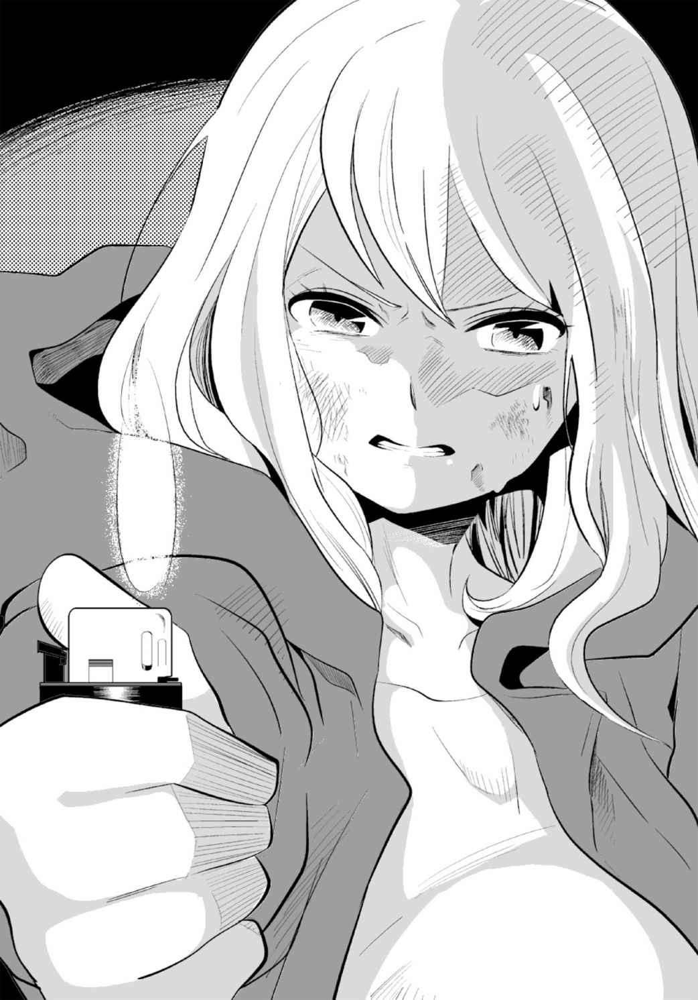
苦悶に満ちた絶叫が四方から響いた。やがてそれは徐々に小さくなり、聞こえなくなった。
ぱちぱちと写真が燃える音だけが響き、そのほとんどが焼失すると、佳夕は手を離した。写真の燃えかすは、わずかに残された部分も焼き尽くし、泥に沈んだ。
あたりに静寂が戻った。佳夕は力尽きたように、へなへなと泥の中に尻餅をついた。
......終わった......の......？
深いため息を漏らす。ふと壁に目を向けた。
玲花に似た白い人影はどこにもなかった。
......ありがとう......玲花......。
佳夕は震えを抑えるように、両腕で自分を抱きしめた。
いつ眠りについたのか、よく思い出せない。
闇から自分に呼びかける声が聞こえ、佳夕は目を覚ました。
病室のベッドの上で横になっていた。二人の刑事が、看護師と共に佳夕の顔を覗き込んでいる。
記憶が少し混乱していた。
佳夕はトンネルの奥で倒れているところを、捜査中の刑事に発見されたという。腹部を何者かに刺され、重傷を負っていたが、発見が早かったことが幸いして一命を取りとめた。
警察は、佳夕がマスク殺人鬼に襲われたと考え、付近の山々を捜索したが、犯人の行方はおろか、手がかりすらもつかめなかった。相変わらず警察は重要参考人として一ノ谷未沙の行方を追っているという。
佳夕の一連の行動は、警察から学校を通じて両親にも知らされ、自宅謹慎処分を受けた。
牧村やリリも同様だった。心霊写真部も休部となり、実質、廃部の扱いとなった。
それからしばらく経ったある日の午後。腹部の傷も癒 えた佳夕は下校中、突然、メールを受け取った。送信者の欄には〝部長〟とあった。
もう部長じゃないんだけれど......。
いまだにアドレス名は部長のままだし、今更、名字で呼ぶのも抵抗があった。
それにしても部長からメールなんて何事？ 不思議に思いながらメールを開いた。
〈二宮さん、すごい夕焼けだな〉
そういえば......ずっと空なんて見ていなかった。
様々な変化が一気に押し寄せて、まったく余裕がなかった。
空を見上げた佳夕は息をのんだ。赤や朱、オレンジに黄色が幾重にも交差する、身震いするほどに美しい夕焼けがそこには広がっていた。
やっと......巡り会えた......。
佳夕は感激のあまり、目を潤ませた。興奮しながら空をぐるりと見回し、その下にある校舎の屋上で目をとめた。誰かが立っている。
牧村だった。佳夕は校舎へ戻り、階段を駆け上がった。
屋上にたどり着くと、牧村が笑みを浮かべて迎えた。
「二宮さん、久しぶり」
佳夕も微笑んだ。
「これが君の言っていた最高の夕焼け、かな」
牧村が一眼レフカメラを取り出し、空に向けてシャッターを切った。佳夕もスクールバッグからコンパクトカメラを取り出し、同じようにかざした。
佳夕の近くで、牧村が撮ったばかりの画像を再生する。
「うん......いいな.........」
佳夕もその声にうなずいた。
牧村はカメラのモニターをじっと見つめ、うっとりとしてつぶやいた。
「本当に......きれいな夕焼けだ......。そこに二宮さんの顔がうっすらと浮かんでいる......」
「......えっ......？」
佳夕はカメラの操作を止め、牧村を見た。
「私の......顔......？」
牧村は薄笑みを浮かべ、佳夕に近付いた。
「ほら......」
佳夕の顔にカメラを近付けたとき、もう一方の手が素早く動いた。
驚く佳夕の顔の、右頰から左のこめかみに鋭い痛みが走った。
「あ......うぅ......」
うまく言葉が出ない。顔面に生温かい不快なぬめりがしたたる。
「これ......二宮さんの......心霊写真......だよ......」
牧村は顔をひきつらせる。その右手には古びたナイフが握られていた。
「......ぶ......部長.........」
「......だから言っただろ............逃げられないって......」
声色が変わり、牧村であって牧村ではない存在が現れた。
「そんな......」
動揺する佳夕の腹に、牧村は迷うことなくナイフを突き刺した。牧村の両目が白目をむく。にたりとして、ゆっくりとナイフを佳夕の腹から引き抜いた。
佳夕はうめきながら後ずさりした。顔面と腹から鮮血があふれ、背後のフェンスに背を持たれた。牧村は全身を痙攣させながら近付くと、痛みとショックで満足に抵抗できない佳夕の顔面にナイフを振り下ろし、今度は、目と鼻の間を左から右に引き裂いた。血飛沫 が両眼の視界をにじませ、ぐらついた体が尻餅をつきそうになる。そして再びナイフで佳夕の腹を突いた。
ぐったりとうなだれる佳夕の首を左手でつかみ、ふわっと軽々しく持ち上げ、体をフェンスの上に横たわらせた。
佳夕は仰向けのまま、血まみれになった顔で、パノラマに広がる赤い空を呆然と見つめた。
......夕焼け......。......吸い......込まれ......そう......。
うつろなまなざしで、まるで救いを求めるように空に向かって、右手を上げようとした。
あ......。手に重みを感じた。律儀にもカメラを持っている。
ゆ......夕焼けを......まだ......撮って......。
佳夕は空を見つめ、カメラを持つ手に力を込めた。バランスが崩れ、横たわった体がフェンスの外側に傾いた。
意識が遠のいた。空がゆっくりと回転する。
ああっ......。背中がフェンスから離れる。
頭から地上に引き寄せられる。
フェンスの向こうに、逆さになった屋上が見える。牧村が白目をむいて立ち尽くす。
部長......これで......すべてが......。
絶望の淵で、最後に空を見上げた。その手前、伸びた自分の右手にカメラがあった。
カメラ......カメラが......！
佳夕は落下しながら、カメラのレンズを屋上の牧村に向け、シャッターボタンを押した。素早くモニター画面を見つめ、はっとした。牧村の顔には、不気味な別の顔が重なるように浮き上がっていた。
この顔......!? コンクリートの地面が迫る中、佳夕は画面に写る顔をじっと見つめ、残された意識を集中させた。
周囲の雑音が消えた。写真の中に吸い込まれるような衝撃を感じた直後、佳夕ははっと目を覚ました。深い闇に包まれている。水がしたたり、流れる音が静かに響いた。
......わ......私......。
独特のこもった空気のにおい。反響する水の音。そこが廃トンネルの中だということは徐々に理解できた。腹部まで冷たい泥水に浸かっている。佳夕は立ち上がろうとした。しかし力が入らない。
右手を泥の中に入れると、硬い何かに触れた。
......懐中電灯......？ 佳夕はそれをつかんで取り出し、両手でまさぐった。
ううん......違う......。......これは......。
スイッチを入れると、少し間が空いてから電源が入った。一眼レフカメラだった。モニターの光で、周囲がうっすらと明るくなり、シミだらけの煉瓦の壁が見えた。
やっぱり......ここは......廃トンネルの中......。私は......一ノ谷未沙に刺されて......トンネルで倒れたまま......気を失っていた......!?
水の冷たさで、刺された下半身の神経が麻痺してしまったのか、もう体に強い痛みは感じなかった。
......今まで、体験したことは......夢......なの？ それとも......臨 死 体験......？
カメラに付着した泥を拭 い、モニターを再生するが、真っ黒な画像が映っているだけだ。
......夢にしては......生々しい恐怖がまだ体に染みついている......。また......屋上から......。でも......同じではなかった......。......転落したとき、私は最後に部長を撮った......。本能的に......カメラを向け......シャッターボタンを......押していた......。そして......あの画像に吸い込まれるように......ここへ......戻ってきた......？ 私の......力で......？
佳夕はモニターの黒い画像を見つめた。
あのとき......。モニターに映った......部長の顔......。
うっすらと別の顔が重なった......。それは、かつて屋上で襲われたミイラの顔ではなく、リビングで心霊写真を重ねて現れた、不気味に光る大きな顔によく似ていた。
（......だから言っただろ......。......逃げられないって......）
あのしゃべり方......。トンネルで私を刺した......ミイラのような一ノ谷未沙に......よく似ていた......。
一ノ谷未沙......。ふと佳夕の中で疑問がわいた。
あれは本当に一ノ谷未沙だったの......？ 瘦せこけ、醜 悪 な化け物そのものの容姿は、心霊写真にとり憑かれたなれの果てだと思った。
でも彼女が最後に見せた顔は......卒業アルバムで見つけた......玲花にも似た顔だった。
......一ノ谷未沙であって一ノ谷未沙じゃない......。まさか......あれが、一ノ谷未沙にとり憑いていた......山の主......？ ......写真を燃やしただけじゃ......ダメだった......？ 一ノ谷未沙から離れたそいつが......まだ......。
佳夕は煉瓦の壁をじっと見つめた。
......終わっていない......。
壁の向こうに気配を感じた。
いる......。
感じたことのない気配が、ゆっくりと近付いてくる......。
周囲の泥水に波紋が現れ、かすかに地面が揺れた。
しかし佳夕は不思議と強い恐怖を感じなかった。
一ノ谷未沙はそいつが何か特別な存在だと言っていたけど......。......私は違う......。......私には、これまでの心霊写真で感じたのと同じ......ただの霊の気配にしか思えない......。
地鳴りと共に、凄 まじい腐臭が辺りに漂った。咆 哮 にも似た重厚なうめきが四方で鳴動し、空気が震え、耳が圧迫される。
今......私にできること......。
佳夕は自分に言い聞かせながら、ゆっくりとカメラを構えた。
......ものすごい勢いで......来る......。
モニター画面に、煉瓦の壁が映る。
......一ノ谷未沙は......言っていた。
（......おまえには、霊を引き寄せる才能がある......）
私の力......。
（......最も強く、霊の力を引き出し、写真に焼き付ける才能が.........）
一ノ谷未沙よりもうまく心霊写真が撮れること......。でも......それだけじゃ......。
......そうだ、あの屋上の実験のとき......私は玲花に打ち明けた......。
（......信じてもらえないかもしれないけど......。私、写真を見ていると......不思議な感覚にとらわれて......写真に刻まれた痕 跡 というか......過去を垣間見ることができるみたい......）
実際は......写真に刻まれた力に引き込まれ......その世界に入ってしまう......。さっきもそうだ......屋上へトリップした......。
......私に本当に、そんな力があるとしたら......逆に......それを利用すれば......。
佳夕は唾 液 を飲み込み、乾いた喉 を湿らせた。
......終わらせないと......。みんなのためにも......。......もう、誰にも頼らない......。
地鳴りが大きくなるにつれ、壁や天井の隙間から真っ黒なシミが噴き出し、辺りを覆 いはじめた。
きた......。
佳夕は体の震えを抑えながら、うごめき広がる闇に向かって、シャッターボタンを押した。
お願い......！
しかし画像を再生しても、そこには煉瓦の壁が映るだけだった。
ダメだ......。......霊を、とらえきれない......。
闇がうねりを上げ、動揺する佳夕に迫った。
佳夕は無我夢中でシャッターボタンを押し続けた。しかし同じ画像ばかりが写し出される。
そんな......！
突然、佳夕の全身が得体の知れない力に揺り動かされた。四方に体が引きちぎられそうな強烈な衝撃を受けながら、同時に、下品で卑 しい欲望が体を突き上げた。
いやっ！ いやああ！
理不尽なまでの、おぞましい快楽が血肉からわき上がった。佳夕はなすがまま、獣のような雄叫 びを上げた。
心の奥で声が誘う。
さあ......。腹のナイフを......。......そして......新たな......。
......私の声......。......私の意思......。
......違う......違うの......！
体中から響く声に、佳夕は抵抗できず、激しく痙攣をはじめた。
水に浸 かった左手で、腹に突き刺さったままのナイフの柄をつかんだ。
そしてナイフを抜き出そうとしたとき、その手が止まった。
失われた体の痛みを、記憶の奥底で感じ、佳夕は我に返った。
私の......痛み............私の......体......！
「あああああ！」
佳夕は自らの意思で叫ぶと、腹に刺さったナイフを握りしめ、右から左に一気に切り裂いた。
内臓が体液と共に水の中に吐き出され、激烈な痛みを伴いながら、体の感覚が蘇 った。
次の瞬間、右手のカメラを持ち上げ、レンズを自分の顔に向けた。
レンズに、獣のように、真っ赤に充血した目玉が映った。
今だ......！
佳夕は目に全神経を集中し、レンズをじっと見つめて、シャッターボタンを押した。
全身が吸い込まれるような強い衝撃を覚え、断末魔の叫びが耳をつんざいた。その直後ふっと風がやみ、周囲を静寂が包んだ。さっきまで感じた、重く淀んだ空気が消えていた。
佳夕は震えながら息を吐き、恐る恐るモニターの画像を見た。
闇の中に、歪んだ赤黒い顔が浮き上がっていた。あの写真の束に焼き付いた顔がそのまま飛び出してきたような、生々しさと不気味さが漂う。口を裂けんばかりに開けて、その黒くくぼんだ二つの目の奥には、憎悪がにじみ出ていた。
「これが......山の主......哀れな地 縛 霊 ......」
佳夕は画像を見つめながら、カメラの電源を切った。
「......こうする......しか............」
カメラは佳夕の手を離れ、ずぶずぶと泥の中に沈んだ。
佳夕は青ざめた顔で、うっすらと微笑み、やがて目を閉じた。
４
牧村が警察から事情聴取を受けたのは、佳夕に最後の電話をかけた深夜から半日後だった。
マスク殺人鬼の容疑者、一ノ谷未沙の行方を追っていた刑事たちが偶然、廃トンネルの奥で佳夕らしき女性の悲鳴を聞き、中を捜索したという。
近くに佳夕のものと思われるディパックが見つかり、中にあった携帯電話の着信履歴から、事情を知らないかと聞かれたのだ。しかし肝心の遺体はまだ見つかっていないという。
牧村は隠しても仕方ないと思い、佳夕と出会ってからのことや、トンネルで体験したことなどを打ち明けた。
大峰駅の防犯カメラには、二人で駅を出た様子や、翌日、彼女が深夜に駅を出た姿が撮影されていた。なぜ彼女が一人で廃トンネルへ行き、行方をくらましたのか、理由はわからないままだった。
ただ、その悲鳴が聞こえた現場のすぐ近くの泥の中から、一ノ谷未沙の娘、玲花と思われる腐乱死体が発見された。彼女が玲花の死体を探すうち、なんらかの事故や事件に巻き込まれた可能性も否定していない。トンネルのさらに奥では、一ノ谷未沙と思われる白骨死体も見つかっており、現在、検死官が確認を取っているという。
警察は数回にわたり、牧村や、ようやく体調が回復したリリにも事情を聞いたが、大人が首をかしげるような体験を話すだけで、ほどなくして聴取は打ち切られた。
学校は、佳夕の失 踪 と、牧村やリリの証言の因果関係ははっきりしないとして最終的に不問にしたが、心霊写真部は当分の間、休部にするとした。
エピローグ
三月。卒業式を翌日に控えた、雨上がりの放課後、牧村はぬかるんだ校庭の水たまりが、血のように赤く染まっていることに気付いて、足を止めた。
空を見上げ、あっとなった。
これって......二宮さんの言っていた......？
牧村は屋上へ駆け上がった。
毒々しいまでに美しい、幻想的な夕焼けの空が広がっていた。牧村はポケットからコンパクトカメラを取り出し、空に向かって、シャッターボタンを押した。
牧村は警察に一つだけ言っていないことがあった。
あの洞 窟 へ行ってから、体がひどく重く、悪夢にうなされることが多かった。悪夢の大半は、牧村自身が楽しげに人を殺し、その周辺の風景をカメラで撮影する、というものだった。そして最後には、屋上で佳夕をナイフで切り裂き、惨殺する......そんな夢を見ていた。
授業中や登下校中でも、ふっと眠くなるなど、記憶を失うことがあり、彼は不安におびえていた。
ひょっとして......自分もマスク殺人鬼になったのでは......？ そう思いかけていた。
しかし、佳夕が行方不明と教えられた朝、目覚めると、なぜか体の重さが噓 のように消え、それ以降、悪夢は一切見なくなった。リリに聞いても同様だった。
そしてマスク殺人鬼の噂 も、その日を境にぷっつりと聞かなくなった。
......二宮さんが、マスク殺人鬼の霊を倒した......。きっと......自らを犠牲にして......。
そう信じた。
牧村は撮り終えたばかりのカメラの再生ボタンを押した。
〈心霊写真部〉もひとまずなくなってしまった......。僕も卒業してしまう......。
でも......二宮さん......。僕は......これからも写真を集め、撮り続ける......。
モニターに映る画像をじっと見つめた。夕焼けにとけ込むように、それがうっすらとにじんで浮かび上がっていた。いつしか見慣れていた、屈託のない笑顔だった。
牧村は画像に向かって、優しく微笑みを返した。
あとがき
正直、あとがきは苦手なのですが、今回ばかりは最初に、読んでいただいた皆様への、心からの感謝を申し上げたいと思います。
既刊の文庫本『心霊写真部』が第一巻のみで今も続刊が出せず（電子書籍版では全十五話で完結）、映像版『心霊写真部』（ハピネットよりＤＶＤが発売中）も『壱限目』『弐限目』の二巻（六話）で中断したまま。そんな腸閉塞のような状況の中、今回新たに生まれた『Ｒｅ：心霊写真部』は同じ轍 を踏まぬよう、ラストまでしっかり書かせていただきました。今はほっとしています。あとは読者の皆様が楽しんでもらえたら何よりです。
さて、小説としては一定の結末を迎えたものの、『心霊写真部』全体では、まだまだ道半ばです。その理由の前に、今回の作品の経緯を説明させていただきます。
もともと『心霊写真部』の原作は二種類ありました。
当初執筆したのは、映像版と同じ、部長やリリがいる〝奇妙な部活物〟。そもそもの出発点は、私が監督とシナリオを手がけたＮｉｎｔｅｎｄｏＤＳのホラーゲーム『トワイライトシンドローム 禁じられた都市伝説』に続く、新たなゲーム作品として企画したものです。その原作小説が紆余曲折を経て、ソニー・デジタルの携帯サイトで連載が決まりました。この際、携帯サイト向けに、設定をより現実的なものへと変更しました（これが旧・文庫本版）。〝本物の心霊写真〟を使い、舞台が雑誌編集部に変わったのはそのためです。その後、映像化が決まった段階で、脚本も担当した私は『心霊写真部』を当初の試みに戻そうと思い、最初の原作小説を基にしました。それが映像版『心霊写真部 壱限目／弐限目』となりました。
当初の予定では、最低でも『参限目』『四限目』まで製作され、プロデューサーから「続編につながるように伏線を張ってほしい」と依頼されています。私もそのつもりで『四限目』まで脚本を執筆しました。故に『弐限目』は気になるところで終わっています。その後、『参限目』以降は今も作られていません。ＤＶＤの売り上げがイマイチだったのも事実ですが、いろいろ大人の事情も絡んでいます。しかし製作が完全に中止でもなく、監督、キャストも続編には意欲を見せています（事実、続編の企画は何度か浮上しては消えているのです）。
また、今回の出版化は、帯にも書かれているようにニコ生ホラーの反響が大きかったこともあります。昨年夏の『ニコニコ生放送ホラー百物語』にて映像版『心霊写真部 壱限目／弐限目』を放送したところ、視聴者アンケート評価で一位（〝良かった〟が91 ・３％）をいただきました。『呪怨』『リング』『着信アリ』『リアル鬼ごっこ』『ひぐらしのなく頃に』など、錚 々 たる顔ぶれの百作品以上のホラー映画を押さえての快挙です（だからといって『心霊写真部』が歴史的な傑作とは微 塵 にも思っていません。現在のホラー映画界を取り巻く観客の不満などが反動となって現れたのではないかと個人的には思います）。同時に、残された謎も山積みで、視聴者から「続きは？」「参限目は？」と多数の問い合わせをいただきました。残念ながら、いまだに続編製作のゴーサインは出ていませんが、ひとまず先に今回のリブート版で全ての謎を解明し、続編の製作に弾みを付けられないかと思っています。
そうした〝映像版の続編製作のカンフル剤に〟という意味合いはあったものの、実際に執筆してみると、当初の思惑を超えた仕上がりになったと思います。確かに『壱限目』『弐限目』のおさらいと共に、映像化されていない『参限目』『四限目』の内容を、ベースとなった最初の原作小説を基に描いています。当初は簡単な加筆で済むと思ったのですが、細部で凝ってしまい、構成を入れ替え、加筆に次ぐ加筆で、想像以上に手間がかかりました。出版社側もリブート版として、もっとライトな内容を想定していましたが、結果としてボリュームもけっこうなものに（初稿入稿時にはかなり削りました）。挿画付きの小説というのも初体験ながら、新鋭・真 さんのイラストが映像版と小説との見事な橋渡し役となり、なおかつ作品に深みと彩りを与えていただき、そのイラストに自分自身も刺激を受け、過去の作品とはまた違った魅力が生まれたかと。その意味でも貴重な経験だったと思います。
最後に、私の遅筆に辛抱強く付き合っていただいた竹書房の富田利一氏、限られたスケジュールの中、素晴らしいイラストで作品の世界観を表現していただいた真 さん、そして拙作をニコ生ホラー一位にまで高めてくれた永江二朗監督ならびに映像版『心霊写真部』のスタッフ、キャストの皆様に心から御礼を申し上げます。
二〇一四年一月
福谷 修
［著］
福谷 修
Osamu Fukutani
ホラー、ミステリーを中心に映画監督、小説家、ゲームクリエーターとしてて活動。作家としては『渋谷怪談』（竹書房文庫）でデビュー後、ホラー小説を中心に『子守り首』（幻冬舎文庫）『こわい童謡』『心霊病棟～ささやく死体』（竹書房文庫）『霧塚タワー』（ＴＯブックス）ほか多数。ＮＩＮＴＥＮＤＯ ＤＳのゲームソフト『トワイライトシンドローム禁じられた都市伝説』（２００８）の監督・脚本も手がけ、「携帯機史上最恐のゲームソフト」と評価される。
心霊写真部［電子書籍版］
発行日 ２０１４年10 月１日 発行
著 福谷 修
イラスト 真
イラスト協力 あさぎ
発行人 後藤明信
発行所 株式会社竹書房
〒１０２－００７２
東京都千代田区飯田橋２－７－３
ＴＥＬ ０３－３２６４－１５７６
ＵＲＬ http://www.takeshobo.co.jp
データ加工 有限会社ワイズネット
©福谷 修 2014
本書の一部あるいは全部を著作権者および株式会社竹書房に無断で複写・複製すること、および放送・上演・公衆送信（ホームページ上への掲載を含む）などは、法律で認められた場合を除き著作権の侵害となります。